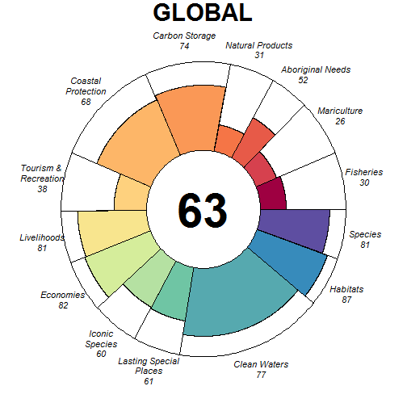
| id | score | status | future |
|---|---|---|---|
| Index | 63.74 | NA | 63.30 |
| Food Provision | 32.30 | 30.38 | 34.21 |
| . Fisheries | 30.29 | 28.34 | 32.24 |
| . Mariculture | 25.93 | 25.12 | 26.74 |
| Aboriginal Needs | 51.96 | 49.28 | 54.64 |
| Natural Products | 30.54 | 28.58 | 32.51 |
| Carbon Storage | 73.59 | 80.07 | 67.12 |
| Coastal Protection | 68.50 | 69.15 | 67.85 |
| Tourism & Recreation | 38.17 | 37.46 | 38.87 |
| Coastal Livelihoods & Economies | 81.66 | 83.14 | 80.18 |
| . Livelihoods | 80.84 | 78.19 | 83.50 |
| . Economies | 82.48 | 88.09 | 76.87 |
| Sense of Place | 59.90 | 59.07 | 60.74 |
| . Iconic Species | 59.71 | 61.42 | 58.00 |
| . Lasting Special Places | 61.26 | 57.97 | 64.54 |
| Clean Waters | 76.77 | 77.95 | 75.59 |
| Biodiversity | 84.16 | 85.62 | 82.76 |
| . Habitats | 87.42 | 87.68 | 87.19 |
| . Species | 81.09 | 83.59 | 78.60 |
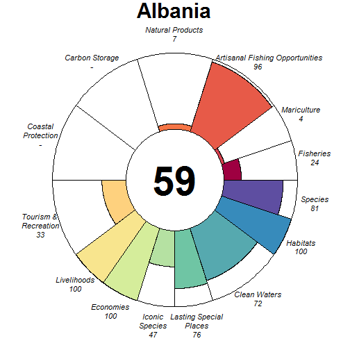
| id | score | status | future | trend | pressures | resilience |
|---|---|---|---|---|---|---|
| Index | 60.53 | NA | 61.67 | NA | NA | NA |
| Food Provision | 20.73 | 20.05 | 21.40 | -0.03 | NA | NA |
| . Fisheries | 23.76 | 23.00 | 24.51 | -0.03 | 30.54 | 56.57 |
| . Mariculture | 4.26 | 4.03 | 4.48 | 0.00 | 35.00 | 68.75 |
| Aboriginal Needs | 52.43 | 50.00 | 54.86 | 0.00 | 27.02 | 56.48 |
| Natural Products | 7.39 | 7.24 | 7.54 | -0.02 | 47.56 | 63.21 |
| Carbon Storage | NA | NA | NA | NA | NaN | NA |
| Coastal Protection | NA | NA | NA | NA | NaN | NA |
| Tourism & Recreation | 32.84 | 31.86 | 33.82 | -0.01 | 55.00 | 75.00 |
| Coastal Livelihoods & Economies | 100.00 | 100.00 | 100.00 | 0.78 | NA | NA |
| . Livelihoods | 100.00 | 100.00 | 100.00 | 0.57 | 33.88 | 39.70 |
| . Economies | 100.00 | 100.00 | 100.00 | 0.99 | 32.04 | 49.25 |
| Sense of Place | 61.70 | 55.49 | 67.92 | 0.20 | NA | NA |
| . Iconic Species | 47.39 | 54.29 | 40.50 | -0.50 | 36.75 | 61.33 |
| . Lasting Special Places | 76.01 | 56.69 | 95.33 | 0.90 | 44.53 | 68.18 |
| Clean Waters | 72.17 | 71.54 | 72.80 | 0.03 | 75.00 | 75.00 |
| Biodiversity | 90.35 | 91.60 | 89.09 | -0.08 | NA | NA |
| . Habitats | 99.93 | 99.86 | 100.00 | 0.02 | 29.90 | 59.51 |
| . Species | 80.77 | 83.35 | 78.19 | -0.18 | 37.23 | 55.37 |
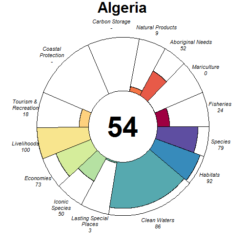
| id | score | status | future | trend | pressures | resilience |
|---|---|---|---|---|---|---|
| Index | 55.39 | NA | 54.37 | NA | NA | NA |
| Food Provision | 23.69 | 22.96 | 24.42 | -0.03 | NA | NA |
| . Fisheries | 23.73 | 23.00 | 24.46 | -0.03 | 30.55 | 55.94 |
| . Mariculture | 0.03 | 0.03 | 0.03 | 0.00 | 33.32 | 58.33 |
| Aboriginal Needs | 52.24 | 50.00 | 54.48 | 0.00 | 28.09 | 55.27 |
| Natural Products | 9.30 | 8.95 | 9.65 | -0.07 | 29.33 | 66.17 |
| Carbon Storage | NA | NA | NA | NA | NaN | NA |
| Coastal Protection | NA | NA | NA | NA | NaN | NA |
| Tourism & Recreation | 18.16 | 17.81 | 18.52 | 0.00 | 51.11 | 62.50 |
| Coastal Livelihoods & Economies | 86.33 | 100.00 | 72.66 | -0.35 | NA | NA |
| . Livelihoods | 100.00 | 100.00 | 100.00 | 0.19 | 32.08 | 31.78 |
| . Economies | 72.66 | 100.00 | 45.32 | -0.90 | 30.81 | 47.67 |
| Sense of Place | 26.18 | 29.83 | 22.54 | -0.25 | NA | NA |
| . Iconic Species | 49.76 | 57.14 | 42.38 | -0.50 | 36.46 | 59.69 |
| . Lasting Special Places | 2.60 | 2.52 | 2.69 | 0.00 | 40.80 | 61.93 |
| Clean Waters | 86.36 | 81.21 | 91.51 | 0.22 | 68.51 | 62.50 |
| Biodiversity | 85.27 | 84.71 | 85.84 | -0.10 | NA | NA |
| . Habitats | 91.88 | 88.23 | 95.54 | -0.02 | 30.67 | 58.83 |
| . Species | 78.66 | 81.19 | 76.14 | -0.18 | 36.95 | 55.14 |
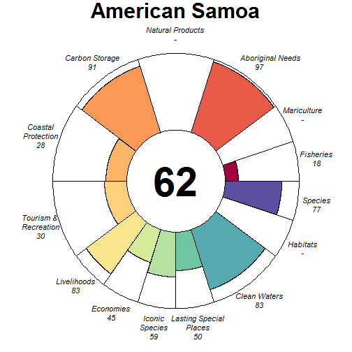
| id | score | status | future | trend | pressures | resilience |
|---|---|---|---|---|---|---|
| Index | 56.93 | NA | 55.25 | NA | NA | NA |
| Food Provision | 17.87 | 17.00 | 18.74 | 0.02 | NA | NA |
| . Fisheries | 17.87 | 17.00 | 18.74 | 0.02 | 25.62 | 52.66 |
| . Mariculture | NA | NA | NA | NA | 25.32 | 30.27 |
| Aboriginal Needs | 52.27 | 50.00 | 54.54 | 0.00 | 25.77 | 53.29 |
| Natural Products | NA | NA | NA | NA | NA | NA |
| Carbon Storage | 90.99 | 91.28 | 90.70 | NA | 32.46 | 30.51 |
| Coastal Protection | 28.21 | 28.68 | 27.74 | -0.02 | 35.37 | 30.51 |
| Tourism & Recreation | 30.16 | 30.68 | 29.64 | 0.01 | 40.73 | 29.22 |
| Coastal Livelihoods & Economies | 64.30 | 69.90 | 58.70 | -0.31 | NA | NA |
| . Livelihoods | 83.42 | 93.66 | 73.18 | -0.43 | 25.88 | 46.29 |
| . Economies | 45.18 | 46.14 | 44.22 | -0.19 | 25.80 | 52.38 |
| Sense of Place | 54.45 | 53.93 | 54.97 | 0.02 | NA | NA |
| . Iconic Species | 58.65 | 62.50 | 54.81 | -0.30 | 31.24 | 54.86 |
| . Lasting Special Places | 50.24 | 45.36 | 55.13 | 0.35 | 35.76 | 30.56 |
| Clean Waters | 82.56 | 84.98 | 80.14 | 0.02 | 51.21 | 29.22 |
| Biodiversity | 76.58 | 89.27 | 70.25 | -0.14 | NA | NA |
| . Habitats | NA | 95.64 | NA | -0.02 | 34.94 | NA |
| . Species | 76.58 | 82.91 | 70.25 | -0.26 | 31.05 | 38.30 |
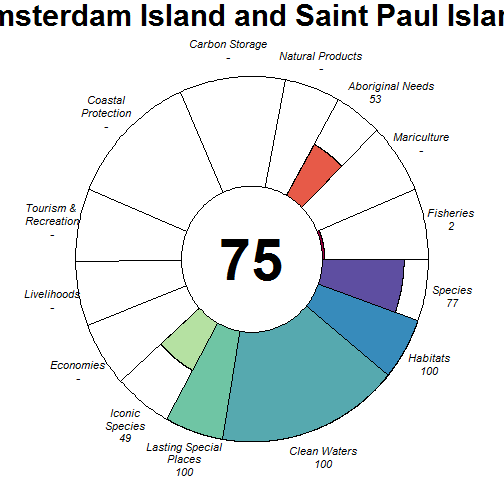
| id | score | status | future | trend | pressures | resilience |
|---|---|---|---|---|---|---|
| Index | 67.02 | NA | 67.44 | NA | NA | NA |
| Food Provision | 2.10 | 2.00 | 2.20 | -0.01 | NA | NA |
| . Fisheries | 2.10 | 2.00 | 2.20 | -0.01 | 25.37 | 57.38 |
| . Mariculture | NA | NA | NA | NA | 25.02 | 70.34 |
| Aboriginal Needs | 53.46 | 50.00 | 56.92 | 0.00 | 25.28 | 67.23 |
| Natural Products | NA | NA | NA | NA | NA | NA |
| Carbon Storage | NA | NA | NA | NA | NaN | NA |
| Coastal Protection | NA | NA | NA | NA | NaN | NA |
| Tourism & Recreation | NA | NA | NA | NA | 25.47 | 73.53 |
| Coastal Livelihoods & Economies | NA | NA | NA | NA | NA | NA |
| . Livelihoods | NA | NA | NA | NA | NaN | 34.82 |
| . Economies | NA | NA | NA | NA | NaN | 50.00 |
| Sense of Place | 74.66 | 73.33 | 75.99 | 0.00 | NA | NA |
| . Iconic Species | 49.33 | 46.67 | 51.99 | 0.00 | 26.80 | 61.35 |
| . Lasting Special Places | 100.00 | 100.00 | 100.00 | 0.00 | 25.19 | 71.92 |
| Clean Waters | 99.99 | 99.98 | 100.00 | 0.00 | 25.77 | 73.53 |
| Biodiversity | 88.60 | 89.27 | 87.93 | -0.10 | NA | NA |
| . Habitats | 100.00 | 100.00 | 100.00 | 0.00 | 25.75 | 60.77 |
| . Species | 77.20 | 78.54 | 75.86 | -0.21 | 28.28 | 59.77 |
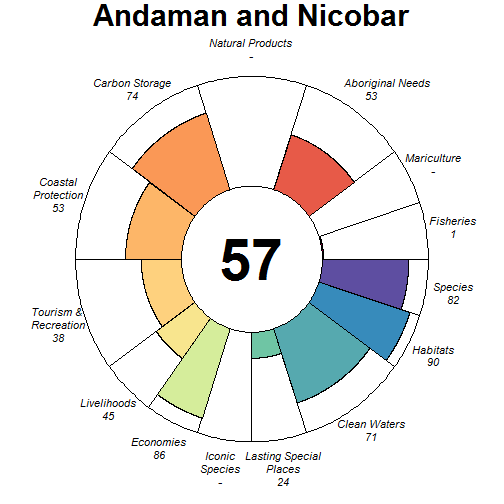
| id | score | status | future | trend | pressures | resilience |
|---|---|---|---|---|---|---|
| Index | 52.46 | NA | 50.69 | NA | NA | NA |
| Food Provision | 1.05 | 1.00 | 1.10 | 0.00 | NA | NA |
| . Fisheries | 1.05 | 1.00 | 1.10 | 0.00 | 26.57 | 58.27 |
| . Mariculture | NA | NA | NA | NA | 27.59 | 60.73 |
| Aboriginal Needs | 52.71 | 50.00 | 55.41 | 0.00 | 26.54 | 59.35 |
| Natural Products | NA | NA | NA | NA | NA | NA |
| Carbon Storage | 73.50 | 86.45 | 60.55 | -0.58 | 32.12 | 58.94 |
| Coastal Protection | 52.91 | 51.85 | 53.98 | -0.05 | 36.74 | 58.94 |
| Tourism & Recreation | 38.08 | 36.87 | 39.29 | 0.00 | 54.41 | 75.00 |
| Coastal Livelihoods & Economies | 65.55 | 73.02 | 58.08 | -0.34 | NA | NA |
| . Livelihoods | 45.33 | 46.04 | 44.62 | -0.14 | 30.73 | 49.49 |
| . Economies | 85.77 | 100.00 | 71.54 | -0.54 | 29.63 | 53.83 |
| Sense of Place | 23.75 | 22.50 | 25.00 | 0.00 | NA | NA |
| . Iconic Species | NA | NA | NA | NA | 33.64 | 62.59 |
| . Lasting Special Places | 23.75 | 22.50 | 25.00 | 0.00 | 41.41 | 75.00 |
| Clean Waters | 71.28 | 70.69 | 71.87 | 0.02 | 74.01 | 75.00 |
| Biodiversity | 86.03 | 87.33 | 84.73 | -0.20 | NA | NA |
| . Habitats | 90.39 | 89.71 | 91.08 | -0.14 | 30.34 | 63.23 |
| . Species | 81.66 | 84.95 | 78.38 | -0.25 | 33.15 | 60.77 |
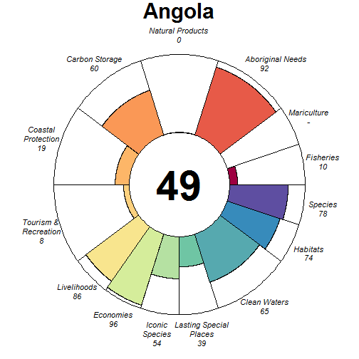
| id | score | status | future | trend | pressures | resilience |
|---|---|---|---|---|---|---|
| Index | 46.62 | NA | 41.80 | NA | NA | NA |
| Food Provision | 10.49 | 10.00 | 10.98 | 0.01 | NA | NA |
| . Fisheries | 10.49 | 10.00 | 10.98 | 0.01 | 27.06 | 54.87 |
| . Mariculture | NA | NA | NA | NA | 26.78 | 62.50 |
| Aboriginal Needs | 52.24 | 50.00 | 54.48 | 0.00 | 26.80 | 53.97 |
| Natural Products | 0.33 | 0.33 | 0.34 | -0.07 | 26.81 | 53.98 |
| Carbon Storage | 60.42 | 86.94 | 33.89 | -1.00 | 31.19 | 49.32 |
| Coastal Protection | 18.70 | 27.05 | 10.35 | -1.00 | 33.40 | 49.32 |
| Tourism & Recreation | 7.59 | 7.50 | 7.69 | 0.00 | 55.00 | 62.50 |
| Coastal Livelihoods & Economies | 91.17 | 93.43 | 88.92 | -0.15 | NA | NA |
| . Livelihoods | 86.49 | 86.86 | 86.11 | -0.11 | 32.26 | 51.32 |
| . Economies | 95.86 | 100.00 | 91.72 | -0.20 | 32.26 | 47.96 |
| Sense of Place | 46.31 | 47.13 | 45.49 | -0.12 | NA | NA |
| . Iconic Species | 53.87 | 56.67 | 51.08 | -0.25 | 34.01 | 54.89 |
| . Lasting Special Places | 38.74 | 37.59 | 39.90 | 0.00 | 42.15 | 60.80 |
| Clean Waters | 64.54 | 66.18 | 62.90 | -0.01 | 75.00 | 62.50 |
| Biodiversity | 75.68 | 83.01 | 68.35 | -0.37 | NA | NA |
| . Habitats | 73.72 | 83.88 | 63.56 | -0.51 | 28.89 | 58.62 |
| . Species | 77.65 | 82.15 | 73.15 | -0.24 | 33.91 | 48.50 |
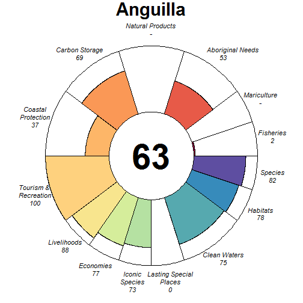
| id | score | status | future | trend | pressures | resilience |
|---|---|---|---|---|---|---|
| Index | 57.63 | NA | 53.55 | NA | NA | NA |
| Food Provision | 2.11 | 2.00 | 2.22 | 0.01 | NA | NA |
| . Fisheries | 2.11 | 2.00 | 2.22 | 0.01 | 25.63 | 57.21 |
| . Mariculture | NA | NA | NA | NA | 26.74 | 63.13 |
| Aboriginal Needs | 52.64 | 50.00 | 55.28 | 0.00 | 25.88 | 57.87 |
| Natural Products | NA | NA | NA | NA | NA | NA |
| Carbon Storage | 68.91 | 100.00 | 37.83 | -1.00 | 37.43 | 52.06 |
| Coastal Protection | 37.46 | 38.66 | 36.26 | -0.14 | 42.76 | 52.06 |
| Tourism & Recreation | 100.00 | 100.00 | 100.00 | -0.06 | 50.69 | 66.40 |
| Coastal Livelihoods & Economies | 82.22 | 85.40 | 79.04 | -0.17 | NA | NA |
| . Livelihoods | 87.50 | 92.39 | 82.60 | -0.19 | 29.74 | 35.94 |
| . Economies | 76.94 | 78.41 | 75.47 | -0.15 | 29.46 | 49.46 |
| Sense of Place | 36.26 | 37.14 | 35.38 | -0.20 | NA | NA |
| . Iconic Species | 72.52 | 74.29 | 70.76 | -0.20 | 34.92 | 61.13 |
| . Lasting Special Places | 0.00 | 0.00 | 0.00 | NA | 41.14 | 65.59 |
| Clean Waters | 74.55 | 74.08 | 75.03 | 0.03 | 67.82 | 66.40 |
| Biodiversity | 79.76 | 84.21 | 75.30 | -0.28 | NA | NA |
| . Habitats | 77.75 | 83.91 | 71.58 | -0.34 | 35.47 | 60.76 |
| . Species | 81.77 | 84.52 | 79.02 | -0.21 | 33.24 | 56.56 |
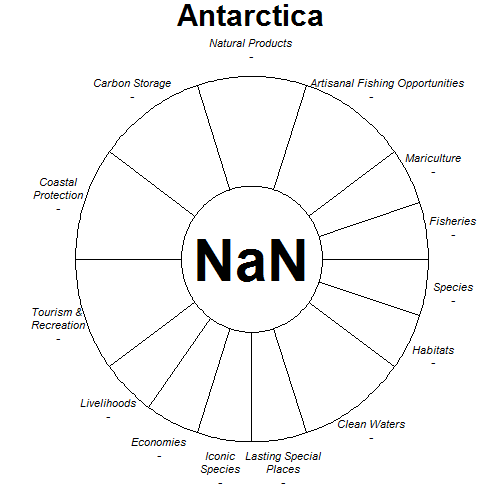
| id | score | status | future | trend | pressures | resilience |
|---|---|---|---|---|---|---|
| Index | NA | NA | NA | NA | NA | NA |
| Food Provision | NA | NA | NA | NA | NA | NA |
| . Fisheries | NA | NA | NA | NA | NA | NA |
| . Mariculture | NA | NA | NA | NA | NA | NA |
| Aboriginal Needs | NA | NA | NA | NA | NA | NA |
| Natural Products | NA | NA | NA | NA | NA | NA |
| Carbon Storage | NA | NA | NA | NA | NA | NA |
| Coastal Protection | NA | NA | NA | NA | NA | NA |
| Tourism & Recreation | NA | NA | NA | NA | NA | NA |
| Coastal Livelihoods & Economies | NA | NA | NA | NA | NA | NA |
| . Livelihoods | NA | NA | NA | NA | NA | NA |
| . Economies | NA | NA | NA | NA | NA | NA |
| Sense of Place | NA | NA | NA | NA | NA | NA |
| . Iconic Species | NA | NA | NA | NA | NA | NA |
| . Lasting Special Places | NA | NA | NA | NA | NA | NA |
| Clean Waters | NA | NA | NA | NA | NA | NA |
| Biodiversity | NA | NA | NA | NA | NA | NA |
| . Habitats | NA | NA | NA | NA | NA | NA |
| . Species | NA | NA | NA | NA | NA | NA |
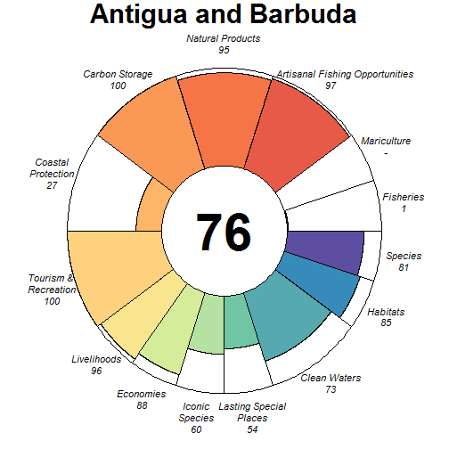
| id | score | status | future | trend | pressures | resilience |
|---|---|---|---|---|---|---|
| Index | 64.66 | NA | 65.41 | NA | NA | NA |
| Food Provision | 1.05 | 1.00 | 1.10 | 0.00 | NA | NA |
| . Fisheries | 1.05 | 1.00 | 1.10 | 0.00 | 25.99 | 57.60 |
| . Mariculture | NA | NA | NA | NA | 26.53 | 63.54 |
| Aboriginal Needs | 52.75 | 50.00 | 55.50 | 0.00 | 26.24 | 59.58 |
| Natural Products | 95.19 | 90.43 | 99.94 | -0.02 | 27.35 | 63.80 |
| Carbon Storage | 100.00 | 100.00 | 100.00 | NA | 38.14 | 58.03 |
| Coastal Protection | 27.16 | 28.56 | 25.75 | -0.22 | 43.56 | 58.03 |
| Tourism & Recreation | 100.00 | 100.00 | 100.00 | -0.01 | 52.62 | 75.00 |
| Coastal Livelihoods & Economies | 91.94 | 85.65 | 98.22 | 0.16 | NA | NA |
| . Livelihoods | 95.53 | 92.39 | 98.67 | 0.06 | 29.93 | 38.76 |
| . Economies | 88.35 | 78.91 | 97.78 | 0.26 | 29.30 | 49.46 |
| Sense of Place | 56.85 | 57.54 | 56.17 | -0.16 | NA | NA |
| . Iconic Species | 59.75 | 63.64 | 55.86 | -0.31 | 35.71 | 62.12 |
| . Lasting Special Places | 53.95 | 51.44 | 56.47 | 0.00 | 41.93 | 71.59 |
| Clean Waters | 73.42 | 73.22 | 73.62 | -0.01 | 71.03 | 75.00 |
| Biodiversity | 83.06 | 84.27 | 81.85 | -0.16 | NA | NA |
| . Habitats | 84.64 | 83.91 | 85.36 | -0.11 | 32.83 | 60.25 |
| . Species | 81.49 | 84.63 | 78.34 | -0.22 | 33.64 | 55.62 |
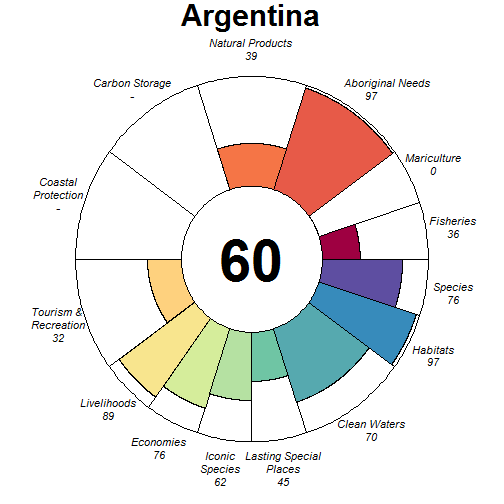
| id | score | status | future | trend | pressures | resilience |
|---|---|---|---|---|---|---|
| Index | 60.31 | NA | 59.24 | NA | NA | NA |
| Food Provision | 35.67 | 34.99 | 36.35 | -0.08 | NA | NA |
| . Fisheries | 35.68 | 35.00 | 36.36 | -0.08 | 28.41 | 56.45 |
| . Mariculture | 0.07 | 0.07 | 0.07 | 0.00 | 28.00 | 50.73 |
| Aboriginal Needs | 52.50 | 50.00 | 55.00 | 0.00 | 26.66 | 56.96 |
| Natural Products | 38.94 | 34.86 | 43.03 | 0.19 | 26.12 | 59.17 |
| Carbon Storage | NA | NA | NA | NA | NaN | NA |
| Coastal Protection | NA | NA | NA | NA | NaN | NA |
| Tourism & Recreation | 32.09 | 32.31 | 31.88 | -0.01 | 52.16 | 50.00 |
| Coastal Livelihoods & Economies | 82.53 | 88.71 | 76.35 | -0.14 | NA | NA |
| . Livelihoods | 88.71 | 77.42 | 100.00 | 0.52 | 29.39 | 50.14 |
| . Economies | 76.35 | 100.00 | 52.70 | -0.80 | 29.23 | 48.92 |
| Sense of Place | 53.57 | 53.58 | 53.56 | -0.09 | NA | NA |
| . Iconic Species | 62.33 | 63.64 | 61.03 | -0.19 | 33.07 | 58.73 |
| . Lasting Special Places | 44.80 | 43.53 | 46.08 | 0.00 | 41.31 | 59.09 |
| Clean Waters | 70.38 | 73.74 | 67.01 | -0.04 | 70.26 | 50.00 |
| Biodiversity | 86.20 | 85.76 | 86.64 | -0.10 | NA | NA |
| . Habitats | 96.65 | 93.31 | 100.00 | 0.00 | 28.16 | 58.12 |
| . Species | 75.74 | 78.20 | 73.27 | -0.20 | 33.85 | 55.10 |
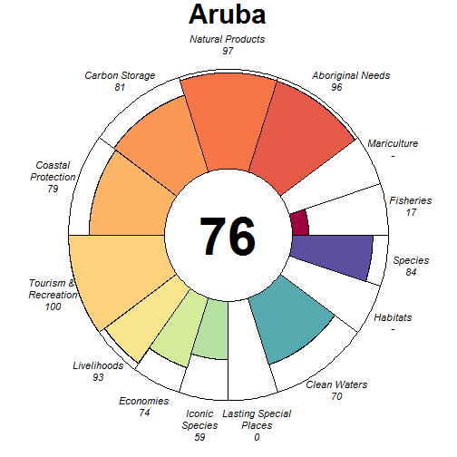
| id | score | status | future | trend | pressures | resilience |
|---|---|---|---|---|---|---|
| Index | 66.86 | NA | 65.27 | NA | NA | NA |
| Food Provision | 17.07 | 16.00 | 18.14 | 0.05 | NA | NA |
| . Fisheries | 17.07 | 16.00 | 18.14 | 0.05 | 26.25 | 57.56 |
| . Mariculture | NA | NA | NA | NA | 27.32 | 63.13 |
| Aboriginal Needs | 52.61 | 50.00 | 55.22 | 0.00 | 26.37 | 58.02 |
| Natural Products | 96.51 | 93.03 | 100.00 | 0.07 | 29.40 | 61.58 |
| Carbon Storage | 81.26 | 99.51 | 63.02 | -0.61 | 38.52 | 52.06 |
| Coastal Protection | 78.66 | 76.62 | 80.69 | 0.03 | 42.63 | 52.06 |
| Tourism & Recreation | 100.00 | 100.00 | 100.00 | 0.01 | 52.36 | 66.40 |
| Coastal Livelihoods & Economies | 83.38 | 84.52 | 82.24 | -0.10 | NA | NA |
| . Livelihoods | 93.09 | 93.79 | 92.38 | -0.04 | 30.25 | 32.97 |
| . Economies | 73.67 | 75.24 | 72.10 | -0.16 | 29.75 | 49.46 |
| Sense of Place | 29.43 | 31.11 | 27.75 | -0.29 | NA | NA |
| . Iconic Species | 58.86 | 62.22 | 55.49 | -0.29 | 36.24 | 61.48 |
| . Lasting Special Places | 0.00 | 0.00 | 0.00 | NA | 43.35 | 65.59 |
| Clean Waters | 70.43 | 70.32 | 70.53 | 0.03 | 70.60 | 66.40 |
| Biodiversity | 83.83 | 90.88 | 81.81 | -0.24 | NA | NA |
| . Habitats | NA | 95.91 | NA | -0.29 | 37.64 | NA |
| . Species | 83.83 | 85.86 | 81.81 | -0.18 | 34.42 | 56.57 |
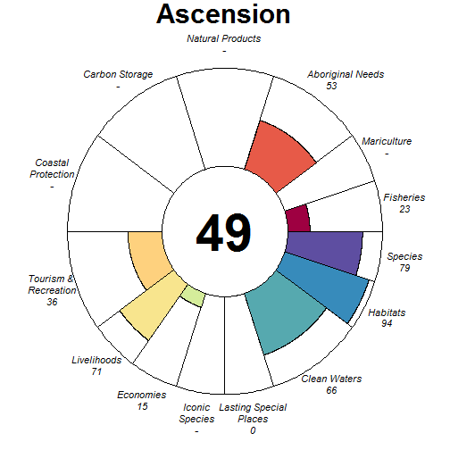
| id | score | status | future | trend | pressures | resilience |
|---|---|---|---|---|---|---|
| Index | 45.14 | NA | 45.22 | NA | NA | NA |
| Food Provision | 23.34 | 22.00 | 24.69 | 0.02 | NA | NA |
| . Fisheries | 23.34 | 22.00 | 24.69 | 0.02 | 25.29 | 58.83 |
| . Mariculture | NA | NA | NA | NA | 25.33 | 70.34 |
| Aboriginal Needs | 52.70 | 50.00 | 55.40 | 0.00 | 25.47 | 58.20 |
| Natural Products | NA | NA | NA | NA | NA | NA |
| Carbon Storage | NA | NA | NA | NA | NaN | NA |
| Coastal Protection | NA | NA | NA | NA | NaN | NA |
| Tourism & Recreation | 36.12 | 35.03 | 37.21 | 0.00 | 55.00 | 73.53 |
| Coastal Livelihoods & Economies | 42.98 | 45.54 | 40.43 | -0.43 | NA | NA |
| . Livelihoods | 71.08 | 71.42 | 70.74 | -0.04 | 26.25 | 30.85 |
| . Economies | 14.89 | 19.66 | 10.11 | -0.82 | 26.15 | 45.62 |
| Sense of Place | 0.00 | 0.00 | 0.00 | NaN | NA | NA |
| . Iconic Species | NA | NA | NA | NA | 32.74 | 62.72 |
| . Lasting Special Places | 0.00 | 0.00 | 0.00 | NA | 40.74 | 71.92 |
| Clean Waters | 66.19 | 66.21 | 66.17 | 0.01 | 75.00 | 73.53 |
| Biodiversity | 86.33 | 86.33 | 86.34 | -0.16 | NA | NA |
| . Habitats | 93.60 | 89.11 | 98.09 | -0.02 | 28.50 | 62.16 |
| . Species | 79.06 | 83.55 | 74.58 | -0.30 | 32.21 | 59.94 |
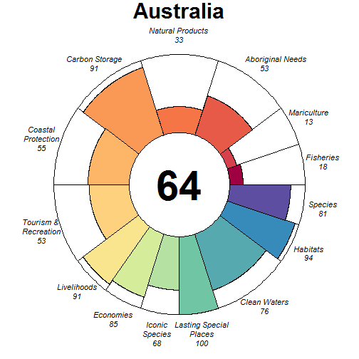
| id | score | status | future | trend | pressures | resilience |
|---|---|---|---|---|---|---|
| Index | 66.32 | NA | 67.53 | NA | NA | NA |
| Food Provision | 16.98 | 15.92 | 18.03 | 0.03 | NA | NA |
| . Fisheries | 17.86 | 16.76 | 18.96 | 0.03 | 27.92 | 60.66 |
| . Mariculture | 13.17 | 12.29 | 14.04 | 0.03 | 28.18 | 65.25 |
| Aboriginal Needs | 53.00 | 50.00 | 56.01 | 0.00 | 27.11 | 63.53 |
| Natural Products | 33.23 | 32.83 | 33.62 | -0.15 | 31.13 | 68.37 |
| Carbon Storage | 91.13 | 82.25 | 100.00 | 0.74 | 31.87 | 64.23 |
| Coastal Protection | 54.79 | 49.92 | 59.65 | 0.16 | 37.49 | 64.23 |
| Tourism & Recreation | 53.21 | 51.07 | 55.35 | 0.00 | 49.08 | 75.00 |
| Coastal Livelihoods & Economies | 88.05 | 91.23 | 84.87 | -0.08 | NA | NA |
| . Livelihoods | 91.23 | 82.47 | 100.00 | 0.43 | 28.04 | 48.38 |
| . Economies | 84.87 | 100.00 | 69.73 | -0.60 | 29.22 | 59.33 |
| Sense of Place | 84.19 | 86.58 | 81.80 | 0.33 | NA | NA |
| . Iconic Species | 68.38 | 73.16 | 63.61 | -0.34 | 33.88 | 64.11 |
| . Lasting Special Places | 100.00 | 100.00 | 100.00 | 1.00 | 41.18 | 75.00 |
| Clean Waters | 75.73 | 76.77 | 74.69 | -0.09 | 65.12 | 75.00 |
| Biodiversity | 87.73 | 86.46 | 89.00 | 0.02 | NA | NA |
| . Habitats | 94.48 | 88.96 | 100.00 | 0.29 | 30.13 | 64.13 |
| . Species | 80.98 | 83.95 | 78.00 | -0.25 | 33.34 | 62.81 |
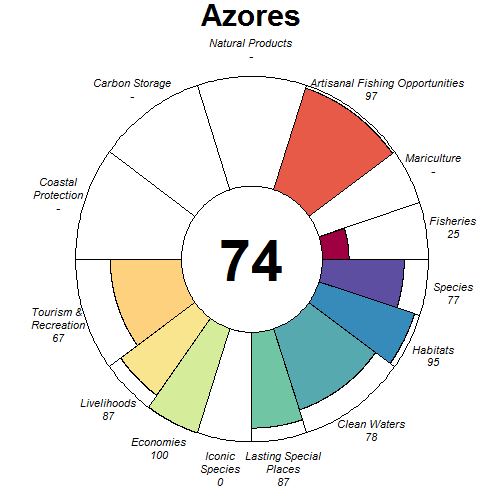
| id | score | status | future | trend | pressures | resilience |
|---|---|---|---|---|---|---|
| Index | 64.00 | NA | 66.71 | NA | NA | NA |
| Food Provision | 24.39 | 23.00 | 25.77 | 0.04 | NA | NA |
| . Fisheries | 24.39 | 23.00 | 25.77 | 0.04 | 26.82 | 55.81 |
| . Mariculture | NA | NA | NA | NA | 29.18 | 64.52 |
| Aboriginal Needs | 52.47 | 50.00 | 54.95 | 0.00 | 26.97 | 56.96 |
| Natural Products | NA | NA | NA | NA | NA | NA |
| Carbon Storage | NA | NA | NA | NA | NaN | NA |
| Coastal Protection | NA | NA | NA | NA | NaN | NA |
| Tourism & Recreation | 65.31 | 63.05 | 67.58 | 0.00 | 52.56 | 75.00 |
| Coastal Livelihoods & Economies | 92.92 | 86.76 | 99.07 | 0.42 | NA | NA |
| . Livelihoods | 85.84 | 73.53 | 98.14 | 0.48 | 30.33 | 34.58 |
| . Economies | 100.00 | 100.00 | 100.00 | 0.36 | 29.56 | 51.74 |
| Sense of Place | 43.68 | 37.37 | 50.00 | 1.00 | NA | NA |
| . Iconic Species | 0.00 | 0.00 | 0.00 | NA | 35.53 | 60.40 |
| . Lasting Special Places | 87.37 | 74.74 | 100.00 | 1.00 | 42.52 | 71.59 |
| Clean Waters | 75.55 | 75.07 | 76.04 | 0.00 | 70.94 | 75.00 |
| Biodiversity | 84.88 | 84.00 | 85.77 | -0.11 | NA | NA |
| . Habitats | 94.86 | 89.72 | 100.00 | 0.03 | 28.64 | 60.98 |
| . Species | 74.91 | 78.28 | 71.54 | -0.25 | 34.61 | 60.07 |
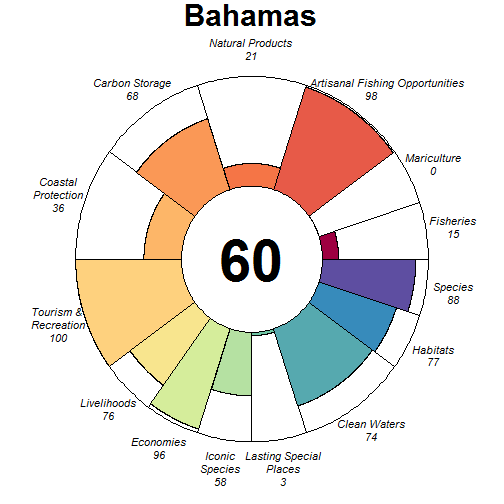
| id | score | status | future | trend | pressures | resilience |
|---|---|---|---|---|---|---|
| Index | 55.80 | NA | 53.70 | NA | NA | NA |
| Food Provision | 14.95 | 14.00 | 15.90 | 0.05 | NA | NA |
| . Fisheries | 14.95 | 14.00 | 15.90 | 0.05 | 25.89 | 57.82 |
| . Mariculture | 0.00 | 0.00 | 0.00 | 0.00 | 27.27 | 63.54 |
| Aboriginal Needs | 52.65 | 50.00 | 55.30 | 0.00 | 25.66 | 57.77 |
| Natural Products | 19.98 | 20.50 | 19.45 | -0.24 | 28.37 | 61.95 |
| Carbon Storage | 65.30 | 93.63 | 36.96 | -1.00 | 30.83 | 50.45 |
| Coastal Protection | 34.45 | 35.80 | 33.10 | -0.18 | 36.92 | 50.45 |
| Tourism & Recreation | 100.00 | 100.00 | 100.00 | -0.01 | 46.90 | 62.50 |
| Coastal Livelihoods & Economies | 85.16 | 80.18 | 90.14 | 0.20 | NA | NA |
| . Livelihoods | 73.94 | 67.61 | 80.28 | 0.26 | 29.65 | 33.00 |
| . Economies | 96.38 | 92.76 | 100.00 | 0.14 | 29.38 | 49.46 |
| Sense of Place | 29.64 | 30.02 | 29.26 | -0.09 | NA | NA |
| . Iconic Species | 56.28 | 57.14 | 55.41 | -0.19 | 32.53 | 61.40 |
| . Lasting Special Places | 3.01 | 2.89 | 3.12 | 0.00 | 39.19 | 63.07 |
| Clean Waters | 71.95 | 69.67 | 74.23 | 0.09 | 61.50 | 62.50 |
| Biodiversity | 80.02 | 83.06 | 76.98 | -0.25 | NA | NA |
| . Habitats | 74.47 | 79.39 | 69.55 | -0.34 | 29.55 | 61.67 |
| . Species | 85.57 | 86.73 | 84.42 | -0.16 | 32.47 | 57.20 |
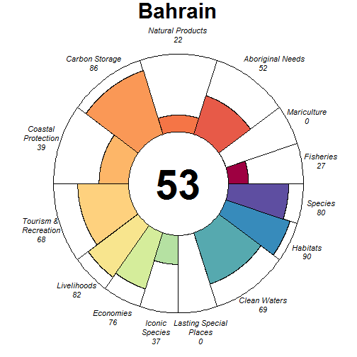
| id | score | status | future | trend | pressures | resilience |
|---|---|---|---|---|---|---|
| Index | 56.13 | NA | 53.90 | NA | NA | NA |
| Food Provision | 26.82 | 26.00 | 27.63 | -0.03 | NA | NA |
| . Fisheries | 26.82 | 26.00 | 27.64 | -0.03 | 31.12 | 55.71 |
| . Mariculture | 0.01 | 0.01 | 0.01 | 0.00 | 30.72 | 50.00 |
| Aboriginal Needs | 52.29 | 50.00 | 54.57 | 0.00 | 27.67 | 55.37 |
| Natural Products | 21.60 | 20.71 | 22.49 | 0.00 | 28.43 | 54.46 |
| Carbon Storage | 86.18 | 85.51 | 86.84 | NA | 36.96 | 41.67 |
| Coastal Protection | 39.32 | 44.05 | 34.59 | -0.32 | 41.57 | 41.67 |
| Tourism & Recreation | 67.78 | 68.14 | 67.42 | -0.02 | 48.62 | 50.00 |
| Coastal Livelihoods & Economies | 79.13 | 75.34 | 82.92 | 0.05 | NA | NA |
| . Livelihoods | 82.27 | 75.73 | 88.82 | 0.19 | 30.90 | 45.58 |
| . Economies | 75.98 | 74.95 | 77.02 | -0.08 | 30.56 | 55.25 |
| Sense of Place | 18.73 | 21.67 | 15.80 | -0.50 | NA | NA |
| . Iconic Species | 37.46 | 43.33 | 31.60 | -0.50 | 35.61 | 55.05 |
| . Lasting Special Places | 0.00 | 0.00 | 0.00 | NA | 41.23 | 50.00 |
| Clean Waters | 69.29 | 77.92 | 60.67 | -0.26 | 64.36 | 50.00 |
| Biodiversity | 85.06 | 90.70 | 79.43 | -0.26 | NA | NA |
| . Habitats | 89.75 | 91.46 | 88.05 | -0.17 | 34.35 | 57.84 |
| . Species | 80.37 | 89.93 | 70.81 | -0.35 | 37.74 | 43.42 |
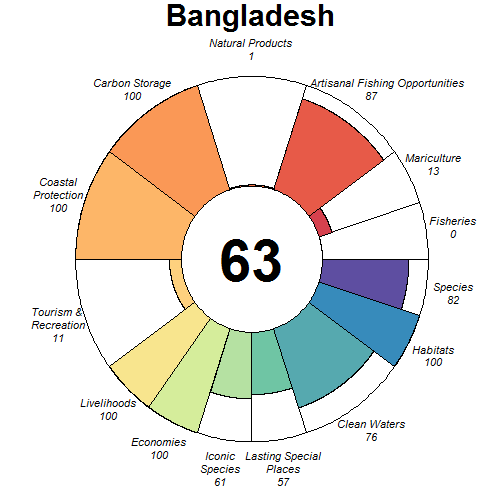
| id | score | status | future | trend | pressures | resilience |
|---|---|---|---|---|---|---|
| Index | 66.38 | NA | 66.66 | NA | NA | NA |
| Food Provision | 3.74 | 3.61 | 3.86 | 0.00 | NA | NA |
| . Fisheries | 0.00 | 0.00 | 0.00 | -0.01 | 29.97 | 58.22 |
| . Mariculture | 13.24 | 12.78 | 13.70 | 0.04 | 36.85 | 50.52 |
| Aboriginal Needs | 52.60 | 50.00 | 55.20 | 0.00 | 28.17 | 59.66 |
| Natural Products | 1.14 | 1.09 | 1.18 | -0.04 | 28.78 | 64.39 |
| Carbon Storage | 100.00 | 100.00 | 100.00 | 0.56 | 32.60 | 48.61 |
| Coastal Protection | 100.00 | 100.00 | 100.00 | 0.56 | 31.48 | 57.40 |
| Tourism & Recreation | 11.73 | 11.37 | 12.10 | 0.00 | 55.00 | 75.00 |
| Coastal Livelihoods & Economies | 100.00 | 100.00 | 100.00 | 0.34 | NA | NA |
| . Livelihoods | 100.00 | 100.00 | 100.00 | 0.40 | 32.17 | 45.89 |
| . Economies | 100.00 | 100.00 | 100.00 | 0.28 | 30.91 | 47.08 |
| Sense of Place | 60.53 | 59.84 | 61.21 | -0.09 | NA | NA |
| . Iconic Species | 62.62 | 64.00 | 61.24 | -0.19 | 37.80 | 62.79 |
| . Lasting Special Places | 58.44 | 55.69 | 61.19 | 0.00 | 40.50 | 70.45 |
| Clean Waters | 78.13 | 76.74 | 79.52 | 0.05 | 75.00 | 75.00 |
| Biodiversity | 92.04 | 93.69 | 90.40 | 0.03 | NA | NA |
| . Habitats | 99.86 | 99.73 | 100.00 | 0.28 | 33.68 | 60.94 |
| . Species | 84.22 | 87.65 | 80.80 | -0.22 | 34.37 | 55.50 |
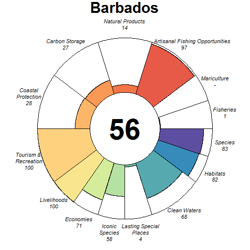
| id | score | status | future | trend | pressures | resilience |
|---|---|---|---|---|---|---|
| Index | 47.88 | NA | 47.54 | NA | NA | NA |
| Food Provision | 1.06 | 1.00 | 1.11 | 0.01 | NA | NA |
| . Fisheries | 1.06 | 1.00 | 1.11 | 0.01 | 25.83 | 57.92 |
| . Mariculture | NA | NA | NA | NA | 28.32 | 67.71 |
| Aboriginal Needs | 52.71 | 50.00 | 55.41 | 0.00 | 26.51 | 59.30 |
| Natural Products | 13.53 | 13.99 | 13.07 | -0.28 | 27.56 | 64.20 |
| Carbon Storage | 26.00 | 25.28 | 26.73 | NA | 40.91 | 58.33 |
| Coastal Protection | 27.28 | 26.33 | 28.23 | 0.04 | 44.97 | 58.33 |
| Tourism & Recreation | 100.00 | 100.00 | 100.00 | -0.04 | 53.97 | 75.00 |
| Coastal Livelihoods & Economies | 84.22 | 86.30 | 82.15 | -0.16 | NA | NA |
| . Livelihoods | 100.00 | 100.00 | 100.00 | -0.02 | 30.36 | 45.65 |
| . Economies | 68.45 | 72.59 | 64.30 | -0.29 | 29.38 | 53.50 |
| Sense of Place | 29.75 | 31.77 | 27.73 | -0.17 | NA | NA |
| . Iconic Species | 55.78 | 60.00 | 51.56 | -0.33 | 37.16 | 62.22 |
| . Lasting Special Places | 3.73 | 3.55 | 3.91 | 0.00 | 44.08 | 75.00 |
| Clean Waters | 65.78 | 66.90 | 64.66 | -0.06 | 73.28 | 75.00 |
| Biodiversity | 79.29 | 79.20 | 79.37 | -0.11 | NA | NA |
| . Habitats | 78.58 | 75.09 | 82.07 | 0.02 | 37.55 | 61.47 |
| . Species | 79.99 | 83.31 | 76.67 | -0.24 | 33.72 | 58.36 |
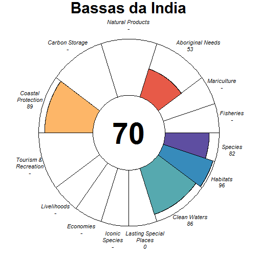
| id | score | status | future | trend | pressures | resilience |
|---|---|---|---|---|---|---|
| Index | 68.01 | NA | 69.86 | NA | NA | NA |
| Food Provision | NA | NA | NA | NA | NA | NA |
| . Fisheries | NA | NA | NA | NA | 25.07 | 56.63 |
| . Mariculture | NA | NA | NA | NA | 25.54 | 63.52 |
| Aboriginal Needs | 52.65 | 50.00 | 55.29 | 0.00 | 25.02 | 57.09 |
| Natural Products | NA | NA | NA | NA | NA | NA |
| Carbon Storage | NA | NA | NA | NA | NaN | NA |
| Coastal Protection | 89.11 | 85.57 | 92.64 | 0.09 | 47.47 | 53.76 |
| Tourism & Recreation | NA | NA | NA | NA | 40.20 | 70.13 |
| Coastal Livelihoods & Economies | NA | NA | NA | NA | NA | NA |
| . Livelihoods | NA | NA | NA | NA | 28.16 | 35.55 |
| . Economies | NA | NA | NA | NA | 27.97 | 47.71 |
| Sense of Place | 0.00 | 0.00 | 0.00 | NaN | NA | NA |
| . Iconic Species | NA | NA | NA | NA | 29.55 | 61.11 |
| . Lasting Special Places | 0.00 | 0.00 | 0.00 | NA | 34.48 | 68.14 |
| Clean Waters | 86.22 | 83.50 | 88.95 | 0.00 | 50.33 | 70.13 |
| Biodiversity | 89.08 | 88.97 | 89.19 | -0.10 | NA | NA |
| . Habitats | 96.39 | 92.79 | 100.00 | 0.05 | 29.52 | 60.09 |
| . Species | 81.76 | 85.15 | 78.37 | -0.24 | 30.59 | 55.09 |
| id | score | status | future | trend | pressures | resilience |
|---|---|---|---|---|---|---|
| Index | 71.57 | NA | 73.27 | NA | NA | NA |
| Food Provision | 24.37 | 23.00 | 25.75 | 0.01 | NA | NA |
| . Fisheries | 24.37 | 23.00 | 25.75 | 0.01 | 28.33 | 61.61 |
| . Mariculture | NA | NA | NA | NA | 36.61 | 67.71 |
| Aboriginal Needs | 53.13 | 50.00 | 56.26 | 0.00 | 27.88 | 65.83 |
| Natural Products | 24.26 | 23.28 | 25.23 | -0.06 | 29.50 | 67.89 |
| Carbon Storage | 100.00 | 100.00 | 100.00 | 0.50 | 30.73 | 70.61 |
| Coastal Protection | 100.00 | 100.00 | 100.00 | 0.50 | 30.09 | 70.61 |
| Tourism & Recreation | 25.93 | 25.06 | 26.81 | -0.01 | 52.65 | 75.00 |
| Coastal Livelihoods & Economies | 81.65 | 80.49 | 82.80 | 0.50 | NA | NA |
| . Livelihoods | 63.30 | 60.99 | 65.60 | 0.06 | 32.23 | 43.27 |
| . Economies | 100.00 | 100.00 | 100.00 | 0.95 | 31.24 | 60.08 |
| Sense of Place | 74.00 | 75.00 | 73.01 | 0.34 | NA | NA |
| . Iconic Species | 48.01 | 50.00 | 46.01 | -0.25 | 38.07 | 64.66 |
| . Lasting Special Places | 100.00 | 100.00 | 100.00 | 0.93 | 42.50 | 73.86 |
| Clean Waters | 85.77 | 78.67 | 92.88 | 0.25 | 71.08 | 75.00 |
| Biodiversity | 90.74 | 90.08 | 91.41 | 0.06 | NA | NA |
| . Habitats | 98.55 | 97.10 | 100.00 | 0.24 | 30.24 | 63.01 |
| . Species | 82.94 | 83.06 | 82.82 | -0.13 | 36.21 | 61.08 |
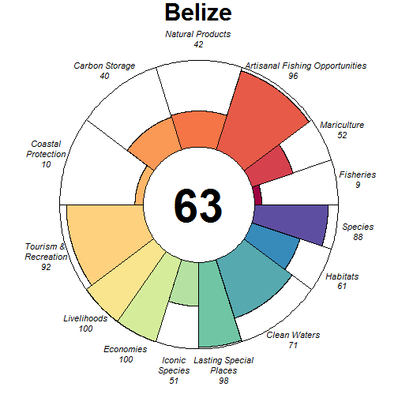
| id | score | status | future | trend | pressures | resilience |
|---|---|---|---|---|---|---|
| Index | 58.75 | NA | 58.38 | NA | NA | NA |
| Food Provision | 31.37 | 32.18 | 30.55 | -0.11 | NA | NA |
| . Fisheries | 8.53 | 8.00 | 9.05 | 0.03 | 27.58 | 61.29 |
| . Mariculture | 51.66 | 53.67 | 49.65 | -0.23 | 29.14 | 53.12 |
| Aboriginal Needs | 53.03 | 50.00 | 56.06 | 0.00 | 26.07 | 62.82 |
| Natural Products | 41.50 | 46.74 | 36.27 | -0.51 | 28.38 | 63.81 |
| Carbon Storage | 39.63 | 29.87 | 49.39 | 0.87 | 34.06 | 54.60 |
| Coastal Protection | 9.98 | 9.19 | 10.76 | 0.18 | 38.26 | 54.60 |
| Tourism & Recreation | 92.16 | 93.03 | 91.28 | -0.03 | 48.68 | 50.00 |
| Coastal Livelihoods & Economies | 100.00 | 100.00 | 100.00 | 0.20 | NA | NA |
| . Livelihoods | 100.00 | 100.00 | 100.00 | 0.15 | 30.15 | 45.64 |
| . Economies | 100.00 | 100.00 | 100.00 | 0.26 | 29.50 | 50.73 |
| Sense of Place | 74.32 | 76.74 | 71.91 | -0.21 | NA | NA |
| . Iconic Species | 50.66 | 57.50 | 43.83 | -0.50 | 33.37 | 62.84 |
| . Lasting Special Places | 97.99 | 95.97 | 100.00 | 0.08 | 38.94 | 62.50 |
| Clean Waters | 71.28 | 78.15 | 64.40 | -0.19 | 64.47 | 50.00 |
| Biodiversity | 74.30 | 71.60 | 77.00 | 0.02 | NA | NA |
| . Habitats | 60.51 | 54.46 | 66.55 | 0.18 | 31.14 | 62.70 |
| . Species | 88.10 | 88.74 | 87.46 | -0.14 | 33.74 | 58.14 |
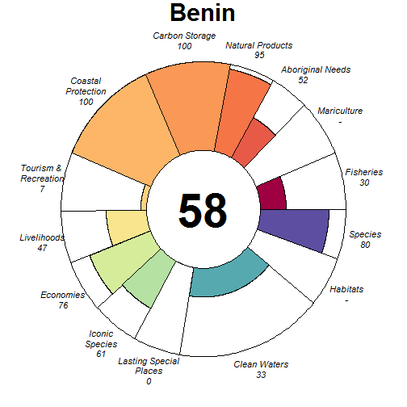
| id | score | status | future | trend | pressures | resilience |
|---|---|---|---|---|---|---|
| Index | 57.71 | NA | 56.23 | NA | NA | NA |
| Food Provision | 30.25 | 29.00 | 31.50 | -0.01 | NA | NA |
| . Fisheries | 30.25 | 29.00 | 31.50 | -0.01 | 27.16 | 55.56 |
| . Mariculture | NA | NA | NA | NA | 30.56 | 64.58 |
| Aboriginal Needs | 52.22 | 50.00 | 54.44 | 0.00 | 27.50 | 54.43 |
| Natural Products | 94.66 | 89.88 | 99.45 | 0.00 | 27.17 | 59.42 |
| Carbon Storage | 100.00 | 100.00 | 100.00 | NA | 39.39 | 53.79 |
| Coastal Protection | 100.00 | 100.00 | 100.00 | NA | 41.48 | 53.79 |
| Tourism & Recreation | 6.79 | 6.58 | 7.01 | 0.00 | 55.00 | 75.00 |
| Coastal Livelihoods & Economies | 61.85 | 74.32 | 49.37 | -0.43 | NA | NA |
| . Livelihoods | 47.25 | 48.64 | 45.86 | -0.10 | 35.50 | 39.32 |
| . Economies | 76.44 | 100.00 | 52.88 | -0.76 | 35.50 | 46.75 |
| Sense of Place | 30.62 | 31.25 | 29.98 | -0.17 | NA | NA |
| . Iconic Species | 61.23 | 62.50 | 59.97 | -0.17 | 39.14 | 60.70 |
| . Lasting Special Places | 0.00 | 0.00 | 0.00 | NA | 46.63 | 68.18 |
| Clean Waters | 32.51 | 33.14 | 31.87 | -0.06 | 75.00 | 75.00 |
| Biodiversity | 80.32 | 91.99 | 76.66 | -0.22 | NA | NA |
| . Habitats | NA | 100.00 | NA | NA | 34.85 | NA |
| . Species | 80.32 | 83.97 | 76.66 | -0.22 | 35.03 | 54.03 |
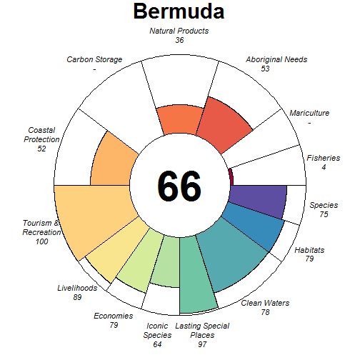
| id | score | status | future | trend | pressures | resilience |
|---|---|---|---|---|---|---|
| Index | 63.26 | NA | 63.89 | NA | NA | NA |
| Food Provision | 4.22 | 4.00 | 4.44 | 0.02 | NA | NA |
| . Fisheries | 4.22 | 4.00 | 4.44 | 0.02 | 25.99 | 55.40 |
| . Mariculture | NA | NA | NA | NA | 26.51 | 63.13 |
| Aboriginal Needs | 52.75 | 50.00 | 55.51 | 0.00 | 26.38 | 59.76 |
| Natural Products | 36.13 | 31.06 | 41.19 | 0.31 | 26.46 | 63.02 |
| Carbon Storage | NA | NA | NA | NA | NaN | NA |
| Coastal Protection | 52.00 | 51.73 | 52.27 | -0.03 | 46.93 | 56.52 |
| Tourism & Recreation | 100.00 | 100.00 | 100.00 | -0.02 | 47.59 | 66.40 |
| Coastal Livelihoods & Economies | 83.67 | 85.40 | 81.93 | -0.17 | NA | NA |
| . Livelihoods | 88.79 | 92.39 | 85.18 | -0.19 | 29.25 | 43.91 |
| . Economies | 78.55 | 78.41 | 78.69 | -0.15 | 29.00 | 61.42 |
| Sense of Place | 80.72 | 78.96 | 82.47 | -0.04 | NA | NA |
| . Iconic Species | 64.14 | 63.33 | 64.95 | -0.08 | 34.67 | 59.32 |
| . Lasting Special Places | 97.30 | 94.59 | 100.00 | 0.00 | 41.38 | 65.59 |
| Clean Waters | 78.45 | 77.84 | 79.05 | 0.00 | 62.65 | 66.40 |
| Biodiversity | 76.89 | 76.57 | 77.20 | -0.12 | NA | NA |
| . Habitats | 79.06 | 75.86 | 82.26 | -0.02 | 30.21 | 58.95 |
| . Species | 74.71 | 77.28 | 72.15 | -0.22 | 32.92 | 56.57 |
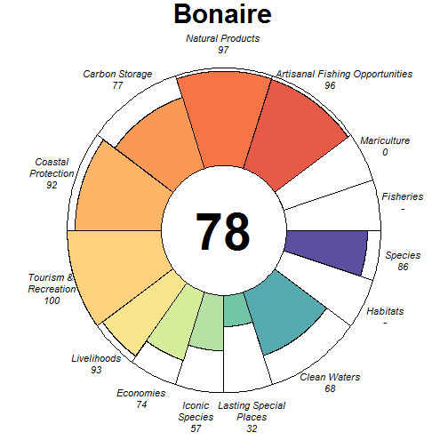
| id | score | status | future | trend | pressures | resilience |
|---|---|---|---|---|---|---|
| Index | 77.00 | NA | 75.16 | NA | NA | NA |
| Food Provision | NA | NA | NA | NA | NA | NA |
| . Fisheries | NA | NA | NA | NA | 27.88 | 58.05 |
| . Mariculture | 0.07 | 0.07 | 0.08 | 0.00 | 27.72 | 63.13 |
| Aboriginal Needs | 52.68 | 50.00 | 55.37 | 0.00 | 26.07 | 58.59 |
| Natural Products | 96.72 | 93.44 | 100.00 | 0.07 | 29.48 | 62.03 |
| Carbon Storage | 76.78 | 92.63 | 60.93 | -0.61 | 31.66 | 52.61 |
| Coastal Protection | 91.68 | 90.45 | 92.90 | -0.01 | 42.32 | 52.61 |
| Tourism & Recreation | 100.00 | 100.00 | 100.00 | -0.01 | 54.04 | 66.40 |
| Coastal Livelihoods & Economies | 83.30 | 84.52 | 82.08 | -0.10 | NA | NA |
| . Livelihoods | 93.00 | 93.79 | 92.20 | -0.04 | 30.85 | 32.97 |
| . Economies | 73.60 | 75.24 | 71.96 | -0.16 | 30.28 | 49.46 |
| Sense of Place | 44.47 | 45.43 | 43.51 | -0.14 | NA | NA |
| . Iconic Species | 56.90 | 60.00 | 53.79 | -0.29 | 35.32 | 61.97 |
| . Lasting Special Places | 32.05 | 30.85 | 33.24 | 0.00 | 42.16 | 65.59 |
| Clean Waters | 68.43 | 68.87 | 67.99 | 0.02 | 73.39 | 66.40 |
| Biodiversity | 85.92 | 91.84 | 84.06 | -0.23 | NA | NA |
| . Habitats | NA | 95.91 | NA | -0.29 | 36.98 | NA |
| . Species | 85.92 | 87.78 | 84.06 | -0.17 | 35.18 | 56.59 |
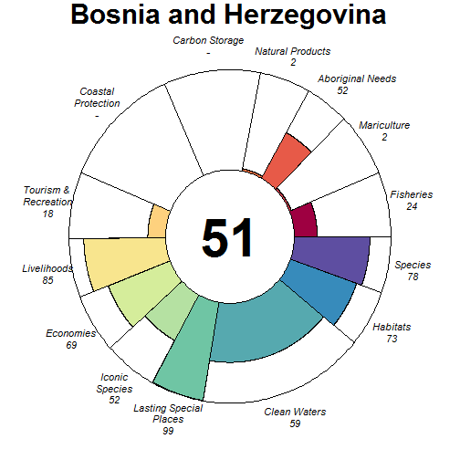
| id | score | status | future | trend | pressures | resilience |
|---|---|---|---|---|---|---|
| Index | 52.60 | NA | 49.10 | NA | NA | NA |
| Food Provision | 20.53 | 19.85 | 21.21 | -0.03 | NA | NA |
| . Fisheries | 23.80 | 23.00 | 24.60 | -0.03 | 34.77 | 61.91 |
| . Mariculture | 1.97 | 1.95 | 2.00 | 0.00 | 42.89 | 51.04 |
| Aboriginal Needs | 52.47 | 50.00 | 54.94 | 0.00 | 31.87 | 61.83 |
| Natural Products | 2.38 | 2.30 | 2.47 | 0.01 | 44.23 | 63.60 |
| Carbon Storage | NA | NA | NA | NA | NaN | NA |
| Coastal Protection | NA | NA | NA | NA | NaN | NA |
| Tourism & Recreation | 18.44 | 18.61 | 18.28 | 0.00 | 55.00 | 50.00 |
| Coastal Livelihoods & Economies | 76.76 | 89.67 | 63.86 | -0.38 | NA | NA |
| . Livelihoods | 84.78 | 79.34 | 90.23 | 0.23 | 38.10 | 32.94 |
| . Economies | 68.74 | 100.00 | 37.48 | -0.99 | 37.28 | 49.42 |
| Sense of Place | 75.68 | 80.00 | 71.36 | -0.25 | NA | NA |
| . Iconic Species | 51.92 | 60.00 | 43.85 | -0.50 | 42.97 | 62.90 |
| . Lasting Special Places | 99.44 | 100.00 | 98.87 | 0.00 | 53.41 | 50.00 |
| Clean Waters | 59.07 | 63.78 | 54.37 | -0.10 | 75.00 | 50.00 |
| Biodiversity | 75.47 | 77.35 | 73.59 | -0.14 | NA | NA |
| . Habitats | 72.68 | 70.17 | 75.18 | -0.02 | 34.81 | 60.49 |
| . Species | 78.26 | 84.54 | 71.99 | -0.26 | 48.22 | 55.92 |
| id | score | status | future | trend | pressures | resilience |
|---|---|---|---|---|---|---|
| Index | 59.97 | NA | 61.07 | NA | NA | NA |
| Food Provision | 15.70 | 15.00 | 16.41 | -0.02 | NA | NA |
| . Fisheries | 15.70 | 15.00 | 16.41 | -0.02 | 25.03 | 58.42 |
| . Mariculture | NA | NA | NA | NA | 25.03 | 63.42 |
| Aboriginal Needs | 52.74 | 50.00 | 55.48 | 0.00 | 25.03 | 58.25 |
| Natural Products | NA | NA | NA | NA | NA | NA |
| Carbon Storage | NA | NA | NA | NA | NaN | NA |
| Coastal Protection | 84.93 | 82.19 | 87.66 | -0.02 | 25.23 | 50.00 |
| Tourism & Recreation | NA | NA | NA | NA | 25.07 | 75.00 |
| Coastal Livelihoods & Economies | NA | NA | NA | NA | NA | NA |
| . Livelihoods | NA | NA | NA | NA | 25.01 | 50.68 |
| . Economies | NA | NA | NA | NA | 25.20 | 50.00 |
| Sense of Place | 0.00 | 0.00 | 0.00 | NaN | NA | NA |
| . Iconic Species | NA | NA | NA | NA | 25.95 | 62.36 |
| . Lasting Special Places | 0.00 | 0.00 | 0.00 | NA | 25.05 | 75.00 |
| Clean Waters | 99.99 | 99.98 | 100.00 | 0.00 | 25.11 | 75.00 |
| Biodiversity | 82.84 | 82.23 | 84.65 | -0.08 | NA | NA |
| . Habitats | NA | 83.43 | NA | -0.06 | 25.22 | NA |
| . Species | 82.84 | 81.03 | 84.65 | -0.10 | 27.15 | 60.92 |
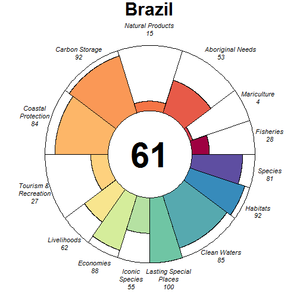
| id | score | status | future | trend | pressures | resilience |
|---|---|---|---|---|---|---|
| Index | 67.30 | NA | 65.96 | NA | NA | NA |
| Food Provision | 23.94 | 22.89 | 24.98 | -0.01 | NA | NA |
| . Fisheries | 27.86 | 26.64 | 29.07 | -0.01 | 27.47 | 57.65 |
| . Mariculture | 4.32 | 4.13 | 4.51 | 0.00 | 32.63 | 60.31 |
| Aboriginal Needs | 52.77 | 50.00 | 55.54 | 0.00 | 27.29 | 60.88 |
| Natural Products | 14.79 | 13.99 | 15.59 | -0.02 | 26.57 | 64.74 |
| Carbon Storage | 91.83 | 95.42 | 88.24 | -0.27 | 30.48 | 61.97 |
| Coastal Protection | 84.39 | 85.28 | 83.49 | -0.18 | 32.81 | 61.97 |
| Tourism & Recreation | 27.44 | 26.40 | 28.48 | 0.00 | 51.20 | 75.00 |
| Coastal Livelihoods & Economies | 75.02 | 79.47 | 70.56 | -0.18 | NA | NA |
| . Livelihoods | 61.95 | 58.95 | 64.95 | 0.11 | 27.97 | 35.93 |
| . Economies | 88.09 | 100.00 | 76.17 | -0.47 | 29.16 | 53.33 |
| Sense of Place | 77.30 | 79.00 | 75.59 | 0.13 | NA | NA |
| . Iconic Species | 54.59 | 58.00 | 51.19 | -0.31 | 35.19 | 62.08 |
| . Lasting Special Places | 100.00 | 100.00 | 100.00 | 0.57 | 38.88 | 72.73 |
| Clean Waters | 84.56 | 85.23 | 83.89 | -0.05 | 68.66 | 75.00 |
| Biodiversity | 86.06 | 90.08 | 82.03 | -0.27 | NA | NA |
| . Habitats | 91.56 | 96.44 | 86.67 | -0.29 | 33.33 | 61.82 |
| . Species | 80.56 | 83.72 | 77.40 | -0.24 | 32.56 | 58.80 |
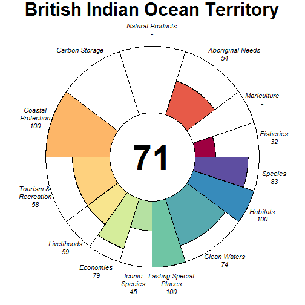
| id | score | status | future | trend | pressures | resilience |
|---|---|---|---|---|---|---|
| Index | 70.66 | NA | 69.90 | NA | NA | NA |
| Food Provision | 31.94 | 31.00 | 32.89 | -0.11 | NA | NA |
| . Fisheries | 31.94 | 31.00 | 32.89 | -0.11 | 25.11 | 66.78 |
| . Mariculture | NA | NA | NA | NA | 25.60 | 69.23 |
| Aboriginal Needs | 53.59 | 50.00 | 57.18 | 0.00 | 25.10 | 68.61 |
| Natural Products | NA | NA | NA | NA | NA | NA |
| Carbon Storage | NA | NA | NA | NA | NaN | NA |
| Coastal Protection | 100.00 | 100.00 | 100.00 | NA | 45.89 | 71.78 |
| Tourism & Recreation | 58.41 | 56.87 | 59.95 | -0.03 | 49.93 | 71.45 |
| Coastal Livelihoods & Economies | 68.84 | 75.23 | 62.45 | -0.28 | NA | NA |
| . Livelihoods | 59.10 | 56.49 | 61.72 | 0.04 | 29.72 | 50.54 |
| . Economies | 78.57 | 93.96 | 63.18 | -0.59 | 28.82 | 49.83 |
| Sense of Place | 72.36 | 75.00 | 69.71 | -0.25 | NA | NA |
| . Iconic Species | 44.71 | 50.00 | 39.42 | -0.50 | 30.59 | 68.01 |
| . Lasting Special Places | 100.00 | 100.00 | 100.00 | 0.00 | 37.61 | 70.17 |
| Clean Waters | 74.01 | 73.18 | 74.83 | 0.01 | 66.54 | 71.45 |
| Biodiversity | 91.37 | 92.70 | 90.04 | -0.13 | NA | NA |
| . Habitats | 100.00 | 100.00 | 100.00 | 0.00 | 29.34 | 66.54 |
| . Species | 82.74 | 85.40 | 80.08 | -0.27 | 31.07 | 66.44 |
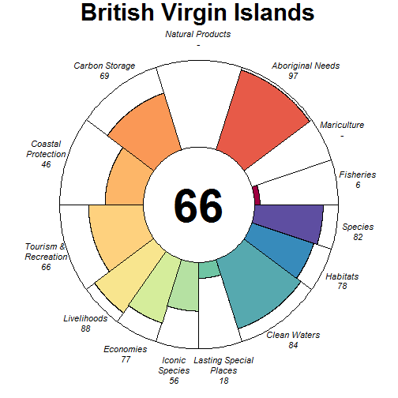
| id | score | status | future | trend | pressures | resilience |
|---|---|---|---|---|---|---|
| Index | 58.77 | NA | 55.05 | NA | NA | NA |
| Food Provision | 6.35 | 6.00 | 6.70 | 0.02 | NA | NA |
| . Fisheries | 6.35 | 6.00 | 6.70 | 0.02 | 25.87 | 57.25 |
| . Mariculture | NA | NA | NA | NA | 27.03 | 63.13 |
| Aboriginal Needs | 52.63 | 50.00 | 55.27 | 0.00 | 26.14 | 58.05 |
| Natural Products | NA | NA | NA | NA | NA | NA |
| Carbon Storage | 68.92 | 100.00 | 37.84 | -1.00 | 37.65 | 52.32 |
| Coastal Protection | 45.80 | 46.24 | 45.35 | -0.08 | 42.56 | 52.32 |
| Tourism & Recreation | 65.58 | 63.83 | 67.33 | -0.02 | 45.70 | 66.40 |
| Coastal Livelihoods & Economies | 82.35 | 85.40 | 79.30 | -0.17 | NA | NA |
| . Livelihoods | 87.64 | 92.39 | 82.89 | -0.19 | 28.78 | 35.94 |
| . Economies | 77.06 | 78.41 | 75.71 | -0.15 | 28.56 | 49.46 |
| Sense of Place | 37.34 | 38.78 | 35.91 | -0.16 | NA | NA |
| . Iconic Species | 56.35 | 60.00 | 52.69 | -0.31 | 34.64 | 61.17 |
| . Lasting Special Places | 18.34 | 17.55 | 19.13 | 0.00 | 38.38 | 65.59 |
| Clean Waters | 84.14 | 82.76 | 85.51 | 0.02 | 59.49 | 66.40 |
| Biodiversity | 79.90 | 84.29 | 75.52 | -0.28 | NA | NA |
| . Habitats | 77.80 | 83.91 | 71.68 | -0.34 | 35.14 | 60.80 |
| . Species | 82.01 | 84.67 | 79.35 | -0.21 | 32.60 | 56.56 |
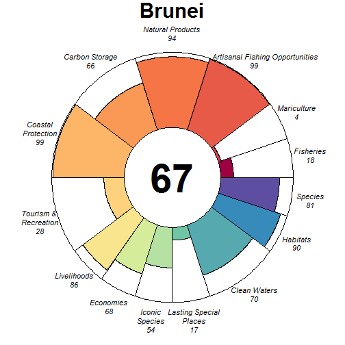
| id | score | status | future | trend | pressures | resilience |
|---|---|---|---|---|---|---|
| Index | 61.93 | NA | 60.08 | NA | NA | NA |
| Food Provision | 17.09 | 15.81 | 18.38 | 0.11 | NA | NA |
| . Fisheries | 17.30 | 16.00 | 18.60 | 0.11 | 30.85 | 58.43 |
| . Mariculture | 3.84 | 3.66 | 4.02 | 0.00 | 29.69 | 59.46 |
| Aboriginal Needs | 52.33 | 50.00 | 54.66 | 0.00 | 30.27 | 58.50 |
| Natural Products | 93.23 | 88.28 | 98.17 | 0.00 | 28.93 | 62.88 |
| Carbon Storage | 63.71 | 83.83 | 43.58 | -0.81 | 30.32 | 49.01 |
| Coastal Protection | 96.96 | 97.36 | 96.55 | -0.11 | 38.16 | 57.67 |
| Tourism & Recreation | 27.47 | 26.60 | 28.34 | 0.00 | 55.01 | 75.00 |
| Coastal Livelihoods & Economies | 75.83 | 71.77 | 79.88 | 0.04 | NA | NA |
| . Livelihoods | 84.77 | 74.49 | 95.06 | 0.30 | 31.93 | 55.09 |
| . Economies | 66.88 | 69.05 | 64.71 | -0.22 | 30.99 | 57.25 |
| Sense of Place | 34.56 | 37.96 | 31.15 | -0.25 | NA | NA |
| . Iconic Species | 52.43 | 60.00 | 44.87 | -0.50 | 37.57 | 62.65 |
| . Lasting Special Places | 16.68 | 15.93 | 17.44 | 0.00 | 45.19 | 73.86 |
| Clean Waters | 68.71 | 69.29 | 68.14 | -0.02 | 75.00 | 75.00 |
| Biodiversity | 83.73 | 87.77 | 79.69 | -0.28 | NA | NA |
| . Habitats | 88.22 | 91.13 | 85.31 | -0.26 | 30.58 | 63.81 |
| . Species | 79.24 | 84.41 | 74.07 | -0.31 | 36.46 | 62.04 |
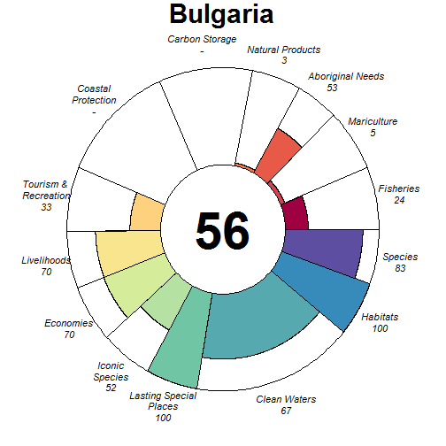
| id | score | status | future | trend | pressures | resilience |
|---|---|---|---|---|---|---|
| Index | 57.30 | NA | 54.88 | NA | NA | NA |
| Food Provision | 23.65 | 23.24 | 24.06 | -0.08 | NA | NA |
| . Fisheries | 24.42 | 24.00 | 24.84 | -0.08 | 28.27 | 55.18 |
| . Mariculture | 4.56 | 4.42 | 4.70 | 0.02 | 35.40 | 50.00 |
| Aboriginal Needs | 52.76 | 50.00 | 55.52 | 0.00 | 26.92 | 60.37 |
| Natural Products | 3.02 | 2.86 | 3.18 | 0.00 | 28.58 | 62.53 |
| Carbon Storage | NA | NA | NA | NA | NaN | NA |
| Coastal Protection | NA | NA | NA | NA | NaN | NA |
| Tourism & Recreation | 32.70 | 33.01 | 32.40 | 0.00 | 55.00 | 50.00 |
| Coastal Livelihoods & Economies | 69.84 | 82.05 | 57.64 | -0.37 | NA | NA |
| . Livelihoods | 69.57 | 64.09 | 75.04 | 0.25 | 33.64 | 34.83 |
| . Economies | 70.12 | 100.00 | 40.24 | -0.99 | 33.10 | 52.25 |
| Sense of Place | 75.97 | 80.00 | 71.95 | 0.25 | NA | NA |
| . Iconic Species | 51.95 | 60.00 | 43.90 | -0.50 | 38.45 | 58.65 |
| . Lasting Special Places | 100.00 | 100.00 | 100.00 | 1.00 | 46.14 | 50.00 |
| Clean Waters | 67.03 | 66.86 | 67.20 | 0.13 | 75.00 | 50.00 |
| Biodiversity | 91.42 | 93.72 | 89.11 | -0.11 | NA | NA |
| . Habitats | 100.00 | 100.00 | 100.00 | 0.00 | 29.03 | 56.94 |
| . Species | 82.83 | 87.44 | 78.23 | -0.22 | 35.81 | 49.06 |
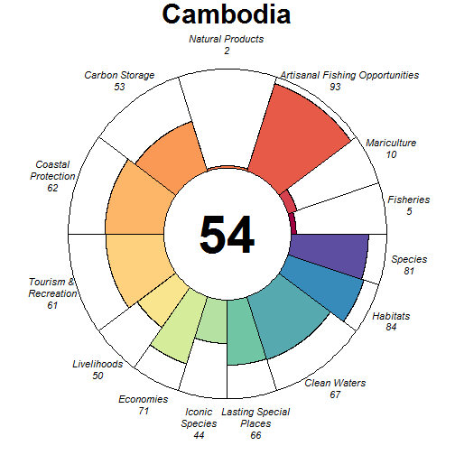
| id | score | status | future | trend | pressures | resilience |
|---|---|---|---|---|---|---|
| Index | 52.65 | NA | 46.14 | NA | NA | NA |
| Food Provision | 5.54 | 5.24 | 5.84 | 0.03 | NA | NA |
| . Fisheries | 5.29 | 5.00 | 5.57 | 0.03 | 31.18 | 59.23 |
| . Mariculture | 9.94 | 9.45 | 10.43 | 0.04 | 27.92 | 51.04 |
| Aboriginal Needs | 52.57 | 50.00 | 55.15 | 0.00 | 28.30 | 59.49 |
| Natural Products | 2.28 | 2.19 | 2.36 | -0.08 | 27.12 | 66.62 |
| Carbon Storage | 53.09 | 75.88 | 30.30 | -1.00 | 28.63 | 49.62 |
| Coastal Protection | 61.82 | 80.82 | 42.83 | -0.84 | 30.24 | 58.08 |
| Tourism & Recreation | 60.85 | 58.77 | 62.92 | 0.01 | 55.00 | 75.00 |
| Coastal Livelihoods & Economies | 60.82 | 74.94 | 46.69 | -0.47 | NA | NA |
| . Livelihoods | 50.14 | 49.88 | 50.41 | -0.01 | 33.47 | 38.97 |
| . Economies | 71.49 | 100.00 | 42.98 | -0.94 | 32.94 | 50.08 |
| Sense of Place | 54.91 | 56.30 | 53.52 | -0.25 | NA | NA |
| . Iconic Species | 43.97 | 50.00 | 37.93 | -0.50 | 35.08 | 63.45 |
| . Lasting Special Places | 65.86 | 62.61 | 69.12 | 0.00 | 41.22 | 72.73 |
| Clean Waters | 66.87 | 65.39 | 68.35 | 0.07 | 75.00 | 75.00 |
| Biodiversity | 82.30 | 89.44 | 75.16 | -0.37 | NA | NA |
| . Habitats | 83.65 | 91.33 | 75.97 | -0.41 | 29.81 | 61.65 |
| . Species | 80.95 | 87.55 | 74.35 | -0.33 | 36.13 | 56.80 |
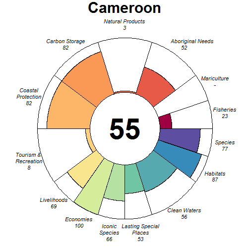
| id | score | status | future | trend | pressures | resilience |
|---|---|---|---|---|---|---|
| Index | 58.15 | NA | 54.67 | NA | NA | NA |
| Food Provision | 22.99 | 22.00 | 23.98 | 0.01 | NA | NA |
| . Fisheries | 22.99 | 22.00 | 23.98 | 0.01 | 30.96 | 55.88 |
| . Mariculture | NA | NA | NA | NA | 30.57 | 62.50 |
| Aboriginal Needs | 52.32 | 50.00 | 54.64 | 0.00 | 28.48 | 56.59 |
| Natural Products | 2.58 | 2.44 | 2.71 | 0.00 | 28.11 | 61.19 |
| Carbon Storage | 82.23 | 91.91 | 72.54 | -0.40 | 30.15 | 48.40 |
| Coastal Protection | 82.36 | 91.91 | 72.80 | -0.40 | 29.29 | 48.40 |
| Tourism & Recreation | 8.47 | 8.20 | 8.74 | 0.00 | 55.00 | 75.00 |
| Coastal Livelihoods & Economies | 84.71 | 88.62 | 80.80 | -0.21 | NA | NA |
| . Livelihoods | 69.43 | 77.25 | 61.60 | -0.42 | 35.01 | 59.17 |
| . Economies | 100.00 | 100.00 | 100.00 | 0.01 | 32.79 | 47.42 |
| Sense of Place | 59.60 | 59.02 | 60.19 | -0.08 | NA | NA |
| . Iconic Species | 66.43 | 67.50 | 65.36 | -0.17 | 36.46 | 60.68 |
| . Lasting Special Places | 52.78 | 50.54 | 55.02 | 0.00 | 44.74 | 71.59 |
| Clean Waters | 56.14 | 61.43 | 50.85 | -0.26 | 75.00 | 75.00 |
| Biodiversity | 81.94 | 85.24 | 78.63 | -0.24 | NA | NA |
| . Habitats | 86.81 | 89.31 | 84.32 | -0.23 | 29.86 | 60.00 |
| . Species | 77.06 | 81.18 | 72.94 | -0.24 | 37.83 | 56.70 |
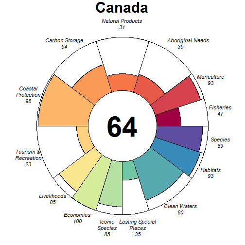
| id | score | status | future | trend | pressures | resilience |
|---|---|---|---|---|---|---|
| Index | 69.42 | NA | 72.21 | NA | NA | NA |
| Food Provision | 53.38 | 48.88 | 57.88 | 0.01 | NA | NA |
| . Fisheries | 47.08 | 43.00 | 51.17 | 0.01 | 15.78 | 71.01 |
| . Mariculture | 92.89 | 85.77 | 100.00 | 0.03 | 13.10 | 68.68 |
| Aboriginal Needs | 35.41 | 32.39 | 38.42 | -0.01 | 12.99 | 72.14 |
| Natural Products | 31.29 | 29.71 | 32.87 | -0.14 | 14.89 | 75.08 |
| Carbon Storage | 61.73 | 57.28 | 66.18 | -0.01 | 13.12 | 61.62 |
| Coastal Protection | 97.55 | 95.09 | 100.00 | 0.00 | 24.17 | 61.62 |
| Tourism & Recreation | 22.66 | 21.43 | 23.90 | -0.01 | 26.93 | 62.97 |
| Coastal Livelihoods & Economies | 92.67 | 86.74 | 98.59 | 0.47 | NA | NA |
| . Livelihoods | 85.33 | 73.48 | 97.18 | 0.26 | 14.28 | 60.08 |
| . Economies | 100.00 | 100.00 | 100.00 | 0.68 | 14.55 | 73.55 |
| Sense of Place | 60.12 | 52.75 | 67.50 | 0.42 | NA | NA |
| . Iconic Species | 85.00 | 80.23 | 89.77 | -0.10 | 16.90 | 73.26 |
| . Lasting Special Places | 35.25 | 25.27 | 45.23 | 0.93 | 21.90 | 72.06 |
| Clean Waters | 79.87 | 85.35 | 74.40 | -0.32 | 36.86 | 62.97 |
| Biodiversity | 91.05 | 84.97 | 97.12 | -0.04 | NA | NA |
| . Habitats | 92.86 | 85.72 | 100.00 | 0.00 | 14.38 | 74.38 |
| . Species | 89.23 | 84.22 | 94.24 | -0.08 | 19.20 | 71.23 |
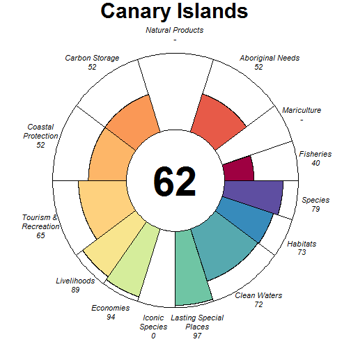
| id | score | status | future | trend | pressures | resilience |
|---|---|---|---|---|---|---|
| Index | 61.88 | NA | 64.00 | NA | NA | NA |
| Food Provision | 39.90 | 38.00 | 41.79 | 0.01 | NA | NA |
| . Fisheries | 39.90 | 38.00 | 41.79 | 0.01 | 27.73 | 55.65 |
| . Mariculture | NA | NA | NA | NA | 28.16 | 62.59 |
| Aboriginal Needs | 52.48 | 50.00 | 54.97 | 0.00 | 27.48 | 57.60 |
| Natural Products | NA | NA | NA | NA | NA | NA |
| Carbon Storage | 51.75 | 50.00 | 53.50 | NA | 36.91 | 58.15 |
| Coastal Protection | 51.58 | 50.00 | 53.15 | NA | 39.03 | 58.15 |
| Tourism & Recreation | 65.06 | 63.05 | 67.07 | 0.00 | 55.00 | 75.00 |
| Coastal Livelihoods & Economies | 91.28 | 83.28 | 99.28 | 0.47 | NA | NA |
| . Livelihoods | 88.99 | 79.43 | 98.56 | 0.33 | 30.90 | 36.49 |
| . Economies | 93.57 | 87.13 | 100.00 | 0.61 | 30.55 | 48.50 |
| Sense of Place | 48.40 | 46.79 | 50.00 | 1.00 | NA | NA |
| . Iconic Species | 0.00 | 0.00 | 0.00 | NA | 35.26 | 60.60 |
| . Lasting Special Places | 96.79 | 93.58 | 100.00 | 1.00 | 42.07 | 68.18 |
| Clean Waters | 71.94 | 71.75 | 72.14 | 0.01 | 75.00 | 75.00 |
| Biodiversity | 76.21 | 75.69 | 76.73 | -0.10 | NA | NA |
| . Habitats | 73.02 | 69.38 | 76.67 | 0.01 | 31.13 | 60.93 |
| . Species | 79.40 | 82.01 | 76.79 | -0.21 | 35.63 | 58.40 |
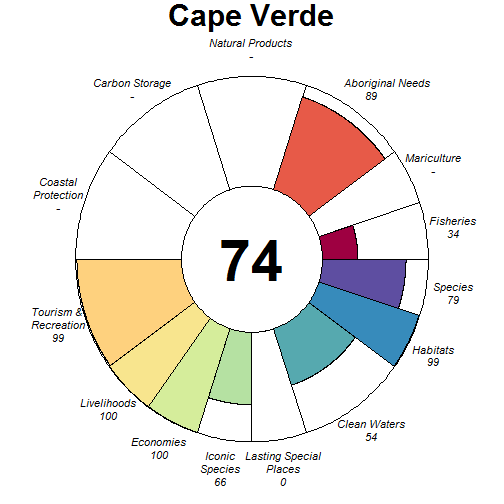
| id | score | status | future | trend | pressures | resilience |
|---|---|---|---|---|---|---|
| Index | 63.80 | NA | 63.41 | NA | NA | NA |
| Food Provision | 33.50 | 32.00 | 35.00 | -0.01 | NA | NA |
| . Fisheries | 33.50 | 32.00 | 35.00 | -0.01 | 25.70 | 56.47 |
| . Mariculture | NA | NA | NA | NA | 26.56 | 51.04 |
| Aboriginal Needs | 52.50 | 50.00 | 55.00 | 0.00 | 25.90 | 56.19 |
| Natural Products | NA | NA | NA | NA | NA | NA |
| Carbon Storage | NA | NA | NA | NA | NaN | NA |
| Coastal Protection | NA | NA | NA | NA | NaN | NA |
| Tourism & Recreation | 98.83 | 100.00 | 97.66 | -0.01 | 55.00 | 50.00 |
| Coastal Livelihoods & Economies | 99.88 | 100.00 | 99.75 | 0.16 | NA | NA |
| . Livelihoods | 100.00 | 100.00 | 100.00 | 0.38 | 33.01 | 51.82 |
| . Economies | 99.75 | 100.00 | 99.51 | -0.07 | 33.01 | 46.25 |
| Sense of Place | 33.06 | 33.33 | 32.79 | -0.14 | NA | NA |
| . Iconic Species | 66.12 | 66.67 | 65.58 | -0.14 | 35.04 | 59.12 |
| . Lasting Special Places | 0.00 | 0.00 | 0.00 | NA | 44.25 | 59.09 |
| Clean Waters | 54.17 | 55.89 | 52.44 | 0.03 | 75.00 | 50.00 |
| Biodiversity | 89.21 | 90.77 | 87.64 | -0.12 | NA | NA |
| . Habitats | 99.45 | 98.91 | 100.00 | -0.01 | 25.98 | 58.27 |
| . Species | 78.96 | 82.63 | 75.28 | -0.23 | 33.93 | 52.90 |

| id | score | status | future | trend | pressures | resilience |
|---|---|---|---|---|---|---|
| Index | 61.51 | NA | 60.30 | NA | NA | NA |
| Food Provision | 0.00 | 0.00 | 0.00 | 0.00 | NA | NA |
| . Fisheries | 0.00 | 0.00 | 0.00 | 0.00 | 25.73 | 57.96 |
| . Mariculture | NA | NA | NA | NA | 26.89 | 63.13 |
| Aboriginal Needs | 52.77 | 50.00 | 55.54 | 0.00 | 25.88 | 59.43 |
| Natural Products | 2.15 | 2.02 | 2.28 | 0.00 | 29.74 | 67.75 |
| Carbon Storage | 87.94 | 97.95 | 77.93 | -0.42 | 30.27 | 54.42 |
| Coastal Protection | 53.71 | 54.19 | 53.22 | -0.10 | 38.55 | 54.42 |
| Tourism & Recreation | 90.40 | 87.78 | 93.01 | 0.00 | 49.09 | 66.40 |
| Coastal Livelihoods & Economies | 82.20 | 85.40 | 79.00 | -0.17 | NA | NA |
| . Livelihoods | 87.48 | 92.39 | 82.56 | -0.19 | 29.88 | 35.94 |
| . Economies | 76.92 | 78.41 | 75.44 | -0.15 | 29.59 | 49.46 |
| Sense of Place | 67.17 | 66.79 | 67.55 | -0.12 | NA | NA |
| . Iconic Species | 57.75 | 60.00 | 55.51 | -0.25 | 33.80 | 61.87 |
| . Lasting Special Places | 76.59 | 73.58 | 79.60 | 0.00 | 40.81 | 65.59 |
| Clean Waters | 74.39 | 73.64 | 75.14 | 0.02 | 65.15 | 66.40 |
| Biodiversity | 84.76 | 87.31 | 82.20 | -0.22 | NA | NA |
| . Habitats | 82.98 | 87.18 | 78.78 | -0.30 | 30.67 | 61.50 |
| . Species | 86.53 | 87.45 | 85.61 | -0.15 | 33.00 | 56.57 |
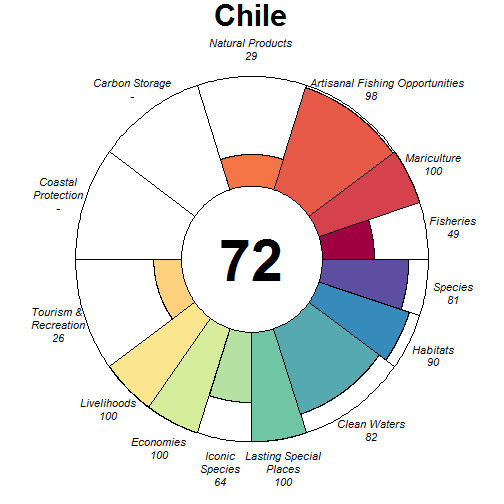
| id | score | status | future | trend | pressures | resilience |
|---|---|---|---|---|---|---|
| Index | 70.04 | NA | 70.91 | NA | NA | NA |
| Food Provision | 57.46 | 55.39 | 59.52 | 0.02 | NA | NA |
| . Fisheries | 47.32 | 44.76 | 49.88 | 0.02 | 28.64 | 58.80 |
| . Mariculture | 100.00 | 100.00 | 100.00 | 0.00 | 26.62 | 62.48 |
| Aboriginal Needs | 52.89 | 50.00 | 55.78 | 0.00 | 26.81 | 61.84 |
| Natural Products | 27.89 | 25.31 | 30.46 | 0.11 | 26.78 | 65.25 |
| Carbon Storage | NA | NA | NA | NA | NaN | NA |
| Coastal Protection | NA | NA | NA | NA | NaN | NA |
| Tourism & Recreation | 25.26 | 24.14 | 26.38 | 0.00 | 46.54 | 75.00 |
| Coastal Livelihoods & Economies | 100.00 | 100.00 | 100.00 | 0.17 | NA | NA |
| . Livelihoods | 100.00 | 100.00 | 100.00 | 0.38 | 29.38 | 55.32 |
| . Economies | 100.00 | 100.00 | 100.00 | -0.03 | 28.62 | 55.42 |
| Sense of Place | 80.69 | 81.30 | 80.08 | 0.04 | NA | NA |
| . Iconic Species | 61.61 | 63.08 | 60.15 | -0.22 | 31.40 | 62.46 |
| . Lasting Special Places | 99.76 | 99.52 | 100.00 | 0.31 | 38.66 | 75.00 |
| Clean Waters | 78.84 | 78.45 | 79.23 | -0.05 | 60.90 | 75.00 |
| Biodiversity | 82.36 | 81.53 | 83.20 | -0.13 | NA | NA |
| . Habitats | 86.39 | 84.01 | 88.78 | -0.09 | 28.81 | 63.73 |
| . Species | 78.34 | 79.05 | 77.62 | -0.18 | 34.20 | 64.41 |
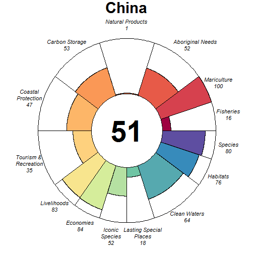
| id | score | status | future | trend | pressures | resilience |
|---|---|---|---|---|---|---|
| Index | 56.34 | NA | 54.98 | NA | NA | NA |
| Food Provision | 68.28 | 67.99 | 68.57 | 0.01 | NA | NA |
| . Fisheries | 15.76 | 15.00 | 16.53 | 0.03 | 35.23 | 59.51 |
| . Mariculture | 100.00 | 100.00 | 100.00 | 0.00 | 37.30 | 62.60 |
| Aboriginal Needs | 52.32 | 50.00 | 54.64 | 0.00 | 31.49 | 59.59 |
| Natural Products | 1.31 | 1.22 | 1.39 | 0.01 | 28.83 | 69.37 |
| Carbon Storage | 53.09 | 62.73 | 43.45 | -0.56 | 37.33 | 57.98 |
| Coastal Protection | 46.60 | 46.24 | 46.95 | -0.10 | 33.70 | 57.98 |
| Tourism & Recreation | 34.78 | 33.68 | 35.89 | 0.00 | 55.00 | 75.00 |
| Coastal Livelihoods & Economies | 83.62 | 86.84 | 80.40 | -0.19 | NA | NA |
| . Livelihoods | 83.23 | 73.69 | 92.78 | 0.23 | 35.33 | 67.12 |
| . Economies | 84.01 | 100.00 | 68.01 | -0.62 | 33.33 | 61.75 |
| Sense of Place | 34.74 | 35.82 | 33.67 | -0.04 | NA | NA |
| . Iconic Species | 51.85 | 56.00 | 47.69 | -0.33 | 40.66 | 63.39 |
| . Lasting Special Places | 17.64 | 15.63 | 19.65 | 0.25 | 47.51 | 73.86 |
| Clean Waters | 63.79 | 63.09 | 64.49 | 0.03 | 75.00 | 75.00 |
| Biodiversity | 77.85 | 80.80 | 74.90 | -0.23 | NA | NA |
| . Habitats | 75.55 | 77.03 | 74.07 | -0.20 | 35.17 | 63.46 |
| . Species | 80.16 | 84.58 | 75.73 | -0.25 | 41.41 | 61.34 |
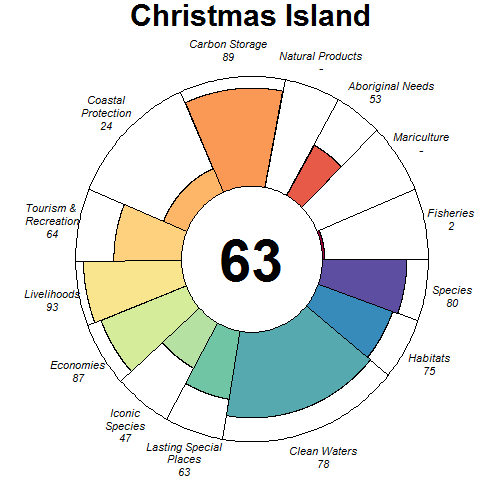
| id | score | status | future | trend | pressures | resilience |
|---|---|---|---|---|---|---|
| Index | 58.85 | NA | 59.34 | NA | NA | NA |
| Food Provision | 2.11 | 2.00 | 2.21 | 0.00 | NA | NA |
| . Fisheries | 2.11 | 2.00 | 2.21 | 0.00 | 27.11 | 59.67 |
| . Mariculture | NA | NA | NA | NA | 25.69 | 74.61 |
| Aboriginal Needs | 52.85 | 50.00 | 55.71 | 0.00 | 26.71 | 61.29 |
| Natural Products | NA | NA | NA | NA | NA | NA |
| Carbon Storage | 89.35 | 85.51 | 93.18 | NA | 32.10 | 59.27 |
| Coastal Protection | 23.86 | 22.41 | 25.31 | 0.07 | 33.97 | 59.27 |
| Tourism & Recreation | 63.92 | 61.12 | 66.71 | 0.01 | 48.52 | 75.00 |
| Coastal Livelihoods & Economies | 89.68 | 92.71 | 86.65 | -0.04 | NA | NA |
| . Livelihoods | 92.72 | 85.44 | 100.00 | 0.43 | 29.34 | 45.89 |
| . Economies | 86.64 | 99.98 | 73.30 | -0.52 | 28.66 | 53.83 |
| Sense of Place | 55.05 | 56.35 | 53.76 | -0.25 | NA | NA |
| . Iconic Species | 47.16 | 53.33 | 40.98 | -0.50 | 32.10 | 63.43 |
| . Lasting Special Places | 62.95 | 59.37 | 66.54 | 0.00 | 38.40 | 75.00 |
| Clean Waters | 78.05 | 77.28 | 78.82 | -0.02 | 64.18 | 75.00 |
| Biodiversity | 77.19 | 77.58 | 76.79 | -0.15 | NA | NA |
| . Habitats | 74.63 | 71.38 | 77.88 | -0.02 | 32.46 | 63.58 |
| . Species | 79.74 | 83.78 | 75.70 | -0.28 | 33.88 | 61.90 |
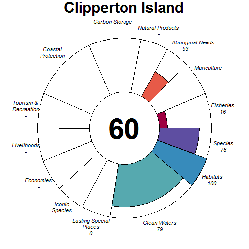
| id | score | status | future | trend | pressures | resilience |
|---|---|---|---|---|---|---|
| Index | 49.02 | NA | 49.03 | NA | NA | NA |
| Food Provision | 15.75 | 15.00 | 16.49 | 0.00 | NA | NA |
| . Fisheries | 15.75 | 15.00 | 16.49 | 0.00 | 25.07 | 55.48 |
| . Mariculture | NA | NA | NA | NA | 25.28 | 55.27 |
| Aboriginal Needs | 52.64 | 50.00 | 55.27 | 0.00 | 25.04 | 57.00 |
| Natural Products | NA | NA | NA | NA | NA | NA |
| Carbon Storage | NA | NA | NA | NA | NaN | NA |
| Coastal Protection | NA | NA | NA | NA | NaN | NA |
| Tourism & Recreation | NA | NA | NA | NA | 43.43 | 54.22 |
| Coastal Livelihoods & Economies | NA | NA | NA | NA | NA | NA |
| . Livelihoods | NA | NA | NA | NA | NaN | 45.02 |
| . Economies | NA | NA | NA | NA | NaN | 50.73 |
| Sense of Place | 0.00 | 0.00 | 0.00 | NaN | NA | NA |
| . Iconic Species | NA | NA | NA | NA | 29.89 | 58.53 |
| . Lasting Special Places | 0.00 | 0.00 | 0.00 | NA | 36.50 | 55.56 |
| Clean Waters | 78.57 | 78.76 | 78.37 | 0.00 | 55.72 | 54.22 |
| Biodiversity | 88.09 | 89.64 | 86.54 | -0.12 | NA | NA |
| . Habitats | 100.00 | 100.00 | 100.00 | -0.01 | 25.06 | 56.84 |
| . Species | 76.18 | 79.28 | 73.08 | -0.23 | 30.75 | 52.73 |
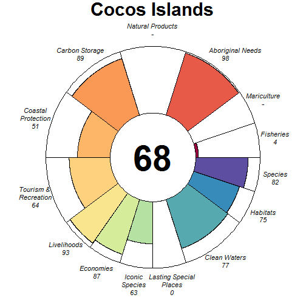
| id | score | status | future | trend | pressures | resilience |
|---|---|---|---|---|---|---|
| Index | 59.96 | NA | 61.01 | NA | NA | NA |
| Food Provision | 4.23 | 4.00 | 4.47 | 0.01 | NA | NA |
| . Fisheries | 4.23 | 4.00 | 4.47 | 0.01 | 26.22 | 60.09 |
| . Mariculture | NA | NA | NA | NA | 25.38 | 74.61 |
| Aboriginal Needs | 52.86 | 50.00 | 55.71 | 0.00 | 26.11 | 60.72 |
| Natural Products | NA | NA | NA | NA | NA | NA |
| Carbon Storage | 89.44 | 85.51 | 93.36 | NA | 30.51 | 58.33 |
| Coastal Protection | 50.94 | 47.96 | 53.91 | 0.07 | 34.61 | 58.33 |
| Tourism & Recreation | 63.86 | 61.12 | 66.61 | 0.01 | 49.06 | 75.00 |
| Coastal Livelihoods & Economies | 89.69 | 92.71 | 86.67 | -0.04 | NA | NA |
| . Livelihoods | 92.72 | 85.44 | 100.00 | 0.43 | 29.32 | 45.89 |
| . Economies | 86.66 | 99.98 | 73.35 | -0.52 | 28.51 | 53.83 |
| Sense of Place | 31.60 | 30.00 | 33.20 | 0.00 | NA | NA |
| . Iconic Species | 63.20 | 60.00 | 66.41 | 0.00 | 31.48 | 63.85 |
| . Lasting Special Places | 0.00 | 0.00 | 0.00 | NA | 38.18 | 75.00 |
| Clean Waters | 77.30 | 76.60 | 78.00 | -0.02 | 65.09 | 75.00 |
| Biodiversity | 78.25 | 78.43 | 78.06 | -0.15 | NA | NA |
| . Habitats | 74.96 | 71.38 | 78.54 | -0.02 | 30.07 | 64.00 |
| . Species | 81.53 | 85.48 | 77.58 | -0.28 | 32.24 | 61.90 |
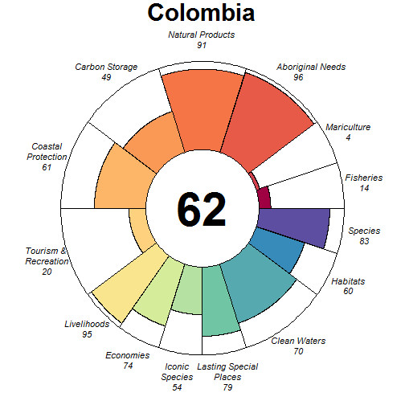
| id | score | status | future | trend | pressures | resilience |
|---|---|---|---|---|---|---|
| Index | 58.23 | NA | 56.41 | NA | NA | NA |
| Food Provision | 12.24 | 11.59 | 12.89 | 0.02 | NA | NA |
| . Fisheries | 13.75 | 13.00 | 14.49 | 0.03 | 28.21 | 57.83 |
| . Mariculture | 4.20 | 4.05 | 4.34 | -0.03 | 31.16 | 58.85 |
| Aboriginal Needs | 52.68 | 50.00 | 55.37 | 0.00 | 26.42 | 58.95 |
| Natural Products | 91.28 | 82.56 | 100.00 | 0.53 | 26.21 | 63.65 |
| Carbon Storage | 48.95 | 67.58 | 30.33 | -0.96 | 29.76 | 57.35 |
| Coastal Protection | 60.54 | 63.69 | 57.39 | -0.24 | 37.97 | 57.35 |
| Tourism & Recreation | 20.03 | 19.40 | 20.65 | 0.00 | 55.00 | 75.00 |
| Coastal Livelihoods & Economies | 84.48 | 94.84 | 74.13 | -0.35 | NA | NA |
| . Livelihoods | 94.84 | 89.67 | 100.00 | 0.18 | 31.85 | 34.41 |
| . Economies | 74.13 | 100.00 | 48.25 | -0.88 | 30.54 | 51.50 |
| Sense of Place | 66.35 | 57.06 | 75.64 | 0.36 | NA | NA |
| . Iconic Species | 54.10 | 56.92 | 51.28 | -0.28 | 35.96 | 62.31 |
| . Lasting Special Places | 78.60 | 57.20 | 100.00 | 1.00 | 44.69 | 70.45 |
| Clean Waters | 70.42 | 68.52 | 72.32 | 0.08 | 75.00 | 75.00 |
| Biodiversity | 71.42 | 75.66 | 67.18 | -0.31 | NA | NA |
| . Habitats | 59.78 | 66.16 | 53.41 | -0.43 | 32.24 | 61.56 |
| . Species | 83.06 | 85.17 | 80.96 | -0.19 | 34.22 | 57.71 |
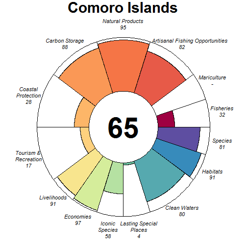
| id | score | status | future | trend | pressures | resilience |
|---|---|---|---|---|---|---|
| Index | 60.99 | NA | 62.22 | NA | NA | NA |
| Food Provision | 32.15 | 32.00 | 32.30 | -0.14 | NA | NA |
| . Fisheries | 32.15 | 32.00 | 32.30 | -0.14 | 26.05 | 57.87 |
| . Mariculture | NA | NA | NA | NA | 27.23 | 57.29 |
| Aboriginal Needs | 52.62 | 50.00 | 55.24 | 0.00 | 26.35 | 58.10 |
| Natural Products | 95.18 | 90.35 | 100.00 | 0.00 | 26.02 | 61.68 |
| Carbon Storage | 88.13 | 85.51 | 90.75 | NA | 34.10 | 52.66 |
| Coastal Protection | 28.30 | 27.57 | 29.04 | NA | 36.45 | 52.66 |
| Tourism & Recreation | 16.90 | 16.43 | 17.37 | 0.00 | 44.46 | 62.50 |
| Coastal Livelihoods & Economies | 93.82 | 91.68 | 95.97 | -0.06 | NA | NA |
| . Livelihoods | 90.94 | 89.94 | 91.95 | -0.14 | 29.03 | 65.01 |
| . Economies | 96.71 | 93.41 | 100.00 | 0.03 | 29.03 | 47.71 |
| Sense of Place | 30.96 | 30.51 | 31.41 | -0.05 | NA | NA |
| . Iconic Species | 57.87 | 57.14 | 58.60 | -0.10 | 33.38 | 61.39 |
| . Lasting Special Places | 4.06 | 3.88 | 4.23 | 0.00 | 38.99 | 66.48 |
| Clean Waters | 79.56 | 78.11 | 81.00 | 0.03 | 57.43 | 62.50 |
| Biodiversity | 86.08 | 86.65 | 85.51 | -0.15 | NA | NA |
| . Habitats | 91.12 | 87.01 | 95.23 | 0.00 | 31.64 | 60.25 |
| . Species | 81.03 | 86.28 | 75.79 | -0.29 | 31.92 | 54.87 |
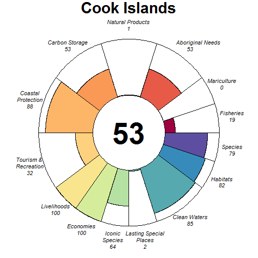
| id | score | status | future | trend | pressures | resilience |
|---|---|---|---|---|---|---|
| Index | 60.42 | NA | 59.57 | NA | NA | NA |
| Food Provision | 18.97 | 18.00 | 19.93 | -0.01 | NA | NA |
| . Fisheries | 18.97 | 18.00 | 19.93 | -0.01 | 25.39 | 59.12 |
| . Mariculture | 0.00 | 0.00 | 0.00 | 0.00 | 25.35 | 59.89 |
| Aboriginal Needs | 52.91 | 50.00 | 55.82 | 0.00 | 25.49 | 60.74 |
| Natural Products | 0.75 | 0.70 | 0.79 | 0.00 | 25.96 | 62.95 |
| Carbon Storage | 52.66 | 50.00 | 55.32 | 0.00 | 26.14 | 58.38 |
| Coastal Protection | 87.66 | 98.03 | 77.28 | -0.41 | 38.61 | 58.38 |
| Tourism & Recreation | 32.47 | 30.68 | 34.27 | 0.01 | 40.80 | 74.99 |
| Coastal Livelihoods & Economies | 99.95 | 99.90 | 100.00 | 0.30 | NA | NA |
| . Livelihoods | 100.00 | 100.00 | 100.00 | 0.45 | 27.97 | 45.32 |
| . Economies | 99.90 | 99.79 | 100.00 | 0.15 | 27.58 | 52.38 |
| Sense of Place | 33.20 | 33.32 | 33.09 | -0.08 | NA | NA |
| . Iconic Species | 64.07 | 64.44 | 63.69 | -0.17 | 30.56 | 60.86 |
| . Lasting Special Places | 2.34 | 2.19 | 2.48 | 0.00 | 34.99 | 74.99 |
| Clean Waters | 84.54 | 84.92 | 84.16 | -0.13 | 51.33 | 74.99 |
| Biodiversity | 80.18 | 81.46 | 78.89 | -0.20 | NA | NA |
| . Habitats | 81.66 | 80.61 | 82.71 | -0.13 | 27.87 | 62.07 |
| . Species | 78.69 | 82.31 | 75.07 | -0.26 | 30.58 | 57.10 |
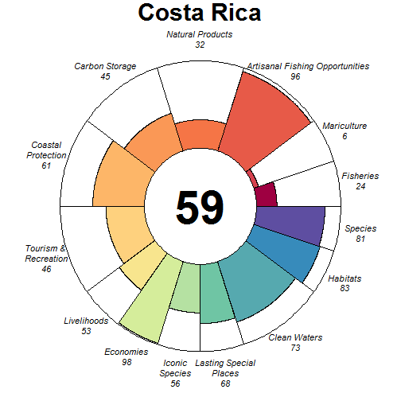
| id | score | status | future | trend | pressures | resilience |
|---|---|---|---|---|---|---|
| Index | 57.96 | NA | 53.89 | NA | NA | NA |
| Food Provision | 22.53 | 21.41 | 23.64 | 0.01 | NA | NA |
| . Fisheries | 24.21 | 23.00 | 25.42 | 0.01 | 28.61 | 57.61 |
| . Mariculture | 5.86 | 5.68 | 6.03 | -0.05 | 31.06 | 60.42 |
| Aboriginal Needs | 52.80 | 50.00 | 55.60 | 0.00 | 26.93 | 60.88 |
| Natural Products | 32.42 | 33.00 | 31.84 | -0.25 | 25.56 | 65.26 |
| Carbon Storage | 45.36 | 64.67 | 26.04 | -1.00 | 29.96 | 51.99 |
| Coastal Protection | 61.35 | 75.24 | 47.46 | -0.69 | 31.00 | 59.66 |
| Tourism & Recreation | 45.74 | 44.64 | 46.85 | -0.02 | 55.00 | 75.00 |
| Coastal Livelihoods & Economies | 75.50 | 76.82 | 74.18 | -0.13 | NA | NA |
| . Livelihoods | 52.57 | 53.64 | 51.51 | -0.09 | 28.21 | 35.49 |
| . Economies | 98.43 | 100.00 | 96.85 | -0.16 | 29.74 | 52.83 |
| Sense of Place | 61.70 | 61.66 | 61.75 | -0.14 | NA | NA |
| . Iconic Species | 55.59 | 58.57 | 52.60 | -0.28 | 36.56 | 62.07 |
| . Lasting Special Places | 67.82 | 64.75 | 70.90 | 0.00 | 45.08 | 73.86 |
| Clean Waters | 72.96 | 74.56 | 71.36 | -0.06 | 75.00 | 75.00 |
| Biodiversity | 82.08 | 85.84 | 78.32 | -0.27 | NA | NA |
| . Habitats | 82.81 | 87.73 | 77.88 | -0.33 | 30.32 | 62.47 |
| . Species | 81.35 | 83.96 | 78.75 | -0.22 | 33.77 | 59.86 |
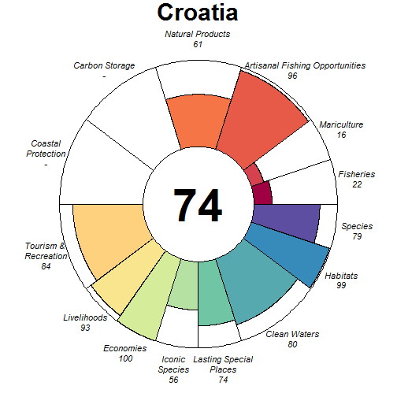
| id | score | status | future | trend | pressures | resilience |
|---|---|---|---|---|---|---|
| Index | 69.82 | NA | 71.27 | NA | NA | NA |
| Food Provision | 21.16 | 20.48 | 21.84 | -0.02 | NA | NA |
| . Fisheries | 21.69 | 21.00 | 22.39 | -0.02 | 32.09 | 55.88 |
| . Mariculture | 15.84 | 15.25 | 16.44 | -0.06 | 31.96 | 67.71 |
| Aboriginal Needs | 52.44 | 50.00 | 54.89 | 0.00 | 27.30 | 56.91 |
| Natural Products | 60.52 | 58.37 | 62.67 | -0.05 | 29.42 | 61.86 |
| Carbon Storage | NA | NA | NA | NA | NaN | NA |
| Coastal Protection | NA | NA | NA | NA | NaN | NA |
| Tourism & Recreation | 84.18 | 80.57 | 87.78 | -0.01 | 46.41 | 75.00 |
| Coastal Livelihoods & Economies | 96.47 | 92.95 | 100.00 | 0.64 | NA | NA |
| . Livelihoods | 92.95 | 85.90 | 100.00 | 0.30 | 30.59 | 44.83 |
| . Economies | 100.00 | 100.00 | 100.00 | 0.98 | 30.26 | 50.33 |
| Sense of Place | 65.18 | 58.80 | 71.55 | 0.25 | NA | NA |
| . Iconic Species | 56.05 | 64.00 | 48.10 | -0.50 | 34.52 | 60.76 |
| . Lasting Special Places | 74.30 | 53.59 | 95.01 | 1.00 | 39.32 | 70.45 |
| Clean Waters | 80.27 | 82.61 | 77.92 | -0.16 | 60.68 | 75.00 |
| Biodiversity | 88.84 | 89.66 | 88.03 | -0.10 | NA | NA |
| . Habitats | 98.62 | 97.25 | 100.00 | 0.01 | 30.08 | 59.54 |
| . Species | 79.06 | 82.07 | 76.05 | -0.20 | 36.98 | 55.50 |

| id | score | status | future | trend | pressures | resilience |
|---|---|---|---|---|---|---|
| Index | 72.39 | NA | 72.90 | NA | NA | NA |
| Food Provision | 34.72 | 34.00 | 35.45 | -0.10 | NA | NA |
| . Fisheries | 34.72 | 34.00 | 35.45 | -0.10 | 25.01 | 57.64 |
| . Mariculture | NA | NA | NA | NA | 25.03 | 70.34 |
| Aboriginal Needs | 53.26 | 50.00 | 56.53 | 0.00 | 25.03 | 64.58 |
| Natural Products | NA | NA | NA | NA | NA | NA |
| Carbon Storage | NA | NA | NA | NA | NaN | NA |
| Coastal Protection | NA | NA | NA | NA | NaN | NA |
| Tourism & Recreation | NA | NA | NA | NA | 25.27 | 73.53 |
| Coastal Livelihoods & Economies | NA | NA | NA | NA | NA | NA |
| . Livelihoods | NA | NA | NA | NA | NaN | 34.82 |
| . Economies | NA | NA | NA | NA | NaN | 50.00 |
| Sense of Place | 74.70 | 73.33 | 76.06 | 0.00 | NA | NA |
| . Iconic Species | 49.39 | 46.67 | 52.12 | 0.00 | 26.20 | 61.59 |
| . Lasting Special Places | 100.00 | 100.00 | 100.00 | 0.00 | 25.11 | 71.92 |
| Clean Waters | 99.98 | 99.97 | 100.00 | 0.00 | 25.44 | 73.53 |
| Biodiversity | 78.50 | 79.41 | 77.59 | -0.19 | NA | NA |
| . Habitats | NA | NA | NA | NA | NaN | NA |
| . Species | 78.50 | 79.41 | 77.59 | -0.19 | 27.29 | 59.80 |
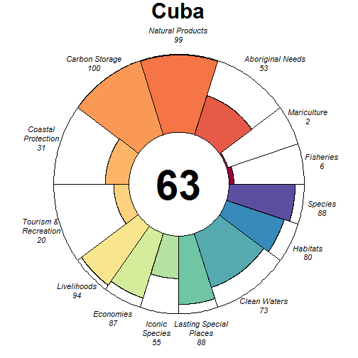
| id | score | status | future | trend | pressures | resilience |
|---|---|---|---|---|---|---|
| Index | 62.25 | NA | 63.23 | NA | NA | NA |
| Food Provision | 5.61 | 5.30 | 5.93 | 0.02 | NA | NA |
| . Fisheries | 6.36 | 6.00 | 6.72 | 0.02 | 28.24 | 60.68 |
| . Mariculture | 1.72 | 1.61 | 1.82 | 0.00 | 30.00 | 67.71 |
| Aboriginal Needs | 52.97 | 50.00 | 55.93 | 0.00 | 26.12 | 62.06 |
| Natural Products | 99.08 | 98.15 | 100.00 | 1.00 | 27.77 | 65.24 |
| Carbon Storage | 100.00 | 100.00 | 100.00 | 0.09 | 33.08 | 60.93 |
| Coastal Protection | 31.41 | 29.35 | 33.48 | 0.09 | 36.13 | 60.93 |
| Tourism & Recreation | 20.23 | 19.57 | 20.90 | 0.00 | 53.60 | 75.00 |
| Coastal Livelihoods & Economies | 90.56 | 90.27 | 90.84 | -0.05 | NA | NA |
| . Livelihoods | 93.74 | 93.19 | 94.28 | -0.01 | 31.85 | 36.45 |
| . Economies | 87.37 | 87.34 | 87.40 | -0.09 | 30.42 | 49.46 |
| Sense of Place | 71.27 | 71.05 | 71.50 | -0.18 | NA | NA |
| . Iconic Species | 54.61 | 58.57 | 50.64 | -0.35 | 34.45 | 64.49 |
| . Lasting Special Places | 87.94 | 83.52 | 92.36 | 0.00 | 41.77 | 73.86 |
| Clean Waters | 72.97 | 72.18 | 73.76 | 0.02 | 72.67 | 75.00 |
| Biodiversity | 84.26 | 81.70 | 86.82 | -0.04 | NA | NA |
| . Habitats | 80.50 | 75.00 | 86.00 | 0.06 | 31.06 | 63.57 |
| . Species | 88.02 | 88.40 | 87.63 | -0.14 | 34.57 | 59.83 |
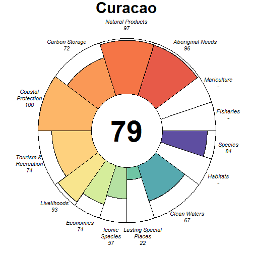
| id | score | status | future | trend | pressures | resilience |
|---|---|---|---|---|---|---|
| Index | 74.70 | NA | 72.71 | NA | NA | NA |
| Food Provision | NA | NA | NA | NA | NA | NA |
| . Fisheries | NA | NA | NA | NA | 25.97 | 57.59 |
| . Mariculture | NA | NA | NA | NA | 27.42 | 63.13 |
| Aboriginal Needs | 52.67 | 50.00 | 55.33 | 0.00 | 26.15 | 58.48 |
| Natural Products | 96.62 | 93.25 | 100.00 | 0.07 | 29.39 | 61.93 |
| Carbon Storage | 72.14 | 87.72 | 56.56 | -0.61 | 28.62 | 45.66 |
| Coastal Protection | 100.00 | 100.00 | 100.00 | 0.03 | 51.13 | 52.57 |
| Tourism & Recreation | 74.42 | 72.88 | 75.96 | 0.01 | 55.00 | 66.40 |
| Coastal Livelihoods & Economies | 83.32 | 84.52 | 82.13 | -0.10 | NA | NA |
| . Livelihoods | 93.02 | 93.79 | 92.24 | -0.04 | 30.71 | 32.97 |
| . Economies | 73.63 | 75.24 | 72.01 | -0.16 | 30.08 | 49.46 |
| Sense of Place | 39.50 | 40.72 | 38.29 | -0.14 | NA | NA |
| . Iconic Species | 56.77 | 60.00 | 53.54 | -0.29 | 36.12 | 61.51 |
| . Lasting Special Places | 22.23 | 21.43 | 23.03 | 0.00 | 42.96 | 65.59 |
| Clean Waters | 67.43 | 68.27 | 66.59 | 0.01 | 75.00 | 66.40 |
| Biodiversity | 83.87 | 89.91 | 81.79 | -0.24 | NA | NA |
| . Habitats | NA | 93.86 | NA | -0.29 | 37.23 | NA |
| . Species | 83.87 | 85.95 | 81.79 | -0.18 | 33.99 | 56.58 |
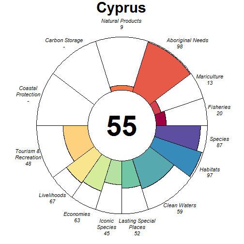
| id | score | status | future | trend | pressures | resilience |
|---|---|---|---|---|---|---|
| Index | 52.13 | NA | 53.15 | NA | NA | NA |
| Food Provision | 18.81 | 17.87 | 19.76 | 0.00 | NA | NA |
| . Fisheries | 19.94 | 19.00 | 20.87 | 0.00 | 28.84 | 59.55 |
| . Mariculture | 13.40 | 12.41 | 14.40 | 0.04 | 29.51 | 69.79 |
| Aboriginal Needs | 52.78 | 50.00 | 55.56 | 0.00 | 26.81 | 60.52 |
| Natural Products | 8.92 | 8.45 | 9.39 | 0.00 | 30.45 | 64.40 |
| Carbon Storage | NA | NA | NA | NA | NaN | NA |
| Coastal Protection | NA | NA | NA | NA | NaN | NA |
| Tourism & Recreation | 48.41 | 47.14 | 49.68 | -0.02 | 55.00 | 75.00 |
| Coastal Livelihoods & Economies | 65.42 | 63.52 | 67.32 | 0.02 | NA | NA |
| . Livelihoods | 67.39 | 61.48 | 73.29 | 0.25 | 30.39 | 38.68 |
| . Economies | 63.45 | 65.55 | 61.34 | -0.20 | 31.28 | 52.67 |
| Sense of Place | 48.37 | 44.41 | 52.32 | 0.25 | NA | NA |
| . Iconic Species | 45.10 | 51.43 | 38.78 | -0.50 | 36.66 | 63.65 |
| . Lasting Special Places | 51.63 | 37.39 | 65.86 | 1.00 | 46.13 | 73.86 |
| Clean Waters | 59.08 | 61.05 | 57.10 | -0.10 | 75.00 | 75.00 |
| Biodiversity | 91.67 | 90.35 | 92.99 | -0.06 | NA | NA |
| . Habitats | 96.64 | 93.28 | 100.00 | 0.03 | 28.03 | 63.90 |
| . Species | 86.70 | 87.42 | 85.98 | -0.15 | 36.70 | 61.21 |
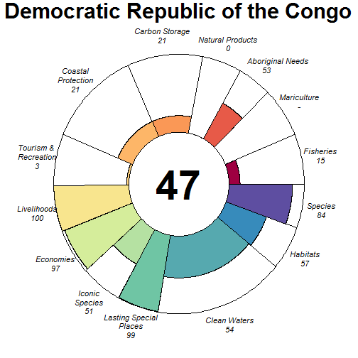
| id | score | status | future | trend | pressures | resilience |
|---|---|---|---|---|---|---|
| Index | 44.91 | NA | 42.62 | NA | NA | NA |
| Food Provision | 14.65 | 14.00 | 15.30 | 0.02 | NA | NA |
| . Fisheries | 14.65 | 14.00 | 15.30 | 0.02 | 32.97 | 57.82 |
| . Mariculture | NA | NA | NA | NA | 46.60 | 56.25 |
| Aboriginal Needs | 52.53 | 50.00 | 55.07 | 0.00 | 28.97 | 59.67 |
| Natural Products | 0.00 | 0.00 | 0.00 | 0.00 | 34.64 | 62.80 |
| Carbon Storage | 21.24 | 30.61 | 11.87 | -1.00 | 33.00 | 50.48 |
| Coastal Protection | 21.31 | 30.61 | 12.00 | -1.00 | 31.67 | 50.48 |
| Tourism & Recreation | 2.92 | 2.89 | 2.96 | 0.00 | 55.00 | 62.50 |
| Coastal Livelihoods & Economies | 98.31 | 100.00 | 96.63 | 0.43 | NA | NA |
| . Livelihoods | 100.00 | 100.00 | 100.00 | 1.00 | 42.45 | 32.28 |
| . Economies | 96.63 | 100.00 | 93.25 | -0.15 | 38.57 | 47.96 |
| Sense of Place | 74.96 | 75.32 | 74.60 | -0.08 | NA | NA |
| . Iconic Species | 50.60 | 52.00 | 49.20 | -0.17 | 44.09 | 61.60 |
| . Lasting Special Places | 99.32 | 98.64 | 100.00 | 0.00 | 46.91 | 61.93 |
| Clean Waters | 53.73 | 50.84 | 56.61 | 0.23 | 75.00 | 62.50 |
| Biodiversity | 70.79 | 77.21 | 64.38 | -0.35 | NA | NA |
| . Habitats | 57.12 | 65.31 | 48.92 | -0.50 | 33.99 | 59.49 |
| . Species | 84.47 | 89.11 | 79.84 | -0.21 | 42.22 | 52.43 |
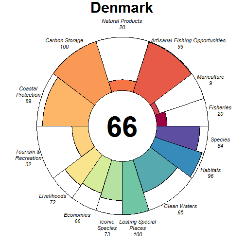
| id | score | status | future | trend | pressures | resilience |
|---|---|---|---|---|---|---|
| Index | 66.04 | NA | 66.77 | NA | NA | NA |
| Food Provision | 19.81 | 18.79 | 20.82 | 0.03 | NA | NA |
| . Fisheries | 20.02 | 19.00 | 21.05 | 0.03 | 32.58 | 58.82 |
| . Mariculture | 9.21 | 8.75 | 9.67 | 0.02 | 35.84 | 63.53 |
| Aboriginal Needs | 52.73 | 50.00 | 55.46 | 0.00 | 28.95 | 62.03 |
| Natural Products | 20.18 | 18.77 | 21.59 | 0.05 | 29.90 | 65.24 |
| Carbon Storage | 100.00 | 100.00 | 100.00 | NA | 39.03 | 62.16 |
| Coastal Protection | 88.70 | 87.23 | 90.16 | 0.01 | 53.37 | 62.16 |
| Tourism & Recreation | 31.68 | 30.67 | 32.68 | 0.00 | 55.00 | 75.00 |
| Coastal Livelihoods & Economies | 68.77 | 66.40 | 71.15 | 0.02 | NA | NA |
| . Livelihoods | 71.55 | 66.77 | 76.34 | 0.18 | 33.50 | 40.93 |
| . Economies | 65.99 | 66.03 | 65.96 | -0.14 | 32.17 | 60.75 |
| Sense of Place | 86.66 | 86.67 | 86.64 | 0.44 | NA | NA |
| . Iconic Species | 73.31 | 73.33 | 73.29 | -0.12 | 37.70 | 62.89 |
| . Lasting Special Places | 100.00 | 100.00 | 100.00 | 1.00 | 46.43 | 68.18 |
| Clean Waters | 64.96 | 66.88 | 63.04 | -0.09 | 75.00 | 75.00 |
| Biodiversity | 89.68 | 87.67 | 91.69 | -0.05 | NA | NA |
| . Habitats | 95.66 | 91.31 | 100.00 | 0.02 | 34.44 | 62.88 |
| . Species | 83.71 | 84.03 | 83.38 | -0.11 | 40.22 | 61.08 |
| id | score | status | future | trend | pressures | resilience |
|---|---|---|---|---|---|---|
| Index | 65.57 | NA | 65.55 | NA | NA | NA |
| Food Provision | 21.01 | 20.00 | 22.02 | 0.01 | NA | NA |
| . Fisheries | 21.01 | 20.00 | 22.02 | 0.01 | 28.90 | 56.87 |
| . Mariculture | NA | NA | NA | NA | 27.44 | 50.00 |
| Aboriginal Needs | 52.44 | 50.00 | 54.88 | 0.00 | 26.93 | 56.48 |
| Natural Products | 84.69 | 80.68 | 88.71 | -0.01 | 28.12 | 60.41 |
| Carbon Storage | NA | NA | NA | NA | 28.61 | 44.68 |
| Coastal Protection | 99.23 | 98.45 | 100.00 | NA | 40.28 | 46.45 |
| Tourism & Recreation | 10.29 | 10.29 | 10.29 | 0.00 | 50.16 | 50.00 |
| Coastal Livelihoods & Economies | 96.37 | 94.61 | 98.13 | 0.22 | NA | NA |
| . Livelihoods | 92.74 | 89.22 | 96.25 | 0.05 | 30.42 | 43.76 |
| . Economies | 100.00 | 100.00 | 100.00 | 0.40 | 29.65 | 47.71 |
| Sense of Place | 36.06 | 36.41 | 35.71 | -0.08 | NA | NA |
| . Iconic Species | 68.07 | 68.89 | 67.26 | -0.17 | 33.23 | 59.90 |
| . Lasting Special Places | 4.05 | 3.92 | 4.17 | 0.00 | 37.71 | 56.82 |
| Clean Waters | 74.44 | 76.56 | 72.33 | 0.00 | 66.93 | 50.00 |
| Biodiversity | 90.76 | 94.06 | 87.46 | -0.16 | NA | NA |
| . Habitats | 99.61 | 99.23 | 100.00 | 0.00 | 29.36 | 59.08 |
| . Species | 81.91 | 88.90 | 74.92 | -0.32 | 34.16 | 51.63 |
| id | score | status | future | trend | pressures | resilience |
|---|---|---|---|---|---|---|
| Index | 46.36 | NA | 46.75 | NA | NA | NA |
| Food Provision | 1.05 | 1.00 | 1.10 | 0.00 | NA | NA |
| . Fisheries | 1.05 | 1.00 | 1.10 | 0.00 | 26.81 | 57.68 |
| . Mariculture | NA | NA | NA | NA | 28.45 | 66.67 |
| Aboriginal Needs | 52.56 | 50.00 | 55.11 | 0.00 | 26.87 | 57.86 |
| Natural Products | 40.20 | 37.85 | 42.56 | -0.02 | 29.85 | 72.28 |
| Carbon Storage | 25.88 | 25.28 | 26.49 | NA | 40.01 | 54.55 |
| Coastal Protection | 6.73 | 7.24 | 6.21 | -0.27 | 43.46 | 54.55 |
| Tourism & Recreation | 95.84 | 92.16 | 99.52 | 0.01 | 53.57 | 75.00 |
| Coastal Livelihoods & Economies | 93.92 | 88.93 | 98.91 | 0.09 | NA | NA |
| . Livelihoods | 96.20 | 92.39 | 100.00 | 0.06 | 30.43 | 44.97 |
| . Economies | 91.64 | 85.46 | 97.81 | 0.12 | 30.43 | 49.46 |
| Sense of Place | 35.45 | 36.79 | 34.10 | -0.12 | NA | NA |
| . Iconic Species | 66.00 | 68.89 | 63.12 | -0.25 | 36.93 | 62.31 |
| . Lasting Special Places | 4.89 | 4.69 | 5.08 | 0.00 | 44.17 | 69.32 |
| Clean Waters | 60.27 | 62.31 | 58.23 | -0.11 | 72.61 | 75.00 |
| Biodiversity | 70.98 | 72.48 | 69.48 | -0.16 | NA | NA |
| . Habitats | 58.46 | 58.71 | 58.21 | -0.13 | 36.93 | 60.89 |
| . Species | 83.50 | 86.26 | 80.75 | -0.20 | 35.29 | 56.03 |
| id | score | status | future | trend | pressures | resilience |
|---|---|---|---|---|---|---|
| Index | 61.85 | NA | 59.11 | NA | NA | NA |
| Food Provision | 5.71 | 5.40 | 6.01 | 0.02 | NA | NA |
| . Fisheries | 6.34 | 6.00 | 6.69 | 0.03 | 27.72 | 57.13 |
| . Mariculture | 0.30 | 0.29 | 0.32 | 0.00 | 31.11 | 64.58 |
| Aboriginal Needs | 52.79 | 50.00 | 55.58 | 0.00 | 26.78 | 60.57 |
| Natural Products | 83.94 | 72.60 | 95.28 | 0.30 | 30.98 | 63.82 |
| Carbon Storage | 57.02 | 81.90 | 32.14 | -1.00 | 36.65 | 55.56 |
| Coastal Protection | 54.52 | 57.04 | 52.00 | -0.19 | 43.96 | 55.56 |
| Tourism & Recreation | 36.00 | 35.65 | 36.34 | -0.01 | 55.00 | 62.50 |
| Coastal Livelihoods & Economies | 98.52 | 98.77 | 98.27 | 0.03 | NA | NA |
| . Livelihoods | 98.27 | 100.00 | 96.54 | -0.07 | 31.83 | 36.35 |
| . Economies | 98.77 | 97.54 | 100.00 | 0.13 | 30.76 | 48.08 |
| Sense of Place | 78.00 | 80.00 | 75.99 | -0.16 | NA | NA |
| . Iconic Species | 55.99 | 60.00 | 51.98 | -0.31 | 37.95 | 60.91 |
| . Lasting Special Places | 100.00 | 100.00 | 100.00 | 0.00 | 45.31 | 60.80 |
| Clean Waters | 68.10 | 69.21 | 67.00 | 0.01 | 75.00 | 62.50 |
| Biodiversity | 83.15 | 86.69 | 79.61 | -0.25 | NA | NA |
| . Habitats | 81.63 | 86.98 | 76.28 | -0.32 | 34.29 | 62.15 |
| . Species | 84.68 | 86.41 | 82.95 | -0.17 | 35.13 | 58.20 |
| id | score | status | future | trend | pressures | resilience |
|---|---|---|---|---|---|---|
| Index | 50.15 | NA | 47.35 | NA | NA | NA |
| Food Provision | 15.62 | 15.00 | 16.25 | 0.00 | NA | NA |
| . Fisheries | 15.63 | 15.00 | 16.25 | 0.00 | 29.23 | 54.21 |
| . Mariculture | 0.03 | 0.02 | 0.03 | 0.00 | 26.90 | 50.00 |
| Aboriginal Needs | 52.37 | 50.00 | 54.73 | 0.00 | 26.41 | 55.10 |
| Natural Products | 91.39 | 82.78 | 100.00 | 1.00 | 27.16 | 53.12 |
| Carbon Storage | 57.69 | 84.48 | 30.90 | -1.00 | 33.35 | 44.20 |
| Coastal Protection | 17.70 | 26.04 | 9.36 | -1.00 | 35.24 | 44.20 |
| Tourism & Recreation | 36.52 | 36.87 | 36.17 | 0.00 | 55.01 | 50.00 |
| Coastal Livelihoods & Economies | 42.38 | 41.31 | 43.45 | 0.51 | NA | NA |
| . Livelihoods | 84.71 | 82.58 | 86.84 | 0.02 | 27.06 | 39.48 |
| . Economies | 0.05 | 0.04 | 0.07 | 1.00 | 27.06 | 43.92 |
| Sense of Place | 65.27 | 56.16 | 74.38 | 0.45 | NA | NA |
| . Iconic Species | 59.96 | 60.00 | 59.91 | -0.10 | 33.89 | 53.76 |
| . Lasting Special Places | 70.58 | 52.31 | 88.84 | 1.00 | 41.40 | 50.00 |
| Clean Waters | 65.90 | 65.94 | 65.85 | 0.12 | 75.00 | 50.00 |
| Biodiversity | 75.98 | 84.20 | 67.76 | -0.38 | NA | NA |
| . Habitats | 74.64 | 81.97 | 67.32 | -0.40 | 29.97 | 56.66 |
| . Species | 77.33 | 86.44 | 68.21 | -0.35 | 34.99 | 42.87 |
| id | score | status | future | trend | pressures | resilience |
|---|---|---|---|---|---|---|
| Index | 65.86 | NA | 61.40 | NA | NA | NA |
| Food Provision | 54.37 | 53.55 | 55.20 | 0.15 | NA | NA |
| . Fisheries | 23.92 | 22.54 | 25.29 | 0.03 | 28.60 | 58.55 |
| . Mariculture | 100.00 | 100.00 | 100.00 | 0.32 | 28.78 | 55.94 |
| Aboriginal Needs | 53.18 | 50.00 | 56.35 | 0.00 | 26.48 | 64.97 |
| Natural Products | 24.05 | 22.31 | 25.80 | 0.03 | 25.74 | 67.58 |
| Carbon Storage | 53.40 | 74.14 | 32.66 | -1.00 | 28.07 | 61.56 |
| Coastal Protection | 58.07 | 79.96 | 36.17 | -1.00 | 28.97 | 66.04 |
| Tourism & Recreation | 14.03 | 13.51 | 14.55 | 0.00 | 51.55 | 75.00 |
| Coastal Livelihoods & Economies | 100.00 | 100.00 | 100.00 | 0.18 | NA | NA |
| . Livelihoods | 100.00 | 100.00 | 100.00 | 0.31 | 29.95 | 58.62 |
| . Economies | 100.00 | 100.00 | 100.00 | 0.05 | 28.95 | 49.50 |
| Sense of Place | 78.72 | 80.00 | 77.44 | -0.14 | NA | NA |
| . Iconic Species | 57.44 | 60.00 | 54.88 | -0.27 | 33.08 | 62.57 |
| . Lasting Special Places | 100.00 | 100.00 | 100.00 | 0.00 | 40.46 | 72.73 |
| Clean Waters | 83.03 | 78.79 | 87.27 | 0.13 | 69.25 | 75.00 |
| Biodiversity | 79.41 | 86.13 | 72.68 | -0.37 | NA | NA |
| . Habitats | 79.17 | 89.82 | 68.53 | -0.52 | 28.80 | 61.89 |
| . Species | 79.65 | 82.45 | 76.84 | -0.23 | 33.06 | 59.49 |
| id | score | status | future | trend | pressures | resilience |
|---|---|---|---|---|---|---|
| Index | 67.77 | NA | 68.69 | NA | NA | NA |
| Food Provision | 20.36 | 20.36 | 20.37 | -0.13 | NA | NA |
| . Fisheries | 15.75 | 15.00 | 16.50 | -0.01 | 28.83 | 60.26 |
| . Mariculture | 21.15 | 21.27 | 21.03 | -0.15 | 30.16 | 57.14 |
| Aboriginal Needs | 52.96 | 50.00 | 55.92 | 0.00 | 26.50 | 62.35 |
| Natural Products | 21.04 | 21.67 | 20.40 | -0.27 | 28.79 | 66.67 |
| Carbon Storage | 85.73 | 82.46 | 89.00 | 0.00 | 38.06 | 62.09 |
| Coastal Protection | 54.48 | 52.91 | 56.05 | 0.00 | 43.89 | 62.09 |
| Tourism & Recreation | 57.42 | 54.91 | 59.93 | -0.02 | 43.75 | 75.00 |
| Coastal Livelihoods & Economies | 97.83 | 95.66 | 100.00 | 0.27 | NA | NA |
| . Livelihoods | 95.66 | 91.33 | 100.00 | 0.44 | 29.10 | 53.01 |
| . Economies | 100.00 | 100.00 | 100.00 | 0.09 | 28.89 | 47.75 |
| Sense of Place | 71.32 | 71.47 | 71.17 | 0.25 | NA | NA |
| . Iconic Species | 48.86 | 55.38 | 42.33 | -0.50 | 34.02 | 64.11 |
| . Lasting Special Places | 93.78 | 87.56 | 100.00 | 1.00 | 35.74 | 75.00 |
| Clean Waters | 86.85 | 87.06 | 86.64 | -0.10 | 56.25 | 75.00 |
| Biodiversity | 90.86 | 91.25 | 90.46 | -0.12 | NA | NA |
| . Habitats | 97.61 | 95.23 | 100.00 | 0.00 | 33.00 | 62.74 |
| . Species | 84.10 | 87.28 | 80.92 | -0.23 | 34.06 | 58.86 |
| id | score | status | future | trend | pressures | resilience |
|---|---|---|---|---|---|---|
| Index | 53.41 | NA | 50.26 | NA | NA | NA |
| Food Provision | 18.51 | 17.79 | 19.23 | -0.02 | NA | NA |
| . Fisheries | 19.77 | 19.00 | 20.54 | -0.03 | 28.20 | 57.97 |
| . Mariculture | 0.32 | 0.30 | 0.34 | 0.00 | 34.62 | 68.75 |
| Aboriginal Needs | 52.90 | 50.00 | 55.80 | 0.00 | 27.69 | 62.86 |
| Natural Products | 7.66 | 7.03 | 8.28 | 0.07 | 27.07 | 66.53 |
| Carbon Storage | 42.02 | 59.96 | 24.09 | -1.00 | 31.83 | 53.57 |
| Coastal Protection | 42.14 | 59.96 | 24.31 | -1.00 | 30.69 | 53.57 |
| Tourism & Recreation | 19.41 | 18.81 | 20.01 | 0.00 | 55.00 | 75.00 |
| Coastal Livelihoods & Economies | 74.29 | 72.89 | 75.69 | 0.18 | NA | NA |
| . Livelihoods | 48.59 | 45.78 | 51.39 | 0.10 | 34.10 | 50.36 |
| . Economies | 100.00 | 100.00 | 100.00 | 0.25 | 31.59 | 48.33 |
| Sense of Place | 76.52 | 77.78 | 75.26 | 0.38 | NA | NA |
| . Iconic Species | 53.03 | 55.56 | 50.51 | -0.25 | 39.21 | 62.47 |
| . Lasting Special Places | 100.00 | 100.00 | 100.00 | 1.00 | 46.75 | 70.45 |
| Clean Waters | 77.30 | 70.78 | 83.81 | 0.27 | 75.00 | 75.00 |
| Biodiversity | 76.75 | 82.87 | 70.63 | -0.37 | NA | NA |
| . Habitats | 70.69 | 79.84 | 61.55 | -0.50 | 30.52 | 62.46 |
| . Species | 82.80 | 85.90 | 79.70 | -0.23 | 34.12 | 59.44 |
| id | score | status | future | trend | pressures | resilience |
|---|---|---|---|---|---|---|
| Index | 58.19 | NA | 55.85 | NA | NA | NA |
| Food Provision | 18.89 | 18.00 | 19.78 | 0.01 | NA | NA |
| . Fisheries | 18.89 | 18.00 | 19.78 | 0.01 | 25.75 | 53.36 |
| . Mariculture | NA | NA | NA | NA | 27.21 | 50.00 |
| Aboriginal Needs | 52.31 | 50.00 | 54.63 | 0.00 | 26.07 | 54.11 |
| Natural Products | 99.77 | 99.53 | 100.00 | -0.02 | 26.07 | 56.87 |
| Carbon Storage | 85.78 | 93.63 | 77.92 | -0.32 | 28.44 | 42.23 |
| Coastal Protection | 85.87 | 93.63 | 78.10 | -0.32 | 27.87 | 42.23 |
| Tourism & Recreation | 10.22 | 10.26 | 10.18 | 0.00 | 51.93 | 50.00 |
| Coastal Livelihoods & Economies | 13.73 | 15.99 | 11.47 | -0.52 | NA | NA |
| . Livelihoods | 8.88 | 10.86 | 6.90 | -0.58 | 25.68 | 31.97 |
| . Economies | 18.59 | 21.12 | 16.05 | -0.47 | 25.77 | 47.96 |
| Sense of Place | 70.24 | 70.75 | 69.72 | -0.11 | NA | NA |
| . Iconic Species | 57.97 | 60.00 | 55.94 | -0.21 | 34.04 | 57.05 |
| . Lasting Special Places | 82.50 | 81.50 | 83.50 | 0.00 | 42.58 | 50.00 |
| Clean Waters | 62.64 | 64.11 | 61.16 | 0.03 | 69.88 | 50.00 |
| Biodiversity | 87.00 | 89.76 | 84.24 | -0.21 | NA | NA |
| . Habitats | 96.25 | 96.82 | 95.69 | -0.16 | 26.88 | 55.67 |
| . Species | 77.75 | 82.70 | 72.80 | -0.26 | 32.40 | 48.50 |
| id | score | status | future | trend | pressures | resilience |
|---|---|---|---|---|---|---|
| Index | 53.69 | NA | 52.81 | NA | NA | NA |
| Food Provision | 17.97 | 17.00 | 18.93 | 0.02 | NA | NA |
| . Fisheries | 17.97 | 17.00 | 18.93 | 0.02 | 26.99 | 57.39 |
| . Mariculture | NA | NA | NA | NA | 26.80 | 58.33 |
| Aboriginal Needs | 52.58 | 50.00 | 55.15 | 0.00 | 25.71 | 56.95 |
| Natural Products | 65.71 | 51.27 | 80.15 | 0.70 | 32.05 | 61.61 |
| Carbon Storage | 88.96 | 92.71 | 85.22 | -0.22 | 28.63 | 49.62 |
| Coastal Protection | 91.36 | 97.05 | 85.67 | -0.22 | 39.72 | 49.62 |
| Tourism & Recreation | 10.64 | 10.29 | 10.98 | 0.00 | 42.18 | 62.50 |
| Coastal Livelihoods & Economies | 2.67 | 3.67 | 1.66 | -0.48 | NA | NA |
| . Livelihoods | 0.26 | 0.25 | 0.26 | -0.02 | 28.88 | 43.76 |
| . Economies | 5.08 | 7.09 | 3.06 | -0.94 | 28.50 | 47.71 |
| Sense of Place | 24.72 | 26.92 | 22.52 | -0.39 | NA | NA |
| . Iconic Species | 49.45 | 53.85 | 45.05 | -0.39 | 31.81 | 61.25 |
| . Lasting Special Places | 0.00 | 0.00 | 0.00 | NA | 36.53 | 61.93 |
| Clean Waters | 76.57 | 77.25 | 75.88 | -0.07 | 53.64 | 62.50 |
| Biodiversity | 88.28 | 91.59 | 84.96 | -0.24 | NA | NA |
| . Habitats | 96.10 | 94.87 | 97.34 | -0.11 | 29.71 | 60.31 |
| . Species | 80.45 | 88.30 | 72.59 | -0.37 | 32.45 | 54.08 |
| id | score | status | future | trend | pressures | resilience |
|---|---|---|---|---|---|---|
| Index | 71.97 | NA | 72.95 | NA | NA | NA |
| Food Provision | 32.01 | 31.00 | 33.03 | -0.06 | NA | NA |
| . Fisheries | 32.01 | 31.00 | 33.03 | -0.06 | 28.58 | 60.29 |
| . Mariculture | 0.00 | 0.00 | 0.00 | 0.00 | 30.51 | 69.79 |
| Aboriginal Needs | 53.10 | 50.00 | 56.19 | 0.00 | 26.74 | 64.28 |
| Natural Products | 9.02 | 8.45 | 9.59 | 0.01 | 28.09 | 67.67 |
| Carbon Storage | 100.00 | 100.00 | 100.00 | 0.50 | 27.89 | 64.15 |
| Coastal Protection | 84.69 | 85.69 | 83.69 | -0.09 | 52.41 | 64.15 |
| Tourism & Recreation | 38.88 | 37.50 | 40.26 | 0.01 | 53.78 | 75.00 |
| Coastal Livelihoods & Economies | 87.98 | 85.81 | 90.15 | 0.38 | NA | NA |
| . Livelihoods | 75.96 | 71.61 | 80.30 | 0.11 | 32.28 | 46.98 |
| . Economies | 100.00 | 100.00 | 100.00 | 0.65 | 31.83 | 55.33 |
| Sense of Place | 100.00 | 100.00 | 100.00 | 1.00 | NA | NA |
| . Iconic Species | NA | NA | NA | NA | 33.66 | 64.35 |
| . Lasting Special Places | 100.00 | 100.00 | 100.00 | 1.00 | 43.27 | 69.32 |
| Clean Waters | 69.78 | 68.22 | 71.33 | 0.06 | 72.95 | 75.00 |
| Biodiversity | 94.84 | 92.84 | 96.83 | 0.05 | NA | NA |
| . Habitats | 97.91 | 95.83 | 100.00 | 0.15 | 28.59 | 62.84 |
| . Species | 91.76 | 89.86 | 93.66 | -0.05 | 34.68 | 58.24 |
| id | score | status | future | trend | pressures | resilience |
|---|---|---|---|---|---|---|
| Index | 59.62 | NA | 60.96 | NA | NA | NA |
| Food Provision | 46.59 | 45.96 | 47.22 | -0.04 | NA | NA |
| . Fisheries | 33.78 | 33.00 | 34.56 | -0.05 | 31.50 | 55.65 |
| . Mariculture | 100.00 | 100.00 | 100.00 | 0.00 | 26.03 | 63.53 |
| Aboriginal Needs | 52.19 | 50.00 | 54.39 | 0.00 | 28.29 | 54.88 |
| Natural Products | 0.25 | 0.25 | 0.25 | -0.14 | 29.16 | 59.83 |
| Carbon Storage | NA | NA | NA | NA | NaN | NA |
| Coastal Protection | 90.63 | 92.22 | 89.04 | 0.01 | 61.84 | 50.00 |
| Tourism & Recreation | 36.38 | 35.03 | 37.74 | 0.00 | 51.89 | 75.00 |
| Coastal Livelihoods & Economies | 68.87 | 66.40 | 71.33 | 0.02 | NA | NA |
| . Livelihoods | 71.73 | 66.77 | 76.68 | 0.18 | 30.40 | 39.40 |
| . Economies | 66.01 | 66.03 | 65.99 | -0.14 | 29.74 | 58.45 |
| Sense of Place | 30.73 | 26.67 | 34.79 | 0.33 | NA | NA |
| . Iconic Species | 61.46 | 53.33 | 69.58 | 0.33 | 35.67 | 60.33 |
| . Lasting Special Places | 0.00 | 0.00 | 0.00 | NA | 43.02 | 68.18 |
| Clean Waters | 71.39 | 70.41 | 72.36 | 0.02 | 69.81 | 75.00 |
| Biodiversity | 85.23 | 82.86 | 87.59 | -0.04 | NA | NA |
| . Habitats | 91.76 | 86.97 | 96.55 | 0.02 | 31.86 | 60.53 |
| . Species | 78.69 | 78.76 | 78.63 | -0.10 | 39.02 | 59.43 |
| id | score | status | future | trend | pressures | resilience |
|---|---|---|---|---|---|---|
| Index | 53.60 | NA | 55.21 | NA | NA | NA |
| Food Provision | 32.80 | 32.00 | 33.59 | -0.09 | NA | NA |
| . Fisheries | 32.80 | 32.00 | 33.59 | -0.09 | 25.53 | 58.02 |
| . Mariculture | 0.00 | 0.00 | 0.00 | -0.03 | 25.22 | 70.34 |
| Aboriginal Needs | 52.67 | 50.00 | 55.34 | 0.00 | 25.40 | 57.76 |
| Natural Products | NA | NA | NA | NA | NA | NA |
| Carbon Storage | NA | NA | NA | NA | NaN | NA |
| Coastal Protection | NA | NA | NA | NA | NaN | NA |
| Tourism & Recreation | 36.50 | 35.03 | 37.97 | 0.00 | 48.44 | 73.53 |
| Coastal Livelihoods & Economies | 43.24 | 45.54 | 40.94 | -0.43 | NA | NA |
| . Livelihoods | 71.44 | 71.42 | 71.45 | -0.04 | 26.30 | 33.95 |
| . Economies | 15.04 | 19.66 | 10.42 | -0.82 | 26.08 | 50.27 |
| Sense of Place | 36.56 | 30.00 | 43.12 | 0.50 | NA | NA |
| . Iconic Species | 73.12 | 60.00 | 86.24 | 0.50 | 30.93 | 61.92 |
| . Lasting Special Places | 0.00 | 0.00 | 0.00 | NA | 39.62 | 71.92 |
| Clean Waters | 72.29 | 70.96 | 73.62 | 0.01 | 64.06 | 73.53 |
| Biodiversity | 86.63 | 84.72 | 88.53 | -0.09 | NA | NA |
| . Habitats | 93.84 | 89.11 | 98.56 | -0.02 | 26.10 | 61.35 |
| . Species | 79.42 | 80.32 | 78.51 | -0.17 | 31.55 | 59.94 |
| id | score | status | future | trend | pressures | resilience |
|---|---|---|---|---|---|---|
| Index | 67.77 | NA | 63.59 | NA | NA | NA |
| Food Provision | 40.25 | 35.99 | 44.51 | 0.23 | NA | NA |
| . Fisheries | 40.26 | 36.00 | 44.52 | 0.23 | 27.51 | 52.85 |
| . Mariculture | 0.03 | 0.03 | 0.04 | 0.00 | 25.70 | 50.00 |
| Aboriginal Needs | 52.55 | 50.00 | 55.10 | 0.00 | 25.77 | 56.70 |
| Natural Products | 23.93 | 24.39 | 23.48 | -0.14 | 44.12 | 61.18 |
| Carbon Storage | 56.75 | 82.26 | 31.25 | -1.00 | 31.18 | 46.28 |
| Coastal Protection | 77.39 | 79.68 | 75.11 | -0.12 | 39.83 | 46.28 |
| Tourism & Recreation | 100.00 | 100.00 | 100.00 | 0.01 | 45.36 | 50.00 |
| Coastal Livelihoods & Economies | 76.28 | 77.84 | 74.73 | -0.14 | NA | NA |
| . Livelihoods | 74.61 | 76.88 | 72.33 | -0.14 | 28.96 | 38.66 |
| . Economies | 77.96 | 78.79 | 77.12 | -0.15 | 28.45 | 52.38 |
| Sense of Place | 74.99 | 76.26 | 73.71 | 0.32 | NA | NA |
| . Iconic Species | 51.90 | 56.36 | 47.43 | -0.36 | 32.24 | 56.72 |
| . Lasting Special Places | 98.07 | 96.15 | 100.00 | 1.00 | 37.61 | 50.00 |
| Clean Waters | 75.05 | 80.33 | 69.78 | -0.15 | 58.92 | 50.00 |
| Biodiversity | 78.84 | 86.81 | 70.88 | -0.37 | NA | NA |
| . Habitats | 79.97 | 90.85 | 69.08 | -0.48 | 30.14 | 55.52 |
| . Species | 77.72 | 82.78 | 72.67 | -0.26 | 32.99 | 48.03 |
| id | score | status | future | trend | pressures | resilience |
|---|---|---|---|---|---|---|
| Index | 67.50 | NA | 68.48 | NA | NA | NA |
| Food Provision | 28.98 | 28.02 | 29.94 | -0.04 | NA | NA |
| . Fisheries | 31.02 | 30.00 | 32.03 | -0.04 | 32.19 | 61.40 |
| . Mariculture | 13.77 | 13.19 | 14.35 | -0.02 | 32.26 | 62.92 |
| Aboriginal Needs | 53.03 | 50.00 | 56.05 | 0.00 | 26.91 | 63.58 |
| Natural Products | 37.23 | 32.01 | 42.45 | 0.29 | 28.10 | 67.10 |
| Carbon Storage | NA | NA | NA | NA | NaN | NA |
| Coastal Protection | 77.54 | 79.55 | 75.53 | -0.06 | 53.84 | 50.00 |
| Tourism & Recreation | 25.38 | 24.59 | 26.16 | 0.00 | 55.01 | 75.00 |
| Coastal Livelihoods & Economies | 85.44 | 82.24 | 88.63 | 0.52 | NA | NA |
| . Livelihoods | 70.87 | 64.48 | 77.26 | 0.20 | 33.30 | 53.50 |
| . Economies | 100.00 | 100.00 | 100.00 | 0.85 | 32.78 | 62.92 |
| Sense of Place | 99.43 | 98.86 | 100.00 | 1.00 | NA | NA |
| . Iconic Species | NA | NA | NA | NA | 34.70 | 65.35 |
| . Lasting Special Places | 99.43 | 98.86 | 100.00 | 1.00 | 44.57 | 72.73 |
| Clean Waters | 66.56 | 67.85 | 65.26 | -0.06 | 75.00 | 75.00 |
| Biodiversity | 96.75 | 93.49 | 100.00 | 0.00 | NA | NA |
| . Habitats | 96.98 | 93.96 | 100.00 | -0.03 | 30.76 | 65.67 |
| . Species | 96.52 | 93.03 | 100.00 | 0.02 | 37.41 | 61.60 |
| id | score | status | future | trend | pressures | resilience |
|---|---|---|---|---|---|---|
| Index | 68.44 | NA | 70.97 | NA | NA | NA |
| Food Provision | 43.84 | 42.20 | 45.47 | -0.01 | NA | NA |
| . Fisheries | 29.47 | 28.00 | 30.93 | 0.01 | 30.06 | 59.20 |
| . Mariculture | 70.22 | 68.27 | 72.17 | -0.05 | 37.77 | 65.23 |
| Aboriginal Needs | 53.02 | 50.00 | 56.04 | 0.00 | 28.63 | 65.21 |
| Natural Products | 51.54 | 46.29 | 56.79 | 0.15 | 29.26 | 67.71 |
| Carbon Storage | 78.29 | 66.92 | 89.66 | 0.34 | 35.38 | 69.62 |
| Coastal Protection | 48.73 | 44.36 | 53.10 | 0.11 | 32.83 | 69.62 |
| Tourism & Recreation | 53.00 | 51.41 | 54.58 | -0.01 | 55.00 | 75.00 |
| Coastal Livelihoods & Economies | 97.11 | 94.23 | 100.00 | 0.56 | NA | NA |
| . Livelihoods | 94.23 | 88.46 | 100.00 | 0.19 | 30.42 | 46.30 |
| . Economies | 100.00 | 100.00 | 100.00 | 0.93 | 30.10 | 59.25 |
| Sense of Place | 77.92 | 78.18 | 77.66 | 0.43 | NA | NA |
| . Iconic Species | 55.84 | 56.36 | 55.31 | -0.14 | 39.51 | 62.87 |
| . Lasting Special Places | 100.00 | 100.00 | 100.00 | 1.00 | 43.47 | 73.86 |
| Clean Waters | 80.95 | 83.82 | 78.08 | -0.10 | 75.00 | 75.00 |
| Biodiversity | 74.67 | 71.25 | 78.09 | 0.04 | NA | NA |
| . Habitats | 69.68 | 61.64 | 77.72 | 0.24 | 33.69 | 63.11 |
| . Species | 79.66 | 80.86 | 78.46 | -0.17 | 36.53 | 62.58 |
| id | score | status | future | trend | pressures | resilience |
|---|---|---|---|---|---|---|
| Index | 63.11 | NA | 62.70 | NA | NA | NA |
| Food Provision | 6.35 | 6.00 | 6.69 | 0.02 | NA | NA |
| . Fisheries | 6.35 | 6.00 | 6.69 | 0.02 | 25.72 | 56.52 |
| . Mariculture | NA | NA | NA | NA | 27.03 | 61.93 |
| Aboriginal Needs | 52.79 | 50.00 | 55.58 | 0.00 | 25.83 | 59.63 |
| Natural Products | 23.82 | 28.31 | 19.33 | -0.65 | 27.23 | 62.83 |
| Carbon Storage | 100.00 | 100.00 | 100.00 | 0.00 | 27.75 | 53.14 |
| Coastal Protection | 100.00 | 100.00 | 100.00 | 0.00 | 27.29 | 53.14 |
| Tourism & Recreation | 23.11 | 22.58 | 23.64 | 0.00 | 51.93 | 66.77 |
| Coastal Livelihoods & Economies | 48.82 | 48.63 | 49.00 | -0.24 | NA | NA |
| . Livelihoods | 73.81 | 67.49 | 80.14 | 0.24 | 25.47 | 33.51 |
| . Economies | 23.82 | 29.78 | 17.86 | -0.72 | 25.98 | 50.27 |
| Sense of Place | 77.59 | 79.60 | 75.58 | -0.21 | NA | NA |
| . Iconic Species | 57.58 | 64.00 | 51.16 | -0.43 | 34.27 | 60.51 |
| . Lasting Special Places | 97.60 | 95.20 | 100.00 | 0.00 | 41.68 | 67.24 |
| Clean Waters | 71.30 | 71.09 | 71.52 | 0.02 | 69.88 | 66.77 |
| Biodiversity | 89.01 | 91.07 | 86.96 | -0.13 | NA | NA |
| . Habitats | 100.00 | 100.00 | 100.00 | 0.00 | 26.54 | 60.22 |
| . Species | 78.03 | 82.13 | 73.92 | -0.27 | 33.14 | 56.80 |
| id | score | status | future | trend | pressures | resilience |
|---|---|---|---|---|---|---|
| Index | 65.87 | NA | 66.48 | NA | NA | NA |
| Food Provision | 29.17 | 27.78 | 30.57 | -0.01 | NA | NA |
| . Fisheries | 26.25 | 25.00 | 27.50 | 0.00 | 27.13 | 58.25 |
| . Mariculture | 48.61 | 46.21 | 51.01 | -0.03 | 25.33 | 62.85 |
| Aboriginal Needs | 52.83 | 50.00 | 55.67 | 0.00 | 25.48 | 59.82 |
| Natural Products | 70.84 | 68.74 | 72.94 | -0.08 | 28.69 | 63.73 |
| Carbon Storage | 88.58 | 85.51 | 91.66 | NA | 30.90 | 52.68 |
| Coastal Protection | 86.70 | 84.28 | 89.13 | 0.01 | 36.77 | 52.68 |
| Tourism & Recreation | 31.78 | 30.68 | 32.89 | 0.01 | 40.44 | 61.01 |
| Coastal Livelihoods & Economies | 73.04 | 70.86 | 75.23 | 0.49 | NA | NA |
| . Livelihoods | 100.00 | 100.00 | 100.00 | 0.79 | 26.10 | 35.42 |
| . Economies | 46.09 | 41.71 | 50.46 | 0.18 | 26.07 | 52.38 |
| Sense of Place | 30.73 | 32.73 | 28.74 | -0.33 | NA | NA |
| . Iconic Species | 61.47 | 65.45 | 57.48 | -0.33 | 30.51 | 61.29 |
| . Lasting Special Places | 0.00 | 0.00 | 0.00 | NA | 35.16 | 66.52 |
| Clean Waters | 82.56 | 85.19 | 79.93 | -0.14 | 50.73 | 61.01 |
| Biodiversity | 88.80 | 89.36 | 88.24 | -0.12 | NA | NA |
| . Habitats | 97.59 | 95.17 | 100.00 | 0.00 | 29.95 | 60.99 |
| . Species | 80.02 | 83.55 | 76.48 | -0.25 | 31.63 | 57.41 |
| id | score | status | future | trend | pressures | resilience |
|---|---|---|---|---|---|---|
| Index | 52.85 | NA | 47.03 | NA | NA | NA |
| Food Provision | 29.32 | 28.00 | 30.63 | 0.02 | NA | NA |
| . Fisheries | 29.32 | 28.00 | 30.63 | 0.02 | 29.37 | 53.53 |
| . Mariculture | NA | NA | NA | NA | 26.66 | 50.00 |
| Aboriginal Needs | 52.16 | 50.00 | 54.32 | 0.00 | 28.12 | 54.32 |
| Natural Products | 52.36 | 49.31 | 55.41 | 0.03 | 26.22 | 57.23 |
| Carbon Storage | 47.45 | 68.65 | 26.26 | -1.00 | 27.20 | 43.10 |
| Coastal Protection | 47.49 | 68.65 | 26.34 | -1.00 | 26.84 | 43.10 |
| Tourism & Recreation | 6.25 | 6.31 | 6.20 | 0.00 | 55.00 | 50.00 |
| Coastal Livelihoods & Economies | 64.21 | 69.40 | 59.02 | -0.31 | NA | NA |
| . Livelihoods | 51.43 | 57.04 | 45.82 | -0.37 | 31.68 | 47.09 |
| . Economies | 77.00 | 81.76 | 72.23 | -0.26 | 31.68 | 48.50 |
| Sense of Place | 77.48 | 77.42 | 77.54 | -0.08 | NA | NA |
| . Iconic Species | 66.39 | 67.50 | 65.28 | -0.17 | 33.14 | 57.02 |
| . Lasting Special Places | 88.57 | 87.34 | 89.81 | 0.00 | 41.44 | 50.00 |
| Clean Waters | 63.35 | 65.07 | 61.63 | 0.04 | 75.00 | 50.00 |
| Biodiversity | 66.41 | 73.18 | 59.63 | -0.38 | NA | NA |
| . Habitats | 56.84 | 65.41 | 48.27 | -0.52 | 28.92 | 55.33 |
| . Species | 75.97 | 80.95 | 70.99 | -0.24 | 37.13 | 49.04 |
| id | score | status | future | trend | pressures | resilience |
|---|---|---|---|---|---|---|
| Index | 61.01 | NA | 56.32 | NA | NA | NA |
| Food Provision | 28.06 | 27.00 | 29.12 | -0.02 | NA | NA |
| . Fisheries | 28.06 | 27.00 | 29.13 | -0.02 | 30.50 | 58.13 |
| . Mariculture | 0.09 | 0.08 | 0.09 | 0.00 | 31.73 | 73.96 |
| Aboriginal Needs | 52.37 | 50.00 | 54.75 | 0.00 | 28.29 | 57.07 |
| Natural Products | 89.95 | 87.70 | 92.21 | -0.08 | 29.92 | 61.17 |
| Carbon Storage | 60.49 | 82.39 | 38.60 | -0.88 | 31.68 | 49.43 |
| Coastal Protection | 60.65 | 82.39 | 38.90 | -0.88 | 30.56 | 49.43 |
| Tourism & Recreation | 27.59 | 26.80 | 28.38 | -0.01 | 55.00 | 75.00 |
| Coastal Livelihoods & Economies | 100.00 | 100.00 | 100.00 | 0.44 | NA | NA |
| . Livelihoods | 100.00 | 100.00 | 100.00 | 0.16 | 33.41 | 48.32 |
| . Economies | 100.00 | 100.00 | 100.00 | 0.72 | 33.41 | 48.58 |
| Sense of Place | 60.45 | 57.71 | 63.19 | 0.14 | NA | NA |
| . Iconic Species | 74.63 | 77.14 | 72.11 | -0.20 | 41.50 | 62.33 |
| . Lasting Special Places | 46.27 | 38.29 | 54.26 | 0.49 | 46.76 | 73.86 |
| Clean Waters | 54.97 | 54.80 | 55.14 | 0.01 | 75.00 | 75.00 |
| Biodiversity | 78.01 | 84.14 | 71.89 | -0.34 | NA | NA |
| . Habitats | 76.97 | 85.42 | 68.53 | -0.45 | 30.99 | 61.86 |
| . Species | 79.05 | 82.85 | 75.26 | -0.24 | 38.47 | 59.42 |
| id | score | status | future | trend | pressures | resilience |
|---|---|---|---|---|---|---|
| Index | 58.15 | NA | 56.93 | NA | NA | NA |
| Food Provision | 25.57 | 25.00 | 26.14 | -0.08 | NA | NA |
| . Fisheries | 25.57 | 25.00 | 26.14 | -0.08 | 26.76 | 56.30 |
| . Mariculture | NA | NA | NA | NA | 30.76 | 50.00 |
| Aboriginal Needs | 52.51 | 50.00 | 55.03 | 0.00 | 26.70 | 57.18 |
| Natural Products | 17.61 | 16.75 | 18.47 | -0.01 | 27.46 | 60.47 |
| Carbon Storage | NA | NA | NA | NA | NaN | NA |
| Coastal Protection | NA | NA | NA | NA | NaN | NA |
| Tourism & Recreation | 24.38 | 24.50 | 24.25 | 0.01 | 55.00 | 50.00 |
| Coastal Livelihoods & Economies | 99.53 | 99.06 | 100.00 | 0.25 | NA | NA |
| . Livelihoods | 99.06 | 98.11 | 100.00 | 0.32 | 26.65 | 44.50 |
| . Economies | 100.00 | 100.00 | 100.00 | 0.17 | 26.65 | 50.58 |
| Sense of Place | 46.52 | 50.27 | 42.77 | -0.25 | NA | NA |
| . Iconic Species | 52.17 | 60.00 | 44.34 | -0.50 | 37.18 | 59.58 |
| . Lasting Special Places | 40.87 | 40.53 | 41.20 | 0.00 | 44.99 | 50.00 |
| Clean Waters | 66.11 | 69.59 | 62.64 | -0.03 | 75.00 | 50.00 |
| Biodiversity | 92.54 | 94.81 | 90.28 | -0.11 | NA | NA |
| . Habitats | 100.00 | 100.00 | 100.00 | 0.00 | 27.80 | 57.74 |
| . Species | 85.09 | 89.62 | 80.55 | -0.22 | 34.98 | 49.57 |
| id | score | status | future | trend | pressures | resilience |
|---|---|---|---|---|---|---|
| Index | 68.13 | NA | 67.70 | NA | NA | NA |
| Food Provision | 18.72 | 17.59 | 19.85 | 0.04 | NA | NA |
| . Fisheries | 19.16 | 18.00 | 20.33 | 0.04 | 32.37 | 62.83 |
| . Mariculture | 12.68 | 12.05 | 13.31 | 0.03 | 39.63 | 65.21 |
| Aboriginal Needs | 53.25 | 50.00 | 56.51 | 0.00 | 28.46 | 67.91 |
| Natural Products | 12.29 | 11.43 | 13.14 | 0.03 | 29.04 | 69.17 |
| Carbon Storage | 100.00 | 100.00 | 100.00 | 0.50 | 31.54 | 72.04 |
| Coastal Protection | 98.74 | 97.48 | 100.00 | 0.05 | 47.20 | 72.04 |
| Tourism & Recreation | 24.32 | 23.54 | 25.09 | 0.00 | 55.00 | 75.00 |
| Coastal Livelihoods & Economies | 81.12 | 89.31 | 72.92 | -0.31 | NA | NA |
| . Livelihoods | 88.77 | 78.62 | 98.91 | 0.32 | 29.20 | 43.34 |
| . Economies | 73.47 | 100.00 | 46.94 | -0.94 | 31.89 | 62.33 |
| Sense of Place | 67.52 | 70.00 | 65.04 | 0.25 | NA | NA |
| . Iconic Species | 35.04 | 40.00 | 30.08 | -0.50 | 39.18 | 65.56 |
| . Lasting Special Places | 100.00 | 100.00 | 100.00 | 1.00 | 44.83 | 73.86 |
| Clean Waters | 79.21 | 78.73 | 79.70 | 0.02 | 75.00 | 75.00 |
| Biodiversity | 90.67 | 89.24 | 92.11 | 0.04 | NA | NA |
| . Habitats | 97.20 | 94.39 | 100.00 | 0.20 | 31.29 | 64.61 |
| . Species | 84.15 | 84.08 | 84.22 | -0.12 | 38.45 | 63.32 |
| id | score | status | future | trend | pressures | resilience |
|---|---|---|---|---|---|---|
| Index | 46.72 | NA | 42.06 | NA | NA | NA |
| Food Provision | 40.02 | 39.00 | 41.03 | -0.06 | NA | NA |
| . Fisheries | 40.02 | 39.00 | 41.03 | -0.06 | 27.89 | 56.44 |
| . Mariculture | NA | NA | NA | NA | 30.04 | 62.50 |
| Aboriginal Needs | 52.24 | 50.00 | 54.48 | 0.00 | 28.13 | 55.29 |
| Natural Products | 40.47 | 34.17 | 46.76 | 0.39 | 27.62 | 60.68 |
| Carbon Storage | 68.18 | 98.52 | 37.83 | -1.00 | 39.77 | 56.14 |
| Coastal Protection | 17.72 | 25.69 | 9.74 | -1.00 | 41.26 | 56.14 |
| Tourism & Recreation | 9.10 | 8.83 | 9.38 | -0.01 | 55.00 | 75.00 |
| Coastal Livelihoods & Economies | 82.66 | 89.36 | 75.96 | -0.10 | NA | NA |
| . Livelihoods | 89.36 | 78.71 | 100.00 | 0.59 | 37.28 | 38.99 |
| . Economies | 75.96 | 100.00 | 51.93 | -0.79 | 33.76 | 48.25 |
| Sense of Place | 35.30 | 36.59 | 34.01 | -0.12 | NA | NA |
| . Iconic Species | 58.97 | 62.00 | 55.93 | -0.25 | 40.16 | 61.26 |
| . Lasting Special Places | 11.63 | 11.17 | 12.08 | 0.00 | 46.86 | 71.59 |
| Clean Waters | 37.75 | 35.42 | 40.09 | 0.20 | 75.00 | 75.00 |
| Biodiversity | 77.94 | 85.47 | 70.42 | -0.37 | NA | NA |
| . Habitats | 76.17 | 87.33 | 65.02 | -0.52 | 32.49 | 59.85 |
| . Species | 79.71 | 83.61 | 75.81 | -0.23 | 36.16 | 55.36 |
| id | score | status | future | trend | pressures | resilience |
|---|---|---|---|---|---|---|
| Index | 60.71 | NA | 61.28 | NA | NA | NA |
| Food Provision | 19.77 | 19.00 | 20.54 | -0.03 | NA | NA |
| . Fisheries | 19.77 | 19.00 | 20.54 | -0.03 | 29.19 | 59.22 |
| . Mariculture | NA | NA | NA | NA | 41.48 | 70.50 |
| Aboriginal Needs | 52.99 | 50.00 | 55.98 | 0.00 | 28.29 | 64.52 |
| Natural Products | NA | NA | NA | NA | NA | NA |
| Carbon Storage | NA | NA | NA | NA | NaN | NA |
| Coastal Protection | NA | NA | NA | NA | NaN | NA |
| Tourism & Recreation | 64.94 | 63.05 | 66.84 | 0.00 | 55.00 | 73.91 |
| Coastal Livelihoods & Economies | 66.12 | 62.35 | 69.89 | 0.04 | NA | NA |
| . Livelihoods | 87.37 | 77.49 | 97.25 | 0.35 | 28.21 | 34.49 |
| . Economies | 44.87 | 47.21 | 42.53 | -0.26 | 28.21 | 51.74 |
| Sense of Place | 74.54 | 76.25 | 72.83 | 0.35 | NA | NA |
| . Iconic Species | 49.08 | 52.50 | 45.65 | -0.30 | 41.08 | 62.47 |
| . Lasting Special Places | 100.00 | 100.00 | 100.00 | 1.00 | 46.78 | 68.32 |
| Clean Waters | 61.91 | 62.01 | 61.80 | 0.00 | 75.00 | 73.91 |
| Biodiversity | 87.06 | 88.53 | 85.60 | -0.11 | NA | NA |
| . Habitats | 100.00 | 100.00 | 100.00 | 0.00 | 31.46 | 61.70 |
| . Species | 74.13 | 77.06 | 71.19 | -0.22 | 38.94 | 61.40 |
| id | score | status | future | trend | pressures | resilience |
|---|---|---|---|---|---|---|
| Index | 68.00 | NA | 71.49 | NA | NA | NA |
| Food Provision | NA | NA | NA | NA | NA | NA |
| . Fisheries | NA | NA | NA | NA | 25.09 | 57.26 |
| . Mariculture | NA | NA | NA | NA | 25.25 | 63.52 |
| Aboriginal Needs | 52.67 | 50.00 | 55.34 | 0.00 | 25.07 | 57.42 |
| Natural Products | NA | NA | NA | NA | NA | NA |
| Carbon Storage | NA | NA | NA | NA | NaN | NA |
| Coastal Protection | 89.75 | 85.57 | 93.93 | 0.09 | 42.90 | 53.76 |
| Tourism & Recreation | 10.74 | 10.29 | 11.20 | 0.00 | 43.50 | 70.13 |
| Coastal Livelihoods & Economies | 93.23 | 89.27 | 97.20 | 0.13 | NA | NA |
| . Livelihoods | 91.81 | 89.22 | 94.40 | 0.05 | 28.52 | 35.55 |
| . Economies | 94.65 | 89.31 | 100.00 | 0.21 | 28.31 | 47.71 |
| Sense of Place | 0.00 | 0.00 | 0.00 | NaN | NA | NA |
| . Iconic Species | NA | NA | NA | NA | 29.30 | 61.70 |
| . Lasting Special Places | 0.00 | 0.00 | 0.00 | NA | 34.51 | 68.14 |
| Clean Waters | 90.69 | 81.39 | 100.00 | 0.41 | 55.83 | 70.13 |
| Biodiversity | 88.84 | 90.02 | 87.67 | -0.14 | NA | NA |
| . Habitats | 96.39 | 92.79 | 100.00 | 0.05 | 28.63 | 60.66 |
| . Species | 81.29 | 87.24 | 75.33 | -0.33 | 30.11 | 55.18 |
| id | score | status | future | trend | pressures | resilience |
|---|---|---|---|---|---|---|
| Index | 67.48 | NA | 69.88 | NA | NA | NA |
| Food Provision | 27.58 | 26.51 | 28.65 | -0.03 | NA | NA |
| . Fisheries | 25.83 | 25.00 | 26.67 | -0.04 | 30.99 | 58.48 |
| . Mariculture | 31.75 | 30.12 | 33.39 | 0.00 | 30.07 | 62.98 |
| Aboriginal Needs | 52.66 | 50.00 | 55.32 | 0.00 | 27.67 | 59.90 |
| Natural Products | 30.87 | 28.76 | 32.97 | 0.06 | 30.83 | 63.82 |
| Carbon Storage | NA | NA | NA | NA | NaN | NA |
| Coastal Protection | NA | NA | NA | NA | NaN | NA |
| Tourism & Recreation | 82.10 | 78.77 | 85.44 | 0.00 | 48.88 | 75.00 |
| Coastal Livelihoods & Economies | 81.24 | 75.55 | 86.93 | 0.24 | NA | NA |
| . Livelihoods | 94.25 | 88.51 | 100.00 | 0.31 | 30.52 | 38.33 |
| . Economies | 68.23 | 62.60 | 73.87 | 0.18 | 29.94 | 48.83 |
| Sense of Place | 73.60 | 68.49 | 78.71 | 0.40 | NA | NA |
| . Iconic Species | 58.71 | 60.00 | 57.43 | -0.20 | 35.15 | 62.77 |
| . Lasting Special Places | 88.49 | 76.97 | 100.00 | 1.00 | 40.69 | 72.73 |
| Clean Waters | 78.87 | 79.04 | 78.70 | -0.06 | 64.80 | 75.00 |
| Biodiversity | 89.81 | 88.61 | 91.01 | -0.10 | NA | NA |
| . Habitats | 95.88 | 91.76 | 100.00 | -0.02 | 29.69 | 62.98 |
| . Species | 83.74 | 85.45 | 82.03 | -0.17 | 36.98 | 60.30 |
| id | score | status | future | trend | pressures | resilience |
|---|---|---|---|---|---|---|
| Index | 65.45 | NA | 67.40 | NA | NA | NA |
| Food Provision | 35.96 | 34.00 | 37.91 | 0.02 | NA | NA |
| . Fisheries | 35.96 | 34.00 | 37.91 | 0.02 | 26.14 | 56.93 |
| . Mariculture | NA | NA | NA | NA | 25.33 | 63.53 |
| Aboriginal Needs | 52.89 | 50.00 | 55.79 | 0.00 | 25.67 | 60.76 |
| Natural Products | 0.28 | 0.27 | 0.29 | 0.00 | 40.13 | 65.37 |
| Carbon Storage | NA | NA | NA | NA | NaN | NA |
| Coastal Protection | 92.41 | 92.22 | 92.60 | 0.01 | 50.12 | 50.00 |
| Tourism & Recreation | 36.59 | 35.03 | 38.15 | 0.00 | 48.35 | 75.00 |
| Coastal Livelihoods & Economies | 69.24 | 66.40 | 72.07 | 0.02 | NA | NA |
| . Livelihoods | 72.03 | 66.77 | 77.29 | 0.18 | 29.60 | 41.38 |
| . Economies | 66.44 | 66.03 | 66.84 | -0.14 | 28.77 | 61.42 |
| Sense of Place | 84.40 | 82.22 | 86.57 | 0.07 | NA | NA |
| . Iconic Species | 68.79 | 64.44 | 73.14 | 0.08 | 37.49 | 61.47 |
| . Lasting Special Places | 100.00 | 100.00 | 100.00 | 0.05 | 39.55 | 68.18 |
| Clean Waters | 72.29 | 70.96 | 73.63 | 0.00 | 63.92 | 75.00 |
| Biodiversity | 89.03 | 84.58 | 93.48 | 0.01 | NA | NA |
| . Habitats | 92.37 | 86.97 | 97.78 | 0.02 | 28.68 | 61.63 |
| . Species | 85.69 | 82.19 | 89.18 | -0.01 | 32.47 | 59.81 |
| id | score | status | future | trend | pressures | resilience |
|---|---|---|---|---|---|---|
| Index | 50.21 | NA | 47.07 | NA | NA | NA |
| Food Provision | 11.65 | 11.00 | 12.31 | 0.02 | NA | NA |
| . Fisheries | 11.65 | 11.00 | 12.31 | 0.02 | 26.10 | 58.28 |
| . Mariculture | NA | NA | NA | NA | 28.02 | 63.54 |
| Aboriginal Needs | 52.64 | 50.00 | 55.28 | 0.00 | 26.07 | 58.05 |
| Natural Products | 52.96 | 49.88 | 56.04 | 0.00 | 28.40 | 65.84 |
| Carbon Storage | 37.00 | 52.48 | 21.51 | -1.00 | 32.59 | 56.82 |
| Coastal Protection | 37.26 | 54.08 | 20.45 | -1.00 | 42.26 | 56.82 |
| Tourism & Recreation | 47.41 | 45.35 | 49.47 | -0.01 | 46.22 | 75.00 |
| Coastal Livelihoods & Economies | 81.90 | 80.30 | 83.51 | -0.03 | NA | NA |
| . Livelihoods | 96.20 | 92.39 | 100.00 | 0.06 | 29.35 | 50.79 |
| . Economies | 67.61 | 68.20 | 67.01 | -0.13 | 29.35 | 49.46 |
| Sense of Place | 27.48 | 28.18 | 26.77 | -0.21 | NA | NA |
| . Iconic Species | 54.95 | 56.36 | 53.54 | -0.21 | 34.55 | 62.90 |
| . Lasting Special Places | 0.00 | 0.00 | 0.00 | NA | 39.65 | 72.73 |
| Clean Waters | 74.52 | 72.68 | 76.35 | 0.00 | 60.36 | 75.00 |
| Biodiversity | 71.43 | 76.10 | 66.76 | -0.33 | NA | NA |
| . Habitats | 56.05 | 63.72 | 48.37 | -0.50 | 32.64 | 61.16 |
| . Species | 86.81 | 88.47 | 85.14 | -0.16 | 33.74 | 55.53 |

| id | score | status | future | trend | pressures | resilience |
|---|---|---|---|---|---|---|
| Index | 59.38 | NA | 59.77 | NA | NA | NA |
| Food Provision | 1.39 | 1.32 | 1.46 | 0.01 | NA | NA |
| . Fisheries | 1.40 | 1.33 | 1.47 | 0.01 | 27.40 | 57.87 |
| . Mariculture | 0.26 | 0.25 | 0.28 | 0.00 | 27.15 | 63.13 |
| Aboriginal Needs | 52.77 | 50.00 | 55.54 | 0.00 | 26.95 | 60.50 |
| Natural Products | 98.49 | 96.97 | 100.00 | 1.00 | 28.13 | 63.72 |
| Carbon Storage | 97.48 | 99.88 | 95.07 | -0.15 | 39.26 | 55.74 |
| Coastal Protection | 31.78 | 31.00 | 32.56 | 0.02 | 44.01 | 55.74 |
| Tourism & Recreation | 18.09 | 17.74 | 18.44 | -0.01 | 52.81 | 66.40 |
| Coastal Livelihoods & Economies | 67.49 | 63.95 | 71.02 | 0.12 | NA | NA |
| . Livelihoods | 96.20 | 92.39 | 100.00 | 0.06 | 30.63 | 46.09 |
| . Economies | 38.78 | 35.51 | 42.05 | 0.18 | 29.72 | 49.46 |
| Sense of Place | 73.10 | 73.37 | 72.82 | -0.16 | NA | NA |
| . Iconic Species | 56.19 | 60.00 | 52.38 | -0.31 | 36.66 | 61.64 |
| . Lasting Special Places | 90.00 | 86.75 | 93.26 | 0.00 | 42.85 | 65.59 |
| Clean Waters | 72.69 | 73.12 | 72.26 | 0.01 | 71.35 | 66.40 |
| Biodiversity | 89.05 | 89.07 | 89.03 | -0.13 | NA | NA |
| . Habitats | 95.82 | 92.78 | 98.86 | -0.04 | 33.59 | 61.19 |
| . Species | 82.28 | 85.35 | 79.21 | -0.21 | 35.44 | 56.96 |
| id | score | status | future | trend | pressures | resilience |
|---|---|---|---|---|---|---|
| Index | 69.48 | NA | 67.64 | NA | NA | NA |
| Food Provision | 40.16 | 37.70 | 42.62 | 0.08 | NA | NA |
| . Fisheries | 44.13 | 41.00 | 47.27 | 0.08 | 27.78 | 56.99 |
| . Mariculture | 33.79 | 32.42 | 35.17 | 0.07 | 35.79 | 47.29 |
| Aboriginal Needs | 52.77 | 50.00 | 55.55 | 0.00 | 27.61 | 61.23 |
| Natural Products | 8.82 | 9.07 | 8.57 | -0.27 | 26.29 | 65.22 |
| Carbon Storage | 88.19 | 94.09 | 82.30 | -0.30 | 31.41 | 53.48 |
| Coastal Protection | 88.36 | 94.09 | 82.63 | -0.30 | 30.34 | 53.48 |
| Tourism & Recreation | 20.77 | 20.12 | 21.41 | 0.00 | 55.00 | 75.00 |
| Coastal Livelihoods & Economies | 92.51 | 100.00 | 85.03 | -0.21 | NA | NA |
| . Livelihoods | 100.00 | 100.00 | 100.00 | 0.12 | 32.37 | 41.47 |
| . Economies | 85.03 | 100.00 | 70.06 | -0.54 | 30.87 | 50.08 |
| Sense of Place | 78.77 | 78.88 | 78.65 | -0.11 | NA | NA |
| . Iconic Species | 59.56 | 61.82 | 57.31 | -0.21 | 40.35 | 61.74 |
| . Lasting Special Places | 97.97 | 95.94 | 100.00 | 0.00 | 46.24 | 71.59 |
| Clean Waters | 74.33 | 74.02 | 74.64 | 0.01 | 75.00 | 75.00 |
| Biodiversity | 89.00 | 91.01 | 86.98 | -0.20 | NA | NA |
| . Habitats | 97.01 | 97.04 | 96.99 | -0.15 | 31.06 | 60.78 |
| . Species | 80.98 | 84.98 | 76.97 | -0.25 | 33.76 | 56.62 |
| id | score | status | future | trend | pressures | resilience |
|---|---|---|---|---|---|---|
| Index | 53.01 | NA | 54.62 | NA | NA | NA |
| Food Provision | NA | NA | NA | NA | NA | NA |
| . Fisheries | NA | NA | NA | NA | 28.02 | 58.40 |
| . Mariculture | NA | NA | NA | NA | 31.34 | 63.47 |
| Aboriginal Needs | 52.54 | 50.00 | 55.08 | 0.00 | 27.24 | 58.01 |
| Natural Products | NA | NA | NA | NA | NA | NA |
| Carbon Storage | 52.51 | 50.00 | 55.01 | 0.00 | 27.94 | 58.33 |
| Coastal Protection | 36.63 | 35.66 | 37.59 | 0.03 | 47.23 | 58.33 |
| Tourism & Recreation | 36.22 | 35.03 | 37.42 | 0.00 | 54.67 | 75.00 |
| Coastal Livelihoods & Economies | 84.76 | 80.43 | 89.08 | 0.25 | NA | NA |
| . Livelihoods | 73.08 | 68.00 | 78.16 | 0.17 | 29.15 | 40.90 |
| . Economies | 96.43 | 92.86 | 100.00 | 0.34 | 31.23 | 58.45 |
| Sense of Place | 0.00 | 0.00 | 0.00 | NaN | NA | NA |
| . Iconic Species | NA | NA | NA | NA | 36.59 | 62.36 |
| . Lasting Special Places | 0.00 | 0.00 | 0.00 | NA | 43.89 | 75.00 |
| Clean Waters | 66.52 | 66.11 | 66.93 | 0.02 | 74.44 | 75.00 |
| Biodiversity | 79.56 | 77.57 | 81.55 | -0.06 | NA | NA |
| . Habitats | 79.20 | 74.10 | 84.30 | 0.04 | 28.87 | 61.65 |
| . Species | 79.92 | 81.04 | 78.80 | -0.16 | 36.15 | 59.99 |
| id | score | status | future | trend | pressures | resilience |
|---|---|---|---|---|---|---|
| Index | 45.59 | NA | 43.62 | NA | NA | NA |
| Food Provision | 27.29 | 26.00 | 28.58 | 0.01 | NA | NA |
| . Fisheries | 27.29 | 26.00 | 28.58 | 0.01 | 26.97 | 54.73 |
| . Mariculture | NA | NA | NA | NA | 27.39 | 63.54 |
| Aboriginal Needs | 52.45 | 50.00 | 54.90 | 0.00 | 26.85 | 56.54 |
| Natural Products | 18.33 | 24.11 | 12.54 | -0.88 | 27.28 | 60.92 |
| Carbon Storage | 33.26 | 36.72 | 29.80 | -0.39 | 36.19 | 57.80 |
| Coastal Protection | 7.69 | 8.54 | 6.85 | -0.39 | 39.02 | 57.80 |
| Tourism & Recreation | 5.86 | 5.67 | 6.05 | 0.00 | 55.00 | 75.00 |
| Coastal Livelihoods & Economies | 92.49 | 100.00 | 84.98 | -0.17 | NA | NA |
| . Livelihoods | 100.00 | 100.00 | 100.00 | 0.16 | 35.56 | 27.22 |
| . Economies | 84.98 | 100.00 | 69.97 | -0.49 | 32.78 | 40.83 |
| Sense of Place | 73.88 | 76.31 | 71.46 | -0.25 | NA | NA |
| . Iconic Species | 54.38 | 62.50 | 46.26 | -0.50 | 37.12 | 59.91 |
| . Lasting Special Places | 93.39 | 90.11 | 96.66 | 0.00 | 46.17 | 68.18 |
| Clean Waters | 47.30 | 47.88 | 46.73 | -0.04 | 75.00 | 75.00 |
| Biodiversity | 73.78 | 76.56 | 71.00 | -0.22 | NA | NA |
| . Habitats | 70.77 | 72.03 | 69.51 | -0.19 | 30.17 | 58.42 |
| . Species | 76.78 | 81.09 | 72.48 | -0.25 | 35.10 | 54.01 |
| id | score | status | future | trend | pressures | resilience |
|---|---|---|---|---|---|---|
| Index | 40.99 | NA | 38.81 | NA | NA | NA |
| Food Provision | 23.01 | 22.00 | 24.03 | -0.02 | NA | NA |
| . Fisheries | 23.01 | 22.00 | 24.03 | -0.02 | 26.64 | 58.36 |
| . Mariculture | NA | NA | NA | NA | 26.60 | 56.25 |
| Aboriginal Needs | 53.05 | 50.00 | 56.10 | 0.00 | 26.22 | 63.17 |
| Natural Products | 8.49 | 10.75 | 6.24 | -0.81 | 27.65 | 64.21 |
| Carbon Storage | 25.35 | 35.55 | 15.14 | -1.00 | 34.55 | 63.59 |
| Coastal Protection | 6.04 | 8.54 | 3.55 | -1.00 | 37.43 | 63.59 |
| Tourism & Recreation | 20.03 | 19.81 | 20.25 | 0.00 | 55.00 | 62.50 |
| Coastal Livelihoods & Economies | 60.60 | 59.51 | 61.69 | 0.03 | NA | NA |
| . Livelihoods | 96.34 | 92.69 | 100.00 | 0.33 | 25.90 | 41.77 |
| . Economies | 24.86 | 26.33 | 23.38 | -0.26 | 26.34 | 45.62 |
| Sense of Place | 77.35 | 81.25 | 73.45 | -0.25 | NA | NA |
| . Iconic Species | 54.70 | 62.50 | 46.90 | -0.50 | 35.49 | 61.35 |
| . Lasting Special Places | 100.00 | 100.00 | 100.00 | 0.00 | 44.84 | 67.61 |
| Clean Waters | 49.14 | 49.83 | 48.44 | 0.02 | 75.00 | 62.50 |
| Biodiversity | 68.64 | 74.55 | 62.72 | -0.37 | NA | NA |
| . Habitats | 59.42 | 67.31 | 51.52 | -0.50 | 29.10 | 59.51 |
| . Species | 77.86 | 81.78 | 73.93 | -0.25 | 34.62 | 55.46 |
| id | score | status | future | trend | pressures | resilience |
|---|---|---|---|---|---|---|
| Index | 52.38 | NA | 46.66 | NA | NA | NA |
| Food Provision | 2.09 | 2.00 | 2.19 | 0.01 | NA | NA |
| . Fisheries | 2.10 | 2.00 | 2.19 | 0.01 | 28.25 | 55.99 |
| . Mariculture | 0.65 | 0.61 | 0.68 | 0.00 | 29.68 | 62.50 |
| Aboriginal Needs | 52.39 | 50.00 | 54.79 | 0.00 | 26.73 | 55.76 |
| Natural Products | 24.22 | 22.55 | 25.89 | 0.06 | 27.49 | 60.80 |
| Carbon Storage | 72.18 | 87.91 | 56.45 | -0.60 | 30.06 | 44.32 |
| Coastal Protection | 72.30 | 87.91 | 56.69 | -0.60 | 29.22 | 44.32 |
| Tourism & Recreation | 36.97 | 35.79 | 38.15 | 0.00 | 55.00 | 75.00 |
| Coastal Livelihoods & Economies | 64.20 | 73.41 | 54.99 | -0.32 | NA | NA |
| . Livelihoods | 49.39 | 46.82 | 51.95 | 0.07 | 29.34 | 48.64 |
| . Economies | 79.01 | 100.00 | 58.03 | -0.71 | 30.35 | 47.75 |
| Sense of Place | 26.77 | 30.55 | 22.99 | -0.25 | NA | NA |
| . Iconic Species | 52.39 | 60.00 | 44.78 | -0.50 | 36.29 | 60.93 |
| . Lasting Special Places | 1.15 | 1.10 | 1.19 | 0.00 | 44.09 | 69.32 |
| Clean Waters | 66.62 | 70.38 | 62.85 | -0.16 | 75.00 | 75.00 |
| Biodiversity | 83.40 | 87.93 | 78.87 | -0.28 | NA | NA |
| . Habitats | 88.17 | 92.56 | 83.79 | -0.29 | 27.87 | 58.77 |
| . Species | 78.64 | 83.31 | 73.96 | -0.26 | 35.61 | 53.78 |
| id | score | status | future | trend | pressures | resilience |
|---|---|---|---|---|---|---|
| Index | 43.73 | NA | 38.04 | NA | NA | NA |
| Food Provision | 1.05 | 1.00 | 1.10 | 0.01 | NA | NA |
| . Fisheries | 1.05 | 1.00 | 1.10 | 0.01 | 26.85 | 54.83 |
| . Mariculture | NA | NA | NA | NA | 27.99 | 50.00 |
| Aboriginal Needs | 52.30 | 50.00 | 54.60 | 0.00 | 26.72 | 54.60 |
| Natural Products | 11.91 | 13.42 | 10.41 | -0.42 | 36.78 | 54.07 |
| Carbon Storage | 64.59 | 95.96 | 33.21 | -1.00 | 37.06 | 41.94 |
| Coastal Protection | 22.02 | 33.16 | 10.87 | -1.00 | 42.55 | 41.94 |
| Tourism & Recreation | 6.09 | 6.16 | 6.03 | -0.01 | 55.00 | 50.00 |
| Coastal Livelihoods & Economies | 97.70 | 98.17 | 97.23 | 0.13 | NA | NA |
| . Livelihoods | 100.00 | 100.00 | 100.00 | 0.33 | 35.26 | 27.22 |
| . Economies | 95.40 | 96.34 | 94.46 | -0.07 | 32.76 | 40.83 |
| Sense of Place | 28.54 | 30.58 | 26.50 | -0.15 | NA | NA |
| . Iconic Species | 53.67 | 57.78 | 49.55 | -0.30 | 36.55 | 54.33 |
| . Lasting Special Places | 3.41 | 3.38 | 3.45 | 0.00 | 43.21 | 50.00 |
| Clean Waters | 52.44 | 54.41 | 50.47 | 0.02 | 75.00 | 50.00 |
| Biodiversity | 77.07 | 83.83 | 70.30 | -0.33 | NA | NA |
| . Habitats | 69.02 | 79.37 | 58.67 | -0.51 | 32.82 | 57.20 |
| . Species | 85.12 | 88.30 | 81.94 | -0.15 | 34.66 | 43.01 |
| id | score | status | future | trend | pressures | resilience |
|---|---|---|---|---|---|---|
| Index | 89.51 | NA | 90.92 | NA | NA | NA |
| Food Provision | 77.76 | 73.00 | 82.52 | 0.02 | NA | NA |
| . Fisheries | 77.76 | 73.00 | 82.52 | 0.02 | 25.08 | 60.52 |
| . Mariculture | NA | NA | NA | NA | 25.01 | 74.61 |
| Aboriginal Needs | 53.65 | 50.00 | 57.30 | 0.00 | 25.05 | 69.28 |
| Natural Products | NA | NA | NA | NA | NA | NA |
| Carbon Storage | NA | NA | NA | NA | NaN | NA |
| Coastal Protection | NA | NA | NA | NA | NaN | NA |
| Tourism & Recreation | NA | NA | NA | NA | 25.03 | 75.00 |
| Coastal Livelihoods & Economies | NA | NA | NA | NA | NA | NA |
| . Livelihoods | NA | NA | NA | NA | NaN | 40.01 |
| . Economies | NA | NA | NA | NA | NaN | 50.00 |
| Sense of Place | 100.00 | 100.00 | 100.00 | 0.00 | NA | NA |
| . Iconic Species | NA | NA | NA | NA | 26.09 | 63.80 |
| . Lasting Special Places | 100.00 | 100.00 | 100.00 | 0.00 | 25.01 | 75.00 |
| Clean Waters | 100.00 | 99.99 | 100.00 | 0.00 | 25.03 | 75.00 |
| Biodiversity | 90.94 | 90.73 | 91.15 | -0.08 | NA | NA |
| . Habitats | 100.00 | 100.00 | 100.00 | 0.00 | 25.07 | 63.57 |
| . Species | 81.88 | 81.46 | 82.30 | -0.16 | 27.34 | 63.18 |
| id | score | status | future | trend | pressures | resilience |
|---|---|---|---|---|---|---|
| Index | 54.90 | NA | 51.46 | NA | NA | NA |
| Food Provision | 7.05 | 6.95 | 7.14 | -0.05 | NA | NA |
| . Fisheries | 4.23 | 4.00 | 4.47 | 0.02 | 27.31 | 59.09 |
| . Mariculture | 8.42 | 8.40 | 8.45 | -0.09 | 31.20 | 51.35 |
| Aboriginal Needs | 52.82 | 50.00 | 55.65 | 0.00 | 26.56 | 60.78 |
| Natural Products | 1.65 | 1.57 | 1.73 | -0.01 | 32.41 | 65.25 |
| Carbon Storage | 61.81 | 87.74 | 35.88 | -1.00 | 36.65 | 60.58 |
| Coastal Protection | 40.40 | 40.59 | 40.21 | -0.10 | 42.87 | 60.58 |
| Tourism & Recreation | 37.48 | 36.31 | 38.64 | 0.00 | 55.00 | 75.00 |
| Coastal Livelihoods & Economies | 90.96 | 88.01 | 93.90 | 0.39 | NA | NA |
| . Livelihoods | 81.92 | 76.02 | 87.81 | 0.13 | 30.71 | 50.86 |
| . Economies | 100.00 | 100.00 | 100.00 | 0.64 | 29.84 | 49.00 |
| Sense of Place | 64.98 | 65.04 | 64.93 | -0.17 | NA | NA |
| . Iconic Species | 56.01 | 60.00 | 52.02 | -0.33 | 35.96 | 63.35 |
| . Lasting Special Places | 73.95 | 70.08 | 77.83 | 0.00 | 41.49 | 75.00 |
| Clean Waters | 71.08 | 77.94 | 64.23 | -0.26 | 75.00 | 75.00 |
| Biodiversity | 83.51 | 86.42 | 80.59 | -0.24 | NA | NA |
| . Habitats | 80.59 | 85.40 | 75.78 | -0.31 | 33.31 | 63.04 |
| . Species | 86.42 | 87.45 | 85.39 | -0.16 | 33.59 | 59.32 |
| id | score | status | future | trend | pressures | resilience |
|---|---|---|---|---|---|---|
| Index | 82.93 | NA | 83.50 | NA | NA | NA |
| Food Provision | 62.09 | 54.00 | 70.19 | 0.31 | NA | NA |
| . Fisheries | 62.09 | 54.00 | 70.19 | 0.31 | 25.16 | 53.06 |
| . Mariculture | NA | NA | NA | NA | 25.20 | 30.27 |
| Aboriginal Needs | 53.12 | 50.00 | 56.25 | 0.00 | 25.12 | 62.99 |
| Natural Products | NA | NA | NA | NA | NA | NA |
| Carbon Storage | NA | NA | NA | NA | NaN | NA |
| Coastal Protection | 99.63 | 100.00 | 99.26 | -0.02 | 42.63 | 45.37 |
| Tourism & Recreation | NA | NA | NA | NA | 40.18 | 29.22 |
| Coastal Livelihoods & Economies | NA | NA | NA | NA | NA | NA |
| . Livelihoods | NA | NA | NA | NA | 25.84 | 42.06 |
| . Economies | NA | NA | NA | NA | 25.77 | 50.00 |
| Sense of Place | 99.35 | 100.00 | 98.71 | 0.00 | NA | NA |
| . Iconic Species | NA | NA | NA | NA | 29.16 | 55.16 |
| . Lasting Special Places | 99.35 | 100.00 | 98.71 | 0.00 | 34.47 | 30.56 |
| Clean Waters | 80.88 | 83.79 | 77.97 | 0.00 | 50.29 | 29.22 |
| Biodiversity | 87.13 | 88.57 | 85.69 | -0.13 | NA | NA |
| . Habitats | 95.74 | 93.85 | 97.63 | -0.05 | 28.58 | 50.33 |
| . Species | 78.51 | 83.28 | 73.75 | -0.21 | 30.10 | 38.58 |
| id | score | status | future | trend | pressures | resilience |
|---|---|---|---|---|---|---|
| Index | 53.89 | NA | 55.92 | NA | NA | NA |
| Food Provision | 25.88 | 25.12 | 26.63 | -0.02 | NA | NA |
| . Fisheries | 25.76 | 25.00 | 26.52 | -0.02 | 30.38 | 53.14 |
| . Mariculture | 60.36 | 60.61 | 60.11 | -0.17 | 26.93 | 58.94 |
| Aboriginal Needs | 52.19 | 50.00 | 54.38 | 0.00 | 27.57 | 54.09 |
| Natural Products | 14.51 | 13.65 | 15.37 | 0.04 | 28.77 | 58.07 |
| Carbon Storage | NA | NA | NA | NA | NaN | NA |
| Coastal Protection | 38.20 | 40.73 | 35.68 | -0.11 | 66.05 | 50.00 |
| Tourism & Recreation | 55.36 | 55.04 | 55.67 | 0.02 | 51.30 | 50.00 |
| Coastal Livelihoods & Economies | 62.15 | 61.14 | 63.17 | -0.12 | NA | NA |
| . Livelihoods | 77.37 | 70.07 | 84.67 | 0.20 | 29.57 | 52.19 |
| . Economies | 46.94 | 52.21 | 41.66 | -0.43 | 30.16 | 56.17 |
| Sense of Place | 60.50 | 53.96 | 67.05 | 0.29 | NA | NA |
| . Iconic Species | 59.46 | 55.56 | 63.36 | 0.10 | 34.39 | 56.64 |
| . Lasting Special Places | 61.55 | 52.36 | 70.74 | 0.48 | 41.67 | 50.00 |
| Clean Waters | 76.28 | 70.59 | 81.96 | 0.33 | 68.83 | 50.00 |
| Biodiversity | 72.39 | 71.34 | 73.43 | -0.04 | NA | NA |
| . Habitats | 64.26 | 63.13 | 65.40 | -0.06 | 31.92 | 54.95 |
| . Species | 80.51 | 79.55 | 81.46 | -0.02 | 37.20 | 49.00 |
| id | score | status | future | trend | pressures | resilience |
|---|---|---|---|---|---|---|
| Index | 72.03 | NA | 73.13 | NA | NA | NA |
| Food Provision | NA | NA | NA | NA | NA | NA |
| . Fisheries | NA | NA | NA | NA | 25.07 | 56.62 |
| . Mariculture | NA | NA | NA | NA | 25.33 | 63.52 |
| Aboriginal Needs | 52.67 | 50.00 | 55.34 | 0.00 | 25.05 | 57.44 |
| Natural Products | NA | NA | NA | NA | NA | NA |
| Carbon Storage | 100.00 | 100.00 | 100.00 | 0.00 | 25.04 | 45.57 |
| Coastal Protection | 92.05 | 87.38 | 96.72 | 0.08 | 37.77 | 53.76 |
| Tourism & Recreation | NA | NA | NA | NA | 40.46 | 70.13 |
| Coastal Livelihoods & Economies | NA | NA | NA | NA | NA | NA |
| . Livelihoods | NA | NA | NA | NA | 28.07 | 35.55 |
| . Economies | NA | NA | NA | NA | 27.89 | 47.71 |
| Sense of Place | 0.00 | 0.00 | 0.00 | NaN | NA | NA |
| . Iconic Species | NA | NA | NA | NA | 29.65 | 61.10 |
| . Lasting Special Places | 0.00 | 0.00 | 0.00 | NA | 34.59 | 68.14 |
| Clean Waters | 86.35 | 83.68 | 89.02 | 0.00 | 50.77 | 70.13 |
| Biodiversity | 81.20 | 88.94 | 77.31 | -0.11 | NA | NA |
| . Habitats | NA | 92.79 | NA | 0.05 | 31.71 | NA |
| . Species | 81.20 | 85.10 | 77.31 | -0.26 | 30.55 | 55.09 |
| id | score | status | future | trend | pressures | resilience |
|---|---|---|---|---|---|---|
| Index | 60.56 | NA | 61.52 | NA | NA | NA |
| Food Provision | 33.39 | 33.00 | 33.78 | -0.12 | NA | NA |
| . Fisheries | 33.39 | 33.00 | 33.78 | -0.12 | 25.07 | 56.85 |
| . Mariculture | NA | NA | NA | NA | 25.25 | 63.52 |
| Aboriginal Needs | 52.65 | 50.00 | 55.30 | 0.00 | 25.06 | 57.18 |
| Natural Products | NA | NA | NA | NA | NA | NA |
| Carbon Storage | NA | NA | NA | NA | NaN | NA |
| Coastal Protection | 89.44 | 85.57 | 93.30 | 0.09 | 45.13 | 53.76 |
| Tourism & Recreation | NA | NA | NA | NA | 40.32 | 70.13 |
| Coastal Livelihoods & Economies | NA | NA | NA | NA | NA | NA |
| . Livelihoods | NA | NA | NA | NA | 28.04 | 35.55 |
| . Economies | NA | NA | NA | NA | 27.87 | 47.71 |
| Sense of Place | 0.00 | 0.00 | 0.00 | NaN | NA | NA |
| . Iconic Species | NA | NA | NA | NA | 29.50 | 61.33 |
| . Lasting Special Places | 0.00 | 0.00 | 0.00 | NA | 34.53 | 68.14 |
| Clean Waters | 86.45 | 83.74 | 89.15 | 0.00 | 50.53 | 70.13 |
| Biodiversity | 82.02 | 85.80 | 78.02 | -0.08 | NA | NA |
| . Habitats | NA | 85.57 | NA | 0.09 | 45.13 | NA |
| . Species | 82.02 | 86.02 | 78.02 | -0.26 | 30.22 | 55.09 |
| id | score | status | future | trend | pressures | resilience |
|---|---|---|---|---|---|---|
| Index | 54.82 | NA | 52.75 | NA | NA | NA |
| Food Provision | 13.12 | 12.58 | 13.65 | -0.01 | NA | NA |
| . Fisheries | 13.55 | 13.00 | 14.11 | -0.01 | 30.35 | 58.72 |
| . Mariculture | 2.31 | 2.23 | 2.40 | 0.00 | 38.21 | 60.73 |
| Aboriginal Needs | 52.53 | 50.00 | 55.06 | 0.00 | 29.10 | 59.75 |
| Natural Products | 56.77 | 52.86 | 60.68 | 0.05 | 28.68 | 64.37 |
| Carbon Storage | 73.59 | 87.14 | 60.03 | -0.58 | 35.95 | 59.28 |
| Coastal Protection | 52.99 | 53.22 | 52.75 | -0.10 | 41.75 | 59.28 |
| Tourism & Recreation | 47.82 | 46.31 | 49.34 | 0.00 | 55.00 | 75.00 |
| Coastal Livelihoods & Economies | 64.98 | 73.02 | 56.94 | -0.34 | NA | NA |
| . Livelihoods | 44.94 | 46.04 | 43.84 | -0.14 | 35.07 | 48.71 |
| . Economies | 85.02 | 100.00 | 70.04 | -0.54 | 33.01 | 52.67 |
| Sense of Place | 39.44 | 40.97 | 37.91 | -0.18 | NA | NA |
| . Iconic Species | 50.64 | 55.00 | 46.28 | -0.36 | 38.56 | 63.04 |
| . Lasting Special Places | 28.24 | 26.94 | 29.53 | 0.00 | 45.80 | 75.00 |
| Clean Waters | 61.27 | 60.98 | 61.57 | 0.01 | 75.00 | 75.00 |
| Biodiversity | 86.54 | 88.22 | 84.87 | -0.18 | NA | NA |
| . Habitats | 89.61 | 89.71 | 89.51 | -0.14 | 36.11 | 63.68 |
| . Species | 83.48 | 86.73 | 80.23 | -0.23 | 36.91 | 60.78 |
| id | score | status | future | trend | pressures | resilience |
|---|---|---|---|---|---|---|
| Index | 58.08 | NA | 56.34 | NA | NA | NA |
| Food Provision | 23.55 | 21.80 | 25.30 | 0.10 | NA | NA |
| . Fisheries | 25.55 | 23.57 | 27.53 | 0.12 | 30.93 | 58.37 |
| . Mariculture | 16.52 | 15.57 | 17.46 | 0.05 | 28.90 | 55.52 |
| Aboriginal Needs | 52.62 | 50.00 | 55.25 | 0.00 | 28.44 | 60.23 |
| Natural Products | 57.22 | 51.56 | 62.89 | 0.12 | 27.73 | 70.43 |
| Carbon Storage | 50.22 | 70.15 | 30.28 | -1.00 | 30.55 | 61.36 |
| Coastal Protection | 59.05 | 61.49 | 56.62 | -0.24 | 36.51 | 61.36 |
| Tourism & Recreation | 23.32 | 22.57 | 24.06 | -0.01 | 53.35 | 75.00 |
| Coastal Livelihoods & Economies | 68.57 | 68.59 | 68.55 | -0.05 | NA | NA |
| . Livelihoods | 40.89 | 38.40 | 43.38 | 0.09 | 30.71 | 51.49 |
| . Economies | 96.26 | 98.79 | 93.72 | -0.19 | 29.85 | 53.33 |
| Sense of Place | 68.50 | 60.55 | 76.46 | 0.35 | NA | NA |
| . Iconic Species | 55.83 | 58.75 | 52.91 | -0.29 | 33.61 | 62.72 |
| . Lasting Special Places | 81.18 | 62.35 | 100.00 | 1.00 | 37.87 | 75.00 |
| Clean Waters | 76.40 | 77.48 | 75.33 | -0.05 | 72.23 | 75.00 |
| Biodiversity | 77.19 | 85.04 | 69.33 | -0.41 | NA | NA |
| . Habitats | 74.77 | 84.38 | 65.16 | -0.50 | 30.93 | 62.55 |
| . Species | 79.60 | 85.70 | 73.50 | -0.33 | 35.01 | 59.23 |
| id | score | status | future | trend | pressures | resilience |
|---|---|---|---|---|---|---|
| Index | 50.79 | NA | 44.97 | NA | NA | NA |
| Food Provision | 25.17 | 24.43 | 25.91 | -0.05 | NA | NA |
| . Fisheries | 25.75 | 25.00 | 26.51 | -0.05 | 29.73 | 57.84 |
| . Mariculture | 6.88 | 6.53 | 7.23 | 0.02 | 28.74 | 57.50 |
| Aboriginal Needs | 52.59 | 50.00 | 55.18 | 0.00 | 26.99 | 58.38 |
| Natural Products | 30.64 | 28.80 | 32.49 | 0.02 | 27.34 | 62.12 |
| Carbon Storage | 58.79 | 84.86 | 32.72 | -1.00 | 34.79 | 51.62 |
| Coastal Protection | 17.41 | 25.26 | 9.56 | -1.00 | 36.96 | 51.62 |
| Tourism & Recreation | 12.14 | 11.89 | 12.40 | 0.00 | 49.65 | 62.50 |
| Coastal Livelihoods & Economies | 72.04 | 81.08 | 62.99 | -0.47 | NA | NA |
| . Livelihoods | 100.00 | 100.00 | 100.00 | 0.04 | 31.06 | 49.29 |
| . Economies | 44.07 | 62.16 | 25.98 | -0.97 | 30.68 | 51.83 |
| Sense of Place | 61.06 | 60.75 | 61.36 | -0.11 | NA | NA |
| . Iconic Species | 55.93 | 57.50 | 54.36 | -0.21 | 34.58 | 61.56 |
| . Lasting Special Places | 66.18 | 64.00 | 68.36 | 0.00 | 41.29 | 61.93 |
| Clean Waters | 70.17 | 74.72 | 65.62 | -0.16 | 66.08 | 62.50 |
| Biodiversity | 79.84 | 88.25 | 71.42 | -0.41 | NA | NA |
| . Habitats | 77.55 | 87.96 | 67.14 | -0.50 | 31.13 | 61.25 |
| . Species | 82.12 | 88.54 | 75.70 | -0.31 | 35.71 | 55.66 |
| id | score | status | future | trend | pressures | resilience |
|---|---|---|---|---|---|---|
| Index | 56.35 | NA | 55.94 | NA | NA | NA |
| Food Provision | 11.40 | 11.00 | 11.80 | 0.00 | NA | NA |
| . Fisheries | 11.40 | 11.00 | 11.80 | 0.00 | 32.82 | 55.36 |
| . Mariculture | NA | NA | NA | NA | 54.81 | 50.00 |
| Aboriginal Needs | 52.22 | 50.00 | 54.45 | 0.00 | 27.91 | 54.86 |
| Natural Products | NA | NA | NA | NA | NA | NA |
| Carbon Storage | 85.44 | 85.51 | 85.37 | NA | 42.36 | 41.87 |
| Coastal Protection | 85.36 | 85.51 | 85.21 | NA | 42.93 | 41.87 |
| Tourism & Recreation | 13.49 | 13.63 | 13.35 | -0.01 | 55.00 | 50.00 |
| Coastal Livelihoods & Economies | 82.67 | 86.98 | 78.37 | -0.01 | NA | NA |
| . Livelihoods | 100.00 | 100.00 | 100.00 | 0.44 | 31.16 | 36.08 |
| . Economies | 65.34 | 73.95 | 56.73 | -0.46 | 31.16 | 54.12 |
| Sense of Place | 32.70 | 32.05 | 33.35 | 0.00 | NA | NA |
| . Iconic Species | 61.27 | 60.00 | 62.53 | 0.00 | 42.03 | 54.81 |
| . Lasting Special Places | 4.13 | 4.10 | 4.17 | NA | 44.65 | 50.00 |
| Clean Waters | 46.36 | 44.42 | 48.30 | 0.25 | 75.00 | 50.00 |
| Biodiversity | 87.61 | 91.33 | 83.89 | -0.17 | NA | NA |
| . Habitats | 95.62 | 92.75 | 98.49 | 0.00 | 38.57 | 57.43 |
| . Species | 79.59 | 89.91 | 69.28 | -0.33 | 45.38 | 43.12 |
| id | score | status | future | trend | pressures | resilience |
|---|---|---|---|---|---|---|
| Index | 63.47 | NA | 65.22 | NA | NA | NA |
| Food Provision | 43.52 | 42.61 | 44.43 | -0.06 | NA | NA |
| . Fisheries | 40.22 | 39.00 | 41.44 | -0.04 | 29.95 | 57.59 |
| . Mariculture | 66.23 | 67.43 | 65.04 | -0.21 | 33.85 | 65.73 |
| Aboriginal Needs | 52.72 | 50.00 | 55.44 | 0.00 | 27.90 | 60.88 |
| Natural Products | 24.11 | 22.04 | 26.18 | 0.09 | 28.19 | 66.56 |
| Carbon Storage | 52.77 | 50.00 | 55.54 | 0.00 | 30.33 | 63.91 |
| Coastal Protection | 52.82 | 50.00 | 55.64 | 0.00 | 29.74 | 63.91 |
| Tourism & Recreation | 24.02 | 23.14 | 24.89 | 0.00 | 52.55 | 75.00 |
| Coastal Livelihoods & Economies | 94.18 | 91.05 | 97.31 | 0.51 | NA | NA |
| . Livelihoods | 88.37 | 82.11 | 94.62 | 0.19 | 30.90 | 39.46 |
| . Economies | 100.00 | 100.00 | 100.00 | 0.84 | 30.04 | 57.58 |
| Sense of Place | 78.16 | 77.78 | 78.53 | 0.46 | NA | NA |
| . Iconic Species | 56.31 | 55.56 | 57.06 | -0.08 | 36.62 | 61.77 |
| . Lasting Special Places | 100.00 | 100.00 | 100.00 | 1.00 | 42.49 | 73.86 |
| Clean Waters | 82.91 | 81.71 | 84.11 | 0.02 | 70.92 | 75.00 |
| Biodiversity | 77.46 | 76.12 | 78.81 | -0.08 | NA | NA |
| . Habitats | 75.76 | 71.78 | 79.73 | 0.01 | 29.87 | 61.28 |
| . Species | 79.17 | 80.45 | 77.89 | -0.16 | 35.93 | 59.47 |
| id | score | status | future | trend | pressures | resilience |
|---|---|---|---|---|---|---|
| Index | 64.17 | NA | 67.46 | NA | NA | NA |
| Food Provision | 12.38 | 11.82 | 12.95 | 0.00 | NA | NA |
| . Fisheries | 15.72 | 15.00 | 16.44 | 0.00 | 28.99 | 58.17 |
| . Mariculture | 0.68 | 0.65 | 0.71 | 0.00 | 41.09 | 72.92 |
| Aboriginal Needs | 52.46 | 50.00 | 54.92 | 0.00 | 28.50 | 58.31 |
| Natural Products | 7.81 | 7.86 | 7.77 | -0.19 | 28.71 | 64.08 |
| Carbon Storage | 91.23 | 82.45 | 100.00 | 1.00 | 48.43 | 55.28 |
| Coastal Protection | 91.23 | 82.45 | 100.00 | 1.00 | 50.73 | 55.28 |
| Tourism & Recreation | 25.77 | 24.96 | 26.58 | 0.00 | 55.00 | 75.00 |
| Coastal Livelihoods & Economies | 100.00 | 100.00 | 100.00 | 0.63 | NA | NA |
| . Livelihoods | 100.00 | 100.00 | 100.00 | 0.28 | 35.33 | 39.00 |
| . Economies | 100.00 | 100.00 | 100.00 | 0.98 | 32.90 | 58.50 |
| Sense of Place | 41.90 | 39.75 | 44.06 | 0.15 | NA | NA |
| . Iconic Species | 40.85 | 46.00 | 35.69 | -0.43 | 43.67 | 62.77 |
| . Lasting Special Places | 42.96 | 33.49 | 52.43 | 0.74 | 47.35 | 69.32 |
| Clean Waters | 75.08 | 71.01 | 79.15 | 0.17 | 75.00 | 75.00 |
| Biodiversity | 90.91 | 88.74 | 93.08 | 0.18 | NA | NA |
| . Habitats | 94.80 | 89.60 | 100.00 | 0.49 | 43.26 | 63.73 |
| . Species | 87.02 | 87.89 | 86.16 | -0.14 | 37.36 | 60.34 |
| id | score | status | future | trend | pressures | resilience |
|---|---|---|---|---|---|---|
| Index | 61.55 | NA | 64.05 | NA | NA | NA |
| Food Provision | 20.30 | 19.62 | 20.97 | -0.03 | NA | NA |
| . Fisheries | 20.69 | 20.00 | 21.37 | -0.03 | 29.82 | 55.87 |
| . Mariculture | 19.81 | 19.15 | 20.47 | -0.03 | 34.55 | 61.60 |
| Aboriginal Needs | 52.58 | 50.00 | 55.16 | 0.00 | 27.73 | 59.03 |
| Natural Products | 19.14 | 17.64 | 20.63 | 0.08 | 28.41 | 63.30 |
| Carbon Storage | 78.31 | 65.18 | 91.43 | 0.50 | 39.51 | 60.00 |
| Coastal Protection | 34.68 | 28.84 | 40.52 | 0.50 | 38.80 | 60.00 |
| Tourism & Recreation | 51.15 | 49.55 | 52.75 | 0.00 | 55.00 | 75.00 |
| Coastal Livelihoods & Economies | 89.53 | 85.62 | 93.45 | 0.63 | NA | NA |
| . Livelihoods | 79.07 | 71.23 | 86.90 | 0.29 | 28.56 | 35.91 |
| . Economies | 100.00 | 100.00 | 100.00 | 0.96 | 30.66 | 53.83 |
| Sense of Place | 76.08 | 78.89 | 73.26 | 0.30 | NA | NA |
| . Iconic Species | 52.15 | 57.78 | 46.52 | -0.40 | 38.50 | 60.68 |
| . Lasting Special Places | 100.00 | 100.00 | 100.00 | 1.00 | 44.36 | 68.18 |
| Clean Waters | 77.35 | 78.70 | 76.00 | -0.05 | 75.00 | 75.00 |
| Biodiversity | 85.93 | 83.85 | 88.01 | 0.03 | NA | NA |
| . Habitats | 93.21 | 86.42 | 100.00 | 0.25 | 33.23 | 59.53 |
| . Species | 78.65 | 81.29 | 76.01 | -0.20 | 36.13 | 56.21 |
| id | score | status | future | trend | pressures | resilience |
|---|---|---|---|---|---|---|
| Index | 44.41 | NA | 41.80 | NA | NA | NA |
| Food Provision | 37.34 | 36.00 | 38.68 | -0.04 | NA | NA |
| . Fisheries | 37.34 | 36.00 | 38.68 | -0.04 | 26.30 | 57.52 |
| . Mariculture | NA | NA | NA | NA | 30.73 | 73.96 |
| Aboriginal Needs | 52.49 | 50.00 | 54.97 | 0.00 | 26.91 | 57.05 |
| Natural Products | 19.37 | 19.49 | 19.25 | -0.19 | 26.69 | 61.33 |
| Carbon Storage | 22.87 | 32.78 | 12.97 | -1.00 | 30.29 | 50.16 |
| Coastal Protection | 22.92 | 32.78 | 13.06 | -1.00 | 29.41 | 50.16 |
| Tourism & Recreation | 9.14 | 8.85 | 9.44 | 0.00 | 55.00 | 75.00 |
| Coastal Livelihoods & Economies | 88.82 | 87.35 | 90.29 | 0.24 | NA | NA |
| . Livelihoods | 77.64 | 74.70 | 80.59 | -0.04 | 30.95 | 62.65 |
| . Economies | 100.00 | 100.00 | 100.00 | 0.52 | 33.05 | 44.67 |
| Sense of Place | 54.81 | 54.75 | 54.87 | -0.11 | NA | NA |
| . Iconic Species | 60.19 | 62.22 | 58.16 | -0.21 | 38.30 | 62.02 |
| . Lasting Special Places | 49.42 | 47.27 | 51.57 | 0.00 | 46.26 | 73.86 |
| Clean Waters | 43.11 | 45.23 | 40.99 | -0.14 | 75.00 | 75.00 |
| Biodiversity | 70.13 | 75.27 | 64.99 | -0.35 | NA | NA |
| . Habitats | 58.91 | 66.39 | 51.44 | -0.50 | 28.70 | 61.09 |
| . Species | 81.34 | 84.15 | 78.54 | -0.21 | 34.18 | 57.19 |
| id | score | status | future | trend | pressures | resilience |
|---|---|---|---|---|---|---|
| Index | 56.13 | NA | 51.08 | NA | NA | NA |
| Food Provision | 1.04 | 0.99 | 1.08 | 0.01 | NA | NA |
| . Fisheries | 1.05 | 1.00 | 1.09 | 0.01 | 27.68 | 54.07 |
| . Mariculture | 0.09 | 0.08 | 0.09 | 0.00 | 28.89 | 50.00 |
| Aboriginal Needs | 52.52 | 50.00 | 55.04 | 0.00 | 26.84 | 57.39 |
| Natural Products | 16.89 | 16.37 | 17.42 | -0.06 | 29.10 | 60.89 |
| Carbon Storage | 66.12 | 97.46 | 34.78 | -1.00 | 38.58 | 46.72 |
| Coastal Protection | 25.93 | 27.58 | 24.29 | -0.19 | 43.58 | 46.72 |
| Tourism & Recreation | 70.08 | 70.72 | 69.45 | 0.00 | 55.00 | 50.00 |
| Coastal Livelihoods & Economies | 91.82 | 92.26 | 91.38 | -0.09 | NA | NA |
| . Livelihoods | 99.32 | 98.64 | 100.00 | -0.02 | 30.44 | 41.08 |
| . Economies | 84.32 | 85.89 | 82.75 | -0.15 | 29.73 | 48.67 |
| Sense of Place | 77.44 | 80.00 | 74.87 | 0.32 | NA | NA |
| . Iconic Species | 54.87 | 60.00 | 49.75 | -0.36 | 37.07 | 57.81 |
| . Lasting Special Places | 100.00 | 100.00 | 100.00 | 1.00 | 42.18 | 50.00 |
| Clean Waters | 69.94 | 76.64 | 63.24 | -0.14 | 75.00 | 50.00 |
| Biodiversity | 76.35 | 80.90 | 71.81 | -0.26 | NA | NA |
| . Habitats | 69.79 | 75.66 | 63.91 | -0.35 | 33.54 | 56.55 |
| . Species | 82.92 | 86.14 | 79.70 | -0.18 | 34.38 | 48.37 |

| id | score | status | future | trend | pressures | resilience |
|---|---|---|---|---|---|---|
| Index | 62.89 | NA | 65.00 | NA | NA | NA |
| Food Provision | 27.35 | 26.19 | 28.52 | 0.00 | NA | NA |
| . Fisheries | 27.35 | 26.19 | 28.52 | 0.00 | 30.62 | 57.69 |
| . Mariculture | NA | NA | NA | NA | 25.06 | 63.42 |
| Aboriginal Needs | 52.44 | 50.00 | 54.88 | 0.00 | 28.70 | 58.28 |
| Natural Products | NA | NA | NA | NA | NA | NA |
| Carbon Storage | NA | NA | NA | NA | NaN | NA |
| Coastal Protection | 81.41 | 82.19 | 80.63 | -0.02 | 51.15 | 50.00 |
| Tourism & Recreation | 36.64 | 35.03 | 38.25 | 0.00 | 47.48 | 75.00 |
| Coastal Livelihoods & Economies | 79.46 | 74.24 | 84.67 | 0.07 | NA | NA |
| . Livelihoods | 87.02 | 76.02 | 98.02 | 0.30 | 29.86 | 56.08 |
| . Economies | 71.90 | 72.47 | 71.33 | -0.17 | 29.26 | 58.45 |
| Sense of Place | 45.52 | 43.33 | 47.71 | 0.00 | NA | NA |
| . Iconic Species | 91.04 | 86.67 | 95.42 | 0.00 | 31.04 | 61.64 |
| . Lasting Special Places | 0.00 | 0.00 | 0.00 | NA | 39.03 | 75.00 |
| Clean Waters | 72.63 | 71.15 | 74.10 | 0.00 | 62.47 | 75.00 |
| Biodiversity | 87.20 | 82.95 | 91.44 | 0.03 | NA | NA |
| . Habitats | 90.93 | 87.77 | 94.09 | -0.04 | 31.92 | 61.48 |
| . Species | 83.46 | 78.14 | 88.78 | 0.10 | 39.49 | 60.92 |
| id | score | status | future | trend | pressures | resilience |
|---|---|---|---|---|---|---|
| Index | 65.57 | NA | 65.00 | NA | NA | NA |
| Food Provision | 17.72 | 17.04 | 18.40 | 0.00 | NA | NA |
| . Fisheries | 16.53 | 15.89 | 17.18 | 0.00 | 31.03 | 55.68 |
| . Mariculture | 24.60 | 23.72 | 25.48 | -0.03 | 30.69 | 59.23 |
| Aboriginal Needs | 52.48 | 50.00 | 54.96 | 0.00 | 28.76 | 58.82 |
| Natural Products | 4.42 | 4.44 | 4.39 | -0.16 | 32.10 | 61.54 |
| Carbon Storage | 93.11 | 91.28 | 94.94 | NA | 38.23 | 50.37 |
| Coastal Protection | 90.40 | 90.87 | 89.93 | -0.05 | 42.63 | 50.37 |
| Tourism & Recreation | 21.76 | 21.87 | 21.66 | 0.00 | 52.47 | 50.00 |
| Coastal Livelihoods & Economies | 81.61 | 81.31 | 81.90 | -0.05 | NA | NA |
| . Livelihoods | 63.21 | 62.62 | 63.80 | -0.04 | 29.03 | 43.82 |
| . Economies | 100.00 | 100.00 | 100.00 | -0.06 | 29.79 | 56.92 |
| Sense of Place | 75.01 | 75.77 | 74.26 | -0.14 | NA | NA |
| . Iconic Species | 56.41 | 60.00 | 52.82 | -0.29 | 36.90 | 58.67 |
| . Lasting Special Places | 93.62 | 91.55 | 95.69 | 0.00 | 43.12 | 56.82 |
| Clean Waters | 74.84 | 79.69 | 70.00 | -0.08 | 70.78 | 50.00 |
| Biodiversity | 88.09 | 88.20 | 87.99 | -0.11 | NA | NA |
| . Habitats | 95.89 | 92.75 | 99.02 | -0.01 | 35.77 | 58.87 |
| . Species | 80.30 | 83.65 | 76.95 | -0.20 | 37.47 | 53.59 |
| id | score | status | future | trend | pressures | resilience |
|---|---|---|---|---|---|---|
| Index | 68.68 | NA | 68.02 | NA | NA | NA |
| Food Provision | 18.79 | 18.00 | 19.58 | 0.00 | NA | NA |
| . Fisheries | 18.79 | 18.00 | 19.58 | 0.00 | 26.37 | 53.04 |
| . Mariculture | NA | NA | NA | NA | 25.32 | 30.27 |
| Aboriginal Needs | 53.07 | 50.00 | 56.14 | 0.00 | 25.90 | 63.09 |
| Natural Products | NA | NA | NA | NA | NA | NA |
| Carbon Storage | NA | NA | NA | NA | NaN | NA |
| Coastal Protection | NA | NA | NA | NA | NaN | NA |
| Tourism & Recreation | NA | NA | NA | NA | 40.09 | 29.22 |
| Coastal Livelihoods & Economies | NA | NA | NA | NA | NA | NA |
| . Livelihoods | NA | NA | NA | NA | NaN | 41.80 |
| . Economies | NA | NA | NA | NA | NaN | 50.00 |
| Sense of Place | 99.34 | 100.00 | 98.68 | 0.00 | NA | NA |
| . Iconic Species | NA | NA | NA | NA | 28.81 | 55.04 |
| . Lasting Special Places | 99.34 | 100.00 | 98.68 | 0.00 | 34.55 | 30.56 |
| Clean Waters | 80.80 | 83.69 | 77.91 | 0.00 | 50.15 | 29.22 |
| Biodiversity | 83.38 | 83.75 | 83.01 | -0.09 | NA | NA |
| . Habitats | 90.57 | 85.57 | 95.57 | 0.07 | 27.27 | 49.37 |
| . Species | 76.19 | 81.93 | 70.46 | -0.24 | 31.60 | 38.86 |
| id | score | status | future | trend | pressures | resilience |
|---|---|---|---|---|---|---|
| Index | 57.88 | NA | 59.73 | NA | NA | NA |
| Food Provision | NA | NA | NA | NA | NA | NA |
| . Fisheries | NA | NA | NA | NA | 27.91 | 59.10 |
| . Mariculture | NA | NA | NA | NA | 31.28 | 63.47 |
| Aboriginal Needs | 52.56 | 50.00 | 55.12 | 0.00 | 27.04 | 58.08 |
| Natural Products | NA | NA | NA | NA | NA | NA |
| Carbon Storage | 52.47 | 50.00 | 54.94 | 0.00 | 28.80 | 58.71 |
| Coastal Protection | 36.68 | 35.66 | 37.70 | 0.03 | 46.67 | 58.71 |
| Tourism & Recreation | 36.20 | 35.03 | 37.38 | 0.00 | 55.00 | 75.00 |
| Coastal Livelihoods & Economies | 84.76 | 80.43 | 89.08 | 0.25 | NA | NA |
| . Livelihoods | 73.08 | 68.00 | 78.17 | 0.17 | 29.12 | 40.90 |
| . Economies | 96.43 | 92.86 | 100.00 | 0.34 | 31.23 | 58.45 |
| Sense of Place | 37.55 | 35.78 | 39.31 | 0.00 | NA | NA |
| . Iconic Species | NA | NA | NA | NA | 37.56 | 62.84 |
| . Lasting Special Places | 37.55 | 35.78 | 39.31 | 0.00 | 45.10 | 75.00 |
| Clean Waters | 66.43 | 66.02 | 66.84 | 0.02 | 75.00 | 75.00 |
| Biodiversity | 79.74 | 77.73 | 81.75 | -0.06 | NA | NA |
| . Habitats | 79.22 | 74.10 | 84.35 | 0.04 | 29.07 | 62.07 |
| . Species | 80.25 | 81.35 | 79.16 | -0.16 | 36.37 | 60.53 |
| id | score | status | future | trend | pressures | resilience |
|---|---|---|---|---|---|---|
| Index | 64.85 | NA | 63.65 | NA | NA | NA |
| Food Provision | 12.57 | 12.00 | 13.14 | 0.01 | NA | NA |
| . Fisheries | 12.57 | 12.00 | 13.14 | 0.01 | 25.33 | 52.71 |
| . Mariculture | NA | NA | NA | NA | 25.43 | 30.27 |
| Aboriginal Needs | 53.08 | 50.00 | 56.16 | 0.00 | 25.55 | 62.89 |
| Natural Products | NA | NA | NA | NA | NA | NA |
| Carbon Storage | NA | NA | NA | NA | NaN | NA |
| Coastal Protection | 74.43 | 74.30 | 74.57 | NA | 44.29 | 45.37 |
| Tourism & Recreation | NA | NA | NA | NA | 42.92 | 29.22 |
| Coastal Livelihoods & Economies | NA | NA | NA | NA | NA | NA |
| . Livelihoods | NA | NA | NA | NA | NaN | 41.80 |
| . Economies | NA | NA | NA | NA | NaN | 50.00 |
| Sense of Place | 75.63 | 80.00 | 71.27 | -0.25 | NA | NA |
| . Iconic Species | 52.25 | 60.00 | 44.51 | -0.50 | 31.53 | 54.80 |
| . Lasting Special Places | 99.01 | 100.00 | 98.02 | 0.00 | 36.55 | 30.56 |
| Clean Waters | 80.07 | 83.61 | 76.53 | 0.00 | 54.87 | 29.22 |
| Biodiversity | 84.73 | 84.43 | 85.03 | -0.06 | NA | NA |
| . Habitats | 90.34 | 87.15 | 93.53 | 0.01 | 29.41 | 49.96 |
| . Species | 79.12 | 81.71 | 76.53 | -0.13 | 30.63 | 38.61 |
| id | score | status | future | trend | pressures | resilience |
|---|---|---|---|---|---|---|
| Index | 51.12 | NA | 46.87 | NA | NA | NA |
| Food Provision | 4.17 | 4.00 | 4.34 | 0.01 | NA | NA |
| . Fisheries | 4.17 | 4.00 | 4.34 | 0.01 | 35.49 | 58.62 |
| . Mariculture | NA | NA | NA | NA | 36.23 | 65.62 |
| Aboriginal Needs | 52.41 | 50.00 | 54.82 | 0.00 | 29.24 | 58.47 |
| Natural Products | 11.28 | 10.84 | 11.72 | -0.04 | 30.31 | 63.09 |
| Carbon Storage | 87.91 | 85.51 | 90.30 | NA | 39.85 | 56.82 |
| Coastal Protection | 56.32 | 59.92 | 52.73 | -0.24 | 44.38 | 56.82 |
| Tourism & Recreation | 60.96 | 59.19 | 62.74 | -0.01 | 55.00 | 75.00 |
| Coastal Livelihoods & Economies | 67.40 | 78.69 | 56.10 | -0.31 | NA | NA |
| . Livelihoods | 65.47 | 57.38 | 73.56 | 0.38 | 35.78 | 43.29 |
| . Economies | 69.33 | 100.00 | 38.65 | -1.00 | 35.11 | 51.92 |
| Sense of Place | 26.18 | 30.00 | 22.37 | -0.50 | NA | NA |
| . Iconic Species | 52.37 | 60.00 | 44.73 | -0.50 | 38.74 | 63.15 |
| . Lasting Special Places | 0.00 | 0.00 | 0.00 | NA | 46.00 | 72.73 |
| Clean Waters | 55.52 | 64.96 | 46.09 | -0.43 | 75.00 | 75.00 |
| Biodiversity | 79.58 | 90.44 | 70.25 | -0.31 | NA | NA |
| . Habitats | NA | 91.98 | NA | -0.24 | 44.46 | NA |
| . Species | 79.58 | 88.91 | 70.25 | -0.38 | 43.14 | 56.65 |
| id | score | status | future | trend | pressures | resilience |
|---|---|---|---|---|---|---|
| Index | 68.09 | NA | 71.58 | NA | NA | NA |
| Food Provision | NA | NA | NA | NA | NA | NA |
| . Fisheries | NA | NA | NA | NA | 25.08 | 57.09 |
| . Mariculture | NA | NA | NA | NA | 25.52 | 63.52 |
| Aboriginal Needs | 52.68 | 50.00 | 55.36 | 0.00 | 25.04 | 57.53 |
| Natural Products | NA | NA | NA | NA | NA | NA |
| Carbon Storage | NA | NA | NA | NA | NaN | NA |
| Coastal Protection | 89.42 | 85.57 | 93.27 | 0.09 | 45.26 | 53.76 |
| Tourism & Recreation | 10.76 | 10.29 | 11.22 | 0.00 | 42.67 | 70.13 |
| Coastal Livelihoods & Economies | 93.23 | 89.27 | 97.20 | 0.13 | NA | NA |
| . Livelihoods | 91.81 | 89.22 | 94.41 | 0.05 | 28.49 | 35.55 |
| . Economies | 94.65 | 89.31 | 100.00 | 0.21 | 28.28 | 47.71 |
| Sense of Place | 0.00 | 0.00 | 0.00 | NaN | NA | NA |
| . Iconic Species | NA | NA | NA | NA | 29.48 | 61.57 |
| . Lasting Special Places | 0.00 | 0.00 | 0.00 | NA | 34.54 | 68.14 |
| Clean Waters | 90.93 | 81.85 | 100.00 | 0.41 | 54.44 | 70.13 |
| Biodiversity | 89.44 | 89.88 | 89.01 | -0.11 | NA | NA |
| . Habitats | 96.39 | 92.79 | 100.00 | 0.05 | 29.11 | 60.54 |
| . Species | 82.50 | 86.98 | 78.02 | -0.28 | 30.38 | 55.09 |
| id | score | status | future | trend | pressures | resilience |
|---|---|---|---|---|---|---|
| Index | 57.32 | NA | 54.68 | NA | NA | NA |
| Food Provision | 14.84 | 14.00 | 15.67 | 0.02 | NA | NA |
| . Fisheries | 14.84 | 14.00 | 15.67 | 0.02 | 26.40 | 59.45 |
| . Mariculture | 0.00 | 0.00 | 0.00 | 0.00 | 32.09 | 69.79 |
| Aboriginal Needs | 52.86 | 50.00 | 55.72 | 0.00 | 27.02 | 61.71 |
| Natural Products | 4.04 | 4.27 | 3.80 | -0.37 | 27.75 | 70.41 |
| Carbon Storage | 81.39 | 90.02 | 72.76 | -0.43 | 32.39 | 61.54 |
| Coastal Protection | 58.76 | 58.97 | 58.55 | -0.13 | 38.09 | 61.54 |
| Tourism & Recreation | 12.49 | 12.09 | 12.88 | 0.00 | 55.00 | 75.00 |
| Coastal Livelihoods & Economies | 82.55 | 97.93 | 67.18 | -0.54 | NA | NA |
| . Livelihoods | 95.33 | 95.85 | 94.80 | -0.08 | 30.94 | 44.32 |
| . Economies | 69.78 | 100.00 | 39.56 | -0.99 | 29.85 | 47.92 |
| Sense of Place | 57.98 | 57.89 | 58.07 | -0.15 | NA | NA |
| . Iconic Species | 56.77 | 60.00 | 53.55 | -0.30 | 35.19 | 63.50 |
| . Lasting Special Places | 59.18 | 55.77 | 62.59 | 0.00 | 37.96 | 75.00 |
| Clean Waters | 74.59 | 74.95 | 74.22 | -0.01 | 75.00 | 75.00 |
| Biodiversity | 82.98 | 85.06 | 80.91 | -0.22 | NA | NA |
| . Habitats | 83.68 | 83.75 | 83.61 | -0.15 | 32.99 | 63.18 |
| . Species | 82.29 | 86.37 | 78.21 | -0.28 | 31.30 | 60.04 |
| id | score | status | future | trend | pressures | resilience |
|---|---|---|---|---|---|---|
| Index | 80.54 | NA | 81.75 | NA | NA | NA |
| Food Provision | 60.33 | 57.00 | 63.65 | 0.01 | NA | NA |
| . Fisheries | 60.33 | 57.00 | 63.65 | 0.01 | 25.10 | 58.15 |
| . Mariculture | NA | NA | NA | NA | 25.03 | 70.34 |
| Aboriginal Needs | 53.12 | 50.00 | 56.25 | 0.00 | 25.07 | 62.92 |
| Natural Products | NA | NA | NA | NA | NA | NA |
| Carbon Storage | NA | NA | NA | NA | NaN | NA |
| Coastal Protection | NA | NA | NA | NA | NaN | NA |
| Tourism & Recreation | NA | NA | NA | NA | 25.18 | 73.53 |
| Coastal Livelihoods & Economies | NA | NA | NA | NA | NA | NA |
| . Livelihoods | NA | NA | NA | NA | NaN | 34.82 |
| . Economies | NA | NA | NA | NA | NaN | 50.00 |
| Sense of Place | 74.72 | 73.33 | 76.11 | 0.00 | NA | NA |
| . Iconic Species | 49.44 | 46.67 | 52.21 | 0.00 | 26.10 | 62.10 |
| . Lasting Special Places | 100.00 | 100.00 | 100.00 | 0.00 | 25.07 | 71.92 |
| Clean Waters | 99.99 | 99.98 | 100.00 | 0.00 | 25.28 | 73.53 |
| Biodiversity | 90.44 | 90.77 | 90.11 | -0.09 | NA | NA |
| . Habitats | 100.00 | 100.00 | 100.00 | 0.00 | 25.12 | 61.53 |
| . Species | 80.88 | 81.53 | 80.22 | -0.18 | 27.29 | 59.78 |
| id | score | status | future | trend | pressures | resilience |
|---|---|---|---|---|---|---|
| Index | 62.31 | NA | 61.75 | NA | NA | NA |
| Food Provision | 39.32 | 35.99 | 42.65 | 0.16 | NA | NA |
| . Fisheries | 39.33 | 36.00 | 42.66 | 0.16 | 30.01 | 54.15 |
| . Mariculture | 0.14 | 0.14 | 0.14 | 0.00 | 25.29 | 47.21 |
| Aboriginal Needs | 52.30 | 50.00 | 54.60 | 0.00 | 27.05 | 54.90 |
| Natural Products | 4.59 | 5.87 | 3.32 | -0.80 | 25.79 | 55.88 |
| Carbon Storage | 86.90 | 85.51 | 88.29 | NA | 31.44 | 41.28 |
| Coastal Protection | 82.32 | 81.75 | 82.88 | NA | 37.07 | 41.28 |
| Tourism & Recreation | 30.84 | 31.02 | 30.66 | 0.01 | 55.00 | 49.42 |
| Coastal Livelihoods & Economies | 93.43 | 96.83 | 90.02 | -0.01 | NA | NA |
| . Livelihoods | 86.85 | 93.66 | 80.04 | -0.43 | 31.77 | 74.36 |
| . Economies | 100.00 | 100.00 | 100.00 | 0.41 | 30.08 | 61.67 |
| Sense of Place | 30.92 | 33.33 | 28.50 | -0.33 | NA | NA |
| . Iconic Species | 61.84 | 66.67 | 57.01 | -0.33 | 31.10 | 54.87 |
| . Lasting Special Places | 0.00 | 0.00 | 0.00 | NA | 36.57 | 49.42 |
| Clean Waters | 66.66 | 69.30 | 64.03 | 0.01 | 75.00 | 49.42 |
| Biodiversity | 85.92 | 86.96 | 84.88 | -0.13 | NA | NA |
| . Habitats | 93.30 | 89.78 | 96.82 | -0.01 | 30.56 | 56.20 |
| . Species | 78.54 | 84.13 | 72.95 | -0.25 | 35.37 | 44.92 |
| id | score | status | future | trend | pressures | resilience |
|---|---|---|---|---|---|---|
| Index | 55.36 | NA | 54.20 | NA | NA | NA |
| Food Provision | 17.54 | 16.94 | 18.13 | -0.02 | NA | NA |
| . Fisheries | 17.60 | 17.00 | 18.19 | -0.02 | 30.13 | 56.03 |
| . Mariculture | 0.05 | 0.05 | 0.05 | 0.00 | 32.63 | 50.00 |
| Aboriginal Needs | 52.38 | 50.00 | 54.76 | 0.00 | 26.86 | 55.69 |
| Natural Products | 7.46 | 7.24 | 7.68 | -0.01 | 39.92 | 59.96 |
| Carbon Storage | 86.33 | 85.51 | 87.15 | NA | 36.83 | 42.65 |
| Coastal Protection | 23.68 | 23.54 | 23.82 | NA | 39.01 | 42.65 |
| Tourism & Recreation | 32.24 | 32.46 | 32.02 | 0.00 | 55.00 | 50.00 |
| Coastal Livelihoods & Economies | 100.00 | 100.00 | 100.00 | 0.57 | NA | NA |
| . Livelihoods | 100.00 | 100.00 | 100.00 | 0.61 | 33.26 | 36.44 |
| . Economies | 100.00 | 100.00 | 100.00 | 0.52 | 31.67 | 54.67 |
| Sense of Place | 50.52 | 53.26 | 47.78 | -0.25 | NA | NA |
| . Iconic Species | 40.61 | 46.67 | 34.56 | -0.50 | 36.52 | 59.42 |
| . Lasting Special Places | 60.42 | 59.85 | 61.00 | 0.00 | 44.17 | 50.00 |
| Clean Waters | 63.75 | 68.84 | 58.66 | -0.10 | 75.00 | 50.00 |
| Biodiversity | 89.16 | 91.83 | 86.48 | -0.17 | NA | NA |
| . Habitats | 96.92 | 93.84 | 100.00 | -0.01 | 34.97 | 57.99 |
| . Species | 81.40 | 89.82 | 72.97 | -0.34 | 37.32 | 49.29 |
| id | score | status | future | trend | pressures | resilience |
|---|---|---|---|---|---|---|
| Index | 63.98 | NA | 65.99 | NA | NA | NA |
| Food Provision | 32.03 | 31.00 | 33.06 | -0.06 | NA | NA |
| . Fisheries | 32.03 | 31.00 | 33.06 | -0.06 | 27.96 | 59.44 |
| . Mariculture | NA | NA | NA | NA | 33.76 | 71.88 |
| Aboriginal Needs | 52.86 | 50.00 | 55.72 | 0.00 | 27.64 | 62.30 |
| Natural Products | 26.78 | 25.71 | 27.86 | -0.06 | 28.61 | 65.84 |
| Carbon Storage | 52.65 | 50.00 | 55.30 | 0.00 | 29.15 | 61.26 |
| Coastal Protection | 73.41 | 73.63 | 73.18 | -0.04 | 55.66 | 61.26 |
| Tourism & Recreation | 28.93 | 27.95 | 29.91 | 0.01 | 55.00 | 75.00 |
| Coastal Livelihoods & Economies | 85.92 | 82.17 | 89.67 | 0.32 | NA | NA |
| . Livelihoods | 71.84 | 64.34 | 79.35 | 0.30 | 28.72 | 39.33 |
| . Economies | 100.00 | 100.00 | 100.00 | 0.35 | 31.07 | 52.92 |
| Sense of Place | 100.00 | 100.00 | 100.00 | 0.13 | NA | NA |
| . Iconic Species | NA | NA | NA | NA | 35.81 | 63.78 |
| . Lasting Special Places | 100.00 | 100.00 | 100.00 | 0.13 | 45.63 | 71.59 |
| Clean Waters | 63.96 | 59.84 | 68.09 | 0.21 | 75.00 | 75.00 |
| Biodiversity | 84.54 | 81.81 | 87.27 | -0.03 | NA | NA |
| . Habitats | 77.88 | 73.78 | 81.98 | 0.00 | 29.61 | 62.88 |
| . Species | 91.19 | 89.83 | 92.55 | -0.07 | 34.64 | 58.18 |
| id | score | status | future | trend | pressures | resilience |
|---|---|---|---|---|---|---|
| Index | 57.30 | NA | 58.10 | NA | NA | NA |
| Food Provision | 14.73 | 14.00 | 15.46 | 0.00 | NA | NA |
| . Fisheries | 14.73 | 14.00 | 15.46 | 0.00 | 28.54 | 60.19 |
| . Mariculture | NA | NA | NA | NA | 36.15 | 66.67 |
| Aboriginal Needs | 52.61 | 50.00 | 55.22 | 0.00 | 28.52 | 60.14 |
| Natural Products | 7.60 | 7.24 | 7.96 | 0.00 | 29.30 | 59.59 |
| Carbon Storage | NA | NA | NA | NA | NaN | NA |
| Coastal Protection | NA | NA | NA | NA | NaN | NA |
| Tourism & Recreation | 87.90 | 85.16 | 90.64 | 0.00 | 55.00 | 75.00 |
| Coastal Livelihoods & Economies | 99.89 | 99.79 | 100.00 | 0.12 | NA | NA |
| . Livelihoods | 99.79 | 99.57 | 100.00 | 0.21 | 33.87 | 36.69 |
| . Economies | 100.00 | 100.00 | 100.00 | 0.03 | 31.95 | 49.00 |
| Sense of Place | 23.22 | 26.80 | 19.64 | -0.25 | NA | NA |
| . Iconic Species | 46.17 | 53.33 | 39.00 | -0.50 | 40.03 | 60.10 |
| . Lasting Special Places | 0.27 | 0.26 | 0.28 | 0.00 | 47.28 | 75.00 |
| Clean Waters | 64.71 | 62.04 | 67.38 | 0.13 | 75.00 | 75.00 |
| Biodiversity | 90.55 | 89.22 | 91.88 | -0.07 | NA | NA |
| . Habitats | 92.57 | 88.73 | 96.42 | -0.03 | 31.58 | 63.11 |
| . Species | 88.53 | 89.72 | 87.35 | -0.12 | 37.56 | 53.01 |
| id | score | status | future | trend | pressures | resilience |
|---|---|---|---|---|---|---|
| Index | 42.53 | NA | 39.53 | NA | NA | NA |
| Food Provision | 26.19 | 25.00 | 27.38 | 0.00 | NA | NA |
| . Fisheries | 26.19 | 25.00 | 27.38 | 0.00 | 26.23 | 55.03 |
| . Mariculture | NA | NA | NA | NA | 28.70 | 63.54 |
| Aboriginal Needs | 52.24 | 50.00 | 54.47 | 0.00 | 26.62 | 53.73 |
| Natural Products | 7.12 | 6.76 | 7.48 | 0.00 | 26.83 | 59.17 |
| Carbon Storage | 23.96 | 34.97 | 12.94 | -1.00 | 29.94 | 42.05 |
| Coastal Protection | 24.00 | 34.97 | 13.03 | -1.00 | 29.12 | 42.05 |
| Tourism & Recreation | 20.44 | 19.81 | 21.07 | 0.00 | 55.00 | 75.00 |
| Coastal Livelihoods & Economies | 100.00 | 100.00 | 100.00 | 0.81 | NA | NA |
| . Livelihoods | 100.00 | 100.00 | 100.00 | 0.66 | 26.18 | 37.53 |
| . Economies | 100.00 | 100.00 | 100.00 | 0.96 | 26.23 | 47.58 |
| Sense of Place | 26.13 | 30.00 | 22.25 | -0.50 | NA | NA |
| . Iconic Species | 52.25 | 60.00 | 44.51 | -0.50 | 37.12 | 60.39 |
| . Lasting Special Places | 0.00 | 0.00 | 0.00 | NA | 46.28 | 67.05 |
| Clean Waters | 48.71 | 48.18 | 49.24 | 0.03 | 75.00 | 75.00 |
| Biodiversity | 70.42 | 75.81 | 65.03 | -0.36 | NA | NA |
| . Habitats | 59.39 | 67.19 | 51.59 | -0.51 | 27.92 | 60.17 |
| . Species | 81.45 | 84.44 | 78.47 | -0.21 | 34.10 | 55.69 |
| id | score | status | future | trend | pressures | resilience |
|---|---|---|---|---|---|---|
| Index | 54.31 | NA | 52.44 | NA | NA | NA |
| Food Provision | 22.52 | 21.79 | 23.25 | -0.02 | NA | NA |
| . Fisheries | 22.74 | 22.00 | 23.48 | -0.02 | 28.32 | 52.44 |
| . Mariculture | 0.18 | 0.18 | 0.19 | 0.00 | 29.88 | 50.00 |
| Aboriginal Needs | 52.18 | 50.00 | 54.37 | 0.00 | 26.28 | 52.74 |
| Natural Products | 53.55 | 46.60 | 60.50 | 0.30 | 29.09 | 58.77 |
| Carbon Storage | NA | NA | NA | NA | NaN | NA |
| Coastal Protection | NA | NA | NA | NA | NaN | NA |
| Tourism & Recreation | 8.82 | 8.77 | 8.87 | 0.00 | 45.99 | 50.00 |
| Coastal Livelihoods & Economies | 73.00 | 78.41 | 67.59 | -0.21 | NA | NA |
| . Livelihoods | 56.91 | 56.82 | 56.99 | 0.00 | 29.85 | 31.56 |
| . Economies | 89.10 | 100.00 | 78.19 | -0.41 | 29.16 | 47.33 |
| Sense of Place | 24.64 | 28.33 | 20.95 | -0.50 | NA | NA |
| . Iconic Species | 49.28 | 56.67 | 41.90 | -0.50 | 33.88 | 56.42 |
| . Lasting Special Places | 0.00 | 0.00 | 0.00 | NA | 37.88 | 50.00 |
| Clean Waters | 79.68 | 84.30 | 75.07 | -0.11 | 59.98 | 50.00 |
| Biodiversity | 89.18 | 91.24 | 87.12 | -0.11 | NA | NA |
| . Habitats | 100.00 | 100.00 | 100.00 | 0.00 | 27.20 | 55.04 |
| . Species | 78.36 | 82.49 | 74.23 | -0.22 | 33.82 | 47.73 |
| id | score | status | future | trend | pressures | resilience |
|---|---|---|---|---|---|---|
| Index | 68.78 | NA | 68.02 | NA | NA | NA |
| Food Provision | NA | NA | NA | NA | NA | NA |
| . Fisheries | NA | NA | NA | NA | 25.41 | 53.53 |
| . Mariculture | NA | NA | NA | NA | 25.41 | 47.21 |
| Aboriginal Needs | 52.47 | 50.00 | 54.94 | 0.00 | 25.63 | 55.54 |
| Natural Products | NA | NA | NA | NA | NA | NA |
| Carbon Storage | NA | NA | NA | NA | NaN | NA |
| Coastal Protection | 100.00 | 100.00 | 100.00 | NA | 37.95 | 41.28 |
| Tourism & Recreation | 31.35 | 31.02 | 31.69 | 0.01 | 44.91 | 49.42 |
| Coastal Livelihoods & Economies | 92.55 | 96.83 | 88.27 | -0.01 | NA | NA |
| . Livelihoods | 85.11 | 93.66 | 76.55 | -0.43 | 28.73 | 60.03 |
| . Economies | 100.00 | 100.00 | 100.00 | 0.41 | 27.77 | 40.17 |
| Sense of Place | 0.00 | 0.00 | 0.00 | NaN | NA | NA |
| . Iconic Species | NA | NA | NA | NA | 30.92 | 54.25 |
| . Lasting Special Places | 0.00 | 0.00 | 0.00 | NA | 36.71 | 49.42 |
| Clean Waters | 80.97 | 81.67 | 80.28 | 0.02 | 58.19 | 49.42 |
| Biodiversity | 86.14 | 86.78 | 85.49 | -0.14 | NA | NA |
| . Habitats | 95.81 | 91.91 | 99.72 | -0.01 | 27.97 | 55.58 |
| . Species | 76.46 | 81.66 | 71.27 | -0.26 | 30.39 | 44.92 |
| id | score | status | future | trend | pressures | resilience |
|---|---|---|---|---|---|---|
| Index | 60.90 | NA | 60.04 | NA | NA | NA |
| Food Provision | 32.02 | 31.00 | 33.03 | -0.06 | NA | NA |
| . Fisheries | 32.02 | 31.00 | 33.03 | -0.06 | 28.44 | 60.48 |
| . Mariculture | NA | NA | NA | NA | 39.90 | 67.71 |
| Aboriginal Needs | 53.29 | 50.00 | 56.58 | 0.00 | 28.24 | 68.14 |
| Natural Products | 18.26 | 17.01 | 19.50 | 0.01 | 28.37 | 69.94 |
| Carbon Storage | NA | NA | NA | NA | NaN | NA |
| Coastal Protection | 70.17 | 72.88 | 67.45 | -0.08 | 56.03 | 50.00 |
| Tourism & Recreation | 16.26 | 15.77 | 16.75 | 0.00 | 55.00 | 75.00 |
| Coastal Livelihoods & Economies | 71.00 | 76.21 | 65.80 | -0.18 | NA | NA |
| . Livelihoods | 57.54 | 52.42 | 62.67 | 0.19 | 31.48 | 52.90 |
| . Economies | 84.46 | 100.00 | 68.93 | -0.56 | 34.72 | 53.42 |
| Sense of Place | 100.00 | 100.00 | 100.00 | 1.00 | NA | NA |
| . Iconic Species | NA | NA | NA | NA | 40.29 | 64.42 |
| . Lasting Special Places | 100.00 | 100.00 | 100.00 | 1.00 | 46.22 | 72.73 |
| Clean Waters | 56.14 | 58.88 | 53.41 | -0.14 | 75.00 | 75.00 |
| Biodiversity | 91.66 | 89.49 | 93.83 | -0.07 | NA | NA |
| . Habitats | 93.54 | 89.78 | 97.29 | -0.03 | 31.62 | 63.90 |
| . Species | 89.78 | 89.19 | 90.36 | -0.10 | 35.53 | 60.41 |
| id | score | status | future | trend | pressures | resilience |
|---|---|---|---|---|---|---|
| Index | 70.08 | NA | 71.39 | NA | NA | NA |
| Food Provision | 15.89 | 15.00 | 16.77 | -0.01 | NA | NA |
| . Fisheries | 15.89 | 15.00 | 16.77 | -0.01 | 25.22 | 62.21 |
| . Mariculture | NA | NA | NA | NA | 25.38 | 74.61 |
| Aboriginal Needs | 53.48 | 50.00 | 56.97 | 0.00 | 25.30 | 67.54 |
| Natural Products | NA | NA | NA | NA | NA | NA |
| Carbon Storage | NA | NA | NA | NA | NaN | NA |
| Coastal Protection | NA | NA | NA | NA | NaN | NA |
| Tourism & Recreation | NA | NA | NA | NA | 43.26 | 75.00 |
| Coastal Livelihoods & Economies | NA | NA | NA | NA | NA | NA |
| . Livelihoods | NA | NA | NA | NA | NaN | 49.48 |
| . Economies | NA | NA | NA | NA | NaN | 59.21 |
| Sense of Place | 100.00 | 100.00 | 100.00 | 0.00 | NA | NA |
| . Iconic Species | NA | NA | NA | NA | 29.81 | 64.89 |
| . Lasting Special Places | 100.00 | 100.00 | 100.00 | 0.00 | 37.17 | 75.00 |
| Clean Waters | 82.24 | 79.67 | 84.82 | 0.00 | 55.42 | 75.00 |
| Biodiversity | 90.77 | 90.52 | 91.02 | -0.07 | NA | NA |
| . Habitats | 100.00 | 100.00 | 100.00 | 0.00 | 25.09 | 64.46 |
| . Species | 81.54 | 81.04 | 82.03 | -0.15 | 30.41 | 64.77 |
| id | score | status | future | trend | pressures | resilience |
|---|---|---|---|---|---|---|
| Index | 54.44 | NA | 52.88 | NA | NA | NA |
| Food Provision | 19.45 | 19.19 | 19.72 | -0.10 | NA | NA |
| . Fisheries | 20.27 | 20.00 | 20.55 | -0.10 | 28.57 | 57.18 |
| . Mariculture | 1.17 | 1.12 | 1.22 | -0.01 | 26.29 | 55.42 |
| Aboriginal Needs | 52.70 | 50.00 | 55.39 | 0.00 | 26.15 | 58.83 |
| Natural Products | 54.73 | 46.44 | 63.02 | 0.33 | 29.09 | 69.73 |
| Carbon Storage | 67.09 | 87.30 | 46.88 | -0.82 | 32.09 | 58.15 |
| Coastal Protection | 40.82 | 41.00 | 40.63 | -0.12 | 37.00 | 58.15 |
| Tourism & Recreation | 11.74 | 11.36 | 12.11 | 0.00 | 55.01 | 75.00 |
| Coastal Livelihoods & Economies | 81.62 | 80.93 | 82.30 | 0.22 | NA | NA |
| . Livelihoods | 63.23 | 61.86 | 64.61 | -0.04 | 28.69 | 50.35 |
| . Economies | 100.00 | 100.00 | 100.00 | 0.49 | 29.86 | 44.83 |
| Sense of Place | 46.31 | 42.63 | 49.99 | 0.34 | NA | NA |
| . Iconic Species | 54.36 | 57.78 | 50.95 | -0.32 | 33.05 | 61.85 |
| . Lasting Special Places | 38.25 | 27.48 | 49.02 | 1.00 | 38.18 | 72.73 |
| Clean Waters | 68.43 | 69.75 | 67.11 | -0.06 | 75.00 | 75.00 |
| Biodiversity | 82.25 | 86.36 | 78.14 | -0.28 | NA | NA |
| . Habitats | 84.46 | 87.99 | 80.93 | -0.27 | 30.28 | 61.49 |
| . Species | 80.04 | 84.73 | 75.34 | -0.28 | 33.60 | 57.77 |
| id | score | status | future | trend | pressures | resilience |
|---|---|---|---|---|---|---|
| Index | 65.14 | NA | 67.19 | NA | NA | NA |
| Food Provision | 32.49 | 31.00 | 33.98 | 0.00 | NA | NA |
| . Fisheries | 32.49 | 31.00 | 33.98 | 0.00 | 27.02 | 56.13 |
| . Mariculture | NA | NA | NA | NA | 28.16 | 64.52 |
| Aboriginal Needs | 52.57 | 50.00 | 55.14 | 0.00 | 26.99 | 58.14 |
| Natural Products | NA | NA | NA | NA | NA | NA |
| Carbon Storage | NA | NA | NA | NA | NaN | NA |
| Coastal Protection | NA | NA | NA | NA | NaN | NA |
| Tourism & Recreation | 65.06 | 63.05 | 67.07 | 0.00 | 55.00 | 75.00 |
| Coastal Livelihoods & Economies | 92.75 | 86.76 | 98.75 | 0.42 | NA | NA |
| . Livelihoods | 85.51 | 73.53 | 97.49 | 0.48 | 30.85 | 32.42 |
| . Economies | 100.00 | 100.00 | 100.00 | 0.36 | 29.90 | 48.50 |
| Sense of Place | 47.57 | 45.14 | 50.00 | 1.00 | NA | NA |
| . Iconic Species | 0.00 | 0.00 | 0.00 | NA | 34.80 | 60.72 |
| . Lasting Special Places | 95.14 | 90.28 | 100.00 | 1.00 | 41.78 | 71.59 |
| Clean Waters | 71.53 | 71.63 | 71.43 | 0.00 | 75.00 | 75.00 |
| Biodiversity | 85.95 | 84.67 | 87.24 | -0.10 | NA | NA |
| . Habitats | 94.86 | 89.72 | 100.00 | 0.03 | 28.68 | 61.31 |
| . Species | 77.05 | 79.61 | 74.48 | -0.22 | 34.76 | 60.06 |
| id | score | status | future | trend | pressures | resilience |
|---|---|---|---|---|---|---|
| Index | 62.59 | NA | 61.05 | NA | NA | NA |
| Food Provision | 19.62 | 18.35 | 20.89 | 0.09 | NA | NA |
| . Fisheries | 17.62 | 16.48 | 18.75 | 0.09 | 34.16 | 58.69 |
| . Mariculture | 31.81 | 29.73 | 33.89 | 0.09 | 35.34 | 59.46 |
| Aboriginal Needs | 52.17 | 50.00 | 54.33 | 0.00 | 32.49 | 58.76 |
| Natural Products | 22.63 | 22.71 | 22.54 | -0.18 | 28.90 | 63.53 |
| Carbon Storage | 64.55 | 83.97 | 45.12 | -0.83 | 30.65 | 57.95 |
| Coastal Protection | 75.76 | 80.20 | 71.33 | -0.26 | 38.07 | 57.95 |
| Tourism & Recreation | 76.80 | 74.14 | 79.45 | -0.01 | 51.30 | 75.00 |
| Coastal Livelihoods & Economies | 76.06 | 71.77 | 80.35 | 0.04 | NA | NA |
| . Livelihoods | 85.01 | 74.49 | 95.52 | 0.30 | 31.09 | 56.15 |
| . Economies | 67.11 | 69.05 | 65.17 | -0.22 | 30.55 | 58.83 |
| Sense of Place | 33.51 | 34.63 | 32.40 | -0.15 | NA | NA |
| . Iconic Species | 49.60 | 52.73 | 46.47 | -0.30 | 37.98 | 62.91 |
| . Lasting Special Places | 17.43 | 16.53 | 18.33 | 0.00 | 41.00 | 73.86 |
| Clean Waters | 91.69 | 86.01 | 97.38 | 0.17 | 68.83 | 75.00 |
| Biodiversity | 79.57 | 87.57 | 71.57 | -0.40 | NA | NA |
| . Habitats | 80.77 | 89.72 | 71.82 | -0.44 | 34.35 | 64.07 |
| . Species | 78.36 | 85.41 | 71.31 | -0.36 | 38.12 | 62.05 |
| id | score | status | future | trend | pressures | resilience |
|---|---|---|---|---|---|---|
| Index | 65.42 | NA | 63.50 | NA | NA | NA |
| Food Provision | 34.03 | 34.00 | 34.05 | -0.14 | NA | NA |
| . Fisheries | 34.03 | 34.00 | 34.05 | -0.14 | 25.75 | 54.05 |
| . Mariculture | NA | NA | NA | NA | 25.56 | 50.00 |
| Aboriginal Needs | 52.36 | 50.00 | 54.72 | 0.00 | 25.71 | 54.30 |
| Natural Products | 86.36 | 72.72 | 100.00 | 1.00 | 26.83 | 53.92 |
| Carbon Storage | 70.31 | 85.51 | 55.11 | -0.58 | 31.81 | 41.67 |
| Coastal Protection | 63.51 | 62.62 | 64.40 | 0.03 | 38.29 | 41.67 |
| Tourism & Recreation | 96.18 | 100.00 | 92.36 | -0.15 | 43.69 | 50.00 |
| Coastal Livelihoods & Economies | 70.65 | 73.52 | 67.77 | -0.20 | NA | NA |
| . Livelihoods | 100.00 | 100.00 | 100.00 | 0.08 | 28.76 | 49.00 |
| . Economies | 41.29 | 47.05 | 35.54 | -0.47 | 28.25 | 49.83 |
| Sense of Place | 28.32 | 30.00 | 26.64 | -0.28 | NA | NA |
| . Iconic Species | 56.64 | 60.00 | 53.27 | -0.28 | 31.27 | 53.69 |
| . Lasting Special Places | 0.00 | 0.00 | 0.00 | NA | 37.38 | 50.00 |
| Clean Waters | 78.71 | 80.09 | 77.33 | -0.02 | 56.14 | 50.00 |
| Biodiversity | 86.60 | 90.21 | 82.99 | -0.22 | NA | NA |
| . Habitats | 91.99 | 93.51 | 90.48 | -0.18 | 29.00 | 56.64 |
| . Species | 81.21 | 86.91 | 75.50 | -0.25 | 31.59 | 42.62 |
| id | score | status | future | trend | pressures | resilience |
|---|---|---|---|---|---|---|
| Index | 68.51 | NA | 68.31 | NA | NA | NA |
| Food Provision | 21.39 | 20.63 | 22.16 | -0.02 | NA | NA |
| . Fisheries | 22.71 | 22.00 | 23.41 | -0.03 | 29.41 | 54.99 |
| . Mariculture | 16.05 | 15.04 | 17.06 | 0.01 | 29.03 | 67.71 |
| Aboriginal Needs | 52.42 | 50.00 | 54.84 | 0.00 | 27.36 | 56.67 |
| Natural Products | 11.42 | 11.00 | 11.85 | -0.05 | 27.69 | 61.33 |
| Carbon Storage | 84.88 | 82.45 | 87.31 | NA | 38.15 | 56.00 |
| Coastal Protection | 84.62 | 82.45 | 86.79 | NA | 40.04 | 56.00 |
| Tourism & Recreation | 100.00 | 100.00 | 100.00 | 0.00 | 55.00 | 75.00 |
| Coastal Livelihoods & Economies | 99.49 | 98.97 | 100.00 | 0.27 | NA | NA |
| . Livelihoods | 98.97 | 97.94 | 100.00 | 0.37 | 31.62 | 40.74 |
| . Economies | 100.00 | 100.00 | 100.00 | 0.17 | 31.21 | 53.42 |
| Sense of Place | 66.22 | 62.74 | 69.71 | 0.25 | NA | NA |
| . Iconic Species | 46.37 | 53.33 | 39.41 | -0.50 | 37.52 | 59.95 |
| . Lasting Special Places | 86.08 | 72.15 | 100.00 | 1.00 | 45.11 | 68.18 |
| Clean Waters | 63.01 | 70.48 | 55.53 | -0.32 | 75.00 | 75.00 |
| Biodiversity | 83.07 | 84.00 | 82.14 | -0.15 | NA | NA |
| . Habitats | 89.79 | 88.52 | 91.06 | -0.09 | 31.64 | 58.85 |
| . Species | 76.35 | 79.47 | 73.22 | -0.21 | 36.75 | 55.84 |
| id | score | status | future | trend | pressures | resilience |
|---|---|---|---|---|---|---|
| Index | 72.15 | NA | 73.54 | NA | NA | NA |
| Food Provision | 88.50 | 77.00 | 100.00 | 0.35 | NA | NA |
| . Fisheries | 88.50 | 77.00 | 100.00 | 0.35 | 25.38 | 53.71 |
| . Mariculture | NA | NA | NA | NA | 25.37 | 50.00 |
| Aboriginal Needs | 52.39 | 50.00 | 54.77 | 0.00 | 25.46 | 54.38 |
| Natural Products | 87.36 | 74.73 | 100.00 | 0.70 | 30.06 | 54.07 |
| Carbon Storage | 87.01 | 85.51 | 88.50 | NA | 31.07 | 41.67 |
| Coastal Protection | 80.68 | 80.10 | 81.26 | NA | 37.30 | 41.67 |
| Tourism & Recreation | 31.27 | 31.02 | 31.51 | 0.01 | 47.22 | 50.00 |
| Coastal Livelihoods & Economies | 67.47 | 75.41 | 59.53 | -0.43 | NA | NA |
| . Livelihoods | 83.47 | 93.66 | 73.27 | -0.43 | 25.43 | 46.12 |
| . Economies | 51.47 | 57.15 | 45.79 | -0.43 | 25.81 | 52.38 |
| Sense of Place | 31.86 | 33.00 | 30.72 | -0.21 | NA | NA |
| . Iconic Species | 63.72 | 66.00 | 61.45 | -0.21 | 30.66 | 53.27 |
| . Lasting Special Places | 0.00 | 0.00 | 0.00 | NA | 35.89 | 50.00 |
| Clean Waters | 79.62 | 79.16 | 80.07 | 0.08 | 62.03 | 50.00 |
| Biodiversity | 88.51 | 89.27 | 87.76 | -0.11 | NA | NA |
| . Habitats | 96.99 | 93.97 | 100.00 | 0.00 | 30.16 | 56.17 |
| . Species | 80.04 | 84.56 | 75.52 | -0.22 | 30.67 | 42.84 |
| id | score | status | future | trend | pressures | resilience |
|---|---|---|---|---|---|---|
| Index | 58.90 | NA | 59.87 | NA | NA | NA |
| Food Provision | 26.38 | 25.00 | 27.75 | 0.01 | NA | NA |
| . Fisheries | 26.38 | 25.00 | 27.75 | 0.01 | 27.11 | 59.33 |
| . Mariculture | NA | NA | NA | NA | 26.97 | 57.29 |
| Aboriginal Needs | 53.01 | 50.00 | 56.01 | 0.00 | 26.66 | 63.09 |
| Natural Products | 16.92 | 15.48 | 18.35 | 0.09 | 27.67 | 64.83 |
| Carbon Storage | NA | NA | NA | NA | NaN | NA |
| Coastal Protection | NA | NA | NA | NA | NaN | NA |
| Tourism & Recreation | 20.03 | 19.81 | 20.25 | 0.00 | 55.00 | 62.50 |
| Coastal Livelihoods & Economies | 96.18 | 92.37 | 100.00 | 0.25 | NA | NA |
| . Livelihoods | 96.34 | 92.69 | 100.00 | 0.33 | 26.89 | 40.91 |
| . Economies | 96.02 | 92.05 | 100.00 | 0.17 | 26.89 | 44.33 |
| Sense of Place | 80.91 | 82.14 | 79.68 | -0.12 | NA | NA |
| . Iconic Species | 61.82 | 64.29 | 59.36 | -0.25 | 34.79 | 62.33 |
| . Lasting Special Places | 100.00 | 100.00 | 100.00 | 0.00 | 43.97 | 68.75 |
| Clean Waters | 52.59 | 52.50 | 52.67 | 0.07 | 75.00 | 62.50 |
| Biodiversity | 90.35 | 89.93 | 90.77 | -0.08 | NA | NA |
| . Habitats | 97.02 | 94.04 | 100.00 | 0.02 | 27.37 | 60.80 |
| . Species | 83.68 | 85.82 | 81.53 | -0.18 | 35.07 | 55.97 |
| id | score | status | future | trend | pressures | resilience |
|---|---|---|---|---|---|---|
| Index | 67.17 | NA | 69.14 | NA | NA | NA |
| Food Provision | 23.53 | 22.63 | 24.43 | -0.04 | NA | NA |
| . Fisheries | 23.92 | 23.00 | 24.83 | -0.04 | 26.01 | 57.38 |
| . Mariculture | 0.95 | 0.89 | 1.01 | 0.00 | 29.22 | 70.83 |
| Aboriginal Needs | 52.63 | 50.00 | 55.27 | 0.00 | 26.50 | 58.42 |
| Natural Products | 23.00 | 20.06 | 25.94 | 0.26 | 26.70 | 63.07 |
| Carbon Storage | 88.38 | 85.51 | 91.25 | NA | 37.01 | 57.35 |
| Coastal Protection | 78.85 | 77.22 | 80.47 | -0.01 | 41.64 | 57.35 |
| Tourism & Recreation | 100.00 | 100.00 | 100.00 | -0.03 | 52.00 | 75.00 |
| Coastal Livelihoods & Economies | 63.06 | 64.52 | 61.59 | -0.15 | NA | NA |
| . Livelihoods | 62.55 | 59.61 | 65.48 | 0.06 | 28.17 | 45.46 |
| . Economies | 63.57 | 69.44 | 57.70 | -0.37 | 28.72 | 52.92 |
| Sense of Place | 41.67 | 41.71 | 41.64 | -0.11 | NA | NA |
| . Iconic Species | 54.48 | 56.00 | 52.96 | -0.21 | 35.03 | 62.06 |
| . Lasting Special Places | 28.87 | 27.41 | 30.32 | 0.00 | 40.60 | 72.73 |
| Clean Waters | 89.15 | 81.56 | 96.73 | 0.25 | 69.99 | 75.00 |
| Biodiversity | 88.16 | 88.04 | 88.27 | -0.13 | NA | NA |
| . Habitats | 94.26 | 90.36 | 98.15 | -0.01 | 34.27 | 61.89 |
| . Species | 82.06 | 85.72 | 78.39 | -0.26 | 31.83 | 58.03 |
| id | score | status | future | trend | pressures | resilience |
|---|---|---|---|---|---|---|
| Index | 59.83 | NA | 61.05 | NA | NA | NA |
| Food Provision | 29.70 | 29.58 | 29.83 | -0.18 | NA | NA |
| . Fisheries | 30.13 | 30.00 | 30.25 | -0.18 | 26.93 | 66.30 |
| . Mariculture | 1.03 | 0.97 | 1.09 | -0.01 | 25.73 | 63.52 |
| Aboriginal Needs | 53.39 | 50.00 | 56.78 | 0.00 | 26.42 | 67.53 |
| Natural Products | 5.54 | 5.84 | 5.23 | -0.36 | 25.73 | 68.50 |
| Carbon Storage | 90.87 | 85.59 | 96.14 | 0.00 | 32.94 | 70.30 |
| Coastal Protection | 34.76 | 31.94 | 37.59 | 0.09 | 35.09 | 70.30 |
| Tourism & Recreation | 10.55 | 10.29 | 10.81 | 0.00 | 55.00 | 70.13 |
| Coastal Livelihoods & Economies | 93.07 | 89.27 | 96.87 | 0.13 | NA | NA |
| . Livelihoods | 91.49 | 89.22 | 93.75 | 0.05 | 30.72 | 35.55 |
| . Economies | 94.65 | 89.31 | 100.00 | 0.21 | 30.39 | 47.71 |
| Sense of Place | 73.13 | 76.00 | 70.27 | 0.24 | NA | NA |
| . Iconic Species | 46.27 | 52.00 | 40.54 | -0.50 | 32.94 | 67.66 |
| . Lasting Special Places | 100.00 | 100.00 | 100.00 | 0.97 | 38.65 | 68.14 |
| Clean Waters | 69.75 | 69.03 | 70.47 | 0.06 | 75.00 | 70.13 |
| Biodiversity | 89.16 | 89.58 | 88.74 | -0.14 | NA | NA |
| . Habitats | 96.39 | 92.77 | 100.00 | 0.03 | 29.35 | 65.08 |
| . Species | 81.93 | 86.39 | 77.47 | -0.31 | 32.45 | 63.41 |
| id | score | status | future | trend | pressures | resilience |
|---|---|---|---|---|---|---|
| Index | 60.27 | NA | 57.26 | NA | NA | NA |
| Food Provision | 34.26 | 32.32 | 36.20 | 0.04 | NA | NA |
| . Fisheries | 36.09 | 34.00 | 38.19 | 0.04 | 29.16 | 57.48 |
| . Mariculture | 18.90 | 18.20 | 19.59 | -0.01 | 30.14 | 55.31 |
| Aboriginal Needs | 52.94 | 50.00 | 55.88 | 0.00 | 26.96 | 62.61 |
| Natural Products | 17.99 | 16.42 | 19.57 | 0.09 | 26.99 | 67.36 |
| Carbon Storage | 62.50 | 87.98 | 37.01 | -1.00 | 31.52 | 59.00 |
| Coastal Protection | 34.19 | 36.50 | 31.88 | -0.31 | 33.98 | 59.00 |
| Tourism & Recreation | 64.95 | 64.56 | 65.35 | -0.02 | 54.61 | 62.50 |
| Coastal Livelihoods & Economies | 74.26 | 73.48 | 75.05 | 0.18 | NA | NA |
| . Livelihoods | 48.53 | 46.96 | 50.09 | 0.01 | 28.69 | 47.10 |
| . Economies | 100.00 | 100.00 | 100.00 | 0.35 | 29.73 | 53.00 |
| Sense of Place | 76.76 | 77.89 | 75.63 | 0.38 | NA | NA |
| . Iconic Species | 53.53 | 55.79 | 51.26 | -0.25 | 34.69 | 60.86 |
| . Lasting Special Places | 100.00 | 100.00 | 100.00 | 1.00 | 41.69 | 67.61 |
| Clean Waters | 76.47 | 76.75 | 76.19 | 0.05 | 74.36 | 62.50 |
| Biodiversity | 81.56 | 87.72 | 75.41 | -0.34 | NA | NA |
| . Habitats | 81.95 | 92.51 | 71.39 | -0.49 | 31.22 | 61.81 |
| . Species | 81.18 | 82.92 | 79.43 | -0.19 | 34.10 | 59.13 |

| id | score | status | future | trend | pressures | resilience |
|---|---|---|---|---|---|---|
| Index | 55.37 | NA | 54.58 | NA | NA | NA |
| Food Provision | 2.10 | 2.00 | 2.20 | 0.01 | NA | NA |
| . Fisheries | 2.10 | 2.00 | 2.20 | 0.01 | 25.49 | 53.73 |
| . Mariculture | 0.00 | 0.00 | 0.00 | 0.00 | 25.46 | 50.00 |
| Aboriginal Needs | 52.37 | 50.00 | 54.74 | 0.00 | 25.56 | 54.26 |
| Natural Products | 19.61 | 19.27 | 19.96 | -0.04 | 35.53 | 53.58 |
| Carbon Storage | 93.18 | 86.36 | 100.00 | 0.94 | 30.72 | 41.67 |
| Coastal Protection | 73.99 | 71.85 | 76.14 | 0.07 | 36.84 | 41.67 |
| Tourism & Recreation | 31.00 | 31.02 | 30.97 | 0.01 | 52.51 | 50.00 |
| Coastal Livelihoods & Economies | 64.40 | 73.23 | 55.58 | -0.44 | NA | NA |
| . Livelihoods | 81.62 | 93.66 | 69.57 | -0.43 | 26.20 | 34.92 |
| . Economies | 47.19 | 52.79 | 41.60 | -0.45 | 26.24 | 52.38 |
| Sense of Place | 24.16 | 27.78 | 20.55 | -0.50 | NA | NA |
| . Iconic Species | 48.33 | 55.56 | 41.10 | -0.50 | 30.69 | 53.38 |
| . Lasting Special Places | 0.00 | 0.00 | 0.00 | NA | 35.94 | 50.00 |
| Clean Waters | 72.71 | 74.35 | 71.08 | 0.04 | 70.83 | 50.00 |
| Biodiversity | 89.08 | 90.58 | 87.58 | 0.00 | NA | NA |
| . Habitats | 97.74 | 95.48 | 100.00 | 0.24 | 28.56 | 56.32 |
| . Species | 80.42 | 85.67 | 75.16 | -0.24 | 30.80 | 42.61 |

| id | score | status | future | trend | pressures | resilience |
|---|---|---|---|---|---|---|
| Index | 65.37 | NA | 66.72 | NA | NA | NA |
| Food Provision | 25.85 | 25.00 | 26.71 | -0.03 | NA | NA |
| . Fisheries | 25.85 | 25.00 | 26.71 | -0.03 | 28.06 | 54.83 |
| . Mariculture | NA | NA | NA | NA | 34.66 | 50.00 |
| Aboriginal Needs | 52.16 | 50.00 | 54.32 | 0.00 | 28.14 | 54.33 |
| Natural Products | NA | NA | NA | NA | NA | NA |
| Carbon Storage | NA | NA | NA | NA | NaN | NA |
| Coastal Protection | NA | NA | NA | NA | NaN | NA |
| Tourism & Recreation | 40.65 | 40.75 | 40.55 | -0.01 | 50.04 | 50.00 |
| Coastal Livelihoods & Economies | 93.17 | 88.90 | 97.44 | 0.08 | NA | NA |
| . Livelihoods | 87.73 | 80.57 | 94.88 | 0.20 | 31.06 | 44.49 |
| . Economies | 98.62 | 97.23 | 100.00 | -0.04 | 30.30 | 61.04 |
| Sense of Place | 62.35 | 53.33 | 71.37 | 1.00 | NA | NA |
| . Iconic Species | 41.37 | 40.00 | 42.74 | NA | 37.53 | 58.30 |
| . Lasting Special Places | 83.33 | 66.67 | 100.00 | 1.00 | 41.99 | 50.00 |
| Clean Waters | 79.10 | 81.26 | 76.94 | 0.00 | 66.72 | 50.00 |
| Biodiversity | 83.19 | 85.91 | 80.47 | -0.16 | NA | NA |
| . Habitats | NA | NA | NA | NA | NaN | NA |
| . Species | 83.19 | 85.91 | 80.47 | -0.16 | 35.31 | 49.09 |
| id | score | status | future | trend | pressures | resilience |
|---|---|---|---|---|---|---|
| Index | 51.60 | NA | 49.16 | NA | NA | NA |
| Food Provision | 24.02 | 23.41 | 24.64 | -0.03 | NA | NA |
| . Fisheries | 24.63 | 24.00 | 25.26 | -0.03 | 29.87 | 51.82 |
| . Mariculture | 5.98 | 5.80 | 6.16 | 0.02 | 30.34 | 45.50 |
| Aboriginal Needs | 51.98 | 50.00 | 53.96 | 0.00 | 27.27 | 51.24 |
| Natural Products | 16.39 | 16.50 | 16.28 | -0.07 | 39.53 | 50.47 |
| Carbon Storage | NA | NA | NA | NA | NaN | NA |
| Coastal Protection | NA | NA | NA | NA | NaN | NA |
| Tourism & Recreation | 51.58 | 52.40 | 50.76 | -0.02 | 53.55 | 48.91 |
| Coastal Livelihoods & Economies | 67.61 | 65.94 | 69.28 | -0.05 | NA | NA |
| . Livelihoods | 87.33 | 77.49 | 97.18 | 0.35 | 31.37 | 37.39 |
| . Economies | 47.89 | 54.39 | 41.39 | -0.46 | 30.45 | 51.17 |
| Sense of Place | 27.44 | 32.00 | 22.89 | -0.50 | NA | NA |
| . Iconic Species | 54.89 | 64.00 | 45.78 | -0.50 | 36.47 | 51.71 |
| . Lasting Special Places | 0.00 | 0.00 | 0.00 | NA | 43.97 | 43.32 |
| Clean Waters | 63.82 | 72.79 | 54.85 | -0.25 | 72.58 | 48.91 |
| Biodiversity | 87.69 | 89.66 | 85.72 | -0.10 | NA | NA |
| . Habitats | 98.64 | 97.29 | 100.00 | -0.02 | 28.16 | 51.29 |
| . Species | 76.74 | 82.04 | 71.45 | -0.19 | 36.78 | 35.92 |
| id | score | status | future | trend | pressures | resilience |
|---|---|---|---|---|---|---|
| Index | 59.88 | NA | 51.27 | NA | NA | NA |
| Food Provision | 1.05 | 1.00 | 1.10 | 0.00 | NA | NA |
| . Fisheries | 1.05 | 1.00 | 1.10 | 0.00 | 26.94 | 58.60 |
| . Mariculture | NA | NA | NA | NA | 29.28 | 63.13 |
| Aboriginal Needs | 52.58 | 50.00 | 55.17 | 0.00 | 26.62 | 57.93 |
| Natural Products | NA | NA | NA | NA | NA | NA |
| Carbon Storage | 68.75 | 100.00 | 37.51 | -1.00 | 38.40 | 52.06 |
| Coastal Protection | 68.25 | 100.00 | 36.49 | -1.00 | 41.48 | 52.06 |
| Tourism & Recreation | 100.00 | 100.00 | 100.00 | -0.01 | 51.42 | 66.40 |
| Coastal Livelihoods & Economies | 82.06 | 85.40 | 78.73 | -0.17 | NA | NA |
| . Livelihoods | 87.33 | 92.39 | 82.26 | -0.19 | 30.86 | 35.94 |
| . Economies | 76.80 | 78.41 | 75.20 | -0.15 | 30.52 | 49.46 |
| Sense of Place | 28.05 | 32.00 | 24.10 | -0.50 | NA | NA |
| . Iconic Species | 56.10 | 64.00 | 48.20 | -0.50 | 35.81 | 62.53 |
| . Lasting Special Places | 0.00 | 0.00 | 0.00 | NA | 41.61 | 65.59 |
| Clean Waters | 65.30 | 64.84 | 65.76 | 0.03 | 69.02 | 66.40 |
| Biodiversity | 88.72 | 95.05 | 82.40 | -0.32 | NA | NA |
| . Habitats | 88.37 | 100.00 | 76.73 | -0.50 | 30.92 | 61.93 |
| . Species | 89.08 | 90.10 | 88.06 | -0.14 | 34.83 | 56.56 |
| id | score | status | future | trend | pressures | resilience |
|---|---|---|---|---|---|---|
| Index | 68.70 | NA | 70.90 | NA | NA | NA |
| Food Provision | 50.29 | 47.98 | 52.59 | 0.01 | NA | NA |
| . Fisheries | 50.31 | 48.00 | 52.62 | 0.01 | 30.14 | 57.83 |
| . Mariculture | 0.11 | 0.10 | 0.11 | 0.00 | 33.48 | 64.09 |
| Aboriginal Needs | 52.35 | 50.00 | 54.69 | 0.00 | 28.81 | 57.24 |
| Natural Products | 32.61 | 30.87 | 34.35 | 0.00 | 29.09 | 62.74 |
| Carbon Storage | NA | NA | NA | NA | NaN | NA |
| Coastal Protection | NA | NA | NA | NA | NaN | NA |
| Tourism & Recreation | 68.96 | 67.01 | 70.91 | -0.01 | 55.00 | 75.00 |
| Coastal Livelihoods & Economies | 100.00 | 100.00 | 100.00 | 0.29 | NA | NA |
| . Livelihoods | 100.00 | 100.00 | 100.00 | 0.20 | 31.67 | 53.99 |
| . Economies | 100.00 | 100.00 | 100.00 | 0.37 | 30.63 | 51.25 |
| Sense of Place | 44.28 | 40.98 | 47.58 | 0.38 | NA | NA |
| . Iconic Species | 56.37 | 58.82 | 53.92 | -0.25 | 36.42 | 61.90 |
| . Lasting Special Places | 32.18 | 23.13 | 41.24 | 1.00 | 40.87 | 75.00 |
| Clean Waters | 81.27 | 77.85 | 84.70 | 0.13 | 75.00 | 75.00 |
| Biodiversity | 84.93 | 83.21 | 86.65 | -0.09 | NA | NA |
| . Habitats | 91.39 | 86.22 | 96.55 | 0.02 | 31.84 | 63.25 |
| . Species | 78.47 | 80.19 | 76.74 | -0.20 | 36.34 | 63.06 |
| id | score | status | future | trend | pressures | resilience |
|---|---|---|---|---|---|---|
| Index | 60.31 | NA | 59.12 | NA | NA | NA |
| Food Provision | 27.46 | 27.63 | 27.29 | -0.16 | NA | NA |
| . Fisheries | 27.97 | 28.14 | 27.80 | -0.16 | 28.38 | 57.56 |
| . Mariculture | 0.17 | 0.16 | 0.18 | 0.00 | 28.41 | 66.67 |
| Aboriginal Needs | 52.69 | 50.00 | 55.38 | 0.00 | 26.36 | 58.99 |
| Natural Products | 0.88 | 0.82 | 0.94 | 0.00 | 26.95 | 69.03 |
| Carbon Storage | 96.96 | 97.46 | 96.47 | -0.15 | 30.17 | 58.11 |
| Coastal Protection | 69.72 | 71.49 | 67.95 | -0.18 | 36.66 | 58.11 |
| Tourism & Recreation | 13.66 | 13.23 | 14.08 | 0.00 | 55.00 | 75.00 |
| Coastal Livelihoods & Economies | 97.58 | 100.00 | 95.16 | -0.03 | NA | NA |
| . Livelihoods | 100.00 | 100.00 | 100.00 | 0.14 | 32.35 | 28.81 |
| . Economies | 95.16 | 100.00 | 90.32 | -0.20 | 30.91 | 43.08 |
| Sense of Place | 47.10 | 47.69 | 46.51 | -0.15 | NA | NA |
| . Iconic Species | 55.82 | 58.89 | 52.75 | -0.29 | 34.57 | 62.22 |
| . Lasting Special Places | 38.39 | 36.50 | 40.27 | 0.00 | 41.41 | 72.73 |
| Clean Waters | 60.28 | 63.24 | 57.32 | -0.14 | 75.00 | 75.00 |
| Biodiversity | 87.65 | 89.61 | 85.69 | -0.19 | NA | NA |
| . Habitats | 93.82 | 93.02 | 94.61 | -0.12 | 31.36 | 60.65 |
| . Species | 81.49 | 86.20 | 76.77 | -0.27 | 34.17 | 55.61 |
| id | score | status | future | trend | pressures | resilience |
|---|---|---|---|---|---|---|
| Index | 51.77 | NA | 49.52 | NA | NA | NA |
| Food Provision | 0.31 | 0.30 | 0.32 | 0.00 | NA | NA |
| . Fisheries | 0.00 | 0.00 | 0.00 | 0.00 | 30.84 | 56.48 |
| . Mariculture | 7.94 | 7.60 | 8.28 | 0.04 | 27.10 | 46.25 |
| Aboriginal Needs | 52.43 | 50.00 | 54.86 | 0.00 | 27.35 | 56.81 |
| Natural Products | 0.00 | 0.00 | 0.00 | 0.00 | 26.77 | 59.76 |
| Carbon Storage | 79.22 | 89.77 | 68.67 | -0.44 | 29.73 | 47.12 |
| Coastal Protection | 48.79 | 51.83 | 45.76 | -0.24 | 34.55 | 47.12 |
| Tourism & Recreation | 9.48 | 9.57 | 9.39 | 0.00 | 55.00 | 50.00 |
| Coastal Livelihoods & Economies | 95.77 | 97.31 | 94.23 | 0.00 | NA | NA |
| . Livelihoods | 100.00 | 100.00 | 100.00 | 0.21 | 28.24 | 42.54 |
| . Economies | 91.54 | 94.62 | 88.45 | -0.21 | 30.02 | 53.83 |
| Sense of Place | 31.07 | 32.55 | 29.58 | -0.15 | NA | NA |
| . Iconic Species | 51.76 | 55.00 | 48.51 | -0.30 | 34.25 | 59.41 |
| . Lasting Special Places | 10.37 | 10.10 | 10.65 | 0.00 | 41.41 | 57.95 |
| Clean Waters | 68.88 | 70.74 | 67.01 | 0.04 | 75.00 | 50.00 |
| Biodiversity | 86.76 | 89.64 | 83.88 | -0.20 | NA | NA |
| . Habitats | 93.23 | 93.21 | 93.25 | -0.13 | 30.94 | 57.75 |
| . Species | 80.29 | 86.08 | 74.50 | -0.27 | 36.06 | 50.52 |
| id | score | status | future | trend | pressures | resilience |
|---|---|---|---|---|---|---|
| Index | 58.94 | NA | 57.26 | NA | NA | NA |
| Food Provision | 21.90 | 20.99 | 22.80 | -0.02 | NA | NA |
| . Fisheries | 21.91 | 21.00 | 22.81 | -0.02 | 26.39 | 57.15 |
| . Mariculture | 15.84 | 14.88 | 16.80 | 0.05 | 26.24 | 55.31 |
| Aboriginal Needs | 52.76 | 50.00 | 55.53 | 0.00 | 25.83 | 59.34 |
| Natural Products | 4.60 | 4.41 | 4.79 | -0.05 | 26.55 | 62.82 |
| Carbon Storage | NA | NA | NA | NA | NaN | NA |
| Coastal Protection | NA | NA | NA | NA | NaN | NA |
| Tourism & Recreation | 27.31 | 26.01 | 28.60 | 0.01 | 46.54 | 75.00 |
| Coastal Livelihoods & Economies | 73.47 | 80.96 | 65.98 | -0.13 | NA | NA |
| . Livelihoods | 100.00 | 100.00 | 100.00 | 0.57 | 29.09 | 35.37 |
| . Economies | 46.94 | 61.92 | 31.95 | -0.82 | 28.42 | 49.00 |
| Sense of Place | 78.55 | 79.17 | 77.94 | 0.39 | NA | NA |
| . Iconic Species | 57.11 | 58.33 | 55.88 | -0.21 | 30.69 | 61.45 |
| . Lasting Special Places | 100.00 | 100.00 | 100.00 | 1.00 | 35.72 | 69.32 |
| Clean Waters | 75.90 | 80.31 | 71.49 | -0.23 | 60.90 | 75.00 |
| Biodiversity | 87.70 | 87.52 | 87.87 | -0.10 | NA | NA |
| . Habitats | 97.38 | 94.77 | 100.00 | 0.02 | 26.62 | 60.13 |
| . Species | 78.01 | 80.28 | 75.73 | -0.21 | 31.75 | 58.11 |
| id | score | status | future | trend | pressures | resilience |
|---|---|---|---|---|---|---|
| Index | 71.99 | NA | 73.27 | NA | NA | NA |
| Food Provision | 83.47 | 70.00 | 96.95 | 0.44 | NA | NA |
| . Fisheries | 83.47 | 70.00 | 96.95 | 0.44 | 25.68 | 53.30 |
| . Mariculture | 0.00 | 0.00 | 0.00 | 0.00 | 25.32 | 50.00 |
| Aboriginal Needs | 52.35 | 50.00 | 54.70 | 0.00 | 25.89 | 54.38 |
| Natural Products | NA | NA | NA | NA | NA | NA |
| Carbon Storage | NA | NA | NA | NA | NaN | NA |
| Coastal Protection | 96.26 | 96.41 | 96.10 | NA | 42.64 | 41.67 |
| Tourism & Recreation | 31.00 | 31.02 | 30.98 | 0.01 | 52.46 | 50.00 |
| Coastal Livelihoods & Economies | 83.16 | 81.60 | 84.73 | 0.11 | NA | NA |
| . Livelihoods | 81.56 | 93.66 | 69.45 | -0.43 | 29.63 | 37.98 |
| . Economies | 84.77 | 69.53 | 100.00 | 0.65 | 28.70 | 40.17 |
| Sense of Place | 32.71 | 35.00 | 30.43 | -0.30 | NA | NA |
| . Iconic Species | 65.43 | 70.00 | 60.86 | -0.30 | 31.59 | 52.92 |
| . Lasting Special Places | 0.00 | 0.00 | 0.00 | NA | 37.04 | 50.00 |
| Clean Waters | 73.17 | 75.33 | 71.01 | 0.02 | 70.76 | 50.00 |
| Biodiversity | 88.67 | 90.92 | 86.41 | -0.13 | NA | NA |
| . Habitats | 99.10 | 98.21 | 100.00 | 0.00 | 28.96 | 55.86 |
| . Species | 78.23 | 83.64 | 72.83 | -0.25 | 31.00 | 42.68 |
| id | score | status | future | trend | pressures | resilience |
|---|---|---|---|---|---|---|
| Index | 72.12 | NA | 73.48 | NA | NA | NA |
| Food Provision | 23.25 | 22.06 | 24.43 | 0.03 | NA | NA |
| . Fisheries | 21.09 | 20.00 | 22.19 | 0.03 | 31.80 | 58.57 |
| . Mariculture | 28.85 | 27.42 | 30.27 | 0.02 | 38.44 | 65.83 |
| Aboriginal Needs | 53.06 | 50.00 | 56.12 | 0.00 | 29.11 | 66.20 |
| Natural Products | 24.18 | 22.57 | 25.80 | 0.02 | 29.27 | 67.94 |
| Carbon Storage | 100.00 | 100.00 | 100.00 | 0.50 | 32.01 | 70.72 |
| Coastal Protection | 100.00 | 100.00 | 100.00 | 0.50 | 31.24 | 70.72 |
| Tourism & Recreation | 64.72 | 62.98 | 66.47 | -0.02 | 55.00 | 75.00 |
| Coastal Livelihoods & Economies | 79.31 | 74.77 | 83.86 | 0.08 | NA | NA |
| . Livelihoods | 79.90 | 75.09 | 84.71 | 0.14 | 33.72 | 45.04 |
| . Economies | 78.73 | 74.44 | 83.01 | 0.03 | 33.18 | 62.50 |
| Sense of Place | 76.65 | 78.00 | 75.29 | 0.38 | NA | NA |
| . Iconic Species | 53.29 | 56.00 | 50.58 | -0.25 | 41.12 | 62.55 |
| . Lasting Special Places | 100.00 | 100.00 | 100.00 | 1.00 | 45.38 | 70.45 |
| Clean Waters | 81.89 | 81.13 | 82.64 | 0.03 | 75.00 | 75.00 |
| Biodiversity | 80.06 | 76.50 | 83.62 | 0.02 | NA | NA |
| . Habitats | 78.73 | 71.00 | 86.45 | 0.17 | 31.73 | 62.95 |
| . Species | 81.40 | 82.01 | 80.79 | -0.14 | 38.21 | 61.70 |
| id | score | status | future | trend | pressures | resilience |
|---|---|---|---|---|---|---|
| Index | 65.34 | NA | 61.35 | NA | NA | NA |
| Food Provision | 71.12 | 67.00 | 75.24 | 0.03 | NA | NA |
| . Fisheries | 79.76 | 75.00 | 84.52 | 0.06 | 27.32 | 54.46 |
| . Mariculture | 15.91 | 15.88 | 15.95 | -0.12 | 25.65 | 51.22 |
| Aboriginal Needs | 52.43 | 50.00 | 54.86 | 0.00 | 25.52 | 54.95 |
| Natural Products | 67.24 | 66.37 | 68.10 | -0.12 | 25.96 | 58.81 |
| Carbon Storage | 50.19 | 73.41 | 26.97 | -1.00 | 31.20 | 42.55 |
| Coastal Protection | 59.08 | 60.80 | 57.37 | -0.10 | 38.95 | 42.55 |
| Tourism & Recreation | 60.49 | 59.48 | 61.50 | 0.01 | 42.47 | 51.06 |
| Coastal Livelihoods & Economies | 86.84 | 92.61 | 81.08 | 0.23 | NA | NA |
| . Livelihoods | 100.00 | 100.00 | 100.00 | 0.99 | 26.32 | 39.04 |
| . Economies | 73.69 | 85.22 | 62.15 | -0.53 | 26.27 | 52.38 |
| Sense of Place | 33.51 | 34.42 | 32.60 | -0.11 | NA | NA |
| . Iconic Species | 62.06 | 64.00 | 60.12 | -0.22 | 31.29 | 58.04 |
| . Lasting Special Places | 4.96 | 4.85 | 5.08 | 0.00 | 36.86 | 51.09 |
| Clean Waters | 76.69 | 82.00 | 71.39 | -0.18 | 54.11 | 51.06 |
| Biodiversity | 77.26 | 83.01 | 71.52 | -0.32 | NA | NA |
| . Habitats | 75.19 | 81.27 | 69.12 | -0.36 | 29.17 | 56.84 |
| . Species | 79.33 | 84.75 | 73.92 | -0.27 | 32.54 | 49.50 |
| id | score | status | future | trend | pressures | resilience |
|---|---|---|---|---|---|---|
| Index | 68.94 | NA | 68.81 | NA | NA | NA |
| Food Provision | 43.73 | 42.92 | 44.54 | -0.02 | NA | NA |
| . Fisheries | 25.41 | 24.35 | 26.48 | -0.03 | 27.96 | 61.24 |
| . Mariculture | 100.00 | 100.00 | 100.00 | 0.00 | 29.01 | 59.89 |
| Aboriginal Needs | 52.74 | 50.00 | 55.47 | 0.00 | 26.81 | 59.97 |
| Natural Products | 21.41 | 20.17 | 22.66 | 0.02 | 27.36 | 61.51 |
| Carbon Storage | 76.49 | 77.71 | 75.27 | -0.21 | 28.15 | 60.30 |
| Coastal Protection | 62.13 | 61.69 | 62.57 | -0.14 | 27.71 | 60.30 |
| Tourism & Recreation | 74.82 | 71.17 | 78.47 | 0.01 | 46.93 | 74.99 |
| Coastal Livelihoods & Economies | 99.95 | 99.90 | 100.00 | 0.30 | NA | NA |
| . Livelihoods | 100.00 | 100.00 | 100.00 | 0.45 | 29.28 | 49.78 |
| . Economies | 99.90 | 99.79 | 100.00 | 0.15 | 28.57 | 59.08 |
| Sense of Place | 71.63 | 64.84 | 78.41 | 0.39 | NA | NA |
| . Iconic Species | 58.41 | 60.00 | 56.82 | -0.22 | 33.03 | 62.10 |
| . Lasting Special Places | 84.84 | 69.69 | 100.00 | 1.00 | 39.24 | 74.99 |
| Clean Waters | 75.00 | 83.07 | 66.92 | -0.36 | 61.55 | 74.99 |
| Biodiversity | 79.73 | 79.38 | 80.07 | -0.14 | NA | NA |
| . Habitats | 80.48 | 78.46 | 82.50 | -0.09 | 27.89 | 62.77 |
| . Species | 78.98 | 80.31 | 77.64 | -0.18 | 33.21 | 59.43 |

| id | score | status | future | trend | pressures | resilience |
|---|---|---|---|---|---|---|
| Index | 47.55 | NA | 48.16 | NA | NA | NA |
| Food Provision | 18.04 | 17.08 | 19.00 | 0.04 | NA | NA |
| . Fisheries | 20.23 | 19.00 | 21.46 | 0.06 | 28.96 | 56.63 |
| . Mariculture | 15.46 | 14.82 | 16.10 | 0.03 | 30.45 | 50.62 |
| Aboriginal Needs | 52.66 | 50.00 | 55.33 | 0.00 | 26.65 | 58.95 |
| Natural Products | 6.83 | 6.49 | 7.17 | 0.01 | 33.52 | 63.05 |
| Carbon Storage | 5.51 | 7.94 | 3.08 | -1.00 | 35.95 | 53.30 |
| Coastal Protection | 8.73 | 9.21 | 8.26 | -0.22 | 39.08 | 53.30 |
| Tourism & Recreation | 28.79 | 28.34 | 29.24 | 0.01 | 54.39 | 62.50 |
| Coastal Livelihoods & Economies | 78.03 | 75.62 | 80.45 | 0.35 | NA | NA |
| . Livelihoods | 56.07 | 51.24 | 60.89 | 0.16 | 28.86 | 53.84 |
| . Economies | 100.00 | 100.00 | 100.00 | 0.54 | 29.54 | 47.75 |
| Sense of Place | 75.65 | 75.66 | 75.64 | -0.14 | NA | NA |
| . Iconic Species | 54.10 | 56.92 | 51.28 | -0.28 | 34.41 | 60.75 |
| . Lasting Special Places | 97.20 | 94.41 | 100.00 | 0.00 | 36.89 | 60.80 |
| Clean Waters | 84.64 | 80.40 | 88.88 | 0.21 | 73.98 | 62.50 |
| Biodiversity | 73.60 | 77.00 | 70.19 | -0.25 | NA | NA |
| . Habitats | 61.13 | 65.57 | 56.69 | -0.33 | 32.37 | 58.90 |
| . Species | 86.06 | 88.43 | 83.70 | -0.17 | 33.37 | 51.52 |
| id | score | status | future | trend | pressures | resilience |
|---|---|---|---|---|---|---|
| Index | 47.57 | NA | 46.44 | NA | NA | NA |
| Food Provision | 15.41 | 15.00 | 15.83 | 0.01 | NA | NA |
| . Fisheries | 15.41 | 15.00 | 15.83 | 0.01 | 38.89 | 53.27 |
| . Mariculture | 0.00 | 0.00 | 0.00 | 0.00 | 29.78 | 48.33 |
| Aboriginal Needs | 51.42 | 50.00 | 52.84 | 0.00 | 34.82 | 52.05 |
| Natural Products | 0.24 | 0.23 | 0.25 | 0.00 | 28.41 | 56.06 |
| Carbon Storage | 99.96 | 99.91 | 100.00 | -0.01 | 34.64 | 42.09 |
| Coastal Protection | 27.89 | 27.83 | 27.95 | -0.01 | 38.67 | 42.09 |
| Tourism & Recreation | 8.79 | 8.88 | 8.70 | -0.01 | 55.00 | 50.00 |
| Coastal Livelihoods & Economies | 75.29 | 79.89 | 70.69 | -0.05 | NA | NA |
| . Livelihoods | 100.00 | 100.00 | 100.00 | 0.41 | 37.74 | 39.55 |
| . Economies | 50.59 | 59.79 | 41.39 | -0.52 | 35.04 | 47.25 |
| Sense of Place | 44.37 | 45.11 | 43.62 | -0.08 | NA | NA |
| . Iconic Species | 65.83 | 67.50 | 64.16 | -0.17 | 38.17 | 57.02 |
| . Lasting Special Places | 22.90 | 22.73 | 23.07 | 0.00 | 45.36 | 50.00 |
| Clean Waters | 50.96 | 53.31 | 48.60 | -0.01 | 75.00 | 50.00 |
| Biodiversity | 72.71 | 74.94 | 70.48 | -0.12 | NA | NA |
| . Habitats | 68.74 | 66.84 | 70.64 | -0.01 | 36.40 | 55.49 |
| . Species | 76.67 | 83.03 | 70.31 | -0.23 | 47.83 | 48.35 |
| id | score | status | future | trend | pressures | resilience |
|---|---|---|---|---|---|---|
| Index | 63.67 | NA | 63.58 | NA | NA | NA |
| Food Provision | 20.89 | 20.00 | 21.79 | -0.03 | NA | NA |
| . Fisheries | 20.89 | 20.00 | 21.79 | -0.03 | 25.44 | 58.94 |
| . Mariculture | NA | NA | NA | NA | 25.43 | 59.89 |
| Aboriginal Needs | 52.91 | 50.00 | 55.81 | 0.00 | 25.66 | 60.88 |
| Natural Products | NA | NA | NA | NA | NA | NA |
| Carbon Storage | 52.60 | 50.00 | 55.21 | 0.00 | 26.77 | 58.33 |
| Coastal Protection | 81.99 | 90.02 | 73.96 | -0.36 | 39.61 | 58.33 |
| Tourism & Recreation | 32.47 | 30.68 | 34.26 | 0.01 | 40.85 | 74.99 |
| Coastal Livelihoods & Economies | 99.95 | 99.90 | 100.00 | 0.30 | NA | NA |
| . Livelihoods | 100.00 | 100.00 | 100.00 | 0.45 | 27.87 | 45.32 |
| . Economies | 99.90 | 99.79 | 100.00 | 0.15 | 27.59 | 52.38 |
| Sense of Place | 31.33 | 32.50 | 30.15 | -0.25 | NA | NA |
| . Iconic Species | 62.65 | 65.00 | 60.31 | -0.25 | 31.81 | 60.68 |
| . Lasting Special Places | 0.00 | 0.00 | 0.00 | NA | 35.92 | 74.99 |
| Clean Waters | 88.72 | 85.50 | 91.95 | 0.00 | 51.41 | 74.99 |
| Biodiversity | 79.82 | 81.10 | 78.54 | -0.19 | NA | NA |
| . Habitats | 81.54 | 80.61 | 82.47 | -0.13 | 28.60 | 61.89 |
| . Species | 78.09 | 81.58 | 74.61 | -0.26 | 31.19 | 57.10 |
| id | score | status | future | trend | pressures | resilience |
|---|---|---|---|---|---|---|
| Index | 63.12 | NA | 64.36 | NA | NA | NA |
| Food Provision | 11.64 | 11.00 | 12.29 | 0.01 | NA | NA |
| . Fisheries | 11.64 | 11.00 | 12.29 | 0.01 | 25.42 | 59.10 |
| . Mariculture | NA | NA | NA | NA | 25.63 | 74.61 |
| Aboriginal Needs | 52.89 | 50.00 | 55.78 | 0.00 | 25.57 | 60.63 |
| Natural Products | NA | NA | NA | NA | NA | NA |
| Carbon Storage | NA | NA | NA | NA | NaN | NA |
| Coastal Protection | NA | NA | NA | NA | NaN | NA |
| Tourism & Recreation | 64.31 | 61.12 | 67.49 | 0.01 | 44.66 | 75.00 |
| Coastal Livelihoods & Economies | 90.16 | 92.71 | 87.62 | -0.04 | NA | NA |
| . Livelihoods | 92.72 | 85.44 | 100.00 | 0.43 | 28.77 | 49.48 |
| . Economies | 87.61 | 99.98 | 75.23 | -0.52 | 28.18 | 59.21 |
| Sense of Place | 66.02 | 62.61 | 69.44 | 0.00 | NA | NA |
| . Iconic Species | 84.09 | 80.00 | 88.18 | NA | 31.88 | 62.85 |
| . Lasting Special Places | 47.95 | 45.21 | 50.70 | 0.00 | 38.23 | 75.00 |
| Clean Waters | 81.55 | 79.17 | 83.92 | 0.00 | 57.76 | 75.00 |
| Biodiversity | 65.95 | 65.72 | 66.18 | -0.13 | NA | NA |
| . Habitats | 51.98 | 50.00 | 53.96 | -0.06 | 26.63 | 62.78 |
| . Species | 79.92 | 81.45 | 78.40 | -0.20 | 31.65 | 61.91 |
| id | score | status | future | trend | pressures | resilience |
|---|---|---|---|---|---|---|
| Index | 54.39 | NA | 53.89 | NA | NA | NA |
| Food Provision | 17.53 | 16.85 | 18.22 | 0.00 | NA | NA |
| . Fisheries | 17.68 | 17.00 | 18.36 | 0.00 | 31.85 | 56.07 |
| . Mariculture | 14.90 | 14.15 | 15.66 | 0.00 | 27.98 | 60.31 |
| Aboriginal Needs | 52.23 | 50.00 | 54.45 | 0.00 | 28.97 | 55.96 |
| Natural Products | 17.20 | 20.67 | 13.73 | -0.69 | 29.21 | 67.26 |
| Carbon Storage | NA | NA | NA | NA | NaN | NA |
| Coastal Protection | 100.00 | 100.00 | 100.00 | 0.03 | 45.67 | 50.00 |
| Tourism & Recreation | 0.00 | 0.00 | 0.00 | 0.00 | 55.00 | 62.50 |
| Coastal Livelihoods & Economies | 60.20 | 61.26 | 59.14 | -0.19 | NA | NA |
| . Livelihoods | 78.05 | 73.01 | 83.09 | 0.13 | 27.44 | 43.87 |
| . Economies | 42.36 | 49.52 | 35.19 | -0.50 | 27.22 | 40.17 |
| Sense of Place | 36.13 | 35.92 | 36.34 | 0.00 | NA | NA |
| . Iconic Species | 71.82 | 71.43 | 72.22 | -0.10 | 36.41 | 60.05 |
| . Lasting Special Places | 0.45 | 0.42 | 0.47 | 0.10 | 44.96 | 63.07 |
| Clean Waters | 66.23 | 67.01 | 65.45 | 0.03 | 75.00 | 62.50 |
| Biodiversity | 89.85 | 91.89 | 87.81 | -0.09 | NA | NA |
| . Habitats | 99.62 | 99.23 | 100.00 | 0.05 | 30.44 | 59.35 |
| . Species | 80.09 | 84.55 | 75.63 | -0.23 | 39.47 | 54.04 |
| id | score | status | future | trend | pressures | resilience |
|---|---|---|---|---|---|---|
| Index | 58.09 | NA | 57.24 | NA | NA | NA |
| Food Provision | 8.93 | 8.49 | 9.36 | 0.04 | NA | NA |
| . Fisheries | 8.93 | 8.49 | 9.36 | 0.04 | 29.07 | 52.55 |
| . Mariculture | 0.43 | 0.43 | 0.43 | 0.00 | 25.87 | 30.27 |
| Aboriginal Needs | 52.21 | 50.00 | 54.41 | 0.00 | 26.68 | 53.41 |
| Natural Products | NA | NA | NA | NA | NA | NA |
| Carbon Storage | 90.92 | 91.28 | 90.56 | NA | 32.91 | 30.51 |
| Coastal Protection | 44.26 | 45.24 | 43.28 | -0.02 | 38.62 | 30.51 |
| Tourism & Recreation | 30.29 | 31.02 | 29.56 | 0.01 | 45.49 | 29.22 |
| Coastal Livelihoods & Economies | 64.20 | 69.90 | 58.51 | -0.31 | NA | NA |
| . Livelihoods | 83.29 | 93.66 | 72.92 | -0.43 | 26.74 | 46.29 |
| . Economies | 45.12 | 46.14 | 44.10 | -0.19 | 26.59 | 52.38 |
| Sense of Place | 55.98 | 49.59 | 62.37 | 0.42 | NA | NA |
| . Iconic Species | 55.32 | 56.36 | 54.28 | -0.17 | 32.24 | 54.89 |
| . Lasting Special Places | 56.63 | 42.81 | 70.46 | 1.00 | 37.88 | 30.56 |
| Clean Waters | 76.73 | 80.09 | 73.37 | 0.02 | 59.15 | 29.22 |
| Biodiversity | 86.55 | 88.54 | 84.55 | -0.13 | NA | NA |
| . Habitats | 94.32 | 93.00 | 95.64 | -0.05 | 32.03 | 50.18 |
| . Species | 78.78 | 84.08 | 73.47 | -0.20 | 34.59 | 37.95 |
| id | score | status | future | trend | pressures | resilience |
|---|---|---|---|---|---|---|
| Index | 73.61 | NA | 75.31 | NA | NA | NA |
| Food Provision | NA | NA | NA | NA | NA | NA |
| . Fisheries | NA | NA | NA | NA | 27.76 | 58.75 |
| . Mariculture | NA | NA | NA | NA | 29.53 | 63.13 |
| Aboriginal Needs | 52.73 | 50.00 | 55.45 | 0.00 | 26.76 | 59.81 |
| Natural Products | NA | NA | NA | NA | NA | NA |
| Carbon Storage | 100.00 | 100.00 | 100.00 | NA | 38.98 | 54.80 |
| Coastal Protection | 33.30 | 32.33 | 34.27 | 0.04 | 44.02 | 54.80 |
| Tourism & Recreation | 100.00 | 100.00 | 100.00 | -0.01 | 55.00 | 66.40 |
| Coastal Livelihoods & Economies | 67.45 | 63.95 | 70.94 | 0.12 | NA | NA |
| . Livelihoods | 96.20 | 92.39 | 100.00 | 0.06 | 32.44 | 46.09 |
| . Economies | 38.70 | 35.51 | 41.88 | 0.18 | 31.12 | 49.46 |
| Sense of Place | 84.67 | 77.42 | 91.91 | 0.17 | NA | NA |
| . Iconic Species | NA | NA | NA | NA | 36.66 | 62.52 |
| . Lasting Special Places | 84.67 | 77.42 | 91.91 | 0.17 | 42.62 | 65.59 |
| Clean Waters | 68.70 | 69.49 | 67.90 | 0.01 | 75.00 | 66.40 |
| Biodiversity | 91.17 | 90.09 | 92.26 | -0.08 | NA | NA |
| . Habitats | 95.70 | 91.40 | 100.00 | 0.02 | 36.43 | 62.06 |
| . Species | 86.65 | 88.78 | 84.52 | -0.18 | 35.60 | 56.99 |
| id | score | status | future | trend | pressures | resilience |
|---|---|---|---|---|---|---|
| Index | 71.85 | NA | 74.24 | NA | NA | NA |
| Food Provision | 58.28 | 57.43 | 59.12 | 0.00 | NA | NA |
| . Fisheries | 32.37 | 31.00 | 33.74 | -0.01 | 30.77 | 59.04 |
| . Mariculture | 100.00 | 100.00 | 100.00 | 0.00 | 26.64 | 63.42 |
| Aboriginal Needs | 52.83 | 50.00 | 55.67 | 0.00 | 27.57 | 61.91 |
| Natural Products | 22.50 | 20.51 | 24.48 | 0.10 | 27.73 | 65.16 |
| Carbon Storage | NA | NA | NA | NA | NaN | NA |
| Coastal Protection | 81.26 | 82.19 | 80.32 | -0.02 | 52.28 | 50.00 |
| Tourism & Recreation | 53.55 | 51.55 | 55.55 | -0.02 | 46.82 | 75.00 |
| Coastal Livelihoods & Economies | 79.71 | 74.24 | 85.18 | 0.07 | NA | NA |
| . Livelihoods | 87.23 | 76.02 | 98.45 | 0.30 | 29.56 | 57.51 |
| . Economies | 72.19 | 72.47 | 71.91 | -0.17 | 28.98 | 60.58 |
| Sense of Place | 76.94 | 74.90 | 78.99 | 0.38 | NA | NA |
| . Iconic Species | 58.08 | 58.18 | 57.98 | -0.14 | 34.91 | 62.84 |
| . Lasting Special Places | 95.81 | 91.61 | 100.00 | 0.89 | 39.62 | 75.00 |
| Clean Waters | 83.21 | 79.56 | 86.85 | 0.07 | 61.36 | 75.00 |
| Biodiversity | 87.99 | 84.72 | 91.27 | -0.03 | NA | NA |
| . Habitats | 91.39 | 87.77 | 95.01 | -0.04 | 29.88 | 62.62 |
| . Species | 84.59 | 81.67 | 87.52 | -0.02 | 35.86 | 61.34 |
| id | score | status | future | trend | pressures | resilience |
|---|---|---|---|---|---|---|
| Index | 51.22 | NA | 44.48 | NA | NA | NA |
| Food Provision | NA | NA | NA | NA | NA | NA |
| . Fisheries | NA | NA | NA | NA | 28.53 | 54.14 |
| . Mariculture | NA | NA | NA | NA | 30.01 | 50.00 |
| Aboriginal Needs | 52.18 | 50.00 | 54.36 | 0.00 | 27.64 | 54.04 |
| Natural Products | NA | NA | NA | NA | NA | NA |
| Carbon Storage | 28.80 | 42.35 | 15.24 | -1.00 | 29.62 | 38.66 |
| Coastal Protection | 54.45 | 80.78 | 28.11 | -1.00 | 37.00 | 42.44 |
| Tourism & Recreation | 36.52 | 36.87 | 36.17 | 0.00 | 55.01 | 50.00 |
| Coastal Livelihoods & Economies | 42.84 | 41.31 | 44.37 | 0.51 | NA | NA |
| . Livelihoods | 85.62 | 82.58 | 88.66 | 0.02 | 26.97 | 46.09 |
| . Economies | 0.05 | 0.04 | 0.07 | 1.00 | 26.97 | 53.83 |
| Sense of Place | 37.02 | 36.56 | 37.47 | 0.00 | NA | NA |
| . Iconic Species | NA | NA | NA | NA | 35.26 | 53.72 |
| . Lasting Special Places | 37.02 | 36.56 | 37.47 | 0.00 | 42.45 | 50.00 |
| Clean Waters | 66.13 | 68.80 | 63.47 | 0.01 | 75.00 | 50.00 |
| Biodiversity | 75.43 | 83.65 | 67.21 | -0.38 | NA | NA |
| . Habitats | 73.54 | 80.78 | 66.29 | -0.40 | 30.14 | 56.63 |
| . Species | 77.32 | 86.51 | 68.13 | -0.35 | 35.52 | 42.79 |

| id | score | status | future | trend | pressures | resilience |
|---|---|---|---|---|---|---|
| Index | 65.63 | NA | 64.48 | NA | NA | NA |
| Food Provision | 32.87 | 31.98 | 33.76 | -0.05 | NA | NA |
| . Fisheries | 32.89 | 32.00 | 33.78 | -0.05 | 26.65 | 53.68 |
| . Mariculture | 0.15 | 0.15 | 0.16 | 0.00 | 27.37 | 50.00 |
| Aboriginal Needs | 52.32 | 50.00 | 54.65 | 0.00 | 26.28 | 54.44 |
| Natural Products | 35.35 | 30.88 | 39.82 | 0.28 | 27.23 | 58.25 |
| Carbon Storage | NA | NA | NA | NA | 27.92 | 39.29 |
| Coastal Protection | 98.66 | 98.45 | 98.86 | NA | 41.62 | 42.86 |
| Tourism & Recreation | 29.39 | 29.53 | 29.25 | -0.01 | 50.92 | 50.00 |
| Coastal Livelihoods & Economies | 100.00 | 100.00 | 100.00 | 0.46 | NA | NA |
| . Livelihoods | 100.00 | 100.00 | 100.00 | 0.28 | 30.12 | 55.90 |
| . Economies | 100.00 | 100.00 | 100.00 | 0.63 | 29.44 | 55.42 |
| Sense of Place | 49.00 | 49.60 | 48.40 | -0.11 | NA | NA |
| . Iconic Species | 53.75 | 55.56 | 51.94 | -0.21 | 33.77 | 57.56 |
| . Lasting Special Places | 44.25 | 43.65 | 44.86 | 0.00 | 41.62 | 50.00 |
| Clean Waters | 64.17 | 71.56 | 56.77 | -0.22 | 68.20 | 50.00 |
| Biodiversity | 89.77 | 91.54 | 87.99 | -0.12 | NA | NA |
| . Habitats | 98.42 | 96.83 | 100.00 | 0.00 | 29.44 | 56.37 |
| . Species | 81.12 | 86.26 | 75.98 | -0.25 | 33.59 | 48.00 |
| id | score | status | future | trend | pressures | resilience |
|---|---|---|---|---|---|---|
| Index | 46.05 | NA | 41.45 | NA | NA | NA |
| Food Provision | 27.02 | 25.99 | 28.05 | -0.02 | NA | NA |
| . Fisheries | 27.03 | 26.00 | 28.06 | -0.02 | 28.52 | 56.33 |
| . Mariculture | 0.01 | 0.01 | 0.01 | 0.00 | 30.72 | 57.81 |
| Aboriginal Needs | 52.43 | 50.00 | 54.85 | 0.00 | 27.40 | 56.80 |
| Natural Products | 10.99 | 10.37 | 11.61 | 0.01 | 27.47 | 61.91 |
| Carbon Storage | 31.37 | 45.51 | 17.24 | -1.00 | 29.43 | 44.23 |
| Coastal Protection | 31.43 | 45.51 | 17.35 | -1.00 | 28.69 | 44.23 |
| Tourism & Recreation | 16.94 | 16.41 | 17.47 | 0.00 | 55.00 | 75.00 |
| Coastal Livelihoods & Economies | 68.19 | 78.71 | 57.67 | -0.33 | NA | NA |
| . Livelihoods | 64.43 | 57.43 | 71.43 | 0.24 | 34.20 | 58.40 |
| . Economies | 71.95 | 100.00 | 43.91 | -0.91 | 31.76 | 46.00 |
| Sense of Place | 53.21 | 53.95 | 52.47 | -0.12 | NA | NA |
| . Iconic Species | 67.92 | 70.91 | 64.94 | -0.25 | 36.05 | 61.29 |
| . Lasting Special Places | 38.49 | 36.98 | 40.00 | 0.00 | 43.49 | 68.18 |
| Clean Waters | 63.96 | 63.52 | 64.39 | 0.02 | 75.00 | 75.00 |
| Biodiversity | 70.61 | 76.27 | 64.94 | -0.36 | NA | NA |
| . Habitats | 60.17 | 67.72 | 52.61 | -0.49 | 28.90 | 59.93 |
| . Species | 81.04 | 84.83 | 77.26 | -0.23 | 35.25 | 55.37 |
| id | score | status | future | trend | pressures | resilience |
|---|---|---|---|---|---|---|
| Index | 68.91 | NA | 68.18 | NA | NA | NA |
| Food Provision | 89.42 | 78.93 | 99.91 | 0.38 | NA | NA |
| . Fisheries | 89.50 | 79.00 | 100.00 | 0.38 | 28.03 | 57.37 |
| . Mariculture | 2.21 | 2.06 | 2.35 | 0.01 | 25.57 | 65.62 |
| Aboriginal Needs | 52.66 | 50.00 | 55.31 | 0.00 | 25.89 | 58.10 |
| Natural Products | 58.03 | 46.30 | 69.75 | 0.60 | 31.27 | 62.92 |
| Carbon Storage | 64.03 | 86.42 | 41.63 | -0.87 | 32.16 | 52.65 |
| Coastal Protection | 53.68 | 54.77 | 52.60 | -0.13 | 37.26 | 52.65 |
| Tourism & Recreation | 32.17 | 31.02 | 33.33 | 0.01 | 41.97 | 62.50 |
| Coastal Livelihoods & Economies | 90.73 | 96.83 | 84.63 | -0.08 | NA | NA |
| . Livelihoods | 81.46 | 93.66 | 69.25 | -0.43 | 27.22 | 34.92 |
| . Economies | 100.00 | 100.00 | 100.00 | 0.27 | 27.01 | 52.38 |
| Sense of Place | 29.78 | 30.00 | 29.55 | -0.17 | NA | NA |
| . Iconic Species | 59.55 | 60.00 | 59.11 | -0.17 | 31.76 | 61.09 |
| . Lasting Special Places | 0.00 | 0.00 | 0.00 | NA | 36.92 | 66.48 |
| Clean Waters | 85.20 | 83.50 | 86.90 | 0.02 | 53.26 | 62.50 |
| Biodiversity | 90.41 | 91.49 | 89.32 | -0.13 | NA | NA |
| . Habitats | 98.19 | 96.38 | 100.00 | -0.01 | 29.31 | 60.91 |
| . Species | 82.62 | 86.61 | 78.64 | -0.25 | 32.82 | 55.90 |
| id | score | status | future | trend | pressures | resilience |
|---|---|---|---|---|---|---|
| Index | 65.08 | NA | 64.03 | NA | NA | NA |
| Food Provision | 12.56 | 12.00 | 13.13 | 0.00 | NA | NA |
| . Fisheries | 12.56 | 12.00 | 13.13 | 0.00 | 25.06 | 53.53 |
| . Mariculture | NA | NA | NA | NA | 25.23 | 30.27 |
| Aboriginal Needs | 53.14 | 50.00 | 56.28 | 0.00 | 25.05 | 63.11 |
| Natural Products | NA | NA | NA | NA | NA | NA |
| Carbon Storage | NA | NA | NA | NA | NaN | NA |
| Coastal Protection | 74.92 | 74.30 | 75.53 | NA | 40.35 | 45.37 |
| Tourism & Recreation | NA | NA | NA | NA | 40.40 | 29.22 |
| Coastal Livelihoods & Economies | NA | NA | NA | NA | NA | NA |
| . Livelihoods | NA | NA | NA | NA | NaN | 41.80 |
| . Economies | NA | NA | NA | NA | NaN | 50.00 |
| Sense of Place | 76.27 | 80.00 | 72.54 | 0.25 | NA | NA |
| . Iconic Species | 52.54 | 60.00 | 45.09 | -0.50 | 29.18 | 55.39 |
| . Lasting Special Places | 100.00 | 100.00 | 100.00 | 1.00 | 34.58 | 30.56 |
| Clean Waters | 80.81 | 83.77 | 77.84 | 0.00 | 50.66 | 29.22 |
| Biodiversity | 83.86 | 84.72 | 83.01 | -0.11 | NA | NA |
| . Habitats | 90.59 | 87.15 | 94.03 | 0.01 | 28.15 | 50.44 |
| . Species | 77.14 | 82.28 | 71.99 | -0.23 | 29.90 | 39.22 |
| id | score | status | future | trend | pressures | resilience |
|---|---|---|---|---|---|---|
| Index | 53.28 | NA | 51.70 | NA | NA | NA |
| Food Provision | 35.19 | 34.28 | 36.11 | -0.07 | NA | NA |
| . Fisheries | 35.93 | 35.00 | 36.87 | -0.07 | 29.32 | 59.10 |
| . Mariculture | 5.65 | 5.42 | 5.88 | -0.02 | 28.41 | 58.33 |
| Aboriginal Needs | 52.88 | 50.00 | 55.75 | 0.00 | 26.73 | 61.60 |
| Natural Products | 8.56 | 8.33 | 8.79 | -0.10 | 26.73 | 64.33 |
| Carbon Storage | 24.29 | 34.32 | 14.27 | -1.00 | 30.70 | 56.67 |
| Coastal Protection | 29.39 | 33.11 | 25.67 | -0.45 | 33.51 | 56.67 |
| Tourism & Recreation | 50.59 | 49.96 | 51.22 | 0.00 | 55.00 | 62.50 |
| Coastal Livelihoods & Economies | 100.00 | 100.00 | 100.00 | 0.26 | NA | NA |
| . Livelihoods | 100.00 | 100.00 | 100.00 | 0.35 | 31.33 | 52.93 |
| . Economies | 100.00 | 100.00 | 100.00 | 0.16 | 30.96 | 54.08 |
| Sense of Place | 55.63 | 55.87 | 55.40 | -0.14 | NA | NA |
| . Iconic Species | 55.80 | 58.57 | 53.04 | -0.28 | 34.53 | 62.29 |
| . Lasting Special Places | 55.47 | 53.16 | 57.77 | 0.00 | 42.51 | 68.75 |
| Clean Waters | 68.56 | 69.72 | 67.40 | 0.01 | 75.00 | 62.50 |
| Biodiversity | 74.27 | 76.38 | 72.17 | -0.23 | NA | NA |
| . Habitats | 62.55 | 65.53 | 59.57 | -0.30 | 30.36 | 63.28 |
| . Species | 86.00 | 87.22 | 84.77 | -0.16 | 35.13 | 59.84 |
| id | score | status | future | trend | pressures | resilience |
|---|---|---|---|---|---|---|
| Index | 63.99 | NA | 64.94 | NA | NA | NA |
| Food Provision | 87.05 | 74.99 | 99.11 | 0.35 | NA | NA |
| . Fisheries | 87.06 | 75.00 | 99.12 | 0.35 | 28.70 | 54.50 |
| . Mariculture | 0.03 | 0.03 | 0.03 | 0.00 | 26.10 | 50.00 |
| Aboriginal Needs | 52.32 | 50.00 | 54.64 | 0.00 | 26.43 | 54.58 |
| Natural Products | 13.01 | 12.62 | 13.40 | -0.06 | 27.66 | 58.90 |
| Carbon Storage | 79.62 | 71.32 | 87.93 | 0.29 | 31.19 | 42.12 |
| Coastal Protection | 52.98 | 52.58 | 53.38 | 0.00 | 37.04 | 42.12 |
| Tourism & Recreation | 9.62 | 9.67 | 9.57 | 0.00 | 53.88 | 50.00 |
| Coastal Livelihoods & Economies | 100.00 | 100.00 | 100.00 | 0.06 | NA | NA |
| . Livelihoods | 100.00 | 100.00 | 100.00 | 0.10 | 30.38 | 34.95 |
| . Economies | 100.00 | 100.00 | 100.00 | 0.01 | 29.45 | 52.38 |
| Sense of Place | 34.04 | 35.99 | 32.08 | -0.17 | NA | NA |
| . Iconic Species | 55.85 | 60.00 | 51.71 | -0.33 | 32.38 | 58.17 |
| . Lasting Special Places | 12.22 | 11.99 | 12.46 | 0.00 | 38.05 | 50.00 |
| Clean Waters | 67.09 | 73.62 | 60.55 | -0.15 | 73.12 | 50.00 |
| Biodiversity | 83.70 | 85.66 | 81.74 | -0.17 | NA | NA |
| . Habitats | 86.97 | 84.32 | 89.63 | -0.04 | 29.75 | 56.88 |
| . Species | 80.43 | 87.01 | 73.86 | -0.30 | 33.54 | 48.55 |
| id | score | status | future | trend | pressures | resilience |
|---|---|---|---|---|---|---|
| Index | 54.27 | NA | 50.24 | NA | NA | NA |
| Food Provision | 67.48 | 63.63 | 71.33 | 0.05 | NA | NA |
| . Fisheries | 67.87 | 64.00 | 71.73 | 0.05 | 28.28 | 55.60 |
| . Mariculture | 26.83 | 24.70 | 28.96 | 0.13 | 29.81 | 55.73 |
| Aboriginal Needs | 52.54 | 50.00 | 55.09 | 0.00 | 26.97 | 57.81 |
| Natural Products | 63.30 | 60.51 | 66.10 | -0.03 | 26.19 | 60.31 |
| Carbon Storage | 37.66 | 54.22 | 21.11 | -1.00 | 28.74 | 46.72 |
| Coastal Protection | 37.72 | 54.22 | 21.22 | -1.00 | 28.12 | 46.72 |
| Tourism & Recreation | 19.48 | 19.67 | 19.29 | 0.00 | 55.00 | 50.00 |
| Coastal Livelihoods & Economies | 57.24 | 58.19 | 56.30 | -0.20 | NA | NA |
| . Livelihoods | 69.62 | 61.65 | 77.59 | 0.25 | 28.70 | 55.29 |
| . Economies | 44.87 | 54.73 | 35.00 | -0.65 | 30.54 | 52.33 |
| Sense of Place | 65.95 | 58.04 | 73.86 | 0.38 | NA | NA |
| . Iconic Species | 60.21 | 63.08 | 57.33 | -0.25 | 35.15 | 58.32 |
| . Lasting Special Places | 71.70 | 53.01 | 90.39 | 1.00 | 45.07 | 55.68 |
| Clean Waters | 56.59 | 64.02 | 49.15 | -0.22 | 75.00 | 50.00 |
| Biodiversity | 71.07 | 76.99 | 65.16 | -0.36 | NA | NA |
| . Habitats | 65.39 | 73.95 | 56.83 | -0.49 | 28.28 | 58.32 |
| . Species | 76.75 | 80.02 | 73.48 | -0.22 | 34.24 | 54.79 |
| id | score | status | future | trend | pressures | resilience |
|---|---|---|---|---|---|---|
| Index | 52.53 | NA | 49.30 | NA | NA | NA |
| Food Provision | 17.20 | 16.16 | 18.24 | 0.07 | NA | NA |
| . Fisheries | 18.16 | 17.00 | 19.33 | 0.09 | 35.79 | 58.46 |
| . Mariculture | 13.38 | 12.83 | 13.92 | 0.00 | 29.02 | 54.63 |
| Aboriginal Needs | 52.13 | 50.00 | 54.25 | 0.00 | 33.38 | 59.14 |
| Natural Products | 90.74 | 81.48 | 100.00 | 0.30 | 29.53 | 68.60 |
| Carbon Storage | 63.38 | 89.66 | 37.10 | -0.99 | 35.08 | 58.22 |
| Coastal Protection | 54.64 | 56.48 | 52.80 | -0.18 | 40.52 | 58.22 |
| Tourism & Recreation | 16.43 | 15.94 | 16.91 | -0.01 | 55.01 | 75.00 |
| Coastal Livelihoods & Economies | 47.64 | 50.78 | 44.51 | -0.30 | NA | NA |
| . Livelihoods | 56.19 | 54.62 | 57.76 | -0.01 | 32.97 | 52.19 |
| . Economies | 39.10 | 46.94 | 31.25 | -0.60 | 32.06 | 51.92 |
| Sense of Place | 47.36 | 47.89 | 46.84 | -0.12 | NA | NA |
| . Iconic Species | 53.91 | 57.33 | 50.49 | -0.30 | 38.10 | 62.84 |
| . Lasting Special Places | 40.81 | 38.45 | 43.18 | 0.05 | 46.46 | 72.73 |
| Clean Waters | 63.24 | 62.66 | 63.81 | 0.03 | 75.00 | 75.00 |
| Biodiversity | 78.18 | 86.33 | 70.04 | -0.39 | NA | NA |
| . Habitats | 76.39 | 86.30 | 66.49 | -0.48 | 32.90 | 61.42 |
| . Species | 79.97 | 86.35 | 73.59 | -0.29 | 42.34 | 56.93 |
| id | score | status | future | trend | pressures | resilience |
|---|---|---|---|---|---|---|
| Index | 84.19 | NA | 83.79 | NA | NA | NA |
| Food Provision | NA | NA | NA | NA | NA | NA |
| . Fisheries | NA | NA | NA | NA | 25.14 | 59.07 |
| . Mariculture | NA | NA | NA | NA | 25.21 | 47.21 |
| Aboriginal Needs | 53.35 | 50.00 | 56.70 | 0.00 | 25.19 | 65.79 |
| Natural Products | NA | NA | NA | NA | NA | NA |
| Carbon Storage | NA | NA | NA | NA | NaN | NA |
| Coastal Protection | 100.00 | 100.00 | 100.00 | NA | 40.59 | 57.95 |
| Tourism & Recreation | 31.50 | 31.02 | 31.98 | 0.01 | 42.05 | 49.42 |
| Coastal Livelihoods & Economies | 92.59 | 96.83 | 88.34 | -0.01 | NA | NA |
| . Livelihoods | 85.17 | 93.66 | 76.68 | -0.43 | 28.31 | 60.03 |
| . Economies | 100.00 | 100.00 | 100.00 | 0.41 | 27.53 | 40.17 |
| Sense of Place | 100.00 | 100.00 | 100.00 | 0.00 | NA | NA |
| . Iconic Species | NA | NA | NA | NA | 29.61 | 58.08 |
| . Lasting Special Places | 100.00 | 100.00 | 100.00 | 0.00 | 35.04 | 49.42 |
| Clean Waters | 83.00 | 82.90 | 83.10 | 0.02 | 53.41 | 49.42 |
| Biodiversity | 87.60 | 87.61 | 87.59 | -0.13 | NA | NA |
| . Habitats | 95.96 | 91.91 | 100.00 | -0.01 | 28.26 | 58.55 |
| . Species | 79.25 | 83.31 | 75.19 | -0.24 | 30.05 | 49.47 |
| id | score | status | future | trend | pressures | resilience |
|---|---|---|---|---|---|---|
| Index | 63.90 | NA | 65.01 | NA | NA | NA |
| Food Provision | 15.87 | 15.00 | 16.74 | 0.01 | NA | NA |
| . Fisheries | 15.87 | 15.00 | 16.74 | 0.01 | 25.07 | 58.49 |
| . Mariculture | NA | NA | NA | NA | 25.18 | 62.85 |
| Aboriginal Needs | 52.88 | 50.00 | 55.76 | 0.00 | 25.08 | 59.98 |
| Natural Products | NA | NA | NA | NA | NA | NA |
| Carbon Storage | NA | NA | NA | NA | NaN | NA |
| Coastal Protection | 100.00 | 100.00 | 100.00 | NA | 39.30 | 52.68 |
| Tourism & Recreation | 31.85 | 30.68 | 33.01 | 0.01 | 39.21 | 61.01 |
| Coastal Livelihoods & Economies | 79.96 | 74.51 | 85.42 | 0.15 | NA | NA |
| . Livelihoods | 83.48 | 72.40 | 94.56 | 0.42 | 27.77 | 35.20 |
| . Economies | 76.45 | 76.62 | 76.28 | -0.12 | 27.31 | 50.00 |
| Sense of Place | 32.86 | 32.22 | 33.50 | -0.10 | NA | NA |
| . Iconic Species | 65.73 | 64.44 | 67.01 | -0.10 | 29.04 | 61.39 |
| . Lasting Special Places | 0.00 | 0.00 | 0.00 | NA | 33.84 | 66.52 |
| Clean Waters | 87.29 | 85.54 | 89.04 | 0.00 | 48.68 | 61.01 |
| Biodiversity | 79.53 | 91.36 | 76.35 | -0.25 | NA | NA |
| . Habitats | NA | 100.00 | NA | NA | 39.30 | NA |
| . Species | 79.53 | 82.72 | 76.35 | -0.25 | 29.81 | 57.81 |
| id | score | status | future | trend | pressures | resilience |
|---|---|---|---|---|---|---|
| Index | 55.20 | NA | 54.57 | NA | NA | NA |
| Food Provision | 31.25 | 30.00 | 32.50 | -0.04 | NA | NA |
| . Fisheries | 31.25 | 30.00 | 32.50 | -0.04 | 28.55 | 61.07 |
| . Mariculture | NA | NA | NA | NA | 41.23 | 60.10 |
| Aboriginal Needs | 53.22 | 50.00 | 56.43 | 0.00 | 28.51 | 67.50 |
| Natural Products | 36.22 | 30.94 | 41.50 | 0.31 | 28.83 | 69.30 |
| Carbon Storage | 67.16 | 63.55 | 70.77 | 0.00 | 34.85 | 69.31 |
| Coastal Protection | 4.19 | 4.08 | 4.29 | 0.00 | 54.84 | 69.31 |
| Tourism & Recreation | 17.70 | 17.16 | 18.24 | 0.00 | 55.00 | 75.00 |
| Coastal Livelihoods & Economies | 70.96 | 81.50 | 60.43 | -0.32 | NA | NA |
| . Livelihoods | 70.76 | 62.99 | 78.53 | 0.31 | 34.44 | 45.43 |
| . Economies | 71.16 | 100.00 | 42.33 | -0.96 | 33.85 | 53.83 |
| Sense of Place | 100.00 | 100.00 | 100.00 | 0.63 | NA | NA |
| . Iconic Species | NA | NA | NA | NA | 39.36 | 64.87 |
| . Lasting Special Places | 100.00 | 100.00 | 100.00 | 0.63 | 46.38 | 70.45 |
| Clean Waters | 69.53 | 73.17 | 65.89 | -0.15 | 75.00 | 75.00 |
| Biodiversity | 78.54 | 76.59 | 80.50 | -0.05 | NA | NA |
| . Habitats | 66.44 | 63.31 | 69.58 | 0.00 | 34.21 | 64.23 |
| . Species | 90.64 | 89.87 | 91.42 | -0.10 | 34.78 | 60.63 |

| id | score | status | future | trend | pressures | resilience |
|---|---|---|---|---|---|---|
| Index | 68.00 | NA | 70.48 | NA | NA | NA |
| Food Provision | 25.14 | 23.94 | 26.33 | 0.02 | NA | NA |
| . Fisheries | 26.25 | 25.00 | 27.50 | 0.02 | 30.11 | 56.32 |
| . Mariculture | 4.38 | 4.18 | 4.59 | 0.00 | 35.04 | 64.52 |
| Aboriginal Needs | 52.46 | 50.00 | 54.92 | 0.00 | 28.49 | 58.33 |
| Natural Products | 40.33 | 37.48 | 43.17 | 0.05 | 28.46 | 64.88 |
| Carbon Storage | NA | NA | NA | NA | NaN | NA |
| Coastal Protection | NA | NA | NA | NA | NaN | NA |
| Tourism & Recreation | 75.91 | 73.32 | 78.50 | 0.01 | 55.00 | 75.00 |
| Coastal Livelihoods & Economies | 92.85 | 86.76 | 98.94 | 0.42 | NA | NA |
| . Livelihoods | 85.71 | 73.53 | 97.88 | 0.48 | 32.46 | 35.64 |
| . Economies | 100.00 | 100.00 | 100.00 | 0.36 | 31.23 | 53.33 |
| Sense of Place | 76.68 | 77.86 | 75.51 | 0.09 | NA | NA |
| . Iconic Species | 53.37 | 55.71 | 51.02 | -0.22 | 41.31 | 60.90 |
| . Lasting Special Places | 100.00 | 100.00 | 100.00 | 0.40 | 46.93 | 71.59 |
| Clean Waters | 74.90 | 71.13 | 78.66 | 0.16 | 75.00 | 75.00 |
| Biodiversity | 86.51 | 84.97 | 88.06 | -0.08 | NA | NA |
| . Habitats | 94.86 | 89.72 | 100.00 | 0.03 | 32.08 | 61.48 |
| . Species | 78.17 | 80.22 | 76.12 | -0.19 | 37.47 | 60.09 |
| id | score | status | future | trend | pressures | resilience |
|---|---|---|---|---|---|---|
| Index | 78.78 | NA | 79.45 | NA | NA | NA |
| Food Provision | 32.53 | 31.00 | 34.06 | -0.03 | NA | NA |
| . Fisheries | 32.53 | 31.00 | 34.06 | -0.03 | 25.05 | 61.08 |
| . Mariculture | NA | NA | NA | NA | 29.18 | 56.31 |
| Aboriginal Needs | 53.50 | 50.00 | 57.01 | 0.00 | 25.32 | 67.80 |
| Natural Products | NA | NA | NA | NA | NA | NA |
| Carbon Storage | NA | NA | NA | NA | NaN | NA |
| Coastal Protection | NA | NA | NA | NA | NaN | NA |
| Tourism & Recreation | NA | NA | NA | NA | 29.04 | 50.00 |
| Coastal Livelihoods & Economies | NA | NA | NA | NA | NA | NA |
| . Livelihoods | NA | NA | NA | NA | 25.98 | 51.64 |
| . Economies | NA | NA | NA | NA | 25.94 | 50.00 |
| Sense of Place | 100.00 | 100.00 | 100.00 | NaN | NA | NA |
| . Iconic Species | NA | NA | NA | NA | 27.05 | 61.91 |
| . Lasting Special Places | 100.00 | 100.00 | 100.00 | NA | 26.72 | 61.36 |
| Clean Waters | 99.98 | 99.97 | 100.00 | 0.00 | 31.73 | 50.00 |
| Biodiversity | 88.49 | 88.26 | 88.72 | -0.10 | NA | NA |
| . Habitats | 98.61 | 97.22 | 100.00 | 0.00 | 26.03 | 61.35 |
| . Species | 78.36 | 79.29 | 77.43 | -0.20 | 27.35 | 59.90 |
| id | score | status | future | trend | pressures | resilience |
|---|---|---|---|---|---|---|
| Index | 57.06 | NA | 56.24 | NA | NA | NA |
| Food Provision | 7.57 | 7.20 | 7.93 | 0.02 | NA | NA |
| . Fisheries | 7.57 | 7.20 | 7.93 | 0.02 | 26.97 | 53.03 |
| . Mariculture | 0.00 | 0.00 | 0.00 | 0.00 | 27.61 | 38.13 |
| Aboriginal Needs | 52.21 | 50.00 | 54.42 | 0.00 | 26.62 | 53.39 |
| Natural Products | NA | NA | NA | NA | NA | NA |
| Carbon Storage | 100.00 | 100.00 | 100.00 | 0.72 | 38.28 | 36.90 |
| Coastal Protection | 36.09 | 35.33 | 36.85 | 0.10 | 44.45 | 36.90 |
| Tourism & Recreation | 20.41 | 20.86 | 19.95 | -0.01 | 53.43 | 41.40 |
| Coastal Livelihoods & Economies | 68.38 | 69.89 | 66.86 | -0.13 | NA | NA |
| . Livelihoods | 52.28 | 52.13 | 52.43 | -0.03 | 30.25 | 38.11 |
| . Economies | 84.47 | 87.64 | 81.30 | -0.23 | 29.94 | 55.58 |
| Sense of Place | 59.96 | 62.51 | 57.41 | -0.17 | NA | NA |
| . Iconic Species | 55.20 | 60.00 | 50.40 | -0.33 | 37.22 | 56.43 |
| . Lasting Special Places | 64.72 | 65.02 | 64.41 | 0.00 | 43.42 | 40.59 |
| Clean Waters | 69.79 | 73.37 | 66.20 | 0.01 | 72.38 | 41.40 |
| Biodiversity | 88.54 | 87.98 | 89.10 | 0.03 | NA | NA |
| . Habitats | 94.74 | 89.47 | 100.00 | 0.23 | 33.42 | 52.67 |
| . Species | 82.35 | 86.49 | 78.21 | -0.18 | 34.73 | 41.30 |
| id | score | status | future | trend | pressures | resilience |
|---|---|---|---|---|---|---|
| Index | 57.29 | NA | 57.47 | NA | NA | NA |
| Food Provision | 27.14 | 26.00 | 28.27 | -0.03 | NA | NA |
| . Fisheries | 27.14 | 26.00 | 28.27 | -0.03 | 27.50 | 59.19 |
| . Mariculture | 0.00 | 0.00 | 0.00 | 0.00 | 31.80 | 62.50 |
| Aboriginal Needs | 52.62 | 50.00 | 55.24 | 0.00 | 26.88 | 58.61 |
| Natural Products | 92.81 | 87.64 | 97.99 | 0.00 | 27.85 | 63.63 |
| Carbon Storage | 88.28 | 85.58 | 90.99 | 0.00 | 36.89 | 56.07 |
| Coastal Protection | 32.82 | 32.04 | 33.61 | 0.00 | 41.24 | 56.07 |
| Tourism & Recreation | 9.92 | 9.62 | 10.22 | -0.01 | 54.75 | 75.00 |
| Coastal Livelihoods & Economies | 82.44 | 83.79 | 81.09 | -0.17 | NA | NA |
| . Livelihoods | 84.66 | 79.12 | 90.21 | 0.09 | 31.98 | 57.05 |
| . Economies | 80.23 | 88.47 | 71.98 | -0.42 | 31.98 | 61.50 |
| Sense of Place | 23.64 | 26.87 | 20.41 | -0.25 | NA | NA |
| . Iconic Species | 46.86 | 53.33 | 40.38 | -0.50 | 35.75 | 63.65 |
| . Lasting Special Places | 0.42 | 0.40 | 0.44 | 0.00 | 43.46 | 71.59 |
| Clean Waters | 70.66 | 70.37 | 70.95 | 0.01 | 74.59 | 75.00 |
| Biodiversity | 90.70 | 93.13 | 88.28 | -0.17 | NA | NA |
| . Habitats | 98.00 | 95.99 | 100.00 | 0.00 | 32.31 | 62.92 |
| . Species | 83.41 | 90.26 | 76.56 | -0.34 | 34.97 | 57.86 |
| id | score | status | future | trend | pressures | resilience |
|---|---|---|---|---|---|---|
| Index | 72.22 | NA | 75.53 | NA | NA | NA |
| Food Provision | 31.93 | 31.38 | 32.47 | -0.10 | NA | NA |
| . Fisheries | 32.56 | 32.00 | 33.12 | -0.10 | 26.68 | 56.98 |
| . Mariculture | 0.22 | 0.21 | 0.24 | 0.00 | 25.85 | 63.52 |
| Aboriginal Needs | 52.70 | 50.00 | 55.40 | 0.00 | 26.33 | 59.05 |
| Natural Products | NaN | NaN | NA | NA | NA | NA |
| Carbon Storage | NA | NA | NA | NA | NaN | NA |
| Coastal Protection | 88.93 | 85.57 | 92.28 | 0.09 | 51.00 | 55.99 |
| Tourism & Recreation | 15.93 | 15.33 | 16.53 | 0.00 | 46.03 | 70.13 |
| Coastal Livelihoods & Economies | 93.23 | 89.27 | 97.20 | 0.13 | NA | NA |
| . Livelihoods | 91.81 | 89.22 | 94.40 | 0.05 | 28.50 | 35.55 |
| . Economies | 94.65 | 89.31 | 100.00 | 0.21 | 28.30 | 47.71 |
| Sense of Place | 82.87 | 68.99 | 96.75 | 0.75 | NA | NA |
| . Iconic Species | 79.61 | 65.71 | 93.51 | 0.50 | 34.79 | 61.45 |
| . Lasting Special Places | 86.14 | 72.28 | 100.00 | 1.00 | 39.44 | 68.14 |
| Clean Waters | 84.46 | 82.85 | 86.07 | 0.01 | 60.03 | 70.13 |
| Biodiversity | 89.53 | 89.65 | 89.42 | -0.10 | NA | NA |
| . Habitats | 96.39 | 92.79 | 100.00 | 0.05 | 31.78 | 60.43 |
| . Species | 82.67 | 86.51 | 78.83 | -0.24 | 32.93 | 55.09 |
| id | score | status | future | trend | pressures | resilience |
|---|---|---|---|---|---|---|
| Index | 52.81 | NA | 50.64 | NA | NA | NA |
| Food Provision | 24.19 | 23.00 | 25.39 | 0.01 | NA | NA |
| . Fisheries | 24.19 | 23.00 | 25.39 | 0.01 | 28.05 | 56.60 |
| . Mariculture | NA | NA | NA | NA | 26.56 | 50.00 |
| Aboriginal Needs | 52.59 | 50.00 | 55.18 | 0.00 | 27.53 | 58.91 |
| Natural Products | NaN | NaN | NaN | NaN | 26.24 | 60.82 |
| Carbon Storage | 28.15 | 40.00 | 16.29 | -1.00 | 29.20 | 52.62 |
| Coastal Protection | NA | NA | NA | NA | NaN | NA |
| Tourism & Recreation | 3.43 | 3.46 | 3.40 | 0.00 | 55.00 | 50.00 |
| Coastal Livelihoods & Economies | 91.48 | 94.35 | 88.61 | -0.14 | NA | NA |
| . Livelihoods | 84.35 | 88.70 | 80.01 | -0.15 | 34.80 | 36.22 |
| . Economies | 98.60 | 100.00 | 97.20 | -0.12 | 32.10 | 47.96 |
| Sense of Place | 74.93 | 75.39 | 74.46 | -0.12 | NA | NA |
| . Iconic Species | 62.15 | 65.00 | 59.29 | -0.25 | 35.24 | 59.38 |
| . Lasting Special Places | 87.71 | 85.79 | 89.63 | 0.00 | 43.23 | 56.82 |
| Clean Waters | 56.15 | 55.71 | 56.59 | 0.15 | 75.00 | 50.00 |
| Biodiversity | 69.25 | 74.78 | 63.71 | -0.35 | NA | NA |
| . Habitats | 56.57 | 64.79 | 48.36 | -0.52 | 28.20 | 57.55 |
| . Species | 81.92 | 84.77 | 79.07 | -0.18 | 34.79 | 50.92 |
| id | score | status | future | trend | pressures | resilience |
|---|---|---|---|---|---|---|
| Index | 64.06 | NA | 64.59 | NA | NA | NA |
| Food Provision | 44.58 | 43.00 | 46.16 | -0.05 | NA | NA |
| . Fisheries | 44.58 | 43.00 | 46.16 | -0.05 | 26.08 | 58.49 |
| . Mariculture | NA | NA | NA | NA | 35.03 | 58.33 |
| Aboriginal Needs | 53.39 | 50.00 | 56.79 | 0.00 | 26.67 | 67.81 |
| Natural Products | 26.24 | 25.99 | 26.49 | -0.10 | 42.96 | 69.71 |
| Carbon Storage | NA | NA | NA | NA | NaN | NA |
| Coastal Protection | NA | NA | NA | NA | NaN | NA |
| Tourism & Recreation | 18.49 | 18.28 | 18.70 | 0.00 | 55.00 | 62.50 |
| Coastal Livelihoods & Economies | 84.17 | 85.55 | 82.80 | -0.05 | NA | NA |
| . Livelihoods | 85.24 | 71.10 | 99.38 | 0.49 | 32.67 | 52.98 |
| . Economies | 83.11 | 100.00 | 66.21 | -0.60 | 30.81 | 50.58 |
| Sense of Place | 76.17 | 80.00 | 72.34 | -0.25 | NA | NA |
| . Iconic Species | 52.34 | 60.00 | 44.68 | -0.50 | 37.89 | 62.02 |
| . Lasting Special Places | 100.00 | 100.00 | 100.00 | 0.00 | 45.34 | 63.07 |
| Clean Waters | 70.43 | 65.72 | 75.15 | 0.28 | 75.00 | 62.50 |
| Biodiversity | 92.70 | 94.39 | 91.01 | -0.11 | NA | NA |
| . Habitats | 100.00 | 100.00 | 100.00 | 0.00 | 29.31 | 61.02 |
| . Species | 85.41 | 88.78 | 82.03 | -0.22 | 33.62 | 55.41 |
| id | score | status | future | trend | pressures | resilience |
|---|---|---|---|---|---|---|
| Index | 69.67 | NA | 71.62 | NA | NA | NA |
| Food Provision | 16.62 | 15.78 | 17.46 | 0.01 | NA | NA |
| . Fisheries | 16.64 | 15.80 | 17.48 | 0.01 | 26.58 | 57.05 |
| . Mariculture | 2.90 | 2.74 | 3.07 | 0.03 | 25.86 | 56.98 |
| Aboriginal Needs | 52.77 | 50.00 | 55.54 | 0.00 | 25.81 | 59.41 |
| Natural Products | 0.88 | 0.83 | 0.93 | 0.00 | 25.93 | 63.66 |
| Carbon Storage | 100.00 | 100.00 | 100.00 | NA | 29.89 | 57.71 |
| Coastal Protection | 95.63 | 92.68 | 98.59 | -0.01 | 36.75 | 57.71 |
| Tourism & Recreation | 12.65 | 12.06 | 13.25 | 0.00 | 45.12 | 75.00 |
| Coastal Livelihoods & Economies | 90.03 | 86.23 | 93.82 | 0.12 | NA | NA |
| . Livelihoods | 86.23 | 72.45 | 100.00 | 0.53 | 28.98 | 47.86 |
| . Economies | 93.82 | 100.00 | 87.65 | -0.30 | 28.75 | 51.67 |
| Sense of Place | 84.10 | 79.59 | 88.61 | 0.23 | NA | NA |
| . Iconic Species | 73.61 | 70.00 | 77.22 | 0.00 | 30.50 | 61.77 |
| . Lasting Special Places | 94.59 | 89.19 | 100.00 | 0.47 | 36.22 | 68.18 |
| Clean Waters | 81.85 | 80.22 | 83.48 | -0.02 | 58.52 | 75.00 |
| Biodiversity | 93.55 | 92.33 | 94.77 | -0.02 | NA | NA |
| . Habitats | 99.90 | 99.81 | 100.00 | 0.00 | 28.22 | 60.23 |
| . Species | 87.20 | 84.86 | 89.55 | -0.04 | 31.18 | 56.01 |
| id | score | status | future | trend | pressures | resilience |
|---|---|---|---|---|---|---|
| Index | 84.33 | NA | 84.31 | NA | NA | NA |
| Food Provision | NA | NA | NA | NA | NA | NA |
| . Fisheries | NA | NA | NA | NA | 25.96 | 58.24 |
| . Mariculture | NA | NA | NA | NA | 28.43 | 63.13 |
| Aboriginal Needs | 52.80 | 50.00 | 55.60 | 0.00 | 26.06 | 60.00 |
| Natural Products | 97.07 | 94.14 | 100.00 | 0.07 | 29.60 | 62.98 |
| Carbon Storage | 100.00 | 100.00 | 100.00 | NA | 37.93 | 54.77 |
| Coastal Protection | 99.60 | 99.20 | 100.00 | 0.03 | 42.41 | 54.77 |
| Tourism & Recreation | 100.00 | 100.00 | 100.00 | -0.01 | 55.00 | 66.40 |
| Coastal Livelihoods & Economies | 83.29 | 84.52 | 82.07 | -0.10 | NA | NA |
| . Livelihoods | 92.99 | 93.79 | 92.18 | -0.04 | 30.91 | 32.97 |
| . Economies | 73.60 | 75.24 | 71.96 | -0.16 | 30.29 | 49.46 |
| Sense of Place | 68.48 | 68.57 | 68.38 | -0.14 | NA | NA |
| . Iconic Species | 56.88 | 60.00 | 53.76 | -0.29 | 35.68 | 62.15 |
| . Lasting Special Places | 80.07 | 77.13 | 83.01 | 0.00 | 42.48 | 65.59 |
| Clean Waters | 67.51 | 67.91 | 67.11 | 0.02 | 75.00 | 66.40 |
| Biodiversity | 93.15 | 94.24 | 92.05 | -0.08 | NA | NA |
| . Habitats | 100.00 | 100.00 | 100.00 | 0.02 | 35.89 | 61.77 |
| . Species | 86.29 | 88.49 | 84.09 | -0.18 | 34.14 | 56.60 |
| id | score | status | future | trend | pressures | resilience |
|---|---|---|---|---|---|---|
| Index | 55.47 | NA | 56.46 | NA | NA | NA |
| Food Provision | 16.83 | 16.00 | 17.66 | -0.01 | NA | NA |
| . Fisheries | 16.83 | 16.00 | 17.66 | -0.01 | 25.47 | 59.23 |
| . Mariculture | NA | NA | NA | NA | 25.38 | 70.34 |
| Aboriginal Needs | 52.77 | 50.00 | 55.53 | 0.00 | 25.72 | 59.25 |
| Natural Products | 90.54 | 86.00 | 95.09 | -0.03 | 25.84 | 62.96 |
| Carbon Storage | NA | NA | NA | NA | NaN | NA |
| Coastal Protection | NA | NA | NA | NA | NaN | NA |
| Tourism & Recreation | 36.12 | 35.03 | 37.21 | 0.00 | 55.00 | 73.53 |
| Coastal Livelihoods & Economies | 42.98 | 45.54 | 40.42 | -0.43 | NA | NA |
| . Livelihoods | 71.07 | 71.42 | 70.73 | -0.04 | 26.29 | 30.85 |
| . Economies | 14.89 | 19.66 | 10.11 | -0.82 | 26.15 | 45.62 |
| Sense of Place | 67.64 | 62.83 | 72.45 | 0.08 | NA | NA |
| . Iconic Species | 66.33 | 60.00 | 72.66 | 0.17 | 33.02 | 63.13 |
| . Lasting Special Places | 68.95 | 65.67 | 72.24 | 0.00 | 41.57 | 71.92 |
| Clean Waters | 61.58 | 61.56 | 61.60 | 0.01 | 75.00 | 73.53 |
| Biodiversity | 87.35 | 87.13 | 87.57 | -0.15 | NA | NA |
| . Habitats | 93.88 | 89.11 | 98.65 | -0.02 | 27.02 | 62.56 |
| . Species | 80.82 | 85.15 | 76.49 | -0.29 | 32.24 | 59.94 |
| id | score | status | future | trend | pressures | resilience |
|---|---|---|---|---|---|---|
| Index | 60.19 | NA | 59.79 | NA | NA | NA |
| Food Provision | 3.15 | 3.00 | 3.31 | 0.01 | NA | NA |
| . Fisheries | 3.15 | 3.00 | 3.31 | 0.01 | 26.46 | 56.03 |
| . Mariculture | 0.00 | 0.00 | 0.00 | 0.00 | 29.15 | 50.00 |
| Aboriginal Needs | 52.37 | 50.00 | 54.73 | 0.00 | 26.36 | 55.03 |
| Natural Products | NaN | NaN | NA | NA | NA | NA |
| Carbon Storage | 100.00 | 100.00 | 100.00 | NA | 38.80 | 41.67 |
| Coastal Protection | 43.61 | 43.74 | 43.49 | NA | 43.36 | 41.67 |
| Tourism & Recreation | 66.55 | 66.82 | 66.29 | -0.03 | 45.88 | 50.00 |
| Coastal Livelihoods & Economies | 86.16 | 87.68 | 84.63 | -0.13 | NA | NA |
| . Livelihoods | 96.20 | 92.39 | 100.00 | 0.08 | 29.32 | 38.58 |
| . Economies | 76.11 | 82.97 | 69.25 | -0.35 | 29.32 | 49.46 |
| Sense of Place | 27.84 | 30.00 | 25.68 | -0.33 | NA | NA |
| . Iconic Species | 55.68 | 60.00 | 51.36 | -0.33 | 35.40 | 59.42 |
| . Lasting Special Places | 0.00 | 0.00 | 0.00 | NA | 39.31 | 50.00 |
| Clean Waters | 74.22 | 75.10 | 73.34 | 0.01 | 59.80 | 50.00 |
| Biodiversity | 91.03 | 90.33 | 91.73 | -0.08 | NA | NA |
| . Habitats | 94.60 | 90.85 | 98.35 | 0.00 | 33.00 | 57.99 |
| . Species | 87.45 | 89.80 | 85.11 | -0.15 | 33.91 | 49.29 |
| id | score | status | future | trend | pressures | resilience |
|---|---|---|---|---|---|---|
| Index | 52.22 | NA | 52.20 | NA | NA | NA |
| Food Provision | 2.12 | 2.00 | 2.24 | 0.01 | NA | NA |
| . Fisheries | 2.12 | 2.00 | 2.24 | 0.01 | 26.49 | 59.77 |
| . Mariculture | NA | NA | NA | NA | 29.26 | 70.83 |
| Aboriginal Needs | 52.70 | 50.00 | 55.40 | 0.00 | 26.56 | 59.30 |
| Natural Products | 39.58 | 38.13 | 41.03 | -0.09 | 30.38 | 72.21 |
| Carbon Storage | 26.21 | 25.28 | 27.15 | NA | 34.39 | 56.86 |
| Coastal Protection | 65.56 | 65.00 | 66.12 | -0.04 | 42.68 | 56.86 |
| Tourism & Recreation | 100.00 | 100.00 | 100.00 | -0.01 | 55.00 | 75.00 |
| Coastal Livelihoods & Economies | 66.91 | 69.79 | 64.03 | -0.18 | NA | NA |
| . Livelihoods | 65.97 | 68.25 | 63.69 | -0.14 | 32.01 | 39.42 |
| . Economies | 67.84 | 71.32 | 64.37 | -0.23 | 31.60 | 49.46 |
| Sense of Place | 31.02 | 32.67 | 29.38 | -0.15 | NA | NA |
| . Iconic Species | 58.78 | 62.22 | 55.33 | -0.30 | 36.60 | 63.95 |
| . Lasting Special Places | 3.27 | 3.12 | 3.42 | 0.00 | 42.92 | 72.73 |
| Clean Waters | 66.63 | 66.44 | 66.82 | 0.01 | 75.00 | 75.00 |
| Biodiversity | 78.27 | 77.45 | 79.09 | -0.09 | NA | NA |
| . Habitats | 68.33 | 65.60 | 71.05 | -0.02 | 33.51 | 63.18 |
| . Species | 88.21 | 89.29 | 87.13 | -0.15 | 34.84 | 58.75 |
| id | score | status | future | trend | pressures | resilience |
|---|---|---|---|---|---|---|
| Index | 53.13 | NA | 54.64 | NA | NA | NA |
| Food Provision | 36.13 | 34.00 | 38.25 | 0.04 | NA | NA |
| . Fisheries | 36.13 | 34.00 | 38.25 | 0.04 | 27.23 | 56.45 |
| . Mariculture | NA | NA | NA | NA | 27.58 | 62.50 |
| Aboriginal Needs | 52.46 | 50.00 | 54.91 | 0.00 | 26.56 | 56.32 |
| Natural Products | 88.65 | 84.19 | 93.12 | 0.00 | 26.62 | 58.73 |
| Carbon Storage | NA | NA | NA | NA | NaN | NA |
| Coastal Protection | 0.00 | 0.00 | 0.00 | -0.51 | 39.64 | 50.00 |
| Tourism & Recreation | 33.39 | 33.11 | 33.67 | 0.00 | 43.91 | 50.00 |
| Coastal Livelihoods & Economies | 65.75 | 63.95 | 67.55 | -0.04 | NA | NA |
| . Livelihoods | 73.63 | 69.27 | 78.00 | 0.12 | 27.30 | 40.94 |
| . Economies | 57.86 | 58.62 | 57.10 | -0.21 | 27.30 | 61.42 |
| Sense of Place | 45.94 | 40.66 | 51.21 | 0.17 | NA | NA |
| . Iconic Species | 73.93 | 64.00 | 83.86 | 0.33 | 32.48 | 58.82 |
| . Lasting Special Places | 17.94 | 17.32 | 18.56 | 0.00 | 37.41 | 59.09 |
| Clean Waters | 81.23 | 81.97 | 80.49 | 0.01 | 56.52 | 50.00 |
| Biodiversity | 77.55 | 76.66 | 78.44 | -0.11 | NA | NA |
| . Habitats | 75.35 | 74.02 | 76.68 | -0.11 | 27.67 | 60.10 |
| . Species | 79.75 | 79.30 | 80.20 | -0.11 | 32.57 | 57.94 |

| id | score | status | future | trend | pressures | resilience |
|---|---|---|---|---|---|---|
| Index | 47.87 | NA | 47.65 | NA | NA | NA |
| Food Provision | 3.17 | 3.00 | 3.34 | 0.01 | NA | NA |
| . Fisheries | 3.17 | 3.00 | 3.34 | 0.01 | 25.94 | 58.70 |
| . Mariculture | NA | NA | NA | NA | 27.67 | 57.29 |
| Aboriginal Needs | 52.67 | 50.00 | 55.34 | 0.00 | 26.06 | 58.41 |
| Natural Products | 18.33 | 16.96 | 19.70 | 0.13 | 40.37 | 63.05 |
| Carbon Storage | NA | NA | NA | NA | NaN | NA |
| Coastal Protection | 70.68 | 71.52 | 69.84 | -0.05 | 51.04 | 53.41 |
| Tourism & Recreation | 37.85 | 37.11 | 38.58 | -0.01 | 48.03 | 62.50 |
| Coastal Livelihoods & Economies | 31.83 | 34.19 | 29.47 | -0.35 | NA | NA |
| . Livelihoods | 43.27 | 44.68 | 41.87 | -0.19 | 29.35 | 49.31 |
| . Economies | 20.38 | 23.70 | 17.06 | -0.52 | 29.35 | 49.46 |
| Sense of Place | 30.69 | 32.50 | 28.87 | -0.30 | NA | NA |
| . Iconic Species | 61.37 | 65.00 | 57.75 | -0.30 | 35.05 | 62.15 |
| . Lasting Special Places | 0.00 | 0.00 | 0.00 | NA | 40.19 | 67.61 |
| Clean Waters | 71.93 | 71.89 | 71.97 | 0.01 | 63.38 | 62.50 |
| Biodiversity | 88.19 | 87.24 | 89.15 | -0.09 | NA | NA |
| . Habitats | 89.08 | 85.76 | 92.40 | -0.02 | 33.51 | 61.71 |
| . Species | 87.31 | 88.72 | 85.90 | -0.16 | 33.51 | 56.38 |
| id | score | status | future | trend | pressures | resilience |
|---|---|---|---|---|---|---|
| Index | 50.00 | NA | 49.97 | NA | NA | NA |
| Food Provision | 18.42 | 17.00 | 19.84 | 0.08 | NA | NA |
| . Fisheries | 18.42 | 17.00 | 19.84 | 0.08 | 26.25 | 59.77 |
| . Mariculture | 0.00 | 0.00 | 0.00 | 0.00 | 25.64 | 64.58 |
| Aboriginal Needs | 52.85 | 50.00 | 55.70 | 0.00 | 26.27 | 60.83 |
| Natural Products | 3.61 | 4.33 | 2.89 | -0.61 | 40.49 | 64.35 |
| Carbon Storage | 88.38 | 85.51 | 91.25 | NA | 33.82 | 54.17 |
| Coastal Protection | 33.30 | 31.57 | 35.02 | 0.08 | 37.21 | 54.17 |
| Tourism & Recreation | 31.74 | 30.68 | 32.80 | 0.01 | 42.80 | 62.50 |
| Coastal Livelihoods & Economies | 36.11 | 39.88 | 32.34 | -0.31 | NA | NA |
| . Livelihoods | 3.18 | 3.34 | 3.02 | -0.21 | 26.04 | 38.20 |
| . Economies | 69.04 | 76.41 | 61.66 | -0.42 | 26.14 | 52.38 |
| Sense of Place | 31.57 | 33.20 | 29.94 | -0.15 | NA | NA |
| . Iconic Species | 61.67 | 65.00 | 58.34 | -0.30 | 32.66 | 62.52 |
| . Lasting Special Places | 1.46 | 1.39 | 1.54 | 0.00 | 37.04 | 68.75 |
| Clean Waters | 85.32 | 84.18 | 86.46 | 0.00 | 54.65 | 62.50 |
| Biodiversity | 80.77 | 88.72 | 76.87 | -0.10 | NA | NA |
| . Habitats | NA | 92.76 | NA | 0.08 | 33.12 | NA |
| . Species | 80.77 | 84.68 | 76.87 | -0.27 | 31.88 | 59.15 |
| id | score | status | future | trend | pressures | resilience |
|---|---|---|---|---|---|---|
| Index | 56.41 | NA | 55.97 | NA | NA | NA |
| Food Provision | 10.48 | 10.00 | 10.97 | 0.01 | NA | NA |
| . Fisheries | 10.48 | 10.00 | 10.97 | 0.01 | 26.14 | 53.47 |
| . Mariculture | NA | NA | NA | NA | 25.81 | 50.00 |
| Aboriginal Needs | 52.15 | 50.00 | 54.29 | 0.00 | 26.20 | 52.23 |
| Natural Products | 91.61 | 89.64 | 93.58 | -0.08 | 26.26 | 56.28 |
| Carbon Storage | NA | NA | NA | NA | NaN | NA |
| Coastal Protection | NA | NA | NA | NA | NaN | NA |
| Tourism & Recreation | 32.81 | 33.19 | 32.42 | -0.01 | 55.00 | 50.00 |
| Coastal Livelihoods & Economies | 100.00 | 100.00 | 100.00 | 0.18 | NA | NA |
| . Livelihoods | 100.00 | 100.00 | 100.00 | 0.25 | 32.13 | 52.34 |
| . Economies | 100.00 | 100.00 | 100.00 | 0.10 | 30.79 | 47.96 |
| Sense of Place | 26.22 | 26.67 | 25.77 | -0.17 | NA | NA |
| . Iconic Species | 52.43 | 53.33 | 51.53 | -0.17 | 33.72 | 57.33 |
| . Lasting Special Places | 0.00 | 0.00 | 0.00 | NA | 41.94 | 50.00 |
| Clean Waters | 57.17 | 59.18 | 55.15 | 0.02 | 75.00 | 50.00 |
| Biodiversity | 90.51 | 92.20 | 88.81 | -0.11 | NA | NA |
| . Habitats | 99.60 | 99.21 | 100.00 | -0.01 | 26.10 | 55.95 |
| . Species | 81.41 | 85.19 | 77.63 | -0.21 | 32.83 | 48.04 |
| id | score | status | future | trend | pressures | resilience |
|---|---|---|---|---|---|---|
| Index | 56.94 | NA | 55.84 | NA | NA | NA |
| Food Provision | 20.24 | 19.24 | 21.24 | 0.00 | NA | NA |
| . Fisheries | 20.36 | 19.39 | 21.34 | -0.01 | 27.18 | 58.78 |
| . Mariculture | 19.51 | 18.33 | 20.70 | 0.06 | 28.60 | 55.62 |
| Aboriginal Needs | 52.72 | 50.00 | 55.45 | 0.00 | 26.12 | 59.12 |
| Natural Products | 17.36 | 21.89 | 12.83 | -0.79 | 27.87 | 63.78 |
| Carbon Storage | 82.01 | 85.55 | 78.46 | -0.24 | 34.76 | 58.01 |
| Coastal Protection | 29.01 | 30.48 | 27.53 | -0.24 | 39.01 | 58.01 |
| Tourism & Recreation | 20.98 | 20.05 | 21.91 | 0.00 | 46.41 | 75.00 |
| Coastal Livelihoods & Economies | 100.00 | 100.00 | 100.00 | 0.36 | NA | NA |
| . Livelihoods | 100.00 | 100.00 | 100.00 | 0.34 | 30.28 | 66.96 |
| . Economies | 100.00 | 100.00 | 100.00 | 0.39 | 29.38 | 59.92 |
| Sense of Place | 39.19 | 41.82 | 36.56 | -0.25 | NA | NA |
| . Iconic Species | 50.72 | 57.50 | 43.94 | -0.50 | 33.23 | 63.29 |
| . Lasting Special Places | 27.66 | 26.14 | 29.17 | 0.00 | 38.74 | 73.86 |
| Clean Waters | 78.53 | 78.74 | 78.33 | -0.08 | 60.68 | 75.00 |
| Biodiversity | 88.66 | 91.71 | 85.61 | -0.24 | NA | NA |
| . Habitats | 95.26 | 94.18 | 96.34 | -0.13 | 30.85 | 63.20 |
| . Species | 82.06 | 89.25 | 74.88 | -0.36 | 33.60 | 58.81 |
| id | score | status | future | trend | pressures | resilience |
|---|---|---|---|---|---|---|
| Index | 47.86 | NA | 45.88 | NA | NA | NA |
| Food Provision | 27.02 | 25.99 | 28.04 | -0.01 | NA | NA |
| . Fisheries | 27.02 | 26.00 | 28.05 | -0.01 | 30.63 | 57.13 |
| . Mariculture | 0.07 | 0.07 | 0.07 | 0.00 | 29.30 | 56.15 |
| Aboriginal Needs | 52.60 | 50.00 | 55.20 | 0.00 | 28.00 | 59.49 |
| Natural Products | 31.62 | 27.96 | 35.29 | 0.24 | 33.10 | 63.77 |
| Carbon Storage | 32.90 | 46.41 | 19.38 | -1.00 | 34.51 | 61.04 |
| Coastal Protection | 5.36 | 7.68 | 3.05 | -1.00 | 40.80 | 61.04 |
| Tourism & Recreation | 17.02 | 16.49 | 17.54 | 0.00 | 55.00 | 75.00 |
| Coastal Livelihoods & Economies | 93.24 | 100.00 | 86.47 | -0.13 | NA | NA |
| . Livelihoods | 100.00 | 100.00 | 100.00 | 0.20 | 33.80 | 48.54 |
| . Economies | 86.47 | 100.00 | 72.95 | -0.47 | 33.28 | 47.17 |
| Sense of Place | 79.33 | 80.66 | 77.99 | -0.12 | NA | NA |
| . Iconic Species | 58.76 | 61.54 | 55.99 | -0.25 | 38.28 | 61.71 |
| . Lasting Special Places | 99.90 | 99.79 | 100.00 | 0.00 | 46.36 | 71.59 |
| Clean Waters | 55.86 | 52.08 | 59.63 | 0.22 | 75.00 | 75.00 |
| Biodiversity | 65.67 | 70.94 | 60.39 | -0.36 | NA | NA |
| . Habitats | 51.72 | 58.43 | 45.00 | -0.48 | 32.00 | 60.79 |
| . Species | 79.61 | 83.45 | 75.78 | -0.23 | 38.88 | 57.16 |
| id | score | status | future | trend | pressures | resilience |
|---|---|---|---|---|---|---|
| Index | 75.95 | NA | 76.94 | NA | NA | NA |
| Food Provision | 32.75 | 32.00 | 33.50 | -0.09 | NA | NA |
| . Fisheries | 32.75 | 32.00 | 33.50 | -0.09 | 25.39 | 57.89 |
| . Mariculture | 0.00 | 0.00 | 0.00 | -0.14 | 25.34 | 70.83 |
| Aboriginal Needs | 52.80 | 50.00 | 55.61 | 0.00 | 25.46 | 59.44 |
| Natural Products | 32.16 | 29.23 | 35.08 | 0.11 | 25.75 | 63.66 |
| Carbon Storage | 100.00 | 100.00 | 100.00 | 0.00 | 26.48 | 51.05 |
| Coastal Protection | 83.90 | 85.62 | 82.18 | -0.16 | 38.09 | 59.03 |
| Tourism & Recreation | 100.00 | 100.00 | 100.00 | -0.01 | 33.63 | 75.00 |
| Coastal Livelihoods & Economies | 81.79 | 80.83 | 82.75 | -0.08 | NA | NA |
| . Livelihoods | 93.45 | 89.22 | 97.67 | 0.05 | 26.60 | 44.76 |
| . Economies | 70.13 | 72.44 | 67.82 | -0.21 | 26.50 | 50.83 |
| Sense of Place | 58.98 | 57.08 | 60.89 | -0.08 | NA | NA |
| . Iconic Species | 59.94 | 60.00 | 59.89 | -0.17 | 29.17 | 62.43 |
| . Lasting Special Places | 58.02 | 54.15 | 61.89 | 0.00 | 30.55 | 73.86 |
| Clean Waters | 96.46 | 92.92 | 100.00 | 0.11 | 39.38 | 75.00 |
| Biodiversity | 89.99 | 90.64 | 89.34 | -0.17 | NA | NA |
| . Habitats | 97.60 | 95.19 | 100.00 | -0.05 | 27.86 | 63.36 |
| . Species | 82.39 | 86.09 | 78.68 | -0.28 | 29.41 | 60.49 |
| id | score | status | future | trend | pressures | resilience |
|---|---|---|---|---|---|---|
| Index | 43.80 | NA | 41.92 | NA | NA | NA |
| Food Provision | 39.01 | 37.00 | 41.02 | 0.01 | NA | NA |
| . Fisheries | 39.01 | 37.00 | 41.02 | 0.01 | 27.48 | 57.82 |
| . Mariculture | NA | NA | NA | NA | 29.74 | 57.29 |
| Aboriginal Needs | 52.42 | 50.00 | 54.84 | 0.00 | 27.40 | 56.73 |
| Natural Products | 83.96 | 79.67 | 88.25 | 0.03 | 32.96 | 60.40 |
| Carbon Storage | 24.08 | 34.81 | 13.35 | -1.00 | 35.81 | 52.00 |
| Coastal Protection | 6.29 | 9.15 | 3.43 | -1.00 | 38.32 | 52.00 |
| Tourism & Recreation | 7.97 | 7.87 | 8.06 | 0.00 | 55.00 | 62.50 |
| Coastal Livelihoods & Economies | 93.46 | 92.94 | 93.98 | 0.10 | NA | NA |
| . Livelihoods | 86.92 | 85.88 | 87.97 | 0.08 | 36.60 | 26.78 |
| . Economies | 100.00 | 100.00 | 100.00 | 0.12 | 36.60 | 40.17 |
| Sense of Place | 31.55 | 35.45 | 27.65 | -0.25 | NA | NA |
| . Iconic Species | 54.81 | 62.86 | 46.76 | -0.50 | 37.30 | 61.20 |
| . Lasting Special Places | 8.29 | 8.04 | 8.54 | 0.00 | 46.44 | 65.34 |
| Clean Waters | 44.29 | 44.95 | 43.62 | 0.02 | 75.00 | 62.50 |
| Biodiversity | 66.32 | 71.99 | 60.64 | -0.37 | NA | NA |
| . Habitats | 51.94 | 59.63 | 44.25 | -0.53 | 30.92 | 59.53 |
| . Species | 80.70 | 84.35 | 77.04 | -0.22 | 35.70 | 54.64 |
| id | score | status | future | trend | pressures | resilience |
|---|---|---|---|---|---|---|
| Index | 49.73 | NA | 48.98 | NA | NA | NA |
| Food Provision | 17.02 | 16.60 | 17.45 | 0.04 | NA | NA |
| . Fisheries | 18.46 | 18.00 | 18.93 | 0.05 | 49.61 | 55.34 |
| . Mariculture | 2.13 | 2.09 | 2.17 | -0.03 | 50.70 | 68.75 |
| Aboriginal Needs | 51.08 | 50.00 | 52.16 | 0.00 | 41.93 | 55.00 |
| Natural Products | 0.33 | 0.32 | 0.34 | 0.00 | 42.47 | 60.65 |
| Carbon Storage | 86.93 | 85.51 | 88.34 | NA | 43.00 | 53.03 |
| Coastal Protection | 26.40 | 26.00 | 26.79 | 0.00 | 43.43 | 53.03 |
| Tourism & Recreation | 51.00 | 49.26 | 52.75 | 0.01 | 55.01 | 75.00 |
| Coastal Livelihoods & Economies | 94.79 | 92.71 | 96.87 | 0.12 | NA | NA |
| . Livelihoods | 89.58 | 85.42 | 93.75 | 0.15 | 44.21 | 43.46 |
| . Economies | 100.00 | 100.00 | 100.00 | 0.10 | 42.34 | 63.92 |
| Sense of Place | 27.02 | 31.39 | 22.64 | -0.25 | NA | NA |
| . Iconic Species | 51.18 | 60.00 | 42.36 | -0.50 | 48.20 | 60.62 |
| . Lasting Special Places | 2.85 | 2.78 | 2.92 | 0.00 | 51.14 | 67.05 |
| Clean Waters | 48.99 | 51.38 | 46.60 | -0.14 | 75.00 | 75.00 |
| Biodiversity | 78.50 | 83.25 | 73.76 | -0.20 | NA | NA |
| . Habitats | 83.94 | 81.79 | 86.09 | -0.01 | 41.09 | 60.04 |
| . Species | 73.07 | 84.71 | 61.43 | -0.39 | 59.63 | 55.21 |
| id | score | status | future | trend | pressures | resilience |
|---|---|---|---|---|---|---|
| Index | 78.08 | NA | 78.18 | NA | NA | NA |
| Food Provision | NA | NA | NA | NA | NA | NA |
| . Fisheries | NA | NA | NA | NA | 26.19 | 58.31 |
| . Mariculture | NA | NA | NA | NA | 29.94 | 63.13 |
| Aboriginal Needs | 52.64 | 50.00 | 55.28 | 0.00 | 26.26 | 58.28 |
| Natural Products | 96.47 | 92.95 | 100.00 | 0.07 | 30.12 | 61.83 |
| Carbon Storage | 100.00 | 100.00 | 100.00 | NA | 38.61 | 52.06 |
| Coastal Protection | 91.65 | 89.29 | 94.01 | 0.03 | 42.69 | 52.06 |
| Tourism & Recreation | 100.00 | 100.00 | 100.00 | -0.01 | 55.00 | 66.40 |
| Coastal Livelihoods & Economies | 83.23 | 84.52 | 81.94 | -0.10 | NA | NA |
| . Livelihoods | 92.91 | 93.79 | 92.03 | -0.04 | 31.38 | 32.97 |
| . Economies | 73.54 | 75.24 | 71.84 | -0.16 | 30.78 | 49.46 |
| Sense of Place | 28.40 | 30.00 | 26.79 | -0.29 | NA | NA |
| . Iconic Species | 56.79 | 60.00 | 53.59 | -0.29 | 36.59 | 62.22 |
| . Lasting Special Places | 0.00 | 0.00 | 0.00 | NA | 43.40 | 65.59 |
| Clean Waters | 66.23 | 66.60 | 65.86 | 0.03 | 75.00 | 66.40 |
| Biodiversity | 93.41 | 94.42 | 92.39 | -0.08 | NA | NA |
| . Habitats | 100.00 | 100.00 | 100.00 | 0.02 | 36.18 | 61.85 |
| . Species | 86.82 | 88.85 | 84.79 | -0.18 | 34.80 | 56.57 |
| id | score | status | future | trend | pressures | resilience |
|---|---|---|---|---|---|---|
| Index | 58.98 | NA | 58.59 | NA | NA | NA |
| Food Provision | 4.22 | 4.00 | 4.43 | 0.02 | NA | NA |
| . Fisheries | 4.22 | 4.00 | 4.43 | 0.02 | 29.42 | 58.33 |
| . Mariculture | NA | NA | NA | NA | 31.27 | 63.13 |
| Aboriginal Needs | 52.54 | 50.00 | 55.08 | 0.00 | 27.60 | 58.37 |
| Natural Products | NaN | NaN | NA | NA | NA | NA |
| Carbon Storage | 100.00 | 100.00 | 100.00 | NA | 40.20 | 52.19 |
| Coastal Protection | 30.72 | 30.00 | 31.44 | 0.03 | 44.28 | 52.19 |
| Tourism & Recreation | 100.00 | 100.00 | 100.00 | 0.07 | 55.00 | 66.40 |
| Coastal Livelihoods & Economies | 83.06 | 84.52 | 81.61 | -0.10 | NA | NA |
| . Livelihoods | 92.74 | 93.79 | 91.68 | -0.04 | 32.53 | 32.97 |
| . Economies | 73.39 | 75.24 | 71.54 | -0.16 | 31.99 | 49.46 |
| Sense of Place | 28.95 | 30.63 | 27.27 | -0.14 | NA | NA |
| . Iconic Species | 56.60 | 60.00 | 53.20 | -0.29 | 38.60 | 62.25 |
| . Lasting Special Places | 1.30 | 1.26 | 1.35 | 0.00 | 45.56 | 65.59 |
| Clean Waters | 63.05 | 63.66 | 62.43 | 0.01 | 75.00 | 66.40 |
| Biodiversity | 93.08 | 94.45 | 91.71 | -0.08 | NA | NA |
| . Habitats | 100.00 | 100.00 | 100.00 | 0.02 | 37.47 | 61.87 |
| . Species | 86.16 | 88.90 | 83.42 | -0.18 | 38.51 | 56.59 |
| id | score | status | future | trend | pressures | resilience |
|---|---|---|---|---|---|---|
| Index | 62.67 | NA | 61.39 | NA | NA | NA |
| Food Provision | 18.82 | 17.96 | 19.68 | -0.01 | NA | NA |
| . Fisheries | 24.11 | 23.00 | 25.21 | -0.01 | 34.69 | 66.74 |
| . Mariculture | 6.31 | 6.02 | 6.61 | 0.01 | 42.44 | 69.79 |
| Aboriginal Needs | 53.27 | 50.00 | 56.53 | 0.00 | 28.19 | 67.77 |
| Natural Products | 27.79 | 24.36 | 31.23 | 0.23 | 30.63 | 68.75 |
| Carbon Storage | NA | NA | NA | NA | NaN | NA |
| Coastal Protection | NA | NA | NA | NA | NaN | NA |
| Tourism & Recreation | 34.09 | 32.85 | 35.33 | 0.00 | 52.77 | 75.00 |
| Coastal Livelihoods & Economies | 100.00 | 100.00 | 100.00 | 0.73 | NA | NA |
| . Livelihoods | 100.00 | 100.00 | 100.00 | 0.46 | 34.55 | 37.08 |
| . Economies | 100.00 | 100.00 | 100.00 | 1.00 | 33.99 | 52.83 |
| Sense of Place | 79.38 | 83.33 | 75.42 | -0.25 | NA | NA |
| . Iconic Species | 58.75 | 66.67 | 50.84 | -0.50 | 38.47 | 68.05 |
| . Lasting Special Places | 100.00 | 100.00 | 100.00 | 0.00 | 43.50 | 72.73 |
| Clean Waters | 66.00 | 72.01 | 59.99 | -0.27 | 71.28 | 75.00 |
| Biodiversity | 89.37 | 90.12 | 88.62 | -0.10 | NA | NA |
| . Habitats | 98.74 | 97.49 | 100.00 | 0.01 | 32.93 | 65.68 |
| . Species | 79.99 | 82.75 | 77.24 | -0.21 | 43.27 | 65.39 |
| id | score | status | future | trend | pressures | resilience |
|---|---|---|---|---|---|---|
| Index | 64.63 | NA | 64.02 | NA | NA | NA |
| Food Provision | 93.00 | 86.00 | 100.00 | 0.46 | NA | NA |
| . Fisheries | 93.00 | 86.00 | 100.00 | 0.46 | 25.98 | 57.73 |
| . Mariculture | 0.00 | 0.00 | 0.00 | 0.00 | 25.50 | 75.00 |
| Aboriginal Needs | 52.70 | 50.00 | 55.40 | 0.00 | 26.06 | 58.78 |
| Natural Products | 9.09 | 8.95 | 9.23 | -0.12 | 33.32 | 66.00 |
| Carbon Storage | 50.49 | 71.18 | 29.81 | -1.00 | 31.25 | 58.17 |
| Coastal Protection | 58.66 | 55.04 | 62.27 | 0.09 | 37.03 | 58.17 |
| Tourism & Recreation | 22.96 | 22.12 | 23.81 | 0.01 | 53.25 | 75.00 |
| Coastal Livelihoods & Economies | 100.00 | 100.00 | 100.00 | 0.58 | NA | NA |
| . Livelihoods | 100.00 | 100.00 | 100.00 | 0.88 | 29.92 | 26.87 |
| . Economies | 100.00 | 100.00 | 100.00 | 0.29 | 28.99 | 40.17 |
| Sense of Place | 39.36 | 38.45 | 40.28 | 0.31 | NA | NA |
| . Iconic Species | 55.17 | 60.00 | 50.34 | -0.39 | 32.14 | 62.32 |
| . Lasting Special Places | 23.55 | 16.89 | 30.21 | 1.00 | 37.98 | 73.86 |
| Clean Waters | 74.77 | 73.90 | 75.64 | 0.02 | 72.06 | 75.00 |
| Biodiversity | 78.96 | 82.21 | 75.70 | -0.27 | NA | NA |
| . Habitats | 76.01 | 78.50 | 73.53 | -0.26 | 29.33 | 63.74 |
| . Species | 81.90 | 85.93 | 77.87 | -0.29 | 31.69 | 61.24 |
| id | score | status | future | trend | pressures | resilience |
|---|---|---|---|---|---|---|
| Index | 49.87 | NA | 43.30 | NA | NA | NA |
| Food Provision | 26.79 | 27.00 | 26.58 | -0.16 | NA | NA |
| . Fisheries | 26.79 | 27.00 | 26.58 | -0.16 | 25.77 | 53.80 |
| . Mariculture | NA | NA | NA | NA | 26.28 | 50.00 |
| Aboriginal Needs | 52.31 | 50.00 | 54.61 | 0.00 | 25.85 | 53.80 |
| Natural Products | 19.44 | 21.22 | 17.66 | -0.38 | 32.44 | 58.45 |
| Carbon Storage | 52.32 | 76.84 | 27.79 | -1.00 | 27.90 | 37.50 |
| Coastal Protection | 39.01 | 58.49 | 19.53 | -1.00 | 40.49 | 41.67 |
| Tourism & Recreation | 10.21 | 10.29 | 10.12 | 0.00 | 55.00 | 50.00 |
| Coastal Livelihoods & Economies | 87.33 | 91.32 | 83.34 | -0.20 | NA | NA |
| . Livelihoods | 92.72 | 89.22 | 96.23 | 0.05 | 30.52 | 43.76 |
| . Economies | 81.93 | 93.41 | 70.45 | -0.46 | 29.47 | 47.71 |
| Sense of Place | 29.00 | 30.80 | 27.21 | -0.15 | NA | NA |
| . Iconic Species | 57.95 | 61.54 | 54.35 | -0.30 | 32.17 | 57.69 |
| . Lasting Special Places | 0.06 | 0.06 | 0.07 | 0.00 | 37.25 | 50.00 |
| Clean Waters | 68.77 | 70.91 | 66.64 | 0.03 | 75.00 | 50.00 |
| Biodiversity | 75.17 | 82.61 | 67.73 | -0.38 | NA | NA |
| . Habitats | 68.76 | 78.30 | 59.21 | -0.50 | 28.89 | 56.51 |
| . Species | 81.59 | 86.92 | 76.26 | -0.26 | 31.53 | 47.95 |
| id | score | status | future | trend | pressures | resilience |
|---|---|---|---|---|---|---|
| Index | 60.35 | NA | 57.86 | NA | NA | NA |
| Food Provision | 26.85 | 25.91 | 27.79 | -0.04 | NA | NA |
| . Fisheries | 26.95 | 26.00 | 27.89 | -0.04 | 27.69 | 58.17 |
| . Mariculture | 0.88 | 0.85 | 0.92 | 0.00 | 30.73 | 56.31 |
| Aboriginal Needs | 52.77 | 50.00 | 55.55 | 0.00 | 26.79 | 60.40 |
| Natural Products | 5.22 | 4.92 | 5.53 | 0.01 | 26.68 | 61.96 |
| Carbon Storage | 78.45 | 99.46 | 57.45 | -0.71 | 36.35 | 53.38 |
| Coastal Protection | 22.06 | 25.51 | 18.62 | -0.48 | 37.68 | 53.38 |
| Tourism & Recreation | 36.12 | 36.45 | 35.79 | 0.00 | 55.00 | 50.00 |
| Coastal Livelihoods & Economies | 99.34 | 100.00 | 98.68 | -0.04 | NA | NA |
| . Livelihoods | 100.00 | 100.00 | 100.00 | 0.07 | 30.52 | 53.15 |
| . Economies | 98.68 | 100.00 | 97.36 | -0.16 | 29.55 | 53.08 |
| Sense of Place | 76.82 | 76.82 | 76.83 | -0.14 | NA | NA |
| . Iconic Species | 59.12 | 62.22 | 56.01 | -0.27 | 34.98 | 60.11 |
| . Lasting Special Places | 94.53 | 91.42 | 97.64 | 0.00 | 40.72 | 61.36 |
| Clean Waters | 78.81 | 78.82 | 78.81 | 0.12 | 75.00 | 50.00 |
| Biodiversity | 83.45 | 85.29 | 81.60 | -0.19 | NA | NA |
| . Habitats | 88.81 | 89.62 | 88.00 | -0.16 | 32.19 | 60.08 |
| . Species | 78.08 | 80.96 | 75.21 | -0.22 | 33.27 | 56.94 |
| id | score | status | future | trend | pressures | resilience |
|---|---|---|---|---|---|---|
| Index | 73.61 | NA | 76.22 | NA | NA | NA |
| Food Provision | 19.84 | 19.00 | 20.68 | -0.07 | NA | NA |
| . Fisheries | 19.84 | 19.00 | 20.68 | -0.07 | 25.03 | 65.43 |
| . Mariculture | NA | NA | NA | NA | 25.08 | 70.34 |
| Aboriginal Needs | 53.56 | 50.00 | 57.12 | 0.00 | 25.10 | 68.28 |
| Natural Products | NA | NA | NA | NA | NA | NA |
| Carbon Storage | NA | NA | NA | NA | NaN | NA |
| Coastal Protection | NA | NA | NA | NA | NaN | NA |
| Tourism & Recreation | NA | NA | NA | NA | 26.09 | 73.53 |
| Coastal Livelihoods & Economies | NA | NA | NA | NA | NA | NA |
| . Livelihoods | NA | NA | NA | NA | 25.02 | 25.65 |
| . Economies | NA | NA | NA | NA | 25.16 | 50.00 |
| Sense of Place | 87.01 | 80.00 | 94.03 | 0.25 | NA | NA |
| . Iconic Species | 74.03 | 60.00 | 88.06 | 0.50 | 26.83 | 67.03 |
| . Lasting Special Places | 100.00 | 100.00 | 100.00 | 0.00 | 25.46 | 71.92 |
| Clean Waters | 99.96 | 99.92 | 100.00 | 0.00 | 26.80 | 73.53 |
| Biodiversity | 89.58 | 85.73 | 93.44 | -0.06 | NA | NA |
| . Habitats | 94.45 | 89.11 | 99.78 | -0.02 | 26.30 | 65.69 |
| . Species | 84.72 | 82.34 | 87.10 | -0.10 | 27.52 | 66.08 |
| id | score | status | future | trend | pressures | resilience |
|---|---|---|---|---|---|---|
| Index | 60.26 | NA | 62.20 | NA | NA | NA |
| Food Provision | 33.73 | 32.80 | 34.66 | -0.04 | NA | NA |
| . Fisheries | 1.04 | 1.00 | 1.09 | 0.00 | 30.87 | 57.24 |
| . Mariculture | 55.65 | 54.13 | 57.17 | -0.06 | 32.29 | 61.52 |
| Aboriginal Needs | 52.39 | 50.00 | 54.79 | 0.00 | 28.89 | 57.90 |
| Natural Products | 32.32 | 32.97 | 31.66 | -0.20 | 28.36 | 57.62 |
| Carbon Storage | NA | NA | NA | NA | NaN | NA |
| Coastal Protection | NA | NA | NA | NA | NaN | NA |
| Tourism & Recreation | 25.67 | 24.84 | 26.50 | 0.00 | 55.00 | 75.00 |
| Coastal Livelihoods & Economies | 94.78 | 89.56 | 100.00 | 0.46 | NA | NA |
| . Livelihoods | 89.56 | 79.12 | 100.00 | 0.47 | 28.94 | 53.62 |
| . Economies | 100.00 | 100.00 | 100.00 | 0.45 | 31.46 | 59.33 |
| Sense of Place | 63.53 | 59.33 | 67.74 | 0.17 | NA | NA |
| . Iconic Species | 71.08 | 71.43 | 70.73 | -0.10 | 40.07 | 57.39 |
| . Lasting Special Places | 55.99 | 47.23 | 64.75 | 0.44 | 46.99 | 70.45 |
| Clean Waters | 61.43 | 59.88 | 62.99 | 0.08 | 75.00 | 75.00 |
| Biodiversity | 86.18 | 86.45 | 85.90 | -0.11 | NA | NA |
| . Habitats | 96.07 | 92.14 | 100.00 | 0.02 | 30.86 | 60.87 |
| . Species | 76.29 | 80.77 | 71.81 | -0.24 | 37.54 | 53.45 |
| id | score | status | future | trend | pressures | resilience |
|---|---|---|---|---|---|---|
| Index | 63.15 | NA | 64.58 | NA | NA | NA |
| Food Provision | 38.18 | 36.42 | 39.93 | 0.01 | NA | NA |
| . Fisheries | 23.02 | 22.00 | 24.04 | 0.01 | 29.70 | 55.47 |
| . Mariculture | 64.33 | 61.31 | 67.34 | 0.01 | 34.80 | 62.59 |
| Aboriginal Needs | 52.43 | 50.00 | 54.85 | 0.00 | 28.30 | 57.71 |
| Natural Products | 28.73 | 26.72 | 30.75 | 0.06 | 28.41 | 62.18 |
| Carbon Storage | 51.50 | 50.00 | 53.00 | NA | 40.61 | 58.80 |
| Coastal Protection | 51.40 | 50.00 | 52.80 | NA | 41.85 | 58.80 |
| Tourism & Recreation | 61.89 | 59.99 | 63.79 | 0.00 | 55.00 | 75.00 |
| Coastal Livelihoods & Economies | 91.50 | 83.28 | 99.72 | 0.47 | NA | NA |
| . Livelihoods | 89.43 | 79.43 | 99.44 | 0.33 | 31.86 | 40.82 |
| . Economies | 93.57 | 87.13 | 100.00 | 0.61 | 31.46 | 55.00 |
| Sense of Place | 77.80 | 78.57 | 77.03 | 0.41 | NA | NA |
| . Iconic Species | 55.60 | 57.14 | 54.05 | -0.19 | 38.69 | 60.38 |
| . Lasting Special Places | 100.00 | 100.00 | 100.00 | 1.00 | 45.87 | 68.18 |
| Clean Waters | 74.02 | 76.16 | 71.88 | -0.08 | 75.00 | 75.00 |
| Biodiversity | 75.66 | 75.10 | 76.23 | -0.09 | NA | NA |
| . Habitats | 72.59 | 69.38 | 75.81 | 0.01 | 34.66 | 60.70 |
| . Species | 78.74 | 80.82 | 76.65 | -0.18 | 36.91 | 58.51 |
| id | score | status | future | trend | pressures | resilience |
|---|---|---|---|---|---|---|
| Index | 53.65 | NA | 54.11 | NA | NA | NA |
| Food Provision | 5.95 | 5.70 | 6.20 | 0.00 | NA | NA |
| . Fisheries | 6.26 | 6.00 | 6.53 | 0.00 | 32.02 | 58.62 |
| . Mariculture | 0.20 | 0.19 | 0.21 | 0.00 | 34.24 | 61.25 |
| Aboriginal Needs | 52.51 | 50.00 | 55.02 | 0.00 | 29.11 | 59.54 |
| Natural Products | 86.21 | 72.43 | 100.00 | 1.00 | 27.10 | 63.85 |
| Carbon Storage | 76.75 | 85.92 | 67.58 | -0.42 | 38.89 | 58.80 |
| Coastal Protection | 29.26 | 25.14 | 33.38 | 0.40 | 40.22 | 58.80 |
| Tourism & Recreation | 25.20 | 24.40 | 26.00 | 0.00 | 55.00 | 75.00 |
| Coastal Livelihoods & Economies | 74.14 | 73.26 | 75.02 | -0.05 | NA | NA |
| . Livelihoods | 61.67 | 60.00 | 63.34 | -0.01 | 33.08 | 51.97 |
| . Economies | 86.60 | 86.52 | 86.69 | -0.10 | 31.48 | 51.58 |
| Sense of Place | 37.76 | 38.94 | 36.59 | -0.15 | NA | NA |
| . Iconic Species | 52.33 | 55.71 | 48.95 | -0.30 | 38.86 | 62.96 |
| . Lasting Special Places | 23.20 | 22.17 | 24.23 | 0.00 | 46.90 | 75.00 |
| Clean Waters | 67.42 | 67.24 | 67.59 | 0.01 | 75.00 | 75.00 |
| Biodiversity | 89.78 | 90.41 | 89.14 | -0.05 | NA | NA |
| . Habitats | 97.15 | 94.29 | 100.00 | 0.14 | 33.81 | 62.61 |
| . Species | 82.41 | 86.53 | 78.28 | -0.25 | 37.41 | 58.96 |
| id | score | status | future | trend | pressures | resilience |
|---|---|---|---|---|---|---|
| Index | 51.37 | NA | 49.20 | NA | NA | NA |
| Food Provision | 17.73 | 17.00 | 18.47 | -0.01 | NA | NA |
| . Fisheries | 17.73 | 17.00 | 18.47 | -0.01 | 26.37 | 54.89 |
| . Mariculture | NA | NA | NA | NA | 27.33 | 50.00 |
| Aboriginal Needs | 52.35 | 50.00 | 54.70 | 0.00 | 25.93 | 54.39 |
| Natural Products | 32.98 | 30.86 | 35.11 | 0.15 | 49.33 | 59.67 |
| Carbon Storage | 86.52 | 85.52 | 87.52 | 0.00 | 34.60 | 41.67 |
| Coastal Protection | 31.05 | 30.90 | 31.20 | 0.00 | 38.70 | 41.67 |
| Tourism & Recreation | 9.55 | 9.62 | 9.49 | 0.00 | 53.58 | 50.00 |
| Coastal Livelihoods & Economies | 66.87 | 81.88 | 51.86 | -0.52 | NA | NA |
| . Livelihoods | 63.52 | 63.76 | 63.28 | -0.06 | 31.36 | 42.14 |
| . Economies | 70.21 | 100.00 | 40.43 | -0.98 | 30.00 | 48.50 |
| Sense of Place | 26.41 | 30.14 | 22.68 | -0.25 | NA | NA |
| . Iconic Species | 52.53 | 60.00 | 45.07 | -0.50 | 32.46 | 58.57 |
| . Lasting Special Places | 0.28 | 0.27 | 0.28 | 0.00 | 36.15 | 50.00 |
| Clean Waters | 73.12 | 73.96 | 72.27 | 0.08 | 72.63 | 50.00 |
| Biodiversity | 89.27 | 92.34 | 86.20 | -0.18 | NA | NA |
| . Habitats | 97.97 | 95.94 | 100.00 | 0.00 | 30.42 | 57.28 |
| . Species | 80.57 | 88.73 | 72.40 | -0.36 | 32.16 | 48.51 |
| id | score | status | future | trend | pressures | resilience |
|---|---|---|---|---|---|---|
| Index | 65.15 | NA | 64.94 | NA | NA | NA |
| Food Provision | 1.04 | 1.00 | 1.09 | 0.00 | NA | NA |
| . Fisheries | 1.04 | 1.00 | 1.09 | 0.00 | 27.11 | 53.73 |
| . Mariculture | 0.48 | 0.47 | 0.50 | 0.00 | 29.53 | 50.00 |
| Aboriginal Needs | 52.76 | 50.00 | 55.52 | 0.00 | 26.09 | 59.57 |
| Natural Products | 26.80 | 21.07 | 32.53 | 0.66 | 30.92 | 61.37 |
| Carbon Storage | 99.74 | 99.48 | 100.00 | -0.03 | 27.71 | 53.91 |
| Coastal Protection | 99.74 | 99.48 | 100.00 | -0.03 | 27.26 | 53.91 |
| Tourism & Recreation | 8.27 | 8.36 | 8.17 | -0.01 | 55.00 | 50.00 |
| Coastal Livelihoods & Economies | 81.73 | 83.82 | 79.64 | -0.07 | NA | NA |
| . Livelihoods | 96.20 | 92.40 | 100.00 | 0.25 | 31.07 | 44.02 |
| . Economies | 67.27 | 75.25 | 59.28 | -0.40 | 30.71 | 47.33 |
| Sense of Place | 76.05 | 80.00 | 72.10 | -0.25 | NA | NA |
| . Iconic Species | 52.10 | 60.00 | 44.20 | -0.50 | 35.56 | 57.27 |
| . Lasting Special Places | 100.00 | 100.00 | 100.00 | 0.00 | 42.97 | 50.00 |
| Clean Waters | 71.58 | 70.04 | 73.13 | 0.19 | 75.00 | 50.00 |
| Biodiversity | 88.23 | 90.80 | 85.65 | -0.14 | NA | NA |
| . Habitats | 99.62 | 99.24 | 100.00 | -0.01 | 27.34 | 55.57 |
| . Species | 76.83 | 82.36 | 71.30 | -0.27 | 34.23 | 48.91 |
| id | score | status | future | trend | pressures | resilience |
|---|---|---|---|---|---|---|
| Index | 62.47 | NA | 61.50 | NA | NA | NA |
| Food Provision | 30.70 | 29.58 | 31.82 | -0.03 | NA | NA |
| . Fisheries | 31.14 | 30.00 | 32.27 | -0.03 | 30.29 | 59.61 |
| . Mariculture | 3.07 | 2.90 | 3.25 | 0.01 | 32.00 | 66.35 |
| Aboriginal Needs | 52.89 | 50.00 | 55.78 | 0.00 | 27.19 | 62.25 |
| Natural Products | 9.29 | 8.89 | 9.69 | -0.05 | 28.43 | 65.82 |
| Carbon Storage | 64.72 | 61.48 | 67.96 | 0.00 | 30.53 | 62.46 |
| Coastal Protection | 71.61 | 70.91 | 72.31 | -0.01 | 53.61 | 62.46 |
| Tourism & Recreation | 45.21 | 43.63 | 46.78 | 0.01 | 55.00 | 75.00 |
| Coastal Livelihoods & Economies | 86.33 | 100.00 | 72.66 | -0.36 | NA | NA |
| . Livelihoods | 100.00 | 100.00 | 100.00 | 0.25 | 33.81 | 47.38 |
| . Economies | 72.66 | 100.00 | 45.32 | -0.96 | 33.26 | 62.75 |
| Sense of Place | 83.67 | 85.00 | 82.34 | 0.38 | NA | NA |
| . Iconic Species | 67.34 | 70.00 | 64.69 | -0.25 | 36.17 | 63.93 |
| . Lasting Special Places | 100.00 | 100.00 | 100.00 | 1.00 | 46.29 | 72.73 |
| Clean Waters | 55.51 | 58.11 | 52.90 | -0.13 | 75.00 | 75.00 |
| Biodiversity | 90.72 | 87.18 | 94.26 | -0.01 | NA | NA |
| . Habitats | 88.88 | 84.09 | 93.67 | 0.01 | 30.63 | 63.65 |
| . Species | 92.56 | 90.26 | 94.85 | -0.03 | 36.90 | 59.24 |
| id | score | status | future | trend | pressures | resilience |
|---|---|---|---|---|---|---|
| Index | 58.32 | NA | 56.55 | NA | NA | NA |
| Food Provision | 17.88 | 17.00 | 18.76 | 0.00 | NA | NA |
| . Fisheries | 17.88 | 17.00 | 18.76 | 0.00 | 28.36 | 59.70 |
| . Mariculture | NA | NA | NA | NA | 39.84 | 58.33 |
| Aboriginal Needs | 52.56 | 50.00 | 55.12 | 0.00 | 28.28 | 59.29 |
| Natural Products | 43.79 | 42.96 | 44.62 | -0.07 | 38.53 | 63.48 |
| Carbon Storage | NA | NA | NA | NA | NaN | NA |
| Coastal Protection | NA | NA | NA | NA | NaN | NA |
| Tourism & Recreation | 72.31 | 70.96 | 73.66 | 0.02 | 55.00 | 62.50 |
| Coastal Livelihoods & Economies | 85.03 | 100.00 | 70.06 | -0.36 | NA | NA |
| . Livelihoods | 100.00 | 100.00 | 100.00 | 0.28 | 35.45 | 52.69 |
| . Economies | 70.06 | 100.00 | 40.12 | -1.00 | 33.01 | 54.12 |
| Sense of Place | 23.92 | 27.50 | 20.34 | -0.50 | NA | NA |
| . Iconic Species | 47.84 | 55.00 | 40.69 | -0.50 | 40.34 | 62.99 |
| . Lasting Special Places | 0.00 | 0.00 | 0.00 | NA | 47.12 | 65.34 |
| Clean Waters | 69.57 | 67.93 | 71.20 | 0.13 | 75.00 | 62.50 |
| Biodiversity | 93.75 | 92.93 | 94.57 | -0.05 | NA | NA |
| . Habitats | 97.51 | 95.02 | 100.00 | 0.02 | 31.50 | 61.04 |
| . Species | 89.98 | 90.84 | 89.13 | -0.11 | 37.45 | 54.64 |
| id | score | status | future | trend | pressures | resilience |
|---|---|---|---|---|---|---|
| Index | 55.85 | NA | 56.33 | NA | NA | NA |
| Food Provision | 9.38 | 8.89 | 9.86 | 0.03 | NA | NA |
| . Fisheries | 7.38 | 7.00 | 7.76 | 0.03 | 32.63 | 58.86 |
| . Mariculture | 31.90 | 30.19 | 33.62 | 0.04 | 33.88 | 60.19 |
| Aboriginal Needs | 52.23 | 50.00 | 54.46 | 0.00 | 32.34 | 59.36 |
| Natural Products | 28.98 | 27.16 | 30.79 | 0.03 | 30.93 | 64.37 |
| Carbon Storage | 94.02 | 91.28 | 96.76 | NA | 39.21 | 57.40 |
| Coastal Protection | 39.81 | 39.09 | 40.53 | -0.01 | 43.37 | 57.40 |
| Tourism & Recreation | 28.77 | 27.84 | 29.71 | 0.01 | 55.00 | 73.92 |
| Coastal Livelihoods & Economies | 83.51 | 83.35 | 83.67 | -0.13 | NA | NA |
| . Livelihoods | 75.61 | 73.01 | 78.21 | -0.04 | 32.76 | 62.94 |
| . Economies | 91.42 | 93.70 | 89.14 | -0.21 | 31.80 | 60.67 |
| Sense of Place | 34.73 | 35.90 | 33.56 | -0.14 | NA | NA |
| . Iconic Species | 53.93 | 56.92 | 50.93 | -0.27 | 39.55 | 63.03 |
| . Lasting Special Places | 15.54 | 14.88 | 16.19 | 0.00 | 46.41 | 73.07 |
| Clean Waters | 72.20 | 71.93 | 72.46 | 0.02 | 75.00 | 73.92 |
| Biodiversity | 89.88 | 90.96 | 88.80 | -0.14 | NA | NA |
| . Habitats | 97.65 | 95.30 | 100.00 | -0.01 | 36.78 | 63.26 |
| . Species | 82.12 | 86.62 | 77.61 | -0.26 | 38.32 | 60.07 |
| id | score | status | future | trend | pressures | resilience |
|---|---|---|---|---|---|---|
| Index | 56.48 | NA | 53.31 | NA | NA | NA |
| Food Provision | 13.39 | 12.77 | 14.02 | 0.01 | NA | NA |
| . Fisheries | 13.63 | 13.00 | 14.27 | 0.01 | 31.19 | 58.46 |
| . Mariculture | 0.14 | 0.13 | 0.15 | 0.00 | 27.51 | 62.50 |
| Aboriginal Needs | 52.62 | 50.00 | 55.23 | 0.00 | 30.40 | 62.11 |
| Natural Products | 1.96 | 1.82 | 2.09 | 0.00 | 27.08 | 71.54 |
| Carbon Storage | 62.06 | 82.37 | 41.76 | -0.89 | 29.83 | 61.68 |
| Coastal Protection | 63.96 | 60.32 | 67.61 | 0.07 | 39.21 | 61.68 |
| Tourism & Recreation | 12.82 | 12.43 | 13.21 | 0.00 | 55.00 | 75.00 |
| Coastal Livelihoods & Economies | 86.97 | 100.00 | 73.94 | -0.36 | NA | NA |
| . Livelihoods | 100.00 | 100.00 | 100.00 | 0.14 | 32.00 | 44.05 |
| . Economies | 73.94 | 100.00 | 47.88 | -0.85 | 31.03 | 46.67 |
| Sense of Place | 79.03 | 80.71 | 77.34 | -0.15 | NA | NA |
| . Iconic Species | 58.05 | 61.43 | 54.67 | -0.30 | 35.27 | 62.85 |
| . Lasting Special Places | 100.00 | 100.00 | 100.00 | 0.00 | 39.19 | 70.45 |
| Clean Waters | 65.57 | 62.72 | 68.42 | 0.14 | 75.00 | 75.00 |
| Biodiversity | 77.70 | 84.03 | 71.36 | -0.35 | NA | NA |
| . Habitats | 74.12 | 81.45 | 66.79 | -0.42 | 31.15 | 61.23 |
| . Species | 81.27 | 86.61 | 75.93 | -0.29 | 35.13 | 56.48 |
| id | score | status | future | trend | pressures | resilience |
|---|---|---|---|---|---|---|
| Index | 65.75 | NA | 65.21 | NA | NA | NA |
| Food Provision | 63.53 | 60.88 | 66.17 | 0.01 | NA | NA |
| . Fisheries | 8.47 | 8.00 | 8.94 | 0.03 | 29.85 | 58.47 |
| . Mariculture | 92.65 | 88.86 | 96.43 | -0.01 | 31.18 | 59.05 |
| Aboriginal Needs | 52.58 | 50.00 | 55.15 | 0.00 | 28.67 | 59.90 |
| Natural Products | 53.83 | 45.18 | 62.48 | 0.39 | 27.55 | 64.06 |
| Carbon Storage | 65.68 | 85.64 | 45.73 | -0.82 | 32.00 | 58.24 |
| Coastal Protection | 37.94 | 40.89 | 34.99 | -0.33 | 34.40 | 58.24 |
| Tourism & Recreation | 47.75 | 46.20 | 49.31 | -0.01 | 53.11 | 75.00 |
| Coastal Livelihoods & Economies | 80.98 | 76.64 | 85.32 | 0.35 | NA | NA |
| . Livelihoods | 61.97 | 53.28 | 70.65 | 0.37 | 30.94 | 54.33 |
| . Economies | 100.00 | 100.00 | 100.00 | 0.32 | 30.59 | 54.33 |
| Sense of Place | 66.85 | 60.47 | 73.24 | 0.32 | NA | NA |
| . Iconic Species | 50.74 | 55.00 | 46.48 | -0.36 | 36.01 | 62.89 |
| . Lasting Special Places | 82.97 | 65.93 | 100.00 | 1.00 | 42.07 | 70.45 |
| Clean Waters | 79.87 | 77.83 | 81.92 | 0.06 | 71.84 | 75.00 |
| Biodiversity | 82.16 | 89.26 | 75.05 | -0.37 | NA | NA |
| . Habitats | 83.23 | 91.60 | 74.87 | -0.42 | 32.52 | 62.93 |
| . Species | 81.08 | 86.93 | 75.22 | -0.32 | 35.60 | 59.35 |
| id | score | status | future | trend | pressures | resilience |
|---|---|---|---|---|---|---|
| Index | 59.96 | NA | 58.47 | NA | NA | NA |
| Food Provision | 45.33 | 44.00 | 46.65 | -0.04 | NA | NA |
| . Fisheries | 45.33 | 44.00 | 46.65 | -0.04 | 28.27 | 54.36 |
| . Mariculture | NA | NA | NA | NA | 28.26 | 62.50 |
| Aboriginal Needs | 52.03 | 50.00 | 54.06 | 0.00 | 28.13 | 52.72 |
| Natural Products | 25.04 | 24.23 | 25.85 | -0.05 | 27.15 | 58.33 |
| Carbon Storage | 100.00 | 100.00 | 100.00 | NA | 38.58 | 52.27 |
| Coastal Protection | 100.00 | 100.00 | 100.00 | NA | 40.44 | 52.27 |
| Tourism & Recreation | 5.99 | 5.80 | 6.19 | 0.00 | 55.00 | 75.00 |
| Coastal Livelihoods & Economies | 89.86 | 100.00 | 79.72 | -0.21 | NA | NA |
| . Livelihoods | 100.00 | 100.00 | 100.00 | 0.24 | 36.95 | 39.58 |
| . Economies | 79.72 | 100.00 | 59.45 | -0.65 | 36.20 | 45.62 |
| Sense of Place | 30.06 | 30.00 | 30.11 | -0.10 | NA | NA |
| . Iconic Species | 60.11 | 60.00 | 60.22 | -0.10 | 38.46 | 59.88 |
| . Lasting Special Places | 0.00 | 0.00 | 0.00 | NA | 47.43 | 65.91 |
| Clean Waters | 31.84 | 34.45 | 29.22 | -0.23 | 75.00 | 75.00 |
| Biodiversity | 89.39 | 91.33 | 87.45 | -0.09 | NA | NA |
| . Habitats | 99.50 | 98.99 | 100.00 | 0.05 | 31.70 | 57.84 |
| . Species | 79.29 | 83.68 | 74.91 | -0.24 | 35.96 | 51.95 |
| id | score | status | future | trend | pressures | resilience |
|---|---|---|---|---|---|---|
| Index | 66.01 | NA | 65.45 | NA | NA | NA |
| Food Provision | 38.00 | 35.00 | 41.00 | 0.09 | NA | NA |
| . Fisheries | 38.00 | 35.00 | 41.00 | 0.09 | 25.34 | 59.27 |
| . Mariculture | NA | NA | NA | NA | 25.25 | 59.89 |
| Aboriginal Needs | 52.92 | 50.00 | 55.84 | 0.00 | 25.40 | 60.77 |
| Natural Products | NA | NA | NA | NA | NA | NA |
| Carbon Storage | 52.66 | 50.00 | 55.32 | 0.00 | 26.07 | 58.33 |
| Coastal Protection | 88.15 | 98.38 | 77.93 | -0.42 | 36.95 | 58.33 |
| Tourism & Recreation | 32.50 | 30.68 | 34.32 | 0.01 | 40.32 | 74.99 |
| Coastal Livelihoods & Economies | 99.95 | 99.90 | 100.00 | 0.30 | NA | NA |
| . Livelihoods | 100.00 | 100.00 | 100.00 | 0.45 | 28.00 | 37.17 |
| . Economies | 99.90 | 99.79 | 100.00 | 0.15 | 27.56 | 40.17 |
| Sense of Place | 26.51 | 30.00 | 23.02 | -0.50 | NA | NA |
| . Iconic Species | 53.02 | 60.00 | 46.03 | -0.50 | 30.04 | 61.00 |
| . Lasting Special Places | 0.00 | 0.00 | 0.00 | NA | 34.68 | 74.99 |
| Clean Waters | 87.91 | 84.60 | 91.21 | 0.00 | 50.52 | 74.99 |
| Biodiversity | 79.61 | 78.95 | 76.34 | -0.23 | NA | NA |
| . Habitats | NA | 75.00 | NA | -0.21 | 29.98 | NA |
| . Species | 79.61 | 82.89 | 76.34 | -0.25 | 30.37 | 57.10 |
| id | score | status | future | trend | pressures | resilience |
|---|---|---|---|---|---|---|
| Index | 55.62 | NA | 52.12 | NA | NA | NA |
| Food Provision | 17.11 | 16.00 | 18.22 | 0.06 | NA | NA |
| . Fisheries | 17.11 | 16.00 | 18.22 | 0.06 | 25.51 | 54.72 |
| . Mariculture | 0.00 | 0.00 | 0.00 | 0.00 | 25.84 | 47.50 |
| Aboriginal Needs | 52.47 | 50.00 | 54.95 | 0.00 | 25.67 | 55.64 |
| Natural Products | 17.82 | 21.12 | 14.52 | -0.60 | 26.95 | 54.25 |
| Carbon Storage | 67.50 | 85.51 | 49.49 | -0.67 | 34.03 | 41.72 |
| Coastal Protection | 29.01 | 37.21 | 20.81 | -0.67 | 39.90 | 41.72 |
| Tourism & Recreation | 31.13 | 30.68 | 31.57 | 0.01 | 42.43 | 50.00 |
| Coastal Livelihoods & Economies | 99.81 | 99.62 | 100.00 | 0.22 | NA | NA |
| . Livelihoods | 100.00 | 100.00 | 100.00 | 0.35 | 28.26 | 51.54 |
| . Economies | 99.62 | 99.25 | 100.00 | 0.10 | 28.07 | 52.38 |
| Sense of Place | 35.07 | 37.14 | 32.99 | -0.15 | NA | NA |
| . Iconic Species | 63.19 | 67.50 | 58.89 | -0.30 | 31.67 | 53.92 |
| . Lasting Special Places | 6.94 | 6.78 | 7.10 | 0.00 | 35.85 | 50.00 |
| Clean Waters | 83.87 | 84.08 | 83.65 | 0.01 | 54.03 | 50.00 |
| Biodiversity | 82.81 | 88.66 | 76.97 | -0.29 | NA | NA |
| . Habitats | 86.71 | 93.04 | 80.38 | -0.33 | 30.20 | 56.64 |
| . Species | 78.92 | 84.27 | 73.56 | -0.25 | 31.33 | 43.80 |
| id | score | status | future | trend | pressures | resilience |
|---|---|---|---|---|---|---|
| Index | 67.40 | NA | 67.14 | NA | NA | NA |
| Food Provision | 11.68 | 11.00 | 12.36 | 0.03 | NA | NA |
| . Fisheries | 11.68 | 11.00 | 12.36 | 0.03 | 26.21 | 57.29 |
| . Mariculture | NA | NA | NA | NA | 30.29 | 50.00 |
| Aboriginal Needs | 52.55 | 50.00 | 55.11 | 0.00 | 26.46 | 57.42 |
| Natural Products | 51.52 | 50.30 | 52.75 | -0.09 | 28.22 | 60.44 |
| Carbon Storage | 85.27 | 93.33 | 77.20 | -0.33 | 29.65 | 44.96 |
| Coastal Protection | 79.57 | 81.65 | 77.50 | -0.10 | 41.00 | 46.64 |
| Tourism & Recreation | 98.98 | 100.00 | 97.95 | -0.01 | 54.70 | 50.00 |
| Coastal Livelihoods & Economies | 80.53 | 77.84 | 83.23 | 0.03 | NA | NA |
| . Livelihoods | 83.90 | 76.33 | 91.48 | 0.26 | 25.80 | 33.39 |
| . Economies | 77.16 | 79.35 | 74.98 | -0.20 | 26.40 | 50.08 |
| Sense of Place | 46.96 | 48.59 | 45.33 | -0.17 | NA | NA |
| . Iconic Species | 53.32 | 57.50 | 49.13 | -0.33 | 36.44 | 60.03 |
| . Lasting Special Places | 40.61 | 39.69 | 41.53 | 0.00 | 42.77 | 56.82 |
| Clean Waters | 77.76 | 74.56 | 80.96 | 0.25 | 74.49 | 50.00 |
| Biodiversity | 86.83 | 87.68 | 85.98 | -0.14 | NA | NA |
| . Habitats | 89.75 | 88.28 | 91.22 | -0.08 | 32.11 | 58.28 |
| . Species | 83.91 | 87.08 | 80.74 | -0.19 | 34.05 | 51.02 |
| id | score | status | future | trend | pressures | resilience |
|---|---|---|---|---|---|---|
| Index | 44.59 | NA | 44.87 | NA | NA | NA |
| Food Provision | 17.04 | 16.00 | 18.09 | 0.04 | NA | NA |
| . Fisheries | 17.04 | 16.00 | 18.09 | 0.04 | 25.10 | 57.35 |
| . Mariculture | NA | NA | NA | NA | 25.19 | 70.34 |
| Aboriginal Needs | 52.64 | 50.00 | 55.29 | 0.00 | 25.26 | 57.31 |
| Natural Products | NA | NA | NA | NA | NA | NA |
| Carbon Storage | NA | NA | NA | NA | NaN | NA |
| Coastal Protection | NA | NA | NA | NA | NaN | NA |
| Tourism & Recreation | 36.26 | 35.03 | 37.50 | 0.00 | 52.43 | 73.53 |
| Coastal Livelihoods & Economies | 42.99 | 45.54 | 40.44 | -0.43 | NA | NA |
| . Livelihoods | 71.08 | 71.42 | 70.75 | -0.04 | 26.18 | 30.85 |
| . Economies | 14.89 | 19.66 | 10.12 | -0.82 | 26.05 | 45.62 |
| Sense of Place | 0.00 | 0.00 | 0.00 | NaN | NA | NA |
| . Iconic Species | NA | NA | NA | NA | 32.07 | 61.25 |
| . Lasting Special Places | 0.00 | 0.00 | 0.00 | NA | 40.21 | 71.92 |
| Clean Waters | 69.86 | 69.40 | 70.31 | 0.01 | 70.70 | 73.53 |
| Biodiversity | 84.23 | 83.37 | 85.08 | -0.13 | NA | NA |
| . Habitats | 93.47 | 89.11 | 97.83 | -0.02 | 27.91 | 60.68 |
| . Species | 74.99 | 77.64 | 72.34 | -0.24 | 31.65 | 59.94 |
| id | score | status | future | trend | pressures | resilience |
|---|---|---|---|---|---|---|
| Index | 61.34 | NA | 61.59 | NA | NA | NA |
| Food Provision | 23.26 | 22.48 | 24.04 | -0.02 | NA | NA |
| . Fisheries | 24.83 | 24.00 | 25.65 | -0.03 | 30.19 | 56.27 |
| . Mariculture | 2.28 | 2.17 | 2.40 | 0.01 | 32.10 | 62.50 |
| Aboriginal Needs | 52.33 | 50.00 | 54.65 | 0.00 | 27.42 | 55.61 |
| Natural Products | 26.94 | 28.75 | 25.13 | -0.30 | 37.19 | 60.32 |
| Carbon Storage | NA | NA | NA | NA | NaN | NA |
| Coastal Protection | NA | NA | NA | NA | NaN | NA |
| Tourism & Recreation | 56.96 | 56.36 | 57.55 | -0.02 | 51.85 | 62.50 |
| Coastal Livelihoods & Economies | 99.27 | 98.55 | 100.00 | 0.51 | NA | NA |
| . Livelihoods | 98.55 | 97.09 | 100.00 | 0.17 | 32.03 | 53.24 |
| . Economies | 100.00 | 100.00 | 100.00 | 0.86 | 31.59 | 48.50 |
| Sense of Place | 32.77 | 33.68 | 31.86 | -0.10 | NA | NA |
| . Iconic Species | 64.82 | 66.67 | 62.98 | -0.20 | 36.04 | 59.88 |
| . Lasting Special Places | 0.72 | 0.70 | 0.75 | 0.00 | 40.71 | 63.07 |
| Clean Waters | 79.45 | 79.10 | 79.81 | 0.05 | 69.75 | 62.50 |
| Biodiversity | 87.69 | 87.62 | 87.76 | -0.08 | NA | NA |
| . Habitats | 97.19 | 94.39 | 100.00 | 0.05 | 29.45 | 59.88 |
| . Species | 78.19 | 80.86 | 75.51 | -0.20 | 36.47 | 57.13 |
| id | score | status | future | trend | pressures | resilience |
|---|---|---|---|---|---|---|
| Index | 58.21 | NA | 57.79 | NA | NA | NA |
| Food Provision | 19.78 | 19.25 | 20.30 | -0.05 | NA | NA |
| . Fisheries | 22.23 | 21.67 | 22.79 | -0.06 | 31.14 | 59.69 |
| . Mariculture | 9.74 | 9.37 | 10.10 | 0.00 | 34.44 | 58.14 |
| Aboriginal Needs | 52.60 | 50.00 | 55.19 | 0.00 | 28.38 | 59.84 |
| Natural Products | 0.88 | 0.89 | 0.87 | -0.15 | 38.24 | 64.39 |
| Carbon Storage | NA | NA | NA | NA | NaN | NA |
| Coastal Protection | NA | NA | NA | NA | NaN | NA |
| Tourism & Recreation | 20.05 | 19.04 | 21.05 | 0.00 | 42.69 | 75.00 |
| Coastal Livelihoods & Economies | 100.00 | 100.00 | 100.00 | 0.55 | NA | NA |
| . Livelihoods | 100.00 | 100.00 | 100.00 | 0.24 | 29.09 | 35.83 |
| . Economies | 100.00 | 100.00 | 100.00 | 0.85 | 28.96 | 53.75 |
| Sense of Place | 30.73 | 33.62 | 27.83 | -0.25 | NA | NA |
| . Iconic Species | 48.39 | 55.00 | 41.78 | -0.50 | 35.09 | 63.77 |
| . Lasting Special Places | 13.07 | 12.24 | 13.89 | 0.01 | 34.83 | 73.86 |
| Clean Waters | 90.61 | 92.50 | 88.72 | -0.16 | 54.48 | 75.00 |
| Biodiversity | 87.40 | 86.90 | 87.90 | -0.11 | NA | NA |
| . Habitats | 89.52 | 86.11 | 92.92 | -0.03 | 31.77 | 62.63 |
| . Species | 85.29 | 87.69 | 82.89 | -0.19 | 36.03 | 58.81 |
| id | score | status | future | trend | pressures | resilience |
|---|---|---|---|---|---|---|
| Index | 59.24 | NA | 56.41 | NA | NA | NA |
| Food Provision | 10.66 | 10.00 | 11.32 | 0.05 | NA | NA |
| . Fisheries | 10.66 | 10.00 | 11.32 | 0.05 | 27.61 | 57.45 |
| . Mariculture | 0.02 | 0.02 | 0.02 | 0.00 | 26.96 | 63.13 |
| Aboriginal Needs | 52.76 | 50.00 | 55.52 | 0.00 | 25.80 | 59.26 |
| Natural Products | 21.12 | 19.99 | 22.26 | 0.00 | 29.00 | 63.33 |
| Carbon Storage | 74.30 | 99.50 | 49.10 | -0.86 | 32.81 | 54.07 |
| Coastal Protection | 33.20 | 34.65 | 31.76 | -0.21 | 36.47 | 54.07 |
| Tourism & Recreation | 100.00 | 100.00 | 100.00 | -0.01 | 48.03 | 66.40 |
| Coastal Livelihoods & Economies | 82.19 | 85.40 | 78.98 | -0.17 | NA | NA |
| . Livelihoods | 87.47 | 92.39 | 82.54 | -0.19 | 29.94 | 35.94 |
| . Economies | 76.92 | 78.41 | 75.42 | -0.15 | 29.65 | 49.46 |
| Sense of Place | 65.42 | 65.07 | 65.77 | -0.12 | NA | NA |
| . Iconic Species | 57.76 | 60.00 | 55.52 | -0.25 | 33.22 | 61.36 |
| . Lasting Special Places | 73.08 | 70.14 | 76.03 | 0.00 | 40.15 | 65.59 |
| Clean Waters | 68.24 | 67.18 | 69.30 | 0.03 | 63.39 | 66.40 |
| Biodiversity | 83.14 | 86.28 | 79.99 | -0.24 | NA | NA |
| . Habitats | 82.97 | 87.18 | 78.76 | -0.30 | 30.24 | 60.99 |
| . Species | 83.31 | 85.39 | 81.22 | -0.18 | 33.96 | 56.58 |
| id | score | status | future | trend | pressures | resilience |
|---|---|---|---|---|---|---|
| Index | 76.70 | NA | 76.98 | NA | NA | NA |
| Food Provision | 89.48 | 78.98 | 99.98 | 0.28 | NA | NA |
| . Fisheries | 89.50 | 79.00 | 100.00 | 0.28 | 27.74 | 52.61 |
| . Mariculture | 0.35 | 0.33 | 0.36 | 0.00 | 25.22 | 50.00 |
| Aboriginal Needs | 52.35 | 50.00 | 54.70 | 0.00 | 25.47 | 53.96 |
| Natural Products | 97.71 | 95.41 | 100.00 | 1.00 | 25.52 | 54.28 |
| Carbon Storage | NA | NA | NA | NA | NaN | NA |
| Coastal Protection | 100.00 | 100.00 | 100.00 | 0.06 | 42.93 | 42.47 |
| Tourism & Recreation | 31.05 | 30.68 | 31.42 | 0.01 | 43.99 | 50.00 |
| Coastal Livelihoods & Economies | 78.83 | 86.20 | 71.45 | -0.25 | NA | NA |
| . Livelihoods | 84.16 | 72.40 | 95.91 | 0.42 | 28.62 | 41.72 |
| . Economies | 73.50 | 100.00 | 46.99 | -0.91 | 28.06 | 52.38 |
| Sense of Place | 39.41 | 40.11 | 38.71 | 0.11 | NA | NA |
| . Iconic Species | 59.19 | 64.00 | 54.38 | -0.33 | 30.32 | 52.45 |
| . Lasting Special Places | 19.63 | 16.21 | 23.05 | 0.56 | 34.98 | 50.00 |
| Clean Waters | 81.88 | 82.45 | 81.31 | 0.01 | 56.64 | 50.00 |
| Biodiversity | 89.13 | 91.79 | 86.47 | -0.11 | NA | NA |
| . Habitats | 100.00 | 100.00 | 100.00 | 0.03 | 28.80 | 55.50 |
| . Species | 78.25 | 83.57 | 72.94 | -0.24 | 31.87 | 42.08 |
| id | score | status | future | trend | pressures | resilience |
|---|---|---|---|---|---|---|
| Index | 66.72 | NA | 67.14 | NA | NA | NA |
| Food Provision | 34.50 | 33.49 | 35.51 | -0.06 | NA | NA |
| . Fisheries | 35.03 | 34.00 | 36.05 | -0.06 | 27.63 | 58.10 |
| . Mariculture | 0.28 | 0.27 | 0.29 | 0.00 | 34.46 | 57.71 |
| Aboriginal Needs | 52.73 | 50.00 | 55.46 | 0.00 | 26.83 | 59.95 |
| Natural Products | 34.66 | 32.98 | 36.34 | -0.03 | 27.69 | 64.54 |
| Carbon Storage | 84.57 | 82.45 | 86.70 | NA | 41.23 | 56.84 |
| Coastal Protection | 84.32 | 82.45 | 86.18 | NA | 43.13 | 56.84 |
| Tourism & Recreation | 14.41 | 13.95 | 14.86 | 0.00 | 55.00 | 75.00 |
| Coastal Livelihoods & Economies | 85.51 | 96.40 | 74.62 | -0.21 | NA | NA |
| . Livelihoods | 96.40 | 92.79 | 100.00 | 0.43 | 32.23 | 34.12 |
| . Economies | 74.62 | 100.00 | 49.23 | -0.85 | 31.80 | 51.17 |
| Sense of Place | 59.79 | 62.36 | 57.23 | -0.25 | NA | NA |
| . Iconic Species | 52.36 | 60.00 | 44.71 | -0.50 | 38.48 | 62.79 |
| . Lasting Special Places | 67.22 | 64.71 | 69.74 | 0.00 | 45.78 | 69.32 |
| Clean Waters | 77.86 | 70.93 | 84.78 | 0.29 | 75.00 | 75.00 |
| Biodiversity | 89.85 | 89.95 | 89.75 | -0.12 | NA | NA |
| . Habitats | 95.20 | 91.23 | 99.17 | 0.00 | 34.31 | 61.11 |
| . Species | 84.51 | 88.67 | 80.34 | -0.24 | 35.34 | 55.62 |

| id | score | status | future | trend | pressures | resilience |
|---|---|---|---|---|---|---|
| Index | 63.04 | NA | 65.09 | NA | NA | NA |
| Food Provision | 21.94 | 20.99 | 22.89 | 0.00 | NA | NA |
| . Fisheries | 21.95 | 21.00 | 22.91 | 0.00 | 30.34 | 58.42 |
| . Mariculture | 0.11 | 0.10 | 0.11 | -0.01 | 31.01 | 62.50 |
| Aboriginal Needs | 52.73 | 50.00 | 55.46 | 0.00 | 27.06 | 60.13 |
| Natural Products | 18.02 | 16.91 | 19.13 | 0.02 | 29.88 | 65.94 |
| Carbon Storage | 92.98 | 85.95 | 100.00 | 0.86 | 35.81 | 58.64 |
| Coastal Protection | 32.10 | 24.31 | 39.90 | 0.86 | 38.32 | 58.64 |
| Tourism & Recreation | 38.73 | 37.19 | 40.27 | 0.00 | 50.29 | 75.00 |
| Coastal Livelihoods & Economies | 100.00 | 100.00 | 100.00 | 0.28 | NA | NA |
| . Livelihoods | 100.00 | 100.00 | 100.00 | 0.56 | 31.86 | 56.10 |
| . Economies | 100.00 | 100.00 | 100.00 | 0.00 | 30.65 | 58.92 |
| Sense of Place | 73.13 | 68.50 | 77.76 | 0.38 | NA | NA |
| . Iconic Species | 57.76 | 60.00 | 55.51 | -0.25 | 34.98 | 63.08 |
| . Lasting Special Places | 88.50 | 77.00 | 100.00 | 1.00 | 40.43 | 68.18 |
| Clean Waters | 75.46 | 76.48 | 74.45 | -0.08 | 67.14 | 75.00 |
| Biodiversity | 90.21 | 92.83 | 87.59 | 0.05 | NA | NA |
| . Habitats | 98.00 | 95.99 | 100.00 | 0.43 | 31.87 | 61.16 |
| . Species | 82.43 | 89.68 | 75.19 | -0.33 | 36.27 | 54.99 |
| id | score | status | future | trend | pressures | resilience |
|---|---|---|---|---|---|---|
| Index | 61.97 | NA | 63.96 | NA | NA | NA |
| Food Provision | 34.14 | 32.67 | 35.60 | 0.00 | NA | NA |
| . Fisheries | 36.61 | 35.06 | 38.17 | 0.00 | 31.07 | 58.78 |
| . Mariculture | 15.41 | 14.61 | 16.21 | 0.01 | 32.48 | 63.47 |
| Aboriginal Needs | 52.81 | 50.00 | 55.63 | 0.00 | 28.66 | 62.78 |
| Natural Products | 17.68 | 16.42 | 18.93 | 0.05 | 29.72 | 65.67 |
| Carbon Storage | 52.96 | 50.00 | 55.93 | 0.00 | 30.00 | 65.92 |
| Coastal Protection | 37.01 | 35.66 | 38.37 | 0.03 | 48.24 | 65.92 |
| Tourism & Recreation | 42.49 | 40.41 | 44.58 | 0.00 | 44.34 | 75.00 |
| Coastal Livelihoods & Economies | 84.96 | 80.43 | 89.50 | 0.25 | NA | NA |
| . Livelihoods | 73.49 | 68.00 | 78.99 | 0.17 | 27.87 | 43.32 |
| . Economies | 96.43 | 92.86 | 100.00 | 0.34 | 29.18 | 62.08 |
| Sense of Place | 79.87 | 80.00 | 79.74 | 0.40 | NA | NA |
| . Iconic Species | 59.74 | 60.00 | 59.48 | -0.14 | 36.13 | 62.53 |
| . Lasting Special Places | 100.00 | 100.00 | 100.00 | 0.94 | 37.72 | 75.00 |
| Clean Waters | 91.22 | 89.33 | 93.12 | -0.02 | 57.24 | 75.00 |
| Biodiversity | 79.15 | 77.14 | 81.16 | -0.06 | NA | NA |
| . Habitats | 79.03 | 74.10 | 83.96 | 0.04 | 30.37 | 61.76 |
| . Species | 79.28 | 80.19 | 78.37 | -0.15 | 35.97 | 60.51 |
| id | score | status | future | trend | pressures | resilience |
|---|---|---|---|---|---|---|
| Index | 64.17 | NA | 60.26 | NA | NA | NA |
| Food Provision | 38.39 | 36.92 | 39.87 | 0.00 | NA | NA |
| . Fisheries | 39.57 | 38.04 | 41.10 | 0.00 | 30.02 | 54.23 |
| . Mariculture | 10.11 | 9.82 | 10.41 | 0.00 | 28.89 | 46.94 |
| Aboriginal Needs | 52.33 | 50.00 | 54.66 | 0.00 | 28.35 | 56.61 |
| Natural Products | 21.48 | 20.94 | 22.03 | -0.05 | 30.98 | 55.97 |
| Carbon Storage | 62.50 | 76.22 | 48.77 | -0.56 | 31.86 | 37.09 |
| Coastal Protection | 76.59 | 76.93 | 76.26 | -0.04 | 32.06 | 37.09 |
| Tourism & Recreation | 43.06 | 44.80 | 41.31 | 0.00 | 47.66 | 25.00 |
| Coastal Livelihoods & Economies | 71.86 | 84.29 | 59.42 | -0.48 | NA | NA |
| . Livelihoods | 68.84 | 68.77 | 68.92 | -0.05 | 29.72 | 41.50 |
| . Economies | 74.88 | 99.82 | 49.93 | -0.91 | 29.23 | 62.25 |
| Sense of Place | 79.72 | 81.15 | 78.29 | 0.06 | NA | NA |
| . Iconic Species | 59.44 | 62.31 | 56.58 | -0.23 | 34.68 | 54.18 |
| . Lasting Special Places | 100.00 | 100.00 | 100.00 | 0.35 | 40.89 | 34.09 |
| Clean Waters | 76.99 | 81.52 | 72.45 | 0.02 | 62.76 | 25.00 |
| Biodiversity | 75.73 | 79.51 | 71.96 | -0.22 | NA | NA |
| . Habitats | 70.40 | 76.12 | 64.68 | -0.34 | 30.73 | 53.32 |
| . Species | 81.06 | 82.89 | 79.24 | -0.10 | 34.39 | 42.21 |
| id | score | status | future | trend | pressures | resilience |
|---|---|---|---|---|---|---|
| Index | 63.29 | NA | 64.83 | NA | NA | NA |
| Food Provision | 49.33 | 48.00 | 50.67 | -0.05 | NA | NA |
| . Fisheries | 49.33 | 48.00 | 50.67 | -0.05 | 27.29 | 54.58 |
| . Mariculture | 0.00 | 0.00 | 0.00 | 0.00 | 35.76 | 51.04 |
| Aboriginal Needs | 52.23 | 50.00 | 54.46 | 0.00 | 28.04 | 55.05 |
| Natural Products | 0.83 | 0.87 | 0.79 | -0.29 | 26.65 | 57.55 |
| Carbon Storage | NA | NA | NA | NA | NaN | NA |
| Coastal Protection | NA | NA | NA | NA | NaN | NA |
| Tourism & Recreation | 26.98 | 27.20 | 26.77 | 0.00 | 55.00 | 50.00 |
| Coastal Livelihoods & Economies | 100.00 | 100.00 | 100.00 | 0.42 | NA | NA |
| . Livelihoods | 100.00 | 100.00 | 100.00 | 0.29 | 31.94 | 45.90 |
| . Economies | 100.00 | 100.00 | 100.00 | 0.56 | 31.53 | 51.08 |
| Sense of Place | 55.38 | 50.20 | 60.57 | 0.39 | NA | NA |
| . Iconic Species | 59.97 | 62.86 | 57.09 | -0.22 | 39.85 | 57.17 |
| . Lasting Special Places | 50.80 | 37.53 | 64.06 | 1.00 | 45.70 | 56.82 |
| Clean Waters | 76.56 | 74.25 | 78.86 | 0.22 | 75.00 | 50.00 |
| Biodiversity | 83.52 | 83.33 | 83.70 | -0.12 | NA | NA |
| . Habitats | 95.81 | 92.34 | 99.27 | -0.01 | 32.17 | 56.60 |
| . Species | 71.23 | 74.33 | 68.14 | -0.22 | 33.99 | 54.22 |

| id | score | status | future | trend | pressures | resilience |
|---|---|---|---|---|---|---|
| Index | 70.59 | NA | 67.73 | NA | NA | NA |
| Food Provision | 88.38 | 76.89 | 99.86 | 0.36 | NA | NA |
| . Fisheries | 88.50 | 77.00 | 100.00 | 0.36 | 27.12 | 55.19 |
| . Mariculture | 0.20 | 0.19 | 0.21 | 0.00 | 25.59 | 59.38 |
| Aboriginal Needs | 52.49 | 50.00 | 54.99 | 0.00 | 25.81 | 56.03 |
| Natural Products | 94.16 | 88.32 | 100.00 | 1.00 | 28.72 | 59.68 |
| Carbon Storage | 63.21 | 85.50 | 40.93 | -0.83 | 33.51 | 44.73 |
| Coastal Protection | 31.41 | 43.01 | 19.81 | -0.83 | 38.98 | 44.73 |
| Tourism & Recreation | 97.94 | 97.17 | 98.71 | 0.02 | 48.80 | 50.00 |
| Coastal Livelihoods & Economies | 100.00 | 100.00 | 100.00 | 0.46 | NA | NA |
| . Livelihoods | 100.00 | 100.00 | 100.00 | 0.52 | 30.37 | 38.28 |
| . Economies | 100.00 | 100.00 | 100.00 | 0.39 | 29.20 | 52.38 |
| Sense of Place | 28.95 | 31.20 | 26.69 | -0.18 | NA | NA |
| . Iconic Species | 55.43 | 60.00 | 50.86 | -0.36 | 32.14 | 58.50 |
| . Lasting Special Places | 2.46 | 2.39 | 2.53 | 0.00 | 37.68 | 54.55 |
| Clean Waters | 76.23 | 77.41 | 75.06 | 0.03 | 64.66 | 50.00 |
| Biodiversity | 81.45 | 88.38 | 74.52 | -0.36 | NA | NA |
| . Habitats | 83.01 | 91.31 | 74.70 | -0.42 | 29.79 | 59.24 |
| . Species | 79.90 | 85.45 | 74.35 | -0.30 | 32.69 | 53.45 |
| id | score | status | future | trend | pressures | resilience |
|---|---|---|---|---|---|---|
| Index | 51.30 | NA | 48.11 | NA | NA | NA |
| Food Provision | 13.36 | 12.64 | 14.08 | 0.03 | NA | NA |
| . Fisheries | 14.81 | 14.00 | 15.62 | 0.04 | 27.19 | 54.40 |
| . Mariculture | 3.12 | 3.04 | 3.21 | -0.02 | 30.77 | 52.50 |
| Aboriginal Needs | 52.37 | 50.00 | 54.75 | 0.00 | 26.91 | 55.68 |
| Natural Products | 3.47 | 3.39 | 3.55 | -0.07 | 30.36 | 59.31 |
| Carbon Storage | 70.61 | 89.67 | 51.56 | -0.70 | 31.56 | 45.29 |
| Coastal Protection | 40.33 | 47.39 | 33.28 | -0.48 | 37.18 | 45.29 |
| Tourism & Recreation | 18.86 | 19.04 | 18.68 | 0.00 | 55.00 | 50.00 |
| Coastal Livelihoods & Economies | 72.39 | 77.83 | 66.96 | -0.13 | NA | NA |
| . Livelihoods | 63.90 | 55.66 | 72.13 | 0.38 | 31.72 | 44.52 |
| . Economies | 80.89 | 100.00 | 61.78 | -0.64 | 30.68 | 45.50 |
| Sense of Place | 69.94 | 72.29 | 67.58 | -0.19 | NA | NA |
| . Iconic Species | 53.01 | 58.33 | 47.68 | -0.38 | 37.18 | 57.99 |
| . Lasting Special Places | 86.87 | 86.25 | 87.48 | 0.00 | 45.68 | 50.00 |
| Clean Waters | 57.70 | 54.19 | 61.21 | 0.32 | 75.00 | 50.00 |
| Biodiversity | 81.06 | 84.75 | 77.37 | -0.22 | NA | NA |
| . Habitats | 79.96 | 83.80 | 76.11 | -0.25 | 34.12 | 56.66 |
| . Species | 82.16 | 85.69 | 78.62 | -0.19 | 35.68 | 48.76 |
| id | score | status | future | trend | pressures | resilience |
|---|---|---|---|---|---|---|
| Index | 57.47 | NA | 54.09 | NA | NA | NA |
| Food Provision | 14.31 | 13.60 | 15.02 | 0.03 | NA | NA |
| . Fisheries | 3.14 | 3.00 | 3.28 | 0.02 | 33.30 | 58.14 |
| . Mariculture | 34.01 | 32.29 | 35.72 | 0.04 | 33.97 | 58.02 |
| Aboriginal Needs | 52.38 | 50.00 | 54.77 | 0.00 | 32.36 | 61.26 |
| Natural Products | 12.41 | 12.83 | 12.00 | -0.27 | 30.53 | 65.10 |
| Carbon Storage | 41.85 | 58.51 | 25.20 | -1.00 | 30.85 | 61.35 |
| Coastal Protection | 66.57 | 77.14 | 55.99 | -0.53 | 36.20 | 61.35 |
| Tourism & Recreation | 29.66 | 28.79 | 30.52 | -0.01 | 55.00 | 75.00 |
| Coastal Livelihoods & Economies | 90.62 | 91.67 | 89.57 | -0.06 | NA | NA |
| . Livelihoods | 97.73 | 95.47 | 100.00 | 0.11 | 34.86 | 33.94 |
| . Economies | 83.51 | 87.88 | 79.14 | -0.24 | 32.79 | 50.92 |
| Sense of Place | 77.37 | 80.00 | 74.73 | -0.19 | NA | NA |
| . Iconic Species | 54.73 | 60.00 | 49.47 | -0.38 | 39.69 | 62.63 |
| . Lasting Special Places | 100.00 | 100.00 | 100.00 | 0.00 | 47.73 | 71.59 |
| Clean Waters | 67.83 | 65.81 | 69.84 | 0.09 | 75.00 | 75.00 |
| Biodiversity | 80.17 | 86.19 | 74.16 | -0.32 | NA | NA |
| . Habitats | 80.13 | 85.97 | 74.29 | -0.34 | 33.88 | 61.53 |
| . Species | 80.22 | 86.41 | 74.02 | -0.30 | 38.66 | 57.10 |
| id | score | status | future | trend | pressures | resilience |
|---|---|---|---|---|---|---|
| Index | 60.41 | NA | 58.46 | NA | NA | NA |
| Food Provision | 5.26 | 5.00 | 5.51 | 0.02 | NA | NA |
| . Fisheries | 5.26 | 5.00 | 5.51 | 0.02 | 25.33 | 52.74 |
| . Mariculture | NA | NA | NA | NA | 25.75 | 30.27 |
| Aboriginal Needs | 53.12 | 50.00 | 56.25 | 0.00 | 25.37 | 63.24 |
| Natural Products | NA | NA | NA | NA | NA | NA |
| Carbon Storage | NA | NA | NA | NA | NaN | NA |
| Coastal Protection | 74.19 | 74.30 | 74.08 | NA | 46.26 | 45.37 |
| Tourism & Recreation | 30.30 | 31.02 | 29.57 | 0.01 | 45.41 | 29.22 |
| Coastal Livelihoods & Economies | 77.19 | 81.60 | 72.77 | -0.21 | NA | NA |
| . Livelihoods | 82.29 | 93.66 | 70.93 | -0.43 | 28.69 | 41.80 |
| . Economies | 72.08 | 69.53 | 74.62 | 0.00 | 28.11 | 50.00 |
| Sense of Place | 67.04 | 70.00 | 64.08 | -0.50 | NA | NA |
| . Iconic Species | 34.89 | 40.00 | 29.78 | -0.50 | 30.72 | 54.81 |
| . Lasting Special Places | 99.19 | 100.00 | 98.38 | NA | 35.47 | 30.56 |
| Clean Waters | 77.35 | 81.25 | 73.45 | 0.00 | 59.01 | 29.22 |
| Biodiversity | 78.77 | 77.91 | 76.03 | -0.14 | NA | NA |
| . Habitats | NA | 74.30 | NA | NA | 46.26 | NA |
| . Species | 78.77 | 81.51 | 76.03 | -0.14 | 30.66 | 38.69 |
| id | score | status | future | trend | pressures | resilience |
|---|---|---|---|---|---|---|
| Index | 74.46 | NA | 76.62 | NA | NA | NA |
| Food Provision | 85.22 | 73.00 | 97.44 | 0.34 | NA | NA |
| . Fisheries | 85.22 | 73.00 | 97.44 | 0.34 | 25.63 | 58.34 |
| . Mariculture | NA | NA | NA | NA | 25.59 | 62.85 |
| Aboriginal Needs | 52.79 | 50.00 | 55.58 | 0.00 | 26.08 | 59.87 |
| Natural Products | NA | NA | NA | NA | NA | NA |
| Carbon Storage | NA | NA | NA | NA | NaN | NA |
| Coastal Protection | 100.00 | 100.00 | 100.00 | 0.01 | 39.78 | 52.68 |
| Tourism & Recreation | 31.55 | 30.68 | 32.43 | 0.01 | 44.99 | 61.01 |
| Coastal Livelihoods & Economies | 73.05 | 70.86 | 75.24 | 0.49 | NA | NA |
| . Livelihoods | 100.00 | 100.00 | 100.00 | 0.79 | 25.92 | 35.42 |
| . Economies | 46.10 | 41.71 | 50.48 | 0.18 | 25.95 | 52.38 |
| Sense of Place | 36.30 | 36.67 | 35.94 | -0.17 | NA | NA |
| . Iconic Species | 72.61 | 73.33 | 71.88 | -0.17 | 33.53 | 61.38 |
| . Lasting Special Places | 0.00 | 0.00 | 0.00 | NA | 37.81 | 66.52 |
| Clean Waters | 84.95 | 84.41 | 85.48 | 0.01 | 58.30 | 61.01 |
| Biodiversity | 90.37 | 91.95 | 88.79 | -0.12 | NA | NA |
| . Habitats | 100.00 | 100.00 | 100.00 | 0.00 | 30.36 | 61.08 |
| . Species | 80.74 | 83.90 | 77.58 | -0.24 | 31.26 | 57.41 |
| id | score | status | future | trend | pressures | resilience |
|---|---|---|---|---|---|---|
| Index | 66.96 | NA | 66.32 | NA | NA | NA |
| Food Provision | 34.26 | 33.00 | 35.53 | 0.00 | NA | NA |
| . Fisheries | 34.26 | 33.00 | 35.53 | 0.00 | 26.61 | 49.55 |
| . Mariculture | NA | NA | NA | NA | 26.93 | 30.49 |
| Aboriginal Needs | 51.92 | 50.00 | 53.84 | 0.00 | 26.17 | 49.45 |
| Natural Products | NA | NA | NA | NA | NA | NA |
| Carbon Storage | NA | NA | NA | NA | NaN | NA |
| Coastal Protection | NA | NA | NA | NA | NaN | NA |
| Tourism & Recreation | 35.15 | 35.75 | 34.56 | -0.01 | 41.56 | 33.26 |
| Coastal Livelihoods & Economies | 94.78 | 94.32 | 95.24 | 0.00 | NA | NA |
| . Livelihoods | 94.32 | 88.65 | 100.00 | 0.23 | 28.74 | 44.28 |
| . Economies | 95.24 | 100.00 | 90.48 | -0.24 | 28.37 | 48.50 |
| Sense of Place | 56.19 | 57.30 | 55.08 | -0.09 | NA | NA |
| . Iconic Species | 57.94 | 60.00 | 55.89 | -0.19 | 31.55 | 48.86 |
| . Lasting Special Places | 54.43 | 54.59 | 54.27 | 0.00 | 34.89 | 33.11 |
| Clean Waters | 81.99 | 83.81 | 80.16 | 0.03 | 52.59 | 33.26 |
| Biodiversity | 87.43 | 90.18 | 84.68 | -0.09 | NA | NA |
| . Habitats | 99.36 | 98.73 | 100.00 | 0.05 | 26.48 | 48.51 |
| . Species | 75.50 | 81.64 | 69.36 | -0.22 | 32.35 | 31.12 |
| id | score | status | future | trend | pressures | resilience |
|---|---|---|---|---|---|---|
| Index | 50.63 | NA | 47.44 | NA | NA | NA |
| Food Provision | 23.12 | 22.00 | 24.25 | 0.02 | NA | NA |
| . Fisheries | 23.12 | 22.00 | 24.25 | 0.02 | 26.91 | 54.69 |
| . Mariculture | NA | NA | NA | NA | 28.16 | 50.00 |
| Aboriginal Needs | 52.27 | 50.00 | 54.54 | 0.00 | 26.72 | 54.21 |
| Natural Products | 17.68 | 16.41 | 18.94 | 0.08 | 27.14 | 58.11 |
| Carbon Storage | 72.14 | 85.52 | 58.77 | -0.50 | 34.95 | 41.67 |
| Coastal Protection | 32.10 | 28.83 | 35.37 | 0.32 | 38.06 | 41.67 |
| Tourism & Recreation | 16.30 | 16.43 | 16.16 | 0.00 | 55.00 | 50.00 |
| Coastal Livelihoods & Economies | 87.15 | 100.00 | 74.29 | -0.18 | NA | NA |
| . Livelihoods | 100.00 | 100.00 | 100.00 | 0.46 | 33.09 | 57.98 |
| . Economies | 74.29 | 100.00 | 48.59 | -0.82 | 31.11 | 41.42 |
| Sense of Place | 28.36 | 30.00 | 26.73 | -0.28 | NA | NA |
| . Iconic Species | 56.73 | 60.00 | 53.46 | -0.28 | 34.94 | 58.30 |
| . Lasting Special Places | 0.00 | 0.00 | 0.00 | NA | 42.70 | 50.00 |
| Clean Waters | 60.30 | 64.65 | 55.95 | -0.08 | 75.00 | 50.00 |
| Biodiversity | 87.57 | 89.60 | 85.55 | -0.17 | NA | NA |
| . Habitats | 93.95 | 92.07 | 95.83 | -0.07 | 31.08 | 56.98 |
| . Species | 81.20 | 87.13 | 75.27 | -0.28 | 33.98 | 48.69 |